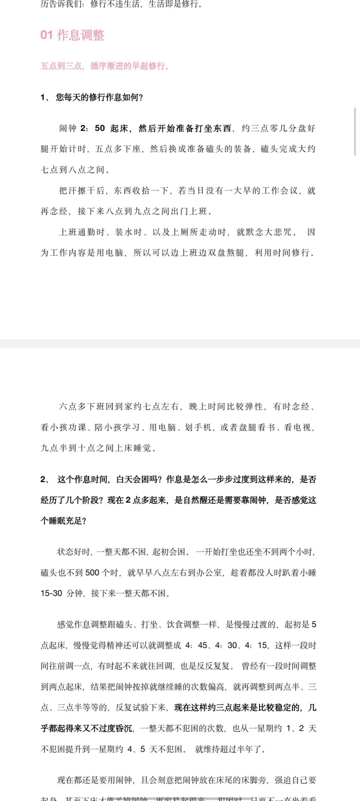
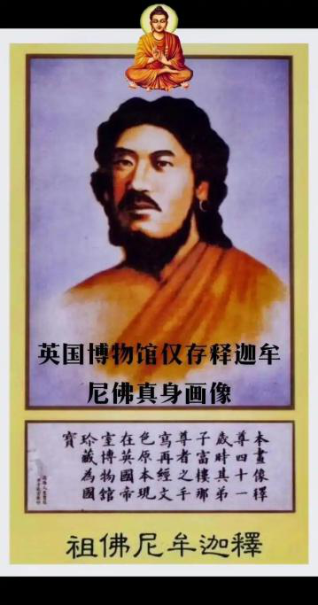

21二〇二六年三月(326)
2026年3月2日 官網(43)
今天是2026年3月2號週一，先祝大家新年快樂，明天又是元宵節，也祝大家元宵節快樂。還有現在國際局勢風雲變幻，又開始打起來了，也希望大家能珍惜我們現在這種安全的和平的環境。平時有空就多抓緊時間修行，做一些有意義的事情。那麼先從官網的問題回答。
1.
菊花臺
Tai師父你好，我來搶個沙發，想跟您問兩個問題，不好意思，可能問的問題比較低級，請您諒解，
1、我這人膽子比較小，小的事情或者一些危險就很容易放大，然後焦慮和緊張。單以開車這件事來說，我住處離公司六公里，平時可以開車去上班，也可以騎電瓶車，但是在一些下雨雪或者天氣特別冷的時候只能開車了，我有一次從公司回家，出公司門併入大路時候差點與直行的來車碰上，所以心裡一直有點受影響。
說實話我是焦慮或者害怕開車的，而且感覺正常情況騎電瓶車上班更加方便，
但是同事們說車買了就要多開，不然就是浪費，我自己有時候也很糾結，自己雖然很焦慮開車這件事，但是也怕長久不開，自己反而越發生疏了，所以有時候又告訴自己要去開，並克服這些恐懼慌亂的心理。而且貌似記得某次答疑師父您說過，我買了車而不去開它，是不是也是在損耗自己的福報？
為這點小事糾結，希望師父回答指導下應該怎麼做，也請老師諒解。
Taiguanglin
官網的第二樓，菊花臺，這位說他本來有焦慮緊張這樣的情緒，怕開車，首先你得對情緒有個正確的認知，這些情緒本來就潛藏在你意識裡，並不是開車導致的，而是只是開車是勾出情緒的因緣而已，所以滅情緒就得多修行，平時堅持修行，每天該打坐該打坐該唸佛該唸佛，這些修行做到了，情緒自然而然就會減少。
還有對命運有一個正確的認知，大災你是躲不過的，命運劇本已經寫好了，災是躲不過的，最多能做到大災小受，那些小意外的確可以用熟練的技術來躲避，所以平時就應該多練練。還有真正的自信是來自於你內心的強大，你得先相信自己會開車，而且開得好，你自己覺得自己不行，那真的不行。
平時可以在網上多搜一下有關開車的那些個小視頻，把一些開車時的注意點都記一下，然後多去看看那些開大車的人們，那些大車司機，他們是怎麼把大車開得飛起，你看看他們，他們行那你也行，那你看你開你的小車應該可以吧？
從修行的角度來說，我們都應該活在當下，事情來了就解決，來之前就不要去考慮，不要去想，最多你有個預案就可以了。還沒出去開車就想著可能出了事故什麼的，這樣的想法本身就是執著，會變成更大的煩惱，所以乾脆不去想最好。
你開車上路遇到什麼情況到時候再解決，現在手機都不有AI嗎？如果你真出了事故，當時一時腦子懵了，想不起什麼事情，拿出手機來問一下AI我現在應該怎麼辦？它會告訴你該打電話打什麼電話，應該怎麼處理？有傷者車怎麼樣，這些都會告訴你的。
不要老是在事情發生之前先去想象，然後去焦慮，人活著怎麼可能不遇到任何事情，你走路在街上走在街上也有可能被花盆砸死。所以說真正的自信還是來自於自己內心的強大。還有如果你覺得你是有

同體大悲心的人，哪怕是有菩提心的人，你這一生是要好好修行的，還要普度眾生的，你有這樣的大任，你自己這麼想，你也不會相信一些小事情能把你帶走。
就說到這裡吧，簡單總結一下，首先你得對情緒有一個正確的認

知，情緒並不是外來的，本來就潛藏在你內心裡，所以應該用修行來滅，然後遇到事情就提前有一個預案就可以，平時不需要老是去焦慮，這樣什麼事都做不了。
要說內心的強大，一個是來自於徹底都放下了，你連死都不怕，還有什麼可怕的？其次就是你對這個社會有責任感，對人有責任感，要做大事的這種願景，那就不相信會被一些小事情耽誤了你。
2.
菊花臺
2、另外還有個關於修行的，看了前段時間群裡臺灣先拜師兄的修行記錄，以及今天群裡管理員發的彼岸師兄百日築基的修行記錄，發現各位在家的師兄貌似都是在早上修行，不管是動功還是靜功，都是上班前為主，這些可能勢必影響睡眠，另外中醫子午流注的講法，這樣會不會影響傷肝血，因為個人修行鍛鍊計劃總是安排得多，但是用在每天修行的時間總是很少，所以想請師父仔細講講，後續可以的話，修行計劃我就直接抄彼岸和先拜師兄的作業了。
Taiguanglin
第二個問題你說的是修行要不要放在早晨，我認為還是放在早晨比較好，你不要管中醫裡的那些身體運作的那套說法，因為那是針對普通人說的，一個人不修行的人，那麼他身體休息和恢復最好的效果就是在睡覺的時候，所以他得保護好睡覺的時間段，但是作為打坐的人，打坐本身就比睡覺對身體的恢復是更有幫助的。
一開始剛上道的時候，剛開始的時候可能打坐會更累一些，但是一旦進入了狀態，等你可以打坐一個小時或者更長時間的時候，就比睡覺一個小時甚至兩個小時對身體是更有幫助的，所以應該是往修行的方向努力。
那麼具體做法你也不需要一開始從三點起床這麼來，你就從五起床先坐一個小時，每天堅持打坐一個小時，要麼四點半起來，先磕個半個小時的頭，再開始打坐一個小時，這樣還可以吧？四點半也就比平時多早起了一個半小時左右，然後你可以在中午上班的時候中間吃完飯，稍微眯一下眼睛稍微睡一下，這樣也可以正常一天的工作，先從你能接受的程度開始，這樣早晨的修行做起來。
3.
曉xiao
師父好！
感恩師父教導，我在師父這裡聽經聞法，獲益很多，尤其是很安心，感覺很安全和開心，願供養師父希望師父長久住世。
師父，我去年結婚很快懷孕，預計今年農曆六月份那會生孩子，距離爸媽家很近，還是像以前一樣來往，
我家從我很小就開始不吃肉，現在我還是跟以前一樣的飲食，孕期除了累點其他都跟平時一樣，之前可以打坐雙盤一小時，現在半個小時多一點，
做夢近三四年夢到多次我姥孃家平房的場景，夢中有各種情節，不過我的情緒不明顯所以就只記得在同一個場景，其他沒太多印象。去年底我又好幾次夢到我家之前住的平房的場景，夢到爸媽，尤其是我很擔心我媽這樣的情緒，然後我誦經、放生迴向給他們，最近一兩次夢到爸媽爬一根很高的柱子，我在下面，然後摔下來砸到我身上，我爬起來把他們扶起來，這個夢裡就情緒很淡，沒有之前夢到的很擔憂的情緒，
我很多年前算命的說可能這個時間有點問題，我或者我媽，我不知道如何對待？我是願意自己承擔業報的！我希望爸媽好，我願意替他們承擔，
請問師父，我應該如何對待這樣的情緒？目前看起來大家都跟平時一樣，只是我有一些擔憂的情緒，請問師父我應該是按正常修行，忽略我的一些情緒？還是應該做一些什麼？請師父明示
Taiguanglin
下一個問題，第三樓，曉xiao，這位是擔心父母。和前面的那位一樣，事情還沒有發生，就開始擔憂，這本身就是執著。這個就不需要，你先放下這樣的心態。我就告訴你這個世界基本的真相，父母肯定比我們先走的，大部分情況下都是這樣，所以你心裡早就應該有父母比我們先走或者病死或者怎麼個死法，有這樣的觀念，有這樣的提前心理準備，然後再有個預案，他們如果突然病了，你有錢送他們去醫院等等。如果突然受了外傷，你有什麼資源或者能力去幫助他們，有這樣的心理預案就可以了。至於擔憂這個問題，根本不需要，你該做的做到了，作為孩子該照顧的照顧到了就可以。你希望他們長命百歲，健健康康的永遠不死，這個執著本身就會給你造成更大的煩惱。所以對父母該放下的時候就先放下，從心裡先放下，你該做的應盡的子女的義務就該盡，其他就不要影響自己的正常生活。
作為子女能為父母做的最大的利益是能勸他們學佛信佛，然後開始修行持戒，能把他們引導到這樣的正路上，那是最大的功德，但是你做不到的話，那只能做一些功德迴向給他，有時間多陪陪他們，這樣就可以了。
那麼修行方面那就應該繼續下去，不要管這些情緒，因為情緒本身就是潛藏著的，以後你有了孩子，你還會擔憂孩子。所以先相信每個人都有自己的命運命數，該到了什麼時候該死的時候就會死，這個不是你能改變的，所以你擔憂也沒有用。
對於孩子也是，孩子也會帶著他的命運劇本來的，你能在他小時候對你有依賴的時候，對他可以有很大的程度上的幫助，還能可以引導他。但是一旦到了一定年齡，他也該有他自己獨立的那種思維，這個時候你再擔憂也沒有用。先正確認知社會、這個世界、我們人類社會運轉的規律之後，把這種情緒先收起來，好好修行，修到不再去擔憂，心裡沒有這樣的情緒為止。
4.
無畏圓滿
Tai師父您好，
1、您說要超過有頂才能達到阿羅漢這個是定解脫。有沒有只有初禪二禪直接能達到阿羅漢菩薩這種慧解脫。然後由慧生定這個有嗎？
Taiguanglin
下一個問題無畏圓滿，這位說有頂才能達到阿羅漢，這個是定解脫，有沒有只有初禪二禪直接能達到阿羅漢菩薩這種慧解脫，然後由慧生定這個有嗎？你都不知道什麼是解脫，解脫是客觀事實，不是單純的你意識裡我覺得我已經解脫了，那才算，不是這樣的。
你真的解脫了，那才是解脫，你腦子裡覺得對佛法的義理已經非常明白了，那我告訴你你現在已經慧解脫了，你知道什麼是阿羅漢了，這個算嗎？你覺得你已經解脫了嗎？是不是？不要貪求什麼捷徑，現在我在講《楞嚴經》，《楞嚴經》裡說了，有一種方法是到了四禪的最高天，也就是色究竟天的時候，滿足什麼條件的話，就可以直接成為阿羅漢，跳過無色界定。
還有一個叫富樓那的弟子，他是講法第一的人，十大弟子當中講法第一的人，他也是二十五聖中的一個，他講的法門裡沒有禪定，他就是廣泛地度眾生，幫助很多很多的佛度了眾生，也就是靠講法，然後他成了阿羅漢了，他在這裡沒提禪定。但是你要知道二十五聖所有人全部和佛有直接因緣，所以他們是可以直接得到佛的強大加持力的。
對於我們現在凡夫來說見不到佛，也沒有這樣強大加持力的來源，那你覺得應該怎麼辦？所以不要想著有什麼捷徑，你就按部就班地紮紮實實地好好修行。哪怕佛有很強大的能力，他可以把你從一個初禪二禪甚至四禪的人，直接把他提到阿羅漢，他有這個能力。如果你但凡有這樣的貪求捷徑的想法的時候，他就不會幫你。你明白這個意思嗎？
真正能得到佛菩薩強大加持力的人，他反而是不求加持力，他只是認認真真的修行，認認真真的度人，眼睛一直是向下看的，向下邊比自己境界低的那些眾生為他們服務的，而不是向上看向上求佛菩薩給我什麼，你這樣是得不到上邊的真正加持的好吧？
5.
無畏圓滿
2、現在中東戰亂好像從地球上三大刀兵，瘟疫，饑荒都存在，我們平時做什麼可以避免遇到這些
Taiguanglin
第二個問題，現在中東戰亂好像從地球上的三大刀兵什麼瘟疫饑荒都存在，我們平時做什麼可以避免遇到這些？
你不想遇到刀兵、瘟疫、饑荒，首先刀兵就是殺生吃肉，你不殺生吃肉，然後反過來多放生；瘟疫也是，你看到別的病人就多佈施一點，食物也好，醫藥也好，你不去傷害其他眾生就不會生病；饑荒同樣也是，反過來你多佈施一些食物，不管是人也好，小動物也好，平時多做佈施，佈施食物的事情，自己就不會遇到饑荒。我們能做的就是靠福報來避免這種事情，就是多行善多積德。有目前這樣好的環境的時候，抓緊時間多修行，爭取早日解脫，脫離這個五濁惡世，這樣就可以了。
6.
1803186
師父：有一個事我有疑問，玄奘法師臨終很痛苦，我感覺法師那麼大的功德為啥仍然不能免於受苦，他不能意識臨終自己出來嗎？這是事示現因果還是真的受罪，如果修行很高用得著這麼受罪嗎？但玄奘法師又那麼大功德，這到底怎麼回事？還有釋迦牟尼佛腿還有關節炎受苦，Tai師父請您開示。
Taiguanglin
下一個問題5樓，1803186，這位問玄奘法師臨終前很痛苦，他有很大的功德，他不能意識臨終自己出來嗎？無非就是兩種情況，要麼是他自己的業，他有這一段業要承受，要麼就是他故意示現這樣的狀態。像惠能他在，《六祖壇經》都已經講了，最後也沒說他是病死的，他是坐化的，也就是無疾而終。
釋迦摩尼佛是吃了信眾供養的有毒的食物之後中毒而亡，而且那個人是不知道的，他不是故意的。一個人修為很高，那麼該受的果報還是會受，只不過他受的時候的所感受的痛苦程度會比較少。
像夢參老和尚，他是患了癌症，已經診斷醫生說他只能活五年，但是後來他多活了二十二年，而且據說是一直帶著病弘法的，所以說果報是必然會受的，只不過你的修為高的話，承受的痛苦會比常人要少很多。
還有就是該死的命可以延長，也可以多活一些時間。但凡抱著肉身來的話，大概率都有這樣的那樣的痛苦。如果帶的來的少，那麼在前段時間修行的上半段就可以都消完，那麼最後能做到無疾而終。如果帶的業報比較多，那麼可能這一輩子都在受業報當中，到最後死的時候也可能是病死什麼，比較痛苦的方式死去。
也有一種說法是你的修為足夠高的話，就算身體痛，你的情緒上沒有變化，甚至可以脫離身體來觀察生病的身體，就看你前面的修行達到什麼境界，所以不要怕業報，必然會有業報的，只不過修為可以降低痛苦的程度，還有果報強的程度。而且每一世受完了這一世的果報，那麼下一世開始修行的時候起步就更高，離成佛就更近了一步。
我們很多人有這樣的疑問，都是因為基於當下的一世的修行來看，他們不看整個全世的，可以說是從無始以來所有的業，他不考慮這些問題，他只看當下這一世。像你一樣，你也是只看當下這一世，這個人從小開始修行修了一輩子，最後應該有一個無疾而終的善果，但是結果死得很痛苦，是不是佛法是有問題的等等這樣的疑問。
因為咱們的目光視野就侷限在這一世，只能看這麼點問題，因此會對佛法產生疑問。但是如果你能看到前世後世等所有三世的因果，那就知道每一世受果報他有他的前世因，而且受完了這個果報後面的修行進步會更快，而且這個是必須要經歷的事情，好了，明白了嗎？
7.
上官
1、師父，請問是否隨著修為境界的提升，修行人在做夢時會更多的做清明夢呢？一般到了什麼修為境界可以做到在大部分夢中保留著清醒意識呢？初禪可以麼？
Taiguanglin
下一個問題，6樓，上官，這位問修為到什麼程度能做清明夢？一般初禪以上到二禪基本上都是清明夢，而且夢都會消失，基本上不會再有夢了。
有夢那也是當時的狀態裡想了比較多的一些事情，所以你的修為已經到了二禪，但是你去做一些事情，短時間內你費心思去想了很多事情，那麼有可能會做夢，但是大概率還是清明夢。
8.
上官
2、師父，我現在能坐兩個小時以上了，然後超過一個月沒有洩了，但自然放鬆狀態下脊柱還是坐不直，腰部還是會彎，請問讓脊柱坐直有沒有技巧和方法呀？此外如何避免打坐久了腰疼呢？
Taiguanglin
第二個問題打坐兩個小時以上自然放鬆狀態下，脊柱還是坐不直。這個很正常，大部分人都是坐不直的，稍微往前彎的，你去寺院看那些大部分和尚都是這樣的，沒有幾個人是完全板直的，挺著上身的。稍微彎一點，但是你的身體很舒服，身體感覺不到身體的存在，這樣就夠了。你要說坐直的技巧，一個是找個地方靠著，然後往牆上靠著，還有一個辦法是多磕頭，把這個骨頭都給掰過來。
打坐久了腰疼。那是你氣完全沒有通，所以你更應該多坐一些，你現在先堅持坐到無法坐為止，每天這麼堅持，等全身的經脈都通了，應該是打坐兩個小時到四個小時都感覺不到任何痛苦，而且坐完之後身體很舒爽，這樣才對。
9.
眾生無邊誓願渡
頂禮師父，現在比以前找到修行的門一樣，跟著您能夠很安心的修行，每天磕大頭三百個，誦《地藏經》一部，早上打坐四十分鐘，晚上誦經《道行般若經》一卷，打坐四十分鐘。早上喝安療的三部曲，整個人氣血比以前好多了，睡覺也特別踏實，真的很感恩遇到師父您，頂禮頂禮頂禮。
想請問下
1、就這個打坐時長一直熬著最長到五十分鐘，熬不下去，心理意識跟著腿疼開始煩躁，很煩躁，所以坐不下去換成單盤，在坐到一個小時，這期間開始已經一年了，突破不了這個時間，早上很昏沉，能堅持起來但是很昏沉，意識能清醒，但是眼皮打架，不能昏睡所以會強制自己起來去睡一會，這個狀態也持續好幾個月了，這個昏沉好難突破，跟另外一個系統學習說提腰收腹精神提振，但是這個勁一直提不起來，請師父開示，現在飲食上已經不在吃肉兩年，也不吃雞蛋牛奶一年，鹽巴和油也儘量少了，安療的三部曲晚上喝菠菜汁，覺得還是精神不夠提振。
Taiguanglin
下一個問題，7樓眾生無邊誓願渡，第一個問題打坐已經達到五十分鐘，但是還是很昏沉，食物這方面已經都好了調好了，磕頭也是一天三百個。看你的年齡也應該是五十歲，你說還用交七年就可以交完社保，不知道你現在多少歲，五十歲三百個也可以了，但是能多加一點就是好一點，五百個左右是更好一些。不過達不到也沒有關係，現在主要的問題是你腦子裡有太多的妄想，有妄想多睡眠就多，睡眠多的人他平時不想睡的話就會昏沉。
那麼怎麼做到妄想少？你看你的所有修行裡沒有一個是平時一直唸佛這樣的說法，一個是早晨念一部經，晚上再念一部經，除了唸經之外就打坐磕頭。你平時只要一有空去就去唸佛或者找一個咒短咒或者長咒或者大悲咒也好，總之找一個咒來，平時就唸著，一直念著，一有空就唸，把你腦子裡這樣多餘的文字妄想都給滅掉。平時不去想，做事也是不需要去想的，大部分事情都不是需要非要專注的去思維的，這樣的話自然而然妄想減少，妄想少了，後面打坐的時候昏沉的狀態就會減少好吧？
10.
眾生無邊誓願渡
2、工作上的事對我的擾動比較大，看了您給其他師兄的回覆，能忍就忍，我這個習氣可能有點重，什麼事情都要走心，已經努力努力去感知了，能控制住一些，如果原來是百分之二百走心，現在是百分之七十，尤其早上打坐或者經行那個過去的心理煩惱就浮起來濁著那種感覺，這個工作我暫時不能辭職家裡人不同意還有七年社保交夠了我能就不幹了，但是現在這個業報得顯現的很明顯，有時候也會懟回去，又覺得修行人不應該，有點糾結。師父請辛苦您再開開示一下工作裡這個負面的情緒上來怎麼積極的對治或者說現在因為修行還不夠解決不了。
感恩師父
Taiguanglin
關於工作上的事情能忍就忍，你都想著七年後要離開，那麼根本不需要完全那麼上心，就當應付一下就可以了。先把自己的心從這個事情上抽離出來，以後有人跟你爭，你就說你開心就好，都讓給你，這樣就可以了。
修行人面對很多事情，一種方法是以更高維的，也就是站在高處往下看的視角，往下看，所有眾生都與你相比，至少與你當下的你相比他們是不懂佛法的，那麼我們可以認為他是愚痴的，既然他們是愚痴的，那我作為聰明人，我就不跟這些愚痴的人一般見識，這樣放下就可以了。
還有一種是以慈悲心來看待他，所有眾生他們都有他們的痛苦，你從對方的立場上去了解的話，他現在跟你爭這個事情或者和你發生這樣的衝突也有他的原因，你能從他的立場上去了解和理解，這樣的話也可以放得下。而且最終覺得這些人都是你未來要度的眾生，是佛所說的可憐憫人，可憐憫之人，這麼看也可以的。
這是一種心態的轉換，心態的轉化。並不是每一件事情我心裡一定要把它理解開了，好好想一想，然後最後放下，不是這樣的。只要你把自己的定位擺好，那就可以很多事情都不那麼重要了。
那麼當下你如果在工作當中遇到這些問題，能躲就躲，能躲開是最好的，躲不了那就只能忍，忍不了的時候再想辦法怎麼應對。我想只要做好份內的事情，大部分矛盾都是可以躲開的或者避開。如果實在不行也可以往下拖一拖，你不是說要七年嗎？那拖個幾年什麼問題都不是問題了。
11.
mynameisbonny
Tai師新年好！
修行有三年多了，基本三年沒有夢，有時我還想，我做的還行，可能佛菩薩覺得不需要發信息給我信心。
上週有一天做了一個夢，在家裡出現了兩條蛇，左腳腕被咬了一口，然後我老公幫我在傷口的地方擠血，然後右腳腕又出現有好多蛇纏繞著夢裡我求觀世音菩薩加持，然後蛇就都消失了。
但夢裡菩薩沒有顯相。因為我很少做夢的，所以想著問一下。
另外本來雙盤一個小時基本是穩定的，但是上週開始，到三十分鐘的時候，左小腿就酸脹得厲害，抗不下去，放下來緩幾分鐘再放上去就能再熬一小時的。我想著這個與夢裡被蛇養是不是有聯繫了？
Taiguanglin
下一個問題8樓，mynameisbonny，你說夢裡被蛇咬住了，然後開始疼，這個是時間上對的上的嗎？就是做了夢之後開始打坐的時候，覺得左小腿痠脹是這樣嗎？那麼就當它是業障來了，不管是與不是，咱們就按照它是業障來解決，先從懺悔開始，然後發願度它們，然後做功德迴向給它們，唸經迴向給它們。
還有你看夢裡還有老公幫你擠血，也說明你這個業障還有個外緣可以幫你，而且最終也是你求了觀音菩薩加持之後，蛇也消失了，說明這個業障還是可以解決的。
所以不需要擔心，你就按照剛才所說的，先從發願開始，然後該做的都做到。還有有業障的時候儘量要持戒，如果還沒有完全戒肉蛋奶這一類，那就從現在開始戒了。
12.
印龍
師父，在至少發大菩提心的基礎上，一般到了什麼修為會遇到再來人師父呢？這位師父是否會主動找過來呢？是否大概率是出家人呢？
我發的是平等普化心（是一步步發起來的），如果到時候沒有師父找到我，我可以連接您的意識跟您學麼？
Taiguanglin
下一個問題，9樓，印龍，這位問發大菩提心的基礎上一般到了什麼修為，遇到再來人師父？這個在第一本書裡說了，至少到三禪以上，三、四禪的時候。如果你真的需要再來人來指導一下，可能上邊會安排的，所以現在還沒到的時候就不要想這個問題。如果你真的發了大菩提心，根本不需要擔心，佛菩薩會一直關照你的，到了時候會幫你解決問題的。
而且在這之前，如果你真的修到初禪二禪，也會讓你出去傳法，在你那個程度上能教的一些人也會來向你求法，這個時候你還要認真教，來證明你真的有大菩提心，之後到了修為的時候自然會有佛菩薩安排的。如果是直接在禪定當中連接意識可以傳授的話，根本就不需要我，佛菩薩教你也可以。
如果是需要一個活人的話到時候再看看，根據因緣，根據佛菩薩的安排再看看。
13.
易小川
頂禮Tai師父
看《觀無量壽經》上說下品下生要在蓮花中要待十二大劫這麼久的嗎？這個十二大劫是娑婆世界的時間，還是極樂世界的時間？在蓮花中待這麼久有沒有覺知？會不會很難受？能不能加速？
我聽說有一種說法是，極樂世界一天是娑婆世界一劫，所以在娑婆世界時進時退的修也比極樂世界穩進的修更快，不知是這個樣子嗎？
原文：“命終之時見金蓮花猶如日輪住其人前。如一念頃即得往生極樂世界。於蓮花中滿十二大劫。蓮花方開當花敷時。觀世音大勢至以大悲音聲。即為其人廣說實相除滅罪法。聞已歡喜。應時即發菩提之心。是名下品下生者。”
謝謝Tai師父
Taiguanglin
下一個問題10樓，易小川，第一個問題,下品下生到極樂世界會在蓮花中待十二大劫，這個是娑婆世界的時間嗎？不管是什麼時間，你在裡邊是感知不到時間的長短的，所以你不需要關心這個。
還有聽說有一種說法是極樂世界一天是娑婆世界一劫？這個時間尺度肯定不一樣，這邊時間過了很長，但是那邊實際上過的時間很短，這個是的確這樣的。
所以在娑婆世界時進時退地修也比極樂世界穩進地修更快？為什麼要快呢？你為什麼要追求快？你有沒有看完前兩本書，《坐禪1》和《坐禪2》，一個人修成佛，在這裡沒有快與不快的問題，而是你要把所有的業全部消完，度完和你所有的有緣眾生，還有就是修心的部分，滅自己的妄想、分別、執著的部分，這個也消耗時間。以此來看，而不是要快與不快的問題。你有那麼多眾生要度，那麼必然快不了，所以不要管關心什麼快不快的問題。
我們去極樂世界是先拿下那邊的Buff，那邊的三十六萬億佛的加持力，如果你單純想要快，那麼的確在娑婆世界修行，你不去極樂世界，你就在這裡，每一世都在人道繼續修行，你以大菩提心求佛菩薩，每一世都安排在你這個世界消業和度人，那麼就可以了，那肯定很快，比去極樂世界肯定是快的。
要知道這個時間也是妄想，也是阿羅漢境界裡的分別心而已，你根本不需要考慮什麼快與不快的問題，你從佛的視角往下看，你就是凡夫，就這麼簡單，在這裡沒有什麼你成佛需要多快多慢這個問題，是凡夫就是凡夫，有妄想分別執著，還有很多業障。
如果一個人說他境界高，那就是從佛的視角往下看，這個人的妄想分別執著比較少，業比較少，僅此而已，就是業和妄想分別執著的多寡的量，以此來判斷，而不是覺得，這個人離佛修行還有多長時間，這個人離佛還要修行多長時間，不是這麼算的。
看佛經裡那些很多成道的人，不是佛，就是菩薩們，他們很多人都說他們已經遇見了多少多少佛，在遇到釋迦摩尼佛之前又遇到了幾十億的佛，在他們那裡又做了什麼功德，在《金剛經》裡佛也說了，在他遇到燃燈佛之前，他也遇到了多少多少佛，在每一世每一次去遇見什麼佛，在他的世界裡都會去消業和修行。
所以這個成佛是個漫長的過程，並不是說什麼一世之內就成什麼，短時間內要快追求快這個問題，所以你先放下對快的執著好不好？
14.
aaa
師父您好，我瞭解到了密宗，他是說啊讓人做愛，然後沒有那個淫慾，這個算是修成了。還需要有一個年輕的女性配合。我想問一下，他這樣做能去極樂世界嗎？還是說去他化自在天。如果不能去的話，那他們也念佛唸經。為啥不能去呢？
Taiguanglin
下一個問題aaa，密宗裡的雙修法那是方便說法，是針對於那個地方的人，那裡的權貴們所說的，他們一時放不下淫慾，所以就說這樣的法。如果從業的角度來看，你和一個女性又結了新緣，那麼就又多了一個要度的人，所以大可不必。
至於修行方面的確是做到沒有快感而止，而且是不會射的，一直保持著那個狀態，一直保持著勃起的狀態，但是不射，這樣才算練成功了，但是這個也不需要非要找女性配合，靠自己修到初禪、二禪都可以。
問題是很多人是以修行來理由去勾引異性，以他們並不是以修行的目的，而是行淫為目的，他們就貪求這個，這樣的話肯定是去不了極樂世界。要去極樂世界有淫慾可以，但是你得持基本的戒律。
如果說禪定功夫的話，那麼淫慾沒有滅盡，那肯定是在欲界天以下，至於去不去魔王天那就不好說。
15.
aaa
師父，吃五辛的人身邊有餓鬼，那戒五辛，他們多久會離開，謝謝師父
Taiguanglin
第十三樓aaa，吃五辛的人身邊有餓鬼，那戒五辛他們多久會離開？通常說戒肉七年，天人不再會避開，天人會來親近你，所以我們不考慮餓鬼去不去，而是你只要做到五辛也不吃，肉也不吃，堅持七年把吃肉的習氣完全放下的話，天人自然會來保護你、加持你。
至於餓鬼，你想讓他們走，你就算吃著五辛念楞嚴咒也就可以了，一般的正常的小鬼是不會靠近的，甚至是那些吃五辛的人，他們心正，心裡沒有那麼多妄念，不去想著害別人，這樣的話心正的人也不會被那些餓鬼給干擾，因為餓鬼通常干擾都是有貪慾的人，尤其是心裡邪惡的那種人。
《楞嚴經》裡的四種清淨明誨，第一個是戒五辛，這個是要修禪定的人，他們要專注的修禪定，那麼就應該先斷去這些個餓鬼的干擾，所以佛要求戒五辛。但是對於普通人而言，就算有鬼、餓鬼，你心裡正，心裡沒有那麼多妄念和不好的慾望，還有那種想害人的想法的話，餓鬼是不會干擾你的，所以沒有什麼考慮走不走的問題。
如果你說單純的身體的氣息上怎麼讓身體發生變化，那麼你只要不吃三個月，基本上身體上已經感覺不到有五辛的氣味了，這樣鬼就會不會因為你的氣味而來干擾你。
16.
牧羊少年
頂禮Tai師父，近來又看了一遍《坐禪1》，發現了之前沒有注意到的細節，就是您講您滅淫慾之後，看到了眾人啟程投胎去人間之時，阿彌陀佛用印度梵文和中文說了一段話。原來這裡在十年前的書裡就提到了印度和中國了，這個跟《坐禪2》裡面講的這個傳法設計中的兩個主角國對上了。這次看到這裡的時候有了這樣的理解，當時非常激動。
Taiguanglin
下一個問題，14樓牧羊少年，這位說是看了《坐禪1》，然後看到了一些內容是對上《坐禪2》的，也就是提到中國和印度，所以非常激動理解，謝謝。
多看幾遍對修行是有幫助的，而且根據自己的修為會看到的一些不同的內容，以前看不到的內容，就像佛經都是這樣的，以前看的時候是一種觀點，然後是過了幾年再看又是一種觀點。我現在講經，願意講，也是因為我現在看講經的時候再看的話，又有不同的一些觀點，也可以說是更深入的理解，我得把佛經裡的內容用我的大白話來講給大家聽。
本來是我自己看完，只是覺得最終的義理我知道，中間的這些很多內容不知道也可以無所謂，我是這麼看佛經的。但是現在我要講，那麼逐字逐句每一句我都得講清楚，所以重新看的時候會有很多新的理解。
還有關於我的書也是，我是如實的寫的，我是按照我的想法，或者說我的經歷如實的寫，是寫的是我認為的我的真相，所以每次後面寫的內容又和前面寫的內容是對上的，如果我在裡邊有謊言，我編出來的，瞎編的，那麼後面又可能需要再編一些內容，那和前面就會開始出現對不上的問題。
所以說直心是道場，你既然出來講法出來傳法，那就應該寫實話，哪怕你的理解是錯誤的，那個時候的理解是錯誤的，但是你如實的寫，寫出來之後，後面有了新的領悟之後，你再可以說那個時候講的那個是十年前的境界，所以有些講錯了，我現在重新講，重新再講，講對了，這就可以了。
這也不能說你講的法是錯誤的，因為從佛菩薩的視角看，他在讓你那個階段講法的時候，你只能講到那個境界，這是必然的。所以我現在看很多法師們講經，他講的經不究竟，我也覺得很可以理解，這樣完全正常。
因為他現在那個境界只能理解到那個程度，而且他講的經就可以度和他有緣的那些人，這些跟他們學的人也是在他那個境界裡可以接受這樣的法，再高端的法是他接受不了的，所以看到一些不究竟的法，我也覺得完全是可以理解的，而且只要他但凡真正的以大菩提心出來傳法，那都是應該支持的。好了，這個問題就說到這裡。
17.
鏡子
師父好。家裡人因為某件事發生了爭執，弟弟罵了嫂子，嫂子一怒之下回孃家叫來了一幫人到婆家大鬧一場，嫂子的叔叔還出手打了弟弟一巴掌。後來，嫂子回到婆家後一直對公婆不管不問，弟弟去嫂子家買東西和好，嫂子乾脆躲著不見。請問泰師父，從業的角度看，弟弟和嫂子是不是應該算是兩清了，弟弟罵了嫂子，嫂子叫人大鬧一場，還打了弟弟，應該扯平了。但是嫂子還不依不饒，覺得自己受委屈了。在未來世，弟弟是不是還要因為嫂子內心的不依不饒而揹負繼續還債的因果。
Taiguanglin
下一個問題15樓鏡子，這位說有兩個人一個人傷害了另一個人，A傷害了B然後B找人對A進行了報復，然後A也算是捱打了，然後再向B道歉了，但是B始終不接受道歉，那麼未來A是不是還要因為B的不依不饒而揹負還債的因果？
首先說這兩個人之間的因果可能就不是這一世，但凡能成為一家的，哪怕是什麼弟弟和嫂子，那也可能是有前世的因的，所以這個事情並不是當下這一世的，前世就有這樣的因，所以不能完全按照當下第一次發生的偶然事件來看因果。
如果你用這個角度來看的話，後面加害的弟弟A已經是向B道歉了，而且他也是該挨的打還是打了，那麼B始終不依不饒的話，那麼就是他的問題了，就不是A的問題了。
他該受的承受果報已經受完了這一世，所以後面的問題就不是他的問題了，你這麼看就可以了。如果把這個事情再往前推，前面的看前面的因果了，這事到這裡根本就不是結束，後面還會有，而且這種角色互換的事情還會越來越多，現在是什麼弟弟和嫂子，有可能下一世哥哥也牽扯進來，還是婆婆也牽扯進來，所有人都是在一家人，每個人都有他的立場，所以每一個角色估計都得來一遍。
所以咱們就從一個修行者的角度來看，如果你做了什麼錯事，你也受到了果報，你也向他道歉了，但是對方不依不饒，那麼這也不能再算是你的問題了，你的事情算是已經在這一世你能做到已經做到了，這就可以了，不需要再考慮其他問題，人家放不下對你還保持恨意，那是他的問題。
還有現在講《楞嚴經》那裡也有一種人叫毒類，毒類就是喜歡這種過度報復的人，這種會聯繫到下邊的畜生道，那就是毒蛇這樣帶毒的動物，再往下聯繫到餓鬼道，那就是蠱毒鬼，再往下就是地獄道了。所以這種喜歡過度報復或者長時間懷恨在心，別人道歉的時候也不接受，這個是他有他的果報，而對於你這個人，你自己能放下你自己誠懇的道歉，這也就可以了。
18.
mrxx
頂禮Tai師父，請教幾個世界觀/宇宙觀的問題：
1、看Tai師父的書上說各層天界對應的物理位置最終是銀河系的中心，是否可以理解為欲界天重合在地球物質層面，色界天重合在太陽系核心區域層面，無色界天重合在銀河系中心區域層面？地獄是否重合在地球地心區域？
Taiguanglin
下一個問題16樓mrxx，第一個問題，各天層對應的物理位置最終是銀河系的中心，是否可以理解為欲界天重合在地球物質層面，色界天重合在太陽系和核心區域層面，無色界天重合在銀河系中心區域層面，地獄是否重合在地球地心區域？不是。
你看第二本書沒有看明白，現在銀河系的中心是須彌山，這個須彌山像柱子一樣往下插著幾個世界，最上邊是忉利天，也就是帝釋天所在的天宮。
然後往下到了須彌山的中間區域，半山腰的時候，那裡是四天王天，再往下到了三角的地方，就是我們地球所在的世界。
所以這個銀河系並不是圓盤狀，而是像一個圓錐體一樣，上邊頂上那邊是連接著須彌山，中間地方是須彌山，我們這邊是圓錐的下邊下襬邊，四天王天是圓錐的中間大概中間位置，然後在物理空間上和欲界天都是隔開的，並不是重疊的，和我們重疊的那就是鬼道眾生，會有一部分重疊到我們這個世界，那更上面的天層都是已經脫離了這個最上面的須彌山的山頂再往上飄，往上飄上去，那就是一層一層的天界，所以和我們都不是對應的，更不和我們這個銀河系相對應。
還有地獄是趨向於宇宙的中心區域，這個宇宙是大宇宙，可不是我們地球這個小宇宙，所以並不是地球的中心。
19.
mrxx
2、阿彌陀佛的西方極樂世界是否在銀河系中心區域？
Taiguanglin
下一個問題，阿彌陀佛的西方極樂世界是否在銀河系中心區？並不是。那是完全另一個世界。我們銀河系在我們三千大千世界裡也有十億個，像銀河系這樣的世界是有十億個的，現在科學家觀察的這種大宇宙也是接近於這個數字，銀河系這樣的東西有十億個，甚至比這個更多，他們觀察到的應該是這樣。
20.
mrxx
3、佛說的三千大千世界，一個大千實際對應一個銀河系嗎？
Taiguanglin
所以第三個問題，三千大千世界是一個小世界，對應一個銀河系。
21.
mrxx
4、Tai師父的答疑書上有說2000年左右感覺世界被刷新了，會不會我們的世界是多個時間段拼接起來的？比如2000年前只有一個時間線，但2000年後有很多的時間線探索不同的可能性？
Taiguanglin
第四個問題，會不會我們的世界是多個時間段拼接起來的？不是。時間是根據我們眾生走的，如果你說2000年後有很多的時間線探索不同的可能性，你說的是平行世界嗎？不可能有這樣的世界。
你這個世界有十億個小世界，這都是獨立的小世界，你在這裡那你不可能在別的地方，你的完整的意識在我們這個世界，那就沒有其他世界另有你的意識，所以每一個眾生都有自己的時間線，所有的眾生在我們這個世界的所有眾生，他們一起走我們這個世界的時間線，並不是同樣的眾生卻有不同的時間線，所謂的平行世界理解了吧？
22.
mrxx
5、釋迦摩尼佛誕生在地球上的原因是什麼？其他類似太陽系和地球的世界有可能會誕生佛嗎？沒有誕生佛的世界還會有再來人傳法嗎？
Taiguanglin
釋迦摩尼佛誕生在地球上的原因是什麼？他要在這裡傳法，要帶要度這裡的和他有緣的眾生。其他類似太陽系和地球的世界有可能會誕生佛嗎？也可以。他可以化身形式出現在任何世界。
沒有誕生佛的世界還會有再來人傳法嗎？沒有誕生佛的世界就不會有傳法。佛是傳法的開始的那個人，所以他不開始其他人就不會傳法，但是其他人也有可能會去消自己的業，只不過不傳法而已。
23.
mrxx
6、太陽系中，除了地球之外其他星球上有生命嗎？比如和地球比較近的火星和金星，是否也曾經出現過欲界的物質生命？現在還存在非物質的靈場生命嗎？
Taiguanglin
下一個問題，太陽系中除了地球之外，其他星球上有生命嗎？你說太陽系的什麼八大行星九大行星是吧？在這裡有沒有生命，在我們維度上是沒有生命的，但是其他維度是有生命的，所以你說它們什麼臨界生命或者另一種形式的生命，那是有的。
24.
mrxx
7、月亮的鬼道特殊到正好可以完全遮住太陽，且有一面一直背向地球，月球的質量測算和探月器著陸的迴聲探測評估間接判斷月球密渡相比地球很低，或者是空心的？月球這個特殊的存在也是佛菩薩安排的嗎？有啥特殊的作用？
Taiguanglin
第七個問題，月亮的鬼道特殊到正好可以完全遮住太陽，卻有一面一直背向地球月球的質量探測探測器的什麼種種這些問題或者是空心的。關於月亮是什麼東西，我不能說。一切都是安排，一切都是安排好的設計好的劇本。
所以科學家們也說月球就像有人刻意安排放在那裡一樣，因為它不符合外界的，我們觀察到的宇宙的一些規律。在佛經裡說，須彌山山中圍著一個日一個月，這叫一個小世界，須彌山的山中間，這個不是太陽系，我們小的太陽系來說，太陽系是銀河裡的很小的星系，是吧？
這個須彌山是整個銀河系裡中間的一座山，在這裡也有一個日和一個月，但是我們看不見，因為和它的維度不一樣，我們看不見那個太陽和月亮發出的光芒，可以說月亮這個東西不管是放在哪個世界，它都是刻意安排出來的。
25.
菊花臺
Tai師父你好，不好意思，再問一個問題，
地藏長咒（具足水火吉祥光明大記明咒）和大悲咒的功效和作用有啥區別？這個咒語可以用來抵禦外魔嗎？
Taiguanglin
下一個問題，17樓菊花臺，地藏長咒具足水火吉祥光明大寂明咒和大悲咒的功效和作用有啥區別？這個咒語可以用來抵禦外魔嗎？地藏長咒就是《十輪經》裡的，側重的是增長福慧、健康、壽命、信息意念等等，這都是個人的問題，都是個人你自己的修為上的問題，而大悲咒有一定的功效是針對於其他維度的眾生的，所以這還是稍微有點區別的。
大悲咒針對於其他眾生的強度又弱於楞嚴咒，大悲咒更傾向於自我保護，而楞嚴咒有一定的殺傷性，它可以束縛那些靈體，有這樣的區別。
至於你要做什麼，你只是想單純的增加自己的福慧健康壽命等等，那麼你可以念地藏長咒，如果你想要大悲咒，這是對其他眾生有一些影響，可以抵禦的，也可以對他們以大悲心念的話，對他們有一定的幫助，那你就選大悲咒，楞嚴咒是修禪定的時候儘量要每天唸的，就因為有束縛外魔的功效。
26.
道心
Tai師父過年好！頂禮師父！
過年這幾天我突然又開始看小說和電視劇，尤其是情感類的小說和偶像劇，比如現在熱播的純真年代，覺得太好看了每天追劇還去看了原著。前幾年特別迷這些類似小說或劇集的時候還會做些情情愛愛的夢。。。這兩年修行後我就知道是自己淫慾未除所以一看這些小說就勾起了自己的心念體現在了夢境中。
但現在我不明白的是我其實已經有差不多一年不想看也不去看小說或者偶像劇了，這幾天又開始死灰復燃一樣，這是啥原因呢？我目前每天持誦一百零八遍大悲咒有兩個多月時間，之前刷到小說推送也不想看就划走了，但這幾天就很想看看。
而且在剛過年那幾天大概連續三四天每天做夢搞對象，那時還沒看小說呢，我記得在最後一次的夢境中我判斷不了人家要我去做的事情是不是邪淫，但我在夢裡清楚地告訴自己既然判斷不了那就不去做，要堅定地持戒！然後就醒了，後面就沒再做搞對象的夢。。。這是不是業力習性被翻騰出來的體現？寫到這裡突然很慚愧，夢裡醒悟要堅定持戒，但現實生活中又忍不住看了小說，既然知道不要去看那就堅定地不看就好了。感謝師父！
Taiguanglin
下一個問題18樓道心，你說喜歡看什麼小說、偶像劇情感類的。這種事情很正常，修行到一定程度的時候，會把內心的一些慾望給勾出來，以前有這個欲但是沒有實現的，那麼就應該去實現，尤其是不傷害別人的，那就去做了就可以了。
就像我以前說的，我自己回家後也打了一段時間的遊戲，以前想打，但是沒打通的那些遊戲我都拿出來打了一遍，這樣心裡就放下了。所以這也是慾望，這些願也是可以看做業的，願也會成為業的。所以你有什麼放不下的事情，但凡不傷害別人，你就可以做一做，做完就放下就可以了。
還有就是習氣的問題，像淫慾這個東西是修行到一定程度會必然會翻出來的，而翻出來的時候，如果你現實當中有能對應的一些事情，那就會聯繫上，比如有些人是愛看小黃片什麼的，言情小說之類的都會聯繫上的，所以不需要擔心這個問題。你該看的看完，然後心裡放下就可以。你只要心裡覺得喜歡看這個東西也是執著，對修行不是好事，你有這樣的正確認知的話，看到一段時間之後就不想再看了，所以不用擔心。
27.
明月照我心
師父您好，
1、弟子五天前遇到了個大坎，騎車滑倒摔傷肱骨頭粉碎骨折，左上臂打了十多顆釘子，做了六個多小時手術，痛的不能睡不能動，幸運的是遇到了好的醫生，好的護工，做了非常及時的手術，也有好的單間環境，今天終於覺得能喘口氣了，這五天一直在痛中念地藏菩薩、能坐一會時就唸《地藏經》、念大悲咒入睡。想著會和師父交流，以及有佛菩薩在加持，內心還是穩的（這幾天一直沒哭，一寫到這句淚流不斷，感受到佛菩薩一直在）。
2、想問師父這是我今年該有的業吧，今年衝太歲（甲子年、戊子日、甲子大運，三個子和午衝），剛開年就這樣，午月、子月之類的還會有事發生嗎？
Taiguanglin
下一個問題，19樓明月照我心，這位說五天前騎車摔倒受傷了，甚至做了手術，有骨折，問是不是未來還會有？這個不會。從你這些描述上看，這已經達到了你身體能承受的極限了。
這麼大的傷肯定是業裡就有的，你命運劇本裡就有的，那麼這種業它不可能連續給你，讓你承受不了，就算未來還會有，那也是等你這個傷過了之後，等恢復的差不多了，身體還能承受的時候再帶一下，不可能連著給你，這樣你就受不了了。
這也不是一件佛菩薩安排命運劇本的時候會做的事情。但凡是修行人給他安排命運劇本的時候，都會按照他能承受的程度安排業，不可能超過他承受的程度，這樣的話可能這輩子修行就毀了。
28.
明月照我心
2、另外吃素遇到了障礙，術後貧血嚴重，醫生要吃肉補血，其實這之前半個月，因為吃素後身體血糖問題加重進展到糖尿病，卵巢功能下降不再排卵（有生娃需求），在醫生要求下已經開始少量吃肉，雖然很不想吃，這些阻止我吃素的身體障礙也是業吧？弟子很慚愧問這個問題，但在身體和修行取捨上面糾結了很久，該如何能讓自己身體健康的順利吃素？
頂禮感恩師父
Taiguanglin
還有下一個問題關於吃肉的問題，首先你已經住院了，需要這個，醫生也這麼說了，也只能算是你的業了。你看惠能法師他也曾經在跟著一群獵人們生活，而且生活了很多時間，在這段時間他雖然是不吃肉，但是他還吃了肉邊菜，而且他還幫助那些獵人們，他一起生活總得幫助他們，他們保護惠能法師，那麼他得幫助他們，獵人們出去打獵，他算不算也是間接的幫他們殺生了，是不是？但是這也是他的業。
所以有些人一旦生到那些地方，他就會不得不吃肉，像西藏那個地方，哪怕在那裡修行的人，他也很多人吃肉，所以這就是他出生的時候帶來的業。
所以你現在遇到這樣的問題，醫生叫你必須吃肉，那麼你就把它當做業來理解就可以。但是你要知道，在義理上明確的要知道吃肉是不能解脫的，而且是在造業的。哪怕是以還債的角度來看，那也是在造業，只不過是報復，只不過處在報復的狀態。那麼這個報復我們儘量能少做就少做。
還有生娃的問題，我覺得你應該是求佛菩薩才好，不管是求觀音菩薩也好，求地藏菩薩也好，有很多女性生孩子，她本來就是不吃肉的，照樣可以生出來，只不過放在你這裡，現在又趕上了這樣個事兒，所以不得不這樣，所以希望你心裡不要有太過的負擔，醫生讓你吃，那你就少量吃點，先把這個病治好了再說，後面多放生，這樣就可以了。
對於吃肉糾結的人，我想說的是但凡你是個健康的人，還沒有病倒，我建議你還是不要吃肉，找別的方法，找別的任何替代的食物,營養都是可以替代的，大部分都可以替代，就可以了。
如果你是有什麼特殊的疾病已經到了必須住院治療的時候，那麼醫生要你這麼做，那你還是聽醫生的，因為這樣醫生也會負責。如果你但凡不聽醫生的，你自己堅持不吃什麼的，按照自己的想法去做，最後病情嚴重了，醫生也會有說辭，你也沒有辦法抱怨醫生是吧？所以你既然去醫院求醫生給你治療了，那就按照醫生的來聽聽吧好不好？
29.
降魔2024
佛是全知、全善的，
為什麼佛在生起妄想的時候，
卻不知道妄想是什麼？
其他的佛和這個佛在前面互動過，有過記憶，他就知道曾經有這麼一個人。
也就是佛與佛沒有互動就不知道彼此嗎？
甲乙丙丁佛，既然沒有互動又是怎麼知道彼此？
四聖佛是怎麼知道其他墮落的佛，把一個跌入地獄的人重新拉出？
如果互動過，證明已經墮落下去，就不是佛的狀態。
如果他們墮落後成佛，也不能說是四聖佛第一個成功把人帶出來解脫。
四聖佛是在非佛的境界，有過互動，再創造世界，研究出怎麼成佛的嗎？
Taiguanglin
下一個問題20樓，降魔2024，這位問佛是全知全善的，為什麼佛在生起妄想的時候卻不知道妄想是什麼？他知道他在生起妄想，但是他不知道這個妄想往下發展之後會變成什麼，只有吃過苦才知道這個東西往下發展之後會變成很大的痛苦。所以有了記憶，從凡夫再修行回到了佛，有了記憶之後就知道妄想剛一生起就馬上停止，因為這個東西你往下發展就會變成極大的痛苦，他已經有了這個記憶。
佛與佛沒有互動就不知道彼此嗎？就算沒有互動，只要有妄想起了，有一個佛起了妄想，其他佛是可以感知到這個佛的妄想的。所以算是知道有這麼一個人，但是一個佛他從來沒有起過妄想的話，其他佛是不知道的。
甲乙丙丁佛既然沒有互動，又是怎麼知道彼此？這個已經說了。上面的問題，只要起了妄想就知道這個妄想有一個主人，那個主人可以稱之為佛，因為所有眾生的意識全部重疊在一起，所以現在佛也知道我們在起的任何妄想。
如果互動過證明已經墮落下去，就不是佛的狀態？的確是，如果他們墮落後成佛，也不能說是四聖佛第一個成功把人帶出來解脫。那是誰帶出來的？總得有人帶出來，他自己解脫不了，總得有人去傳授他們正法，然後把他們帶出來，那麼四聖佛就做的就是這個事情。
為了在自己墮落之後還能找回自己，所以和人結了搭檔，另一個人也就是那個佛另一個佛，他不墮落他不下去，他等於是有人落水了，有人要下去救人，但是如果直接下去的話，下去救人的人也有可能爬不出來。所以定有一個人在岸邊，給要下去救人的人身上綁了一根線，綁了一個繩子，然後這個人下去救已經落水的人，這樣兩個人合作去救人，就是這麼個原理。
四聖佛是非佛的境界有過互動，結成搭檔的時候是在佛的境界就可以結成搭檔的，所以這個互動也算是在非佛的境界，以互相願力來結成搭檔。再創造世界，研究出怎麼成佛的嗎？是先研究好了想法之後，先想出了這樣的方法之後再去落實，看看行不行，行了之後這個方法就可以普及開來了。
30.
mynameisbonny
Tai師，我公公十三年前因為糖尿病發症，腎衰竭等痛苦，選擇了上吊自殺。後續我婆婆也為他在廟裡超度過，那時我還沒有修行。貌似十多年過去了，家裡也沒有什麼人有夢見他。我蠻好奇，這種有可能說明他去投胎了嗎？當然我修行後也是在廟裡有做一些法事超度我老公家的祖先，那公公也在範圍內吧？這種一般下面沒有找過來的話，就不用去管了是嗎？
Taiguanglin
下一個問題21樓，mynameisbonny，一般是因為極端痛苦，自己承受了很大的痛苦，已經達到了不能再忍受的程度而選擇自殺。這樣的人基本上是按照正常死亡來看的，因為他自殺首先是自己承受極大痛苦，已經難以忍受。還有家人，就是不希望再拖累家人，這樣的情況下選擇安樂死也好，自殺也好，這個是按照正常死亡來算的。
只有那些還沒有承受的那麼極大的痛苦，就是一時負氣什麼的一些原因，他還是有路可走的情況下，選擇自殺，這樣才算是自殺，然後就要等很長時間，等到陽壽結束才會下去。
所以我認為你公公那樣以併發症的情況下已經感到很痛苦了，所以選擇自殺，這個是已經按照正常死亡來處理了，所以後面你的家人又給他做了一些超度，做了功德，那麼他應該是去往了下一個輪迴去了。下一個輪迴不一定是什麼人道也好，但是下一個輪迴肯定是已經把他的意識給束縛住了，所以沒有辦法再向你們發信息。
如果他去了鬼道的話，他在那裡過得苦，而且知道上邊的人還在惦記他，那麼他過得苦的話必然會來傳信息的，希望他上邊的人給他做點什麼，如果是去了其他道，這個意識完全被束縛住了，不管是地獄還是人道還是畜生道，這樣一般就不會再傳話了。當然我相信你們在家裡已經給他做了超度什麼的，那肯定是不至於再下地獄了，應該還能成人。
31.
Wangguangying
頂禮師父
1、有些人說極樂世界沒有女人，師父說有，可以展開講一下具體情況嗎師父。
Taiguanglin
下一個問題，22樓，Wangguangying，問極樂世界有沒有女人？這個問題已經回答過了，在我們這個世界，欲界天對應的是那邊的下品下生，所以有淫慾也可以去極樂世界。既然有淫慾的話，那就有男女之別，只不過在佛的強大的加持力下，你這個淫慾會比這邊的世界要少很多。
但是這裡又有很多人是夫妻一起去的，想去了那裡還想保持這種關係，這種身份之間關係，所以還是以夫妻的形式存在，所以有女人的身體和男人的身體。下品下生是有區別的，男人和女人是有的，只不過行淫這個事不像我們這邊這樣這麼濃重，那邊也是有所謂的行淫的，只不過沒有這麼濃烈。
在我們這個世界的欲界天，他的行淫六慾天是這樣的，四天王天和㣼立天是和我們人類是一樣的，因為這都屬於地居天，在地上生活。到了夜摩天是執手，碰一下抓一下手就算行淫了，他已經滿足了。兜率天是相視一笑就算滿足了。化樂天是俗視就是盯著長時間看，然後就算滿足了。到了他化自在天暫時暫時看一眼就算滿足了。這是欲界天的行淫。
所以這樣的天界對應到極樂世界的話，他是有淫慾，但是在佛菩薩的強大加持力下會驟然減少，會比咱們這邊要弱的多。但是他畢竟還是有點的，而且更重要的一點是，很多在這裡是夫妻的人去了那個世界，他們還想保持這樣的身份關係，所以還是有男女的，只不過從外貌上看，男女的區別，男女的性別特徵，身體上變得很弱，有些基本上是看不出來是男是女，但還是有區別的。
32.
Wangguangying
2、讀經需要思考經的意思嗎，還是只需要讀就可以。
Taiguanglin
下一個問題，讀經需要思考經的意思嗎？還是只需要讀就可以？看你的需求了，你是把讀經作為修行，每天反覆的讀，那麼不需要思考內容，你只要專注的讀就可以了。
如果你是要學習經的內容，而不是每天讀，只是這一次要好好學習這部經，那應該思考一下，我建議你只要但凡是修行，那麼只要把注意力放到經上，放到這個字上，而不去思維，不去思想，不去思考，不去打妄想，這就可以了，這就是修行。
你要專注的思考這個內容，那就是另一種執著了。我們唸經是為了滅文字妄想，不是為了去思考，是為了放下這種文字妄想上的思考，這種執著，所以乾脆不想是最好的。
33.
無為心內起悲心
Tai師父好！
請問為什麼會有劫數的出現，為什麼水，火，風劫每次都要格式化一遍世界？佛菩薩不能讓世界穩住不變嗎？為什麼要格式化呢？
Taiguanglin
下一個問題，23樓無為心內起悲心，為什麼會有劫數的出現？為什麼水火風劫每次都要格式化一遍，世界佛菩薩不能讓世界穩住不變嗎？為什麼要格式化？格式化是眾生的業力所致，眾生的痴導致風災，眾生的貪慾導致水災，眾生的嗔念導致火災，達到一定程度之後就會爆發，而且格式化對這個世界也是有幫助的，要重新開始。
你看每次打仗是不是同時死很多人，格式化相當於戰爭一樣，你那麼理解就可以了，就是一次性帶走很多人，讓世界重新開始。
34.
幻世浮生
Tai師父好！頂禮師父！
弟子從25年11月15日才有幸接觸到您的修行法門。從那時開始練呼吸磕頭練腿。目前有幾個問題想請教師父，求師父慈悲開示！
1、弟子去年7月後絕經了。今年1月份又開始出現月經，持續時間和以前一樣，但是量很少。師父上次答疑時說應該和練雙盤有關。2月份又按時來月經了，但是量很大，我本身比較遲鈍，但是因為現在每天練腿，所以頭一回體會到氣虛的感覺。前面四天沒法磕頭了。但是很奇怪的是第五天我試著磕頭，竟然很輕鬆的感覺。不過之後每天磕頭又開始全身沉重了。
我的疑問是：我以前看中醫說我氣血不足，氣滯血瘀，我這次量大是不是表示血瘀好一點了呢？月經期間是不是根據個人情況練呼吸，磕頭，練腿呢？
Taiguanglin
下一個問題，24樓幻世浮生，這位問看中醫說氣血不足，氣滯血瘀，我這次量大，是不是表示血瘀好一點了？月經期間是不是根據個人情況練呼吸，磕頭練腿？中醫上說的氣滯血瘀是你的血液循環不太好，並不是說某個地方有血瘀。如果你說某個地方血瘀的話，可能是後背這些筋膜下邊筋膜過於緊的話，毛細血管會循環不太好，但通常所說的氣滯血瘀是整體上，身體整體上血液循環不太好。
量大表示血瘀好一點？並不是，量大反而讓你耗氣了。所以可能短時間內更氣虛。這女人就是這樣，所以要想練到完全沒有月經，這也是需要長時間修煉的。
月經期間是不是根據個人情況練呼吸磕頭練腿？是的，一般建議月經期間就不要打坐，磕頭可以稍微磕點，但是不要太多，練腿就算了吧，練呼吸沒有關係。
35.
幻世浮生
2、請問師父，一般人熬腿，從一點五到兩小時，是不是比較難很快通過，需要較長時間熬呢？
Taiguanglin
還有一般人熬腿從一點五到兩個小時是不是比較難很快通過？也算是吧，因為兩個小時也是一個坎，過了兩個小時氣通了，然後打坐的時候就不那麼痛了，所以在這之前氣不通的地方都會疼起來。尤其是氣血虛的女性，過的時間要比男人要長。
36.
幻世浮生
3、我每天下坐以後，都感覺腿痠脹軟，是不是氣血不足呢？我本來就飯量很小，現在努力不吃主食，可能妄念多吧睡眠不好，是不是需要吃點中藥呢？
感恩師父！頂禮師父！
Taiguanglin
下一個問題，我每天下坐以後感覺腿痠脹軟，是不是氣血不足？也算是吧，按理說如果已經氣全通了的話，打坐起來應該是更舒爽的。但是氣血不通的情況下，打坐的時候就在修復身體，修復身體就需要很大的能量，所以起來之後顯得更累，本來不痛的地方會有些痛很正常。
飯量很小，現在努力不吃主食，可能妄念多睡眠不好？對，妄念多就會睡眠不好，可以吃點中藥，中藥沒有關係，你覺得對身體有幫助可以吃點，只要不吃動物成分就可以了。
37.
追光的趕路人
頂禮師父！新年好！
老家有個住在鐵皮房子的鄰居，倆夫妻都是自閉症患者，幸運的是兩個孩子是健康的。我時不時會給孩子們送物質用品過去，對方回禮自己家裡雞蛋。考慮到他們家境貧窮，所以都退回去了。那麼我們拒收他們的禮，是不是他們就沒有佈施的福報了？
我也是非常願意持續支助這兩個孩子（一個小學，一個沒有上幼兒園），未來他們可以改變命運。
Taiguanglin
下一個問題，25樓追光的趕路人，你先幫助了他們，他們以回禮的形式給了你雞蛋，這個不算佈施，你還是建議他們，勸他們把雞蛋佈施給真正需要的人，吃不上的人，這樣才算佈施。給你就不需要了，給你就算是回報了有報酬的感恩而已。還有，你是繼續願意資助兩個孩子，這是好事，你去繼續做就可以了。
38.
muma吉利
頂禮師父
師父，陽神可以顯像讓人肉眼可見嗎？
陽神都是球形嗎？他們是怎麼識別對方的？怎麼辨別誰是誰？
Taiguanglin
下一個問題，26樓muma吉利，陽神可以顯像讓人肉眼可見嗎？陽神都是球形嗎？它們是怎麼識別對方的，怎麼辨別誰是誰？陽神想讓人看到的話是可以讓人看到的，以你能看得到的頻率來顯現是可以的。
陽神都是球形嗎？是的，正常陽神都是球形，但是二禪還沒有完全進入到那個狀態的時候，還有初禪二禪這兩者是有點像人。尤其是初禪的時候，陽神真的出來了還是人形，二禪的時候更趨向於球形，但是還是有手有腳有頭的，到了三禪才是完整的球形。
他們是怎麼識別對方的？根據妄想來分別，都知道誰是誰，相互之間都知道，因為妄想不同。
39.
huiji
Tai師父過年好！頂禮師父！
請教兩個問題：
1、請問在寺院發心時，做事的標準是基於事本身——做好；還是按領頭居士的標準——她怎麼說就怎麼幹（不考慮其他的）；
Taiguanglin
還有下一個問題27樓huiji，請問在寺院發心時做事的標準是基於事本身做好，還是按領頭居士的標準？她怎麼說就怎麼幹？你就按照領頭的說法來做就可以了。你不需要去自己想什麼，你按照別人的命令來做，所有的責任由她來負，這樣就可以了。
就怕這種剛剛進駐的人有太強烈的自己的想法，一定要按照自己的想法來做，這本身就不是適合在這種組織裡生活的人。
40.
huiji
2、冬季經堂和齋堂因為暖和，有很多甲蟲飛進來。領頭居士要求把活甲蟲丟到室外（零下二十度會被凍死），這種事怎麼處理好；
（有一次給蟲子唸了三皈依後丟在外頭，事後很後悔；是否以後繞開——不幹這種活兒？）
頂禮感恩師父！
Taiguanglin
冬季經堂和齋堂因為暖和，有很多甲蟲飛進來，領頭居士，要求把活甲蟲丟到室外，會被凍死，這種事怎麼處理好？有一次給甲蟲唸了三皈依以後丟在外頭，事後很後悔，這種事以後不幹可以嗎？的確是的，你跟她說這樣有可能會讓它們凍死，所以你是不願意幹，你這麼說就可以了。然後她再要求你，你就找師父來問，寺院裡肯定有師父，你找師父來問問他，讓他給個明確的說法，師父比這個領頭的居士應該大，就按照師父的說法來做就可以了。
這和前面的按照領頭的居士標準來做事情，不矛盾，因為這個是戒律根本大問題，這個不是單純的一個小事情上聽誰的命令的問題。如果這裡不涉及到殺生這樣的大事的話，就按照領頭居士來說的，但是在這裡涉及到殺生的問題，這個是個大問題，所以你就找當地的師父來問，自己不要亂做決定。
41.
牧羊少年
頂禮Tai師父，我自得聞您的法之後就一直信受奉行，唸經唸咒打坐磕頭戒肉飲食發願放生全套的都有在系統性的做，然後現在打坐在七十分鐘左右，磕頭在六十分鐘左右，肉戒了，飲食上早晚餐也穩定的不吃了。
最近幾天感覺到一方面腦子裡的妄想變少了一些，另一方面身體也好了一些，注意力也更集中了一些，換言之最近能夠明顯地感覺到身心都進了一步。同時最近兩天，連續兩天午餐都是麵條，然後吃了麵條之後下午感到胃裡發酸，以前吃麵條從來沒有出現過這樣的情況。這樣的狀況是不是說明現在我該到了戒米麵的時候了？
Taiguanglin
下一個問題，28樓牧羊少年，這位說吃麵條，下午感到胃裡發酸，以前吃麵條從來沒有出現過這樣的情況。那是的，面有些人是不適合吃的，就是麩質有敏感的人，麩質過敏的人，據說中國有百分之四十的人是麩質過敏，所以如果選擇主食的話，麵條比米飯差，但是米飯肚脹的程度要比麵條還大一些，所以麵條也好，米飯也好，能少吃就儘量少吃最好。
主食就以土豆、地瓜、南瓜這幾樣，還有芋頭，這些吃了沒有任何副作用，吃完肚子也舒服，消化也好。
42.
天生無才
頂禮Tai師父！請Tai師父慈悲開示：1、我學習了幾遍師父講的《坐禪1》和《坐禪2》，感到非常震撼！請師父歸納一下《坐禪1》和《坐禪2》的內容、兩者的關聯，感到《坐禪1》已經講得很究竟了，是什麼緣起師父復出講《坐禪2》？
Taiguanglin
下一個問題天生無才，這位問《坐禪1》和《坐禪2》的內容，兩者的關聯感到《坐禪1》已經講得很究竟了，是什麼緣起師父復出講《坐禪2》？
《坐禪1》側重於修行，個人修行，但是它在裡邊沒有提到發願的問題，等《坐禪2》的時候是側重講發願的問題。既然講到了發願就會涉及到眾生的問題，那麼眾生就涉及到了整個世界的創造，眾生的輪轉等這一系列的問題，還有文明設計等等，所以這兩個應該是連貫著的。
但是我講《坐禪1》的時候，我也覺得這個就已經夠了，但是後面十年修行又有了新的領悟，然後上邊又要求我講，所以我就講，而且講了兩年，現在又開始講經什麼的，發現的確有人從《坐禪2》中得到了很大的利益，有很多人發了大菩提心，這就是修行的開始。
之前的修行，如果你沒有大菩提心的情況下修再多，那也是為了自己。就算是有出離心，那也解脫不了，只有有了大菩提心上面才開始真正引導你解脫。所以說大菩提心是修行的真正開始，所以從這個角度來說，《坐禪2》才是真正的佛法，《坐禪1》屬於技術層面，和外道相通的，外道也有這樣的修法。
43.
天生無才
3、關於虛雲老和尚杯子摔碎開悟的故事，請問師父為什麼說
消業而開悟的？感恩師父！
Taiguanglin
還有第二個問題，虛雲老和尚杯子摔碎開悟的故事，師父為什麼說是消業而開悟？在書上也講得很清楚了，你的修行要達到那個境界，同時要滿足兩個條件，一個是業要少，業障要消。然後一個是修心的程度，妄想分別執著少到那個程度，這兩個條件同時滿足的時候才能開悟。
那麼這位虛雲他已經修禪修到了妄想分別執著少到那個程度了，但是還有業，那麼這個業就需要機緣，等時機到了才能消，所以到了那個時間點杯子摔碎，他受了一下驚嚇，那麼剛好消了那麼一段業，然後就可以進入開悟的境界了。但是我們對於大部分人來說都是這個業先消，然後再專注的修心，等修心的時候就會開悟，所以很多人都是在定中開悟的。
這個先回答到29樓時間太長55分鐘了，下面的問題再開另一個音頻來繼續回答。
2026年3月2日 微信公眾號(29)
今天是2026年3月2號，週一，回答微信公眾號的問題。
1.
Aspirin360
頂禮老師，人類壽命這三千年一直在增長，猶其工業革命後生活醫學水平提升的幾百年內，人類壽命翻倍；最新新聞AI技術帶來人類基因染色體蛋白質結構預測和疾病突破，硅谷一眾大佬科學家也預測未來幾十年人類壽命將超過一百二十歲；那為何佛經裡卻說這期人類壽命處在減劫，壽命會越來越短那？是因為釋迦佛出世後如今佛法三寶住世，所以才使現代人類壽命由減轉增？
Taiguanglin
第一個問題Aspirin360，這位說人類的壽命正在增長，為什麼佛經裡說人處在減劫？我認為還是處在減劫。在這個文明早期是最初的設計生命是一百二十歲，就是人體結構，這個機器，它的使用時長就是一百二十，但是在這個基礎上要進行業的增減，有善業可以讓你增加，惡業會讓你減少，這樣經過業的增減之後，出生的時候享受的命運就基本上定型了。
一百二十是肉身的基礎設定，並不是說你肯定能活到一百二十歲，根據你的前輩子的業，再從那裡取出來的業的素材，再給你寫出來的命運劇本來說的，那麼到現在應該是基本上九十歲了，你的肉身出生的時候就是最長能有九十歲，但是在這個基礎上再進行業的增減之後，在人活著的時候再看你有沒有造善業。還有少造惡業或者說不造本來該造的那些惡業，這樣的話在你的一生命運劇本當中的壽命還是會稍微延長一些。
還有時間的尺度，現在的一天二十四小時，相當於過去的十六小時，如果算上這個的話，壽命還是在減少過程當中，當然這樣的事情是人相信，有些人是不相信的，有些人覺得現在的確這個時間縮短了，一天過得很快，有些人覺得沒什麼感覺。不過2000年後的確對時間做了一下調整，會慢慢減少，到現在基本定型在相當於過去的十六小時上，這樣也是為了欺騙人們壽命減少的事實。
2.
泡影
Tai師父您好，弟子讀《地藏經》一年，然後又持大悲咒半年，這半年長時間沒看書思考，每天就唸咒走路練習雙盤，現在雙盤只能堅持幾分鐘。
問題：最近重新開始看書，投入工作，感覺看了幾天就腦子發漲發緊，感覺人是懵的。現在不管是念咒，看書等，只要一思考就腦子發漲發緊，出聲唸咒還好點，默唸腦子特別緊。我現在工作需要長時間思考，但是又達不到那種不用思考就知道答案的境界，請問如何解決一思考就腦子發緊發漲的問題？
Taiguanglin
下一個問題泡影，看書就會腦子發脹發緊看，修行的時間還比較短，《地藏經》一年，持大悲咒半年，打坐也是幾分鐘。你發脹發緊主要是你的身體不行，不是說什麼單純的因為以前沒思考，現在突然思考了。按理論上說思考的確會往腦子充血，這是真的，不過正常的思維起碼兩三個小時應該沒啥問題。
我以前也說過我寫書什麼做什麼的，一般兩個小時還是可以的，再多了連續幹兩三個小時可能會稍微累一些，但還不至於到腦子發脹發緊的程度。所以你這個問題還是呼吸的問題，你的呼吸不太好，沒有練成腹式呼吸，導致你腦子裡稍微往上漲點氣或者出點血，你就開始受不了了。
你要平時多做腹式呼吸，練習，先把這個腹式呼吸練好，這樣更多的血液往肚子上引，腦袋上就變得更加清爽，稍微多充點血，也不至於讓你覺得難受，好吧？你就先好好練腹式呼吸，還有磕頭什麼的。
3.
孟昊
Tai師父您好，觀法學得太多打坐的時候就忍不住這種練一會那種練一會定不下心非常懊惱怎麼辦？
Taiguanglin
下一個問題，孟昊，這位說各種觀法學的雜，學的多，然後打坐的時候忍不住練一會這個練一會那個，心中非常懊惱怎麼辦？那就不要練觀法了，你就心裡默唸佛，拼命地念佛，或者找個咒反覆的念就可以了。
雖然唸咒是低於觀法的修法，但你現在注意力散亂明顯還不適合學觀法，現在叫你專注地觀丹田，或者觀呼吸估計你也做不來，而且我是更建議觀丹田的，觀呼吸不太好，因為後面會更容易出問題，而且任何觀法都得修到一定程度就得放下，如果不放下的話都會出問題的。
所以看你現在狀況還是先從唸佛開始吧，好不好？
4.
是我的海
頂禮師父！弟子自小跟地藏菩薩緣分很深，之前也看到師父回答地藏菩薩也有相應的世界，可以發願命終之後前往他的坐下修行，但同時弟子也很嚮往極樂世界。我深知這樣搖擺不定，不能堅定發願不好，能否懇請師父詳細開示一下想要往生地藏菩薩身邊需要修行達到的程度，後續修行解脫的線路與極樂世界路線有什麼區別，以此決定哪個法門更適合弟子。感恩師父。
Taiguanglin
下一個問題，是我的海，這位問去地藏菩薩的世界還是極樂世界？如果你說世界的話，極樂世界是一個完整的世界，地藏菩薩是在所有的有地獄的世界裡，他都用分身創造一個結界來，然後在那裡傳法度人，所以你去了這個世界的地藏菩薩所在的那個地方，那也是屬於娑婆世界。
所以他在加持力方面肯定是不如極樂世界，這樣已經出了很多佛的完整的一個世界，它只是這個世界的一個特定的場所而已，去了那裡的確能得到地藏菩薩的加持力會大一些，但是遠不如極樂世界。不過好處是他對這個世界的管理，尤其是下三途的管理是有一定權限的。所以你想在下三途當個官，他是可以幫得上忙的。
所以你要說單純的去地藏菩薩的所處的道場裡，那去的那個條件還比去極樂世界應該更低一些，哪怕沒有修行，你有足夠的願和足夠的功德福德，你願意為地藏菩薩做事，也想在下三途做事，那去那裡完全可以。
好了，簡單來說去極樂世界對你的修行更有幫助，有加持力，而且一旦得到了，那是恆久的。去地藏菩薩那裡沒有那麼多的加持力，就這一點上看還是去極樂世界更好。
5.
NHQ
請問下師父：六根脫落/根塵脫落是什麼境界或果位？
Taiguanglin
下一個問題，NHQ，六根脫落和根塵脫落是什麼境界或果位？都是一樣的意思，六根脫落相當於三禪，三禪只能算聲聞，三禪四禪也可以叫聲聞，但是這個並不是完整的果位的名字。
6.
安碩
Tai師父好
1、請問Tai師父：福報是眾生對我的好情緒，比如我曾經佈施過A,給A帶來了好情緒，但如果A現在成為了阿羅漢，阿羅漢沒有情緒，那A還有對我的好情緒嗎，或者說我佈施A的福德還在不在
Taiguanglin
下一個問題安碩，這位問如果佈施給了阿羅漢，佈施給了A，後來A成為了阿羅漢，那麼他已經沒有了情緒，那A還有對我的好情緒嗎？那個時候是沒有情緒，但是這個事情已經成為了永恆的記憶。他曾經接受過佈施，那麼和你就結下了緣，他就必須來度你，這個是肯定的。
然後接受的佈施不管是以什麼方式，它只要成為了記憶的話，它都有反轉的果報，所以它未來會還你佈施。但是因為你是不求回報的進行的佈施，所以不一定是以同樣的方式還給你，可以有更多的方式，不侷限於錢的佈施。一句話來說，就算你佈施的那個人後來成了佛也好，成了阿羅漢也好，這個功德還在，而且他的修為越高，未來還給你的時候加的利息應該更大。
7.
安碩
2、請問設計德國發動兩次世界大戰的目的是為了讓歐洲更落後，從而構成美蘇冷戰的格局，給中國崛起的機會嗎，並設計蘇聯再把德國日本給打回去保護一下中國。
感謝師父開示。
Taiguanglin
第二個問題，設計德國發動兩次世界大戰的目的是為了讓歐洲更落後，從而構成美蘇冷戰的格局給中國崛起的機會嗎？戰爭首先是消耗掉大量的殺業，人類文明本身就有殺戮的習氣，所以要想它持續的穩定的發展下去，就得每隔一段時間發動一下戰爭，把這些個殺業消耗掉，要不然等它積攢到太多的時候，一次戰爭就有可能毀掉整個文明。
所以戰爭是必須的，中間小規模的戰爭是必須的，那麼一戰二戰雖然名字上寫的很起的很大，好像是世界大戰，但是從整個地球範圍來看，發生戰爭的範圍還是比較小的。
還有從劇本上看，德國和日本的戰爭導致了美蘇的崛起，世界從原有的歐洲為主的那種殖民體系，開始轉入了美蘇為主的盟國體系，同盟體系，這兩個還是有區別的。殖民是直接騎在人頭上吸血，那盟國好歹是以平等的身份組成一個集團，雖然兩國都是霸權國家，都有霸凌行為，這是必然的，但是比原有的那種歐洲為主的殖民體系還是先進了一些，等美蘇形成霸權之後，這兩極就會無限的對抗，這是兩極文明必然會走的結局，所以想要阻止戰爭就必須形成三足鼎立之勢，所以這樣就中國有機會上去了。
蘇聯的失敗主要是為了給中國長教訓，只要從他們的失敗當中看到中國應該走的怎麼樣的改革路線。還有雖然蘇聯失敗了，但是俄羅斯還保持著一級的身份，你看他只有一億多的人口和中國十四億，美國三億多人口的國家還能維持作為一個級，還坐在牌桌上，說明這個設計也是傾向於它的。
8.
清風幾許
頂禮Tai師，感恩遇見。想問一下Tai師念不空罥索神咒有什麼注意事項嗎
Taiguanglin
下一個問題清風幾許，請問一下Tai師父不空罥索神咒有什麼注意事項嗎？你要正常的唸咒，沒有什麼注意事項，沒什麼大不了的，你就唸就可以了。主要是你的發心問題，你念任何咒都不是以傷害其他眾生的那種噁心來唸，就是以大慈悲心來唸。
不空罥索神咒主要用來是驅魔的，但是你不能帶著噁心想要驅趕他們，而是你帶著慈悲心，帶著憐憫之心，希望他們好，用這樣的心態來唸，好吧？
9.
芬陀利華
師父好想問一下我們這裡樓區自殺的非常多不是跳樓的就是跳河的，住的這個地方很兇，以前是墳地，總而言之，死了好多人，年年都有，好多人勸我搬家。如果我好好唸佛的話，這些壞的磁場，是不是就不會影響到我了？與其改變外境，不如改變自己，俗話說得好，強者不抱怨環境，這樣對不對呢？還是說我一定得搬家換地方才行？
Taiguanglin
下一個問題芬陀利華，這位說他住的地方經常有人自殺，那是不是應該已經有了那種自殺找替死鬼的那些鬼？那樣的話每年都會有差不多的數量的人會死。
如果說你們樓區已經沒有人了，都搬家了，那你也搬吧，如果樓區還是有很多人，那麼像你這樣修行的人，應該還輪不到吧？他們找自殺鬼，想找替身，也不可能找一個有抵抗力的人，所以會找一些更弱的人，所以這樣判斷你目前還是安全的。
但是你住在那裡就帶著那種慈悲心多念《地藏經》迴向給他們，希望他們往生善道，但是夜裡就不要念了，尤其是初學，而且周圍還有這樣的事情的時候，就夜裡就不要念，白天念就可以了。
10.
芬陀利華
師父想問一下，我有個事兒比較犯愁，就是孩子學習好壞是不是和他自己福報有關，命運劇本已寫好，什麼學歷什麼能力的，和買學區房，專門去找好的學校有關係嗎？還是說找不找好學校都是這個命運比如大專的命運，就是大專的命運，研究生的命運就是研究生的命運，還是與其專注於找好學校，不如順其自然多唸佛培養福報。
Taiguanglin
第二個問題，孩子上學的問題，這個的確在命運劇本裡已經寫好了，但是他能去到什麼樣的環境，這也是在劇本中的。所以按我們普通人來說應該是盡人事聽天命，你能為他做到什麼程度就做到什麼程度，但是不要做到傾家蕩產的那種程度。你要為了買個學區房，而把自己原有的正常的能生活的房子都賣了，然後學區房還得按揭貸款等等，這樣就沒有必要了。
還有看他的學習能力，如果他是個喜歡學習的人，在學習方面很有潛力，而且他也想好好學習，去好學校，有這樣的目標的話，你為他做什麼都是值得的，但是他本來就不愛學習，趕鴨子上架似的被迫學習，你做這些事情反而會給他造成更大的壓力。
如果是不愛學習的孩子多跟他溝通一下，問問他他喜歡學什麼，他想做什麼未來。如果他有什麼明確的方向的話，你就支持他，只要不是犯法的事，正常的賺錢的吃飯的這種事情，那就多支持他。
如果他本身就是個很愛學習的人，但是你也要跟他說你的家庭條件，家庭目前這個情況讓他知道，不要過度的要求，在家庭能承受的範圍內就提供相應的支持就可以了。
還有多唸佛培養福報是對的，尤其是你的覺得自己條件不行的時候，更應該多唸佛多佈施放生等。
11.
寂灃
師父慈悲！請問Tai師您之前說做了惡事得惡報是因為讓別人起了不好的情緒，那如果有一個人傷害了我，我不起不好的情緒的話，他還會得惡報嗎？
Taiguanglin
下一個問題寂灃，這位問做惡事得惡報，是因為讓別人起了不好的情緒，那麼如果有一個人傷害了我，我不起不好的情緒的話，他還會得惡報嗎？那你是要報復嗎？如果你的情緒很穩定，沒有起不好的情緒，你還要報復嗎？你不報復的話，在他那裡你和他之間是沒有惡報的。但是他如果是習慣性的以這樣的方式傷害他人的話，你不報復照樣也有其他人報復，所以還是有果報的。
像我們幫助人也一樣，我們主動去幫助比我們境界更低的人，尤其是各種條件更差的人的時候，你幫多了，自然而然會有上邊比你條件更好的人往下幫助你。
如果你是反過來拜高踩低的人，瞧不起比自己差的人，對上邊的人更是諂媚，這樣的話你遇到的比你身份高的那些人也都是和你一樣拜高踩低的人，對你下邊的人使勁踩，對上邊是諂媚。
所以因果除了一對一的來回的這種報復之外，還有一個最大的原理就是同業相吸，你是什麼樣的人，你喜歡做什麼事情，你就會感召到同樣的人或者同樣的業。所以說多幫助比自己境界差的人，條件不好的人，你也能得到比你境界高的人，那些條件好的人的往下幫助。
12.
春風行天下
師父，有個說法是每個屬相都有自己的守護菩薩，如鼠（千手觀音）、牛/虎（虛空藏菩薩）、兔（文殊菩薩）、龍/蛇（普賢菩薩）等等，我覺得菩薩沒有分別心，對眾生是平等加持、渡化的，這個“不同菩薩守護不同生肖”的說法應該不成立，但不知道自己想的對不對？
Taiguanglin
下一個問題，春風行天下，你說的對，那個是民間說法，就是給每個屬相找一個對應的菩薩之類的，這都是民間的說法，並不是佛法裡的說法。
在佛法裡印度出現佛法的時候，印度是沒有屬相這一說的，怎麼可能有菩薩與屬相相對應的呢？
13.
大樹
老師好，大齡未婚男，尋求解脫，但是有家庭壓力，又必須結婚，如何找到一個合適的自己的伴侶？
Taiguanglin
大樹，這位求婚，想找伴侶，你應該找地藏菩薩或者觀音菩薩求伴侶就行。很多人說求地藏菩薩比較靈，但是你也得按照上面的要求要好好修行，還要多做功德福德，然後發願求一個好的這種道友和你能一起好好修行，建立一個佛化家庭的這種道友，這樣有大願的有這樣的意願的話，相信地藏菩薩會幫忙的。
但是如果看你的命運劇本裡完全就沒有伴侶，那就另說，但是從你所說的家庭有壓力，你又自己認為自己必須結婚等等這樣的說法來看，你應該是有伴侶的，所以你就請求地藏菩薩吧，多做功德。
14.
厚德載物
頂禮Tai師，弟子之前學過一門跟逆腹式呼吸有關的功法，看您所著的書裡提到過相關信息，所以弟子想請問坐禪到什麼程度就不能再練逆腹式呼吸的法門了
Taiguanglin
下一個問題，厚德載物，這位問坐禪到什麼程度，就不能再練逆腹式呼吸的法門了？你正常人就不要練逆腹式呼吸，它本來就是違背了正常的生理運作，所以它就是不對的，做多了都會有相應的對身體有損害的，所以平時就乾脆不練就好。你就練個正常的腹式呼吸多好，幹嘛非要抓住那個不放。而且呼吸應該是無作意下，就是不造作的不控制的，自然而然形成的，這樣是才最好的。
一開始我們都是正常的小孩都是腹式呼吸的，後來就妄想多了之後，身體收縮就變成了這種胸呼吸。所以把它改過來，回到原來的腹式呼吸上，這就可以了。
15.
春眠覺曉
師父好！我姨以前信佛，但不精進，家裡也供奉仙家。姨夫生病離世後一直干擾我姨，後來請通靈人看，說是姨夫不願意走，比較執著於生前的房子，給他燒紙錢、說好話都無濟於事。我姨轉述通靈人與我姨夫的話，說是姨夫（當時應已落鬼道）村子裡絕大多數人家都可以進去，唯獨幾家信西方某某教的人家進不去。我姨開始不信，唸佛求佛好久，結果還是一直被干擾。後來，她沒辦法就信某某教了。說來也怪，慢慢地，晚上真的就不受干擾了。
我知道，農村的人信佛基本上建立在求財保平安上，缺少正信和精進的修行，很難與佛真正相應。我想問一下，對於一般的學佛人來說，遇到外界眾生干擾，有什麼強有力的手段或者方法保護自己，不至於對佛法失去信心而退轉。為什麼西方的某些教，就是做做禮拜，祈禱祈禱就能阻止無形眾生的干擾。
Taiguanglin
下一個問題，春眠覺曉，這位問對於一般的學佛的人來說，遇到外界眾生干擾有什麼強有力的手段或者方法保護自己？要麼念大悲咒，要麼念楞嚴咒，還有穢跡金剛咒等等，什麼咒你只要念熟了，唸到做夢的時候都能念起來，應該都能起到保護作用。
還有不要吃肉，我們學佛就是要培養慈悲心，你一吃肉那就沒有慈悲心，那些眾生們靈界的眾生們更容易干擾你，所以你說的這位姨，也估計應該是吃肉的，所以還有這樣的事情，這個沒有辦法。而且她對義理也不是很通。
那麼你說的西方的某些教做禮拜，祈禱祈禱就能阻止無形眾生的干擾，人家做起碼也相信這個世界有神，而且在中國，中國人學基督教，他還是先相信這個世界還是有鬼鬼神神還有有神仙，還有就是有善惡報，有這樣的理念的話，信什麼神都是有點幫助的。
所以不管信什麼教你都是帶著慈悲心善待所有眾生，哪怕你是個吃肉的，那麼善待周圍的人，吃肉儘量不自己動手殺害，就是買所謂的三淨肉什麼的，這樣也比普通人強。上邊的神也願意引導這樣的人往更好的方向走，所以其他宗教你進的對，信的正那還是有幫助的。
16.
Yugang讀行
Tai師您好！關於唸咒的速渡，看了過往的回答，仍有不解。在實踐上似乎以念得快為好，Tai師的示範音頻也是如此。但既然唸咒是為了消除文字妄想，速渡應該不重要，有時候一字一字念得慢也許消除妄想的效果更好。這是因為咒子後面的佛菩薩嗎，是因為不同世界之間的時間差異嗎？比如說，這裡念一萬遍才剛剛夠上面一遍？請Tai師開示。感恩！
Taiguanglin
下一個問題，Yugang讀行，關於唸咒的問題，念得快和慢不重要，你只要專注地念就可以了。我也從來沒有說過唸咒要念得越快越好，只是唸的時間長了自然而然就會變快，這個不是自己強求的，要必須達到那麼快，而是念著念著就會自己變快，因為熟練了，而且你能快唸的時候想故意的拖慢一下，那本身也是妄想。
所以說你本來這個唸咒的節奏就是慢的，那麼你就按照慢的來唸，如果你是習慣於已經快念，那就正常的快念就可以。但凡你是要作意的去造作的去想控制，你把這樣的控制的心理放下就可以了。
但是我們在教別人的時候往往就是以遍數來說，所以為了完成這個遍數就不得不會變得越來越快。
因為教別人要求別人做，念多少這個時候說遍數是最容易的，我們沒有辦法說你每天必須也念多長時間，每一遍要念多長時間，這樣指導別人不太適合，對方也難以理解，所以直接告訴他這個咒裡面你念一萬遍十萬遍百萬遍，這樣就開始起效果，這樣告訴他，他自己會想辦法去唸。
17.
Amy
吃素三年，雞蛋牛奶喝，但是看到蟲子也會想放生。但是不喜歡家裡有蟑螂，看到就想弄掉，放蟑螂藥，不知道怎麼搞，矛盾體。
卍慧蓮卍
同問，這個太難了，家裡一堆蟑螂還有蜘蛛，源源不絕啊，大的小的一大堆，廣東又潮溼。
Taiguanglin
下一個問題Amy，吃素三年雞蛋牛奶喝，但是看到蟲子也會想放生，但是不喜歡家裡有蟑螂，看到就想弄走放蟑螂藥，不知道怎麼搞，矛盾體。關於家裡有很多蟲子的問題，這有一個咒語叫普庵咒，這個不是印度的咒語，是中國南宋的一位禪師他創作的咒語，但是據說很有效果，就看怎麼唸了，就平時念還有你該戒的都戒，然後帶著慈悲心來唸。
還有最好和它們，你心裡發願，說你願意給它們佈施食物，就在門口或者說稍微離家有一點距離的地方，稍微離著一點距離的地方放食物讓它們去吃，然後跟它們說你願意為它們佈施食物，它們就不要在你眼前晃盪，讓你看不見，至少這樣，行不行？
你這樣跟它們發願，然後繼續給它們做佈施食物的事情，這就可以了。至於管不管用，這得看每個人的狀態，有些人說管用，有些人就說不管用。還有每天做功課的時候，做完再回向給它們，希望它們都能往生善道，還給它們念一些三皈依等等。還有帶著殺心放蟑螂藥，去弄死它們等等這些事情，說實話會給你帶來更大的果報。
像這裡提問的有一位朋友當中也說，他年輕的時候經常殺蟲子，總之殺了很多種地，然後就得了皮膚病，一般殺蟲子殺多了就會得各種皮膚病，所以還是儘量不殺為妙，你就唸普庵咒，然後做功德迴向給它們，再佈施食物到外邊讓它們去外邊吃，別再進來在你面前晃盪，這樣就可以。
18.
XW
頂禮Tai師：1、由於左腿相對僵硬只能右腿單盤，左腳只能壓在右腿下面，第一次坐到四十分鐘長時，中間出現了全身發麻振動（類似於被電了那種），但過一會又慢慢退掉了，請問這是什麼現象，有什麼需要注意的？
Taiguanglin
下一個問題XW，第一個問題，打坐單盤四十分鐘，有過全身發麻震動的感覺，這個很正常，在第一本書裡都寫過了，你去看一下，還有打坐儘量往雙盤努力，雖然現在只是單盤，多努力一下，試著哪怕是盤上去堅持個一分鐘也好。
19.
XW
2、兩年前因緣開始嘗試練慈心，就是每天花十幾分鐘祝福與樂，從喜歡的人慢慢到討厭的人，最近看了Tai師父的書後搜了一下資料發現慈心禪好像是小乘推崇的方法，請問這個和參思情疑情相比優劣？看經書說慈心禪功德甚大，是否是放生之外的積德消業另一種好辦法？如果後期過度到思情疑情是否能同時保留在上座後先練一段慈心？
Taiguanglin
下一個問題，第二，我兩年前因為開始練習慈心，這個也可以，不管什麼大乘法還是小乘法，主要是讓你發慈悲心，多練習一下。這個和參思情參疑情相比，肯定不如參思情參疑情了，這個是直指三禪的修法。
慈心更多的是生活的態度，在生活上對其他人抱有慈愛之心。如果你本身心態不是很好的人，在初期修這樣的法的確對自己有幫助，但是你想把它作為一個修禪的真正的法門，那還不是。還是我們這邊大乘主要是參疑情，然後參思情我極力主張的還有大部分都是修觀法，從觀法入手，在大乘裡基本不提什麼慈心禪。
還有一切的修法它都不能消業，它是有一定功德，但是不能消業，消業還得主要是受報，或者用功德去對沖。所以你關於修不修慈心禪，這個你隨意。
20.
XW
3、日常生活積累一段時間後，在夢中容易遇到淫邪，但身體並不會洩，第二天會有沒休息好的感覺，在看了書後嘗試睡前跟著視頻念幾遍穢跡金剛咒發現效果顯著不會再夢到邪淫，上週有天做夢竟然遇到夢裡一個奇怪的路人用什麼東西頂我下體，然後就醒了一看早上六點，是否說明確實有冤親債主入夢吸精氣？
Taiguanglin
第四個問題，修行人修到一定程度之後，必然會遇到一些東西來吸你的精氣什麼的，在你休息的時候或者打坐的時候會來騷擾你，這個很正常，他們不一定都是冤親債主，如果是冤親債主的話，他也趕不走，還得化解這個怨才行。
如果不是冤親債主的話，念個咒就能趕走，所以大部分情況下來的都是過路的這些野鬼，想試一下能不能吸，所以一般念一下咒就可以了。
21.
XW
4、這種情況下對其心理罵再入夢等以後有能力了劈死你們是不是不太好？建議怎麼處理比較好？一年多前因緣開始每天念一遍《普賢行願品》迴向給冤親債主，已經堅持了一年多，是否可以換其他佛經效果更好？唸完經後的迴向文怎麼念最好？
Taiguanglin
下一個問題，我們學佛都是帶著慈悲心看待一切眾生，哪怕是來吸你精氣的那些個你認為的壞鬼，你也不要帶著那種傷害他的心理去做什麼，或者心裡想什麼，這對你都沒有什麼好的結果，就有一個公案有一個大修行，他在河邊打坐，每次想要入定的時候就要魚跳出來打擾他，讓他沒有辦法入定，他就心裡想著如果他有什麼神通的話，就把這些魚都給弄死。
有了這樣的想法之後，後來修行修到了很高的境界，到了天界某個層，但是等天報受完之後會又墮入到畜生道，變成了專門吃那些魚的鳥，有這樣的公案。所以我們修行儘量不要起惡念，哪怕是對冤親債主，你可以不愛他們，但是不要對他們產生那種要弄死他們怎麼折騰他們這樣的想法，你這樣有這樣的想法，你就應該感到是錯誤的，你只要正常唸咒，把他們嚇走就可以了，不需要對對他們做什麼？
還有如果是冤親債主的話，你應該懺悔先從懺悔開始，修行是懺悔第一，你說的慈心那都是懺悔之後的事情，先懺悔你過往的一切所做的惡行，然後對那些個曾經你傷害的所有眾生都懺悔，不管你記不起來記不起來，還記得起來，總之先懺悔再說。然後念《地藏經》迴向給那些冤親債主，我建議你現在開始每天念一遍《地藏經》，先回向給你的冤親債主，然後心裡對他們懺悔。
關於迴向文在網上搜一下就可以了，你想給特定的人迴向你就心裡想著他，然後願意把功德迴向給他，這麼想就好，這個沒有什麼儀軌，又不是在寺院裡跟著大家一起做，你只要在家裡做的，你隨便怎麼念，然後心裡有那個想法就可以了。
22.
光影
頂禮師父，代別人提問:四禪色究竟天主要的具體心相有哪些？以方便修行人自我勘驗。因提問師兄有此經歷，正求明師印證。
Taiguanglin
下一個問題，光影，這位說代別人問四禪色究竟天主要的具體心相有哪些以方便修行人自我勘驗，提問師兄有此經歷……。
如果他真有這個經歷的話，他就不會問了，你就告訴他四禪分上下兩個階段，四禪下段的時候有黑暗，他的世界是有黑暗的，四禪上段的時候世界一片光明沒有黑暗的，而且在四禪的境界裡，地球就像一個微塵一樣，在他的意識所覆蓋的範圍裡，地球就像微塵一樣，他可以看到地球上所有發生的事情，他有沒有這樣的境界？
我猜他連做出體都做不到，這個完整出體至少也得要深入到三禪，完整的三禪。二禪也可以出體，只不過並不穩定而已，現在很多人都把四禪都用小乘的那些個說法來說，你用那個說法和我的說法不一樣，你覺得小乘的分法對那就對吧，那就按照那個說法來。
初禪叫離生喜樂，二禪叫定生喜樂，三禪叫離喜妙樂，四禪叫舍念清淨。按照他的說法，他們的說法定舍念清淨，我自己也可以說我已經舍念清淨了。
任何人哪怕是凡夫，普通人不修行的人，他也可以說他自己已經舍念清淨了，他睡覺的時候已經舍唸了，睡覺時候不做夢，也算舍念清淨了，是不是？所以很清淨，所以清淨的時候時間過得很快，一閉眼一睜眼六個小時八個小時一下子過去了，是不是很清淨？你要用這種說法來分的話我就不管了。
按照我的說法，四禪你至少起碼做到出體自由，然後到處飛來飛去，想看哪就看，甚至四禪是都不需要飛的，這本體膨脹了不用動，不用動根本不動，就那麼膨脹的過程當中就可以感知到所有自己陽神所覆蓋的世界。
23.
天佑
頂禮師父，《坐禪》第八章第04節：，，，那菩薩也得真的來渡人，來消業，來抹去在別的眾生夢境裡留下的痕跡，這樣才能成佛。佛陀成佛後，渡歌利王，因為這個緣，，，，都是緣，都是自己在別人夢境裡留下的痕跡。請教師父，成佛後還需要消業嗎？把上面兩段話結合來看，感覺成佛後，好像還需要消業？如果成佛後，不需要消業，那成佛後渡人的目的是什麼呢？感恩師父開示
Taiguanglin
下一個問題天佑，成佛後還需要消業嗎？等你消完了業才能成佛，有業就不能成佛。那麼《金剛經》裡說他先他來度這個歌利王，歌利王成了喬陳如，關於佛是化身還是報身這個問題，以前我也說過多次了，我不知道。按照大乘的說法，佛是化身，按照小乘的說法，佛是報身，如果是報身的話，那麼他這一世是最後的報身，度歌利王、度喬陳如也好，什麼度阿難也好，總之都是最後的報身，而度完和他的有緣眾生，然後最後到這一世成佛了。
如果是化身的話，他怎麼度都可以，怎麼玩都可以，都沒有什麼好說的，所以我們不考慮什麼釋迦摩尼佛是報身還是化身這個問題，而是從義理上看，客觀事實上看，你得度完所有和你有緣的眾生，把他們在他們記憶當中留下的痕跡全部刪除掉，讓他們不再對你有任何的執著，讓他們都變成阿羅漢，這樣你就可以成佛。
成佛之後就已經沒有業了，所以不需要消業，但是佛還是主動可以起妄想去度人的，也可以去現出個化身給某些人看，去幫助他們。這樣的事情這個佛經裡有很多吧，像《法華經》裡多寶如來也顯出化身，讓別人看見，像《地藏經》裡覺華定自在王如來，是這個名字吧？這個佛也是主動顯出什麼聲相，給那個女人，就是地藏菩薩前世，讓她聽見。這些都是可以做到的，但是這並不是和凡夫直接結緣，都只是以化身形式幫助人而已。
成佛後度人的目的是什麼？因為他成佛了他就有大菩提心，他始終抱有大菩提心，所以始終在給所有有緣眾生提供加持力的，所以他用化身來幫助人，那也是在實現他的願而已。
24.
Tai學員
Tai師父您好！目前理解的是:
概括來說:一切修行最終目的是修心，大多數方法，儀式，戒律，功課也都是為修心服務這樣理解對嗎？
詳細來說:比如大拜可以消除傲慢，放生可以培養大悲心，唸經唸咒可以打破文字妄想，佈施可以打破執著，打坐可以更容易入靜。一切都是服務於心！放下妄想執著！也就是說如果有人每天日常掃地做飯就可以不妄想，不執著，有大悲心，即使不修行也能成就。
請問師父這樣理解對嗎？
Taiguanglin
下一個問題Tai學員，目前理解的是一切修行最終目的是修心。大多數方法儀式規律戒律功課也都是為了修心服務，這樣理解對嗎？不光是修心還有消業，成佛就要修心和消業同時都滿足條件，妄想、分別、執著全部滅掉，這是修心；度盡所有有緣眾生，這是消業。把這兩個全部做到了才能成佛。
所以在業的方面首先要做到的是不再造惡業，所以要持戒。所以如果你只強調修心，那麼按照這個說法為了修心，如果能讓我心裡舒坦，我吃肉心裡很舒服，我是不是可以吃肉？我吃完肉身體舒服了，我去揍一頓我的仇人我心裡舒服了，我是不是可以做這麼做？
還有你說的，如果有人每天日常掃地做飯就可以不妄想不執著，有大悲心，即使不修心也能成就。這個問題我已經回答了很多次了，就是你不修禪能不能解脫的問題？是不是？你不修禪怎麼滅對六根的執著，你每天都在用眼睛用耳朵，用你的身體，你有好動的習氣，你能不能長時間坐在那裡一動不動，你但凡升起煩躁的情緒想動一下，說明你對肉身有執著。
所以我們修禪就是放下對六根的依賴，六根的執著，這樣才能擺脫肉身的束縛而解脫。如果你不修禪你肉身的執著你始終擺脫不了，所以自以為覺得修的很好，但是下輩子人死的時候還會追著習氣去跑，然後再會投胎。
25.
體悟
Tai師父吉祥，弟子現在上坐用的方法是手持上品上生印，口唸阿彌陀佛，觀想阿的種子字，用這個方法達到無念後就保持手印，唸佛和觀想種子字放掉，平時工作學習等使用的知而不隨偶爾加思佛，太累了就換成諦聽，諦看等，上座和下坐的定態中，看到境界一概不理，繼續回到法門中，請問師父是否合適或者改正。
Taiguanglin
下一個問題，體悟，上品上生手印，然後口唸阿彌陀佛，觀想阿的種子這樣打坐，然後到了無念後就保持手印，唸佛和觀想種子字放掉，平時工作學習等使用時知而不隨遇、偶爾加思佛，太累了就換成諦聽，諦看等，上坐和下坐的定態中，看到境界一概不理。
我不管你下坐的什麼，總之在打坐的時候一定要保持覺知，保持之前你最好還是先思佛。你說的唸佛和觀想，種子字放掉之後處在無念的狀態，無念之後怎麼樣？
你這個無念是有覺知的無念還是沒有覺知的無念？你不抓著什麼，你就很容易陷入到沒有覺知的無念當中，這叫無記空，然後就解脫不了。所以必須保持覺知，有所覺知，這叫觀，有覺知就叫觀。
那麼我主張的是一直參著思佛，抓住這個思情，至少先修到三禪。思情一旦滅了，就到直接能達到四禪，一輩子達不到這個境界也沒有關係，所以抓住思情至少能保證你死的時候可以去極樂世界。
所以不建議你修無念，無念很容易陷入到無記空當中。這個問題在《六祖壇經》裡六祖也說過了，這個是個很重要的坎。如果你一旦陷進去走不出來，那就沒有辦法了。
26.
潤之學生藍天
Tai師父好！請幫忙確認我長期以來關於唯物論、辯證法與大乘佛法相結合的理念是否有誤。唯物論，一切從實際出發，實事求是，無私無我，不是孤立的靜止的虛無的，而是系統的發展的必然的實踐論，唯物論對應應無所住、隨緣解縛的大乘經典。辯證法，對立統一，因果不虛，扣其兩端，權衡利弊，相輔相成，相反相成的矛盾論，辯證法對應的是法無自性、緣起性空的大乘經典。我常把《毛選》與您的坐禪相結合，感覺您講的義理是徹底的、歷史的、辯證的唯物、唯心論，絕非凡夫談空與空談，而是心物一元，性相一如，真實不虛。
我在工作生活中，常把兩者融會貫通，學以致用，受益無窮。請您予以確認，指出我是否有盲區陰域，謝謝
Taiguanglin
下一個問題，潤之學生藍天，這位說的是唯物論、辯證法、矛盾論等等，這個是《毛選》的內容，他說兩者是相輔相成的，不管怎麼說對你有幫助就好，不過按照我的理解，這個《毛選》是社會觀的問題，也就是先有了人類社會，然後再研究怎麼治理國家，怎麼建設社會，怎麼解決社會問題等等這個方面的問題，和佛法還是有區別的。
佛法高於社會觀，佛法是從宇宙觀開始入手的，世界怎麼產生，宇宙的物質世界怎麼形成，然後生命是怎麼形成的，先有這個問題，佛法先側重解決這個問題，然後我們有了肉身，有了情緒之後為什麼會苦，那麼怎麼修行靠修行解脫。
所以大部分在佛法上，雖然佛法也有什麼《仁王般若經》這樣治理有關治理國家的一些內容是有一點，但是它這不是重點。在《毛選》裡基本大部分他討論的問題都是社會觀問題，所以我看還是佛法應該是高於《毛選》這類的社會觀問題的書籍，畢竟這個宗教是從宇宙觀開始入手的，不管你的宇宙觀是不是正確的，起碼它的定義是從宇宙觀開始的。
所以說在現實當中對你的生活有幫助，解決這些你的家庭問題，什麼事業問題，你公司裡怎麼和人相處等等，還有看待世界局勢，國家形勢對這些問題的時候，《毛選》應該是更有幫助的。但是實際上到修行上看還是以佛法為主。不管做什麼，你找一個與之對應的，對你有幫助的理論拿來學習，學以致用，對你有了好的正面的影響，那都是好的。
所以我對社會觀的問題，我是並不願意很深入的去談，因為這個社會觀的問題人人都可以有自己的想法，這個和佛法不一樣，佛法是客觀事實，這個世界的底層真相，不管你怎麼想都沒有用，世界真相就是真相，這個是唯一的，所以叫第一義諦。但是你對社會觀的認知，這個人人都可以有自己的想法，這個沒有辦法說誰對誰錯。
27.
禪淨
Tai師父安我小女兒八週歲，過完年後到現在晚上到十二點以後才睡覺，我覺得很奇怪，我昨晚就跟一個學佛十二三年的居士聊這件事情，她讓我對我女兒兇一點，別太心軟，讀七部《僧伽吒經》迴向給我女兒的冤親債主、歷代宗親、六親著屬。我昨晚上就故意兇她，當時凌晨一點左右，兇她後沒五分鐘，她就告訴我她看到打仗的士兵、黑白管道、不認識的昆蟲，都是在睜著眼的情況下看到的。
師父，我的疑惑是：1、像她這種情況，是不是我激怒了她冤親債主她才能看到這些的？
Taiguanglin
下一個問題禪淨，這位說八歲的女兒每天到十二點以後才能睡覺，是不是有問題？
然後有一位信佛的居士也告訴他，讓他念七遍《僧伽吒經》，然後迴向給他的女兒的冤親債主等，然後還要兇他女兒，這樣對他有幫助總之這樣，然後做了之後女兒居然看到了一些東西。就算是真的吧。這位問，像他這種情況是不是我激怒了她冤親債主，她才能看到這些的？
我覺得有可能是幻覺，因為被人兇了之後，尤其是小孩子，她應該起更大的情緒，這種狀態下有了情緒反而看不清楚才對，心越靜越能越容易看見，而不是被罵了之後，興奮生氣憤怒悲傷這種情緒下她看到什麼，所以我更相信這可能是幻覺，而且他也沒看出什麼來，你寫的他還不是這麼完整的這種冤親債主的形象什麼的。
28.
禪淨
2、如何迴向才不會提前召來她更多的債主？感恩師父慈悲開示
Taiguanglin
下一個問題如何迴向才不會提前招來他更多的債主，你正常回向就可以了，他招來了反而就更好，有父母在的時候小孩子把冤親債主引過來，在父母的幫助下更容易能扛過去，別等人家年紀大了父母都不在的時候再招這種冤親債主，那就更難了，所以你還是正常回向就可以，當然他們什麼時候來你也做不了主，所以只要正常回向就可以了。
29.
雲谷
Tai老師好！請問準提菩薩就是觀音菩薩嗎？如果不是，準提菩薩是哪個體系的？謝謝！
Taiguanglin
下一個問題雲谷，請問準提菩薩就是觀音菩薩嗎？如果不是準提菩薩是哪個體系的？按照大乘裡的說法，準提菩薩是觀音菩薩的一個化身，有一本經叫《七俱胝佛母所說準提陀羅尼經》，在這裡說準提佛母身就是觀音菩薩，為了利益眾生示現出來的一個化身，有這樣的說法，在大乘裡所以準提菩薩就是觀音菩薩的化身。
今天的問題就回答到這裡。
2026年3月3日 官網(33)
今天是2026年3月3號，週二，先回答官網的問題。
1.
小魚魚
頂禮Tai師父，請問生病的時候默唸南無藥師琉璃光如來，觀想藥師佛的藍色光芒照耀自己，以此可以獲得治療的效果嗎？
Taiguanglin
昨天回答到29樓，咱們從30樓開始，小魚魚，請問生病的時候默唸南無藥師琉璃光如來，觀想藥師佛的藍色光芒照耀自己，以此可以獲得治療效果嗎？
有效果是有效果，但是先得看你是什麼病。如果是業障病的話，先從懺悔開始做起，然後堅持持戒修行，還要多做功德，應該嘗試和冤親債主和解，當然求佛菩薩也是必須的。還有如果是你自己的一些疾病，比如吃得不好，或者是本身的免疫力降低等等這些不好的習氣導致的，應該是多鍛鍊身體，然後練好腹式呼吸，該磕頭就磕頭，調整飲食，光做好這些，基本的小病都能治療。
然後修行是我們應該堅持做的，作為修行人，那每天堅持拿出一兩個小時來做，不管你做的是什麼法門，都無所謂。如果你說單純的治病這個方面，那麼觀音菩薩的法門也有效果，藥師佛的法門也有效果，地藏菩薩的法門也有效果，任何法門都有效果。
2.
無境
師父，弟子的妻子及其家人不信佛，現在妻子的姥爺（九十八歲，有阿爾茲海默症）生病住院，昏迷中，不知道能否挺過這一關，我曾建議妻子及其家人念《地藏經》迴向給這位老人及其冤親債主，他們不願意，也曾建議他們給老人念阿彌陀佛佛號，種些善種子，他們也不願意。
弟子半個月前去老人家裡看望的時候，瞭解到老人經常看到已故之人來找他，打擾他休息，就默唸了往生咒迴向給老人的冤親債主，希望他們都好，都往生善道，第二天老人精神有好轉。也借過年送祝福的機會，趁老人清醒的時候給他老人家唸了阿彌陀佛聖號，希望給他結一點佛緣。
我的問題是我願意抽空繼續念往生咒迴向給這位老人和他的冤親債主，但如果妻子和他的家人不主動要求的話，我不想主動花時間念《地藏經》迴向給這位老人，我不知道自己的心量是否不夠大，不知道自己是否應該念《地藏經》迴向給他？想知道應該怎麼做才合適呢？不知道能否得到您的開示，感恩Tai師
Taiguanglin
下一個問題31樓無境，這位問要不要給妻子的姥爺唸經？
你願意念就唸，如果你是每天拿出時間修行的人，把修行的功德願意給誰，那無所謂，有些人是基本不迴向的，因為沒有什麼特別想回向的，那麼他願意拿出一點回向給別人，那也是好事，當然你自己是不肯做的話，那無所謂。
不過有一點你要知道，但凡你認識的所有人，你見過面的所有人都是與你有緣的眾生，如果你想成佛，所有有緣眾生你都得度，所以你幫助他結佛緣，這是為你好，為你未來成佛的事鋪路，這和你的心量大不大沒有關係。你就用你的邏輯來思維一下，但凡你認識的人都要度，那麼現在拿出一丟丟的時間，或者說你本來就每天修行，那麼把修行的功德稍微迴向給他，為你未來的成佛的路做點好事，這不挺好的嘛。
3.
印龍
師父，我現在降魔、蓮花坐都超過了九十分鐘，正在朝兩小時努力。最近在睡前又進入了零點五禪，在境界裡發現若把注意力向外拉，能感覺到一種向外的拉扯力，好像可以出體，但想起您說初禪時出體對身體不好就放棄了。想請師父開示為什麼初禪出體對身體不好，二禪就沒事了呢？我其實就是想感受一下出體後是什麼感覺，不想也不敢亂跑，不知道值不值得試一下，還是等以後再說
Taiguanglin
下一個問題印龍，為什麼初禪出體對身體不好，二禪就沒事了呢？
因為注意力本身就是消耗能量的，你用大量的注意力去幹這些事，自然而然就會消耗能量，對身體不好，哪怕是個普通人，不修行的人，你每天消耗大量的能量，這個注意力，晚上就會很困。
比如你看一個小時電影或者兩個小時劇，幾個小時電影或者看幾個小時書，高度集中注意力，那麼是不是很累？這本身就是消耗能量的，所以你在打坐的時候，用注意力，高度集中的注意力把自己意識拖出去，這個本身就會大量地消耗注意力，能量，身體的能量，所以後面打坐的時候你的氣不足，能量不足，後面就很難進入更高的境界了。
身體得徹底調好之後，氣也足，這樣才能更進入更深的禪定當中，知道吧，所以體驗這個事情你大可以去體驗一次無所謂，只要你不執著於這種境界就好了。
還有要體驗最好之前先念個咒什麼的，至少把一個咒念熟，萬一出體之後遇到什麼東西，你起碼能唸咒趕緊回來。
4.
非子
頂禮師父，如果極樂世界的傳法團隊撤了，那娑婆世界的眾生唸佛思佛還能得到極樂世界的佛菩薩加持嗎？
Taiguanglin
下一個問題非子，如果極樂世界的傳法團隊撤了，那娑婆世界的眾生唸佛思佛還能得到極樂世界的佛菩薩加持嗎？
可以的，不管我們在不在，不管是極樂世界也好，其他任何世界也好，所有的佛都有這個功能，你但凡念他的名字，他就能加持到你。
所以就算那些個古佛已經離我們很遙遠的那些古佛，他的弟子們也都成佛了，和我們這個世界的人已經沒有什麼因緣，但是佛經裡提到他的名字，你但凡念他的名字，你也能得到加持力。
5.
靈之泉
師父，初學三個月，每天耳根聽海潮音、唸佛號。前天睡覺半夜醒了，先感到頭頂、膻中、丹田三個點，明顯有氣流流入、震動感，心跳加速，過一會兒，變成全身有酥酥麻麻的震動、流動感，此後，感到身體一陣發冷、去加了被子。當時一陣感到很驚奇，然後平靜後，就又睡著了。
請問師父，雖說不能執著現象，都是幻境，但還是想知道是什麼原因，因為我打坐其實還不能入靜、文字妄想還很多，這次的現象似與目前的階段不匹配。
Taiguanglin
下一個問題，34樓靈之泉，你所說的身體上的氣感這個很正常，一開始修行身體就要開始所謂的氣的運轉，身體會開始變好，然後一些以前不怎麼用的一些個地方或者神經細胞等等，它會受到刺激之後就會開始有所感應。所以身體層面的變化只要是往好的方面去的，那不用管，你就繼續正常打坐磕頭就可以了。
6.
huiji
頂禮師父，
弟子行持善法後，能誠心地迴向法界眾生（因為過去對極樂世界不很瞭解，也就不習慣迴向自己往生極樂世界——也感覺迴向自己去極樂世界“享福”挺自私的）。自從聽師父講法後，理解到極樂世界象一個能增上菩薩能力“”超級好學校“”——開始真實樂意往生極樂世界——非常感恩師父明示！！！
請教師父，個人做善法功德迴向時，如何圓融給法界眾生和往生極樂世界，敬請師父指導！
謝謝師父！
Taiguanglin
下一個問題，36樓huiji，如何圓融給法界眾生和往生極樂世界？
就是迴向的問題，你想往生極樂世界，那麼迴向的時候，把所有功德迴向給一切法界眾生，尤其是發願往生的所有眾生都能如願往生，然後再求你自己也能順利往生，這樣就可以了。
任何求自己好的願望最好不要單求自己，最好能帶上自己有緣的眾生，這樣更容易實現。好事要分享，對所有人都有影響，這樣對你的功德更大。
7.
mrxx
頂禮Tai師父，感謝前面的回答，由於好奇心驅使還想問一下：
1、月球如果存在巨大的秘密，美國在六七十年代宣佈載人登月成功但到今天都無法復現，說明美國的載人登月只是拍電影宣傳？如果我們的2030年載人登月計劃如期實現，月亮的秘密是否會被部分發現？
Taiguanglin
下一個問題，37樓mrxx，關於月球的事情，怎麼說呢，如果你說那個是天然產生的，那有點不符合邏輯，如果你要說它是真的怎麼產生的，我倒有一個故事，這是個故事，不是真的，你自己你怎麼理解不好說吧。
曾經有一個文明也是地球上的文明，地球上咱們現在第五期文明，從八萬四千歲往下開始減少的話，現在是第五期。那麼前面某一期的文明當中，那個時代的生命應該是很長的，壽命很長，他們呢，在他們那個時代，地球的大氣層外還有一層水球，由水形成的一層厚厚的水球，他們生活在這中間，但是有一場自然災害導致了上面的水球給破壞掉了，所以這下面的人也難以生存。
而且這個水它發生了一些什麼，成分上的變化，所以沒有辦法情況下，他們製造了一個大型宇宙飛船，到外太空去尋找水，那麼他要把這個水，外太空有很多冰，冰態的水，就是動態的那種水，冰塊的水，他要把它這個帶回來，那怎麼帶回來呢？
他要做的飛船，他沒有辦法以載具的方式把它裝裡面帶回來，所以他要把這個做飛船做的足夠大，讓它產生自體的引力，這樣就可以靠自體的引力來吸附更多的冰塊到外層來，然後再把這個飛船拖回來，這樣慢慢開過來，所以就派了一批人做了這麼圓球的飛船，飛到外太空去收集冰塊，找到一些目標星球然後收集冰塊，然後再往地球上過來。
在這個過程當中時間過得非常長，地球這邊基本上毀滅了，地球的人，留下的人基本都死了，算是這個文明時期就毀滅了，而這個放出去的飛船裡邊帶著的那些人，去的時候住的那些人也基本上回來的路上該死的都死了。
然後這個月球這個飛船它是按照人工智能的控制，用它的控制來慢慢回到地球軌道上，然後停止在那裡，然後再把上面的那些冰塊用裡邊發熱的方式把它變成水，再往地球上注入，但是這個計劃是必須得通過人為的操控才行的，所以這個計劃就沒有實現，所以月球上本來是帶著大量的冰塊在外層，這個後來在時間的漫長的流逝當中，被各種流星撞什麼的，這些冰塊就基本都消失沒了。
所以最後就剩什麼？就剩下了這麼一個飛船，這個是個上上上個文明時期的，就是那些人壽很長的他們文明時期留下的飛船，而且裡邊的科技肯定是比高過我們人類的。
還有他們的文明是有意識控制機器的這個技術的，那個時代的人比我們福報大，意識更清明，所以更容易控制一些實體，所以這個飛船也是靠這種意識的驅動來驅動控制的。所以這個東西到現在我們這些人類當中是難以有人去控制它，但是把它開回來之後就停在軌道上，目前就是這麼個狀態，這個故事就是這樣的。
但是是不是真的我不管，我不知道，這個純粹是科幻故事，所以能夠上去把它打開，再啟用裡邊的科技，或者把這個飛船重新激活，這個是能不能做到，不好說，但是首先得上去吧，再找到門，然後再進去再控制，這個可能現在的人類應該是有點難以做到，但是也指不定未來會怎麼樣。
8.
mrxx
2、月球相關的各種外星人故事中最有名的是美國軍醫護士MacElroy死後通過作家公佈的《羅斯威爾外星人訪談錄》，其中記錄了美國在1947年著名的飛碟墜毀和小灰人飛行員被俘獲的後續事件，其中小灰人載具的外星人靈體艾倫給護士透露了地球是一個靈魂的監獄，月球是輪迴清洗記憶的基礎設施，並引導護士在餘下的人生中以睡眠中出體的方式幫他們做事。這股外星勢力對地球有什麼圖謀嗎？人類文明進程的發展會受到什麼影響？
Taiguanglin
第二個問題你問的是什麼外星人小灰人的問題，你就把小灰人當做魔王眷屬就可以了，他們就是來搗亂的。
9.
mrxx
3、參考MacElroy這種投生到地球的外星靈魂，是否很多人在久遠世之前也有其他星球和世界上輪迴的經歷？佛菩薩眼裡會對這些眾生有什麼特別的看待嗎？
Taiguanglin
第三個問題，這個地球上有很多外來人，就是外星人投胎到地球上，但凡他們已經投胎為我們地球上的人，用我們這樣的肉身，那麼就把他當做人類來看，佛菩薩也是這麼看的。因為眾生都是隨著業到處投胎的，不一定是在哪個星球里長時間待著，所以在佛菩薩眼裡一切眾生都是平等的。
10.
清夢一方
頂禮Tai師父，感恩感謝師父傳法，為我們解惑。
師父，我家娃六歲，女孩，很敏感，和其他小朋友相處時，如果看到和她玩的小朋友和其他小朋友說話或者玩，她會不高興，然後感覺她的好朋友不和她玩，自己生悶氣走開。
請問Tai師，作為家長該怎麼處理這種情況呢？
Taiguanglin
下一個問題，清夢一方說，這位說有一個小孩六歲，他家的孩子比較敏感，和小朋友玩的時候，和她玩的小朋友又和其他小朋友說話或者玩，他的女兒就不高興，然後感覺她的好朋友不和她玩了，自己生悶氣等等，這樣的敏感的孩子應該怎麼處理呢，怎麼和她溝通？
首先任何遇到這種困境的孩子，你首先得認可她目前的這種情緒是個很正常的情緒，很多人都有。不要說她什麼小氣之類的話，不要貿然的打壓她，而是先說你有這樣的感受是很正常的，很多人都有這樣的感受，媽媽或者爸爸懂你這樣的感受。然後再試圖和她，告訴她這個人他不是一個某個人的歸屬物，人與人的關係也不是一對一的那種關係。
你也可以拿什麼太陽之類舉例子，像太陽可以照射萬物一樣，太陽不是歸屬於某一個人的，所以我們每個人都這樣，我們可以有很多人社交，可以同時有很多朋友，不光是我們自己，同時那些個朋友，你認為的那個小朋友也可以有很多朋友。
那麼作為父母，雖然現在是有你這麼一個孩子，你是有一個孩子吧，那麼目前應該是只能關注她，所以她更容易有這樣的情緒，你也可以告訴她，你在上班的時候，你作為父母你在上班時候也會去關心很多你的同事，你的朋友等等，並不只是把所有的精力全部傾注在你這個孩子上。
讓她從這種正面的認知上開始，先讓她放下對從朋友的這種錯誤的定義，她認為是朋友就只能是一個，一對一的，像這種觀念到高中甚至更大，有些女生還有就是所謂的閨蜜，就是兩個人就粘在一起，第三個人都夾不進去，插不進去，有這樣的人。
我以前在寺院裡修行的時候也見過那樣的大學生，來諮詢一些個問題，就為了雞毛蒜皮的事，所以我倒是很對這種女生的這種朋友關係很驚奇的，為什麼會有這樣的執著呢？對其他人執著能大到這個程度？他又不是愛人。所以你應該從小時候開始慢慢培養她，在人際關係上更大方更開闊，而不能讓她變成那種很執著的，只抓住一個閨蜜不放的那種性格，所以她現在有這樣的狀態，你又及時的發現這是好事。
那麼第一個是先肯定她的感受，然後再解決對朋友的認知，先重新定義什麼是朋友，就是可以同時社交很多人，然後遇到這樣的情況的，如果你真的心裡放不下，那你應該大聲的跟她說出來，反正你先說出來就好。你像直接跟那個小朋友說，我想和你一起玩，我們一起玩吧，這樣提出要求，如果被拒絕也無所謂，反正你能張口開始說，那就是一個最大的進步。
按照你說的說法她是不高興，然後自己生悶氣走開了，她都無法表達，那麼先讓她開始表達，這樣行不行？
還有在家裡也是，你作為父母，你不能把所有的注意力全部關注於她，在家庭內部夫妻之間的關係應該是第一關係。你作為父親也好，作為母親也好，應該把百分之六十的關心給你的配偶，然後剩下的百分之多少三十、四十給孩子，這樣應該是正常的關係，我是這麼認為的。
還有就是不要過於強迫她一定要合群，一定要改變自己去合群，自己該有的個性是可以有的，如果對方實在是不喜歡，找和自己同類的朋友去玩就可以了。
好了，我自己也沒有養過孩子，我只是從佛學的義理上先認知問題，先認定什麼是問題，還有接受這個問題的存在，在確定一些定義的問題，名相的問題，然後再怎麼去解決應對，然後作為父母怎麼引導等等，從這個角度來說的，我自己是沒有什麼實操過的經驗，所以你覺得怎麼辦就怎麼辦。
11.
幻海
師父好，打坐已經七個月了，打坐時候身體坐直，呼吸有點短，而且稍微有點沉重，很彆扭，沒法集中精神，這是怎麼回事？
Taiguanglin
下一個問題39樓幻海，打坐已經七個月了，打坐的時候身體坐直，呼吸有點短，而且稍微有點沉重，很彆扭，沒法集中精神，這是怎麼回事？
你是因為呼吸沉重有點短，這樣嗎？那你先把呼吸練好，呼吸是要站著練的，初學最好是站著練，每天早晨站著練二三十分鐘，這樣堅持兩三個月，基本上呼吸都練成了腹式呼吸之後，再打坐的話就不會有這樣的問題了，好吧。
12.
元亨利貞
頂禮Tai師。請問：
1、《地藏經》裡說地獄都是多少萬由旬，雖然好像也不小的樣子，但按大千世界的尺度來說應該是很小的概念了，相當於是牛角尖的尖了，是這樣嗎？
Taiguanglin
下一個問題40樓元亨利貞，這位問地獄應該很小吧？
是的，從大的一個法界，一個佛控制的世界的體積上看，地獄是極小的，處在中間位置。
13.
元亨利貞
2、最近時局有很多不利中國，巴拿馬港口被收回，委內瑞拉總統被抓，古巴岌岌可危，中東敘利亞已經投了，伊朗現在打殘了，感覺中國的在外的支點沒有多少了，也就是東盟情況好一些，以後一帶一路還怎麼搞？日本導彈都架門口了，臺灣還能和平迴歸或者規模可控嗎？
Taiguanglin
下一個問題。第二個問題，國際局勢的問題，你就相信設計，相信設計，佛菩薩設計都好了，中國未來必然會成為世界的最強國。實際上論國力來說現在已經是最強國了，只不過那些外邊的那些小國還不知道中國有多強，因為中國沒有露過手，既然沒有露過手，那就應該露個手。還有就是美國這種下三濫的招數都用，這個是好事。這樣中國以正義之名去弄它，這樣不挺好嘛。
從現在的雙方消耗來看，美國也堅持不了多久，它的產能也不行，庫存也少，甚至比伊朗還差一些，伊朗的產能甚至可能比美國還大，但是他們沒有防空，所以吃點力，但是它只要堅持，它只要堅持半個月，那麼後面自然會有人支持它，沙漠上也可能撿到什麼好傢伙吧。
所以打仗這個事能不在自己家裡打是最好的，能把仗推到外邊打這是最好，但是你想做到那個第一個位置，必須得露一手，所以該打的時候中國肯定會打的，這個不用擔心。
14.
少少空
頂禮Tai師父
同樣是閉眼打坐，一種是念阿彌陀佛、一種是念大悲咒，兩種方式有區別嗎？
Taiguanglin
下一個問題，41樓，少少空，同樣是閉眼打坐，一種是念阿彌陀佛，一種是念大悲咒，兩種方式有區別嗎？
阿彌陀佛是四個字，大悲咒是很長的，所以如果你的妄想很多的時候那就唸長咒，如果妄想很少，念大悲咒都覺得這個念起來很煩，那麼就開始念阿彌陀佛或者短咒，這樣就可以了。
主要是滅文字妄想的程度用這個來分的。
15.
1803186
師父：我有個問題想不過去，我們的命運是被編劇菩薩編好的，基本大路線一生消業多少註定了，然後我們發普渡眾生的大願力，然後我們命運會被佛菩薩保護，凡是遇到的都是註定的，沒有了外來的突發事件，然後我們不停的做功德，積累到一定程度還會使命運向好的方面發展，然後我聽師父在一篇答疑裡面說閻王會看著我們修行狀況，不停給送幾個冤親債主上來，這個送上來的冤親債主又是啥意思？是註定的還是另加的，為啥另加，我感覺今生活著就很難了。
Taiguanglin
下一個問題，42樓1803186，閻王送上來的冤親債主是前面都是按照命運裡該有的送上來，只不過會提前放出來，你現在開始修行了，那麼當下這次要消的業會強度會弱，時間也短，這個消完了之後，下邊可能要等很長一段時間才放出來的那些冤親債主會提前放出來，這樣你把它消了，修為才能更快的提升。
等把一生的業全部消了，這一生本來這個命運劇本裡有的這些業全部消了，冤親債主都解決了，那麼後面的剩下時間，按照原來劇本你大概率在最後的業障當中應該是死的，但是你把前面這些全部消掉了，可能後面有十年二十年這樣的時間是比較舒爽的，沒有這種冤親債主可以過，但是在這個時間段你也可以發願去先消一些個其他業障，其他未來世要消的業障也可以拉出來先消一些，這個對你的修行也是有幫助的。
所以至於你現在感覺生活很艱難，我覺得但凡能吃上飯，有地方睡覺，有衣穿那覺得都可以了，這樣還可以了，像佛經裡說的，當你苦惱自己沒有鞋穿的時候，看看有些人他們連腳都沒有，因為古代有一種刑法就是砍腳的，有這樣的刑法。所以看到一些人你就發現你當下還是可以的，而且光是你能聽聞正法，光是這一點，你已經比地球上八十億人口當中的基本上七十九億五千萬比他們幸運多了，至少比他們要幸運，七十九億五千萬的人都不如你，至少在佛法上。
而且你也已經知道了命運的規律，那麼就有能力改變，只要知道了就有辦法改變，就堅持修行，然後做功德，未來三年五年之後必然會有好轉，這裡群裡有人也有一些人從十年前開始看了我的法之後，堅持放生，然後就命運有了改變的，這樣的人有不少。
所以相信佛菩薩的安排一切安排都是合理的，對你是最有利益的，這樣想就可以了。
16.
菊花臺
Tai師父你好，我自己穿的鞋鞋底有個地方破了，然後我買了膠水補了一下，但是還是走路有聲音，感覺自己就不想要了，我想把這個鞋捐給藏區，把自己的不喜歡的東西捐給別人，這樣做是不是不對？
Taiguanglin
下一個問題，43樓菊花臺，這位說把自己不喜歡的鞋捐給藏區，這樣先說把不喜歡的東西捐給別人，這個行不行？這可以啊這完全可以，自己用不上的東西或者不喜歡的東西讓別人拿去用，這也挺好，這也算是你的功德。
但是第二個問題要不要捐給藏區？
我感覺藏區的人好像過得比你好，他們不缺鞋穿吧，除非是什麼藏區很邊遠地區的那些牧民有可能會過得稍微苦一些。但是我認識的那些藏民都挺有錢的，所以你要捐還不如直接把它包好放到垃圾箱旁邊，不要放進垃圾箱裡，而是垃圾箱旁邊，這樣乾乾淨淨的放著，說不定就有人拿去穿了，這樣就可以了，你也不需要費神去什麼捐，這樣可不可以？
17.
x12343186
Tai老師，叩拜頂禮：
修行陸陸續前後快三年了，月事從幾年前不太正常，檢查也一直沒查出問題，這次到省城醫院檢查，既然查出子宮肌瘤及內膜癌前病變，主要是內膜癌前病變，醫生給出兩種治療方案，一種是吃大量激素藥（中途沒控制有可能會導致成癌擔誤冶療，也有可能現在已是癌），並每三個月做監測檢查複診；另一種是做手術直接拿掉子宮（醫生是建議儘快要做手術方案，本人現在四十二，已經有一小孩，沒有在生孩子的打算），現在自己也猶豫不決，不知道怎麼決定。
由於前期的修行，身體也打通了上身及頭部的一些氣脈，口中經常有大量清甜的口水湧入，打坐進入深靜狀態時，也能感覺到氣從命門到脊背裡往上爬。如果現在手術拿了器官，會不會後期對打坐、磕頭、練呼吸、還有下丹田會不會受影響（怕聚不了氣通身體），影響後續的禪定修行，同修也是不建議做手術，現在不知道怎麼辦，這種是業障嗎，還是被擔誤的病情，感恩Tai老師，請求開示
Taiguanglin
下一個問題，44樓x12343186，查出了子宮肌瘤和內膜癌前病變，我建議你還是先去其他醫院再查一查看看，多查兩三次這個至少沒有問題吧，可能需花點錢。
然後儘量是不做手術，還有以前也講過這種子宮肌瘤，尤其是性器官的一些疾病，大概率都是前世的和你有情緣的那種冤親債主來搗亂的，就算你切了大概率還會復發。
所以先是以解決冤親債主的方式來做，至於你要做手術還是以吃藥這個來做，這個只能是你自己選擇了。
如果你說從我的修行人角度來看的話，這個還不算完全的癌症，所以不至於到做手術的程度。而且從你的描述上看，你的修行在身體方面還是有些進步的，現在貿然做手術可能這個修行就算到這裡吧，這裡這輩子可能修行會受很大的阻礙。
要說修行人帶著癌有沒有活過來的？也有，像夢參老和尚人家得癌，確診的時候醫生說他只能活五年，但是他後來多活了二十二年，就是帶著癌也照樣活著，照樣做傳法的事情。所以看的是你的願力而已，那麼對於我們普通人來說，首先是以作為冤親債主來去試圖去解決，先懺悔，也多做功德迴向給他，然後求佛菩薩加持和他和解，試試能不能以這種方式來解決。
還有就不要貿然去動手術，除非是真的或者真的醫生說再不做手術就不行了，或者這種嚴重的話。還有就中醫也可以，你也可以找中醫院看看有沒有中醫上的解決方法，在不動手術的情況下有沒有方法。
所以我的建議是能不做手術就先不做手術，先向冤親債主多懺悔，然後多做功德迴向給他，把修行的功德也好，佈施也好，各種花錢能做的一些功德都做了，去寺院立個牌位什麼的，該做的都做了，然後求佛菩薩加持，給你仲裁看看能不能和冤親債主試著溝通一下，看看對方想要什麼，能溝通上就可以了。
大部分這種女性的性器官方面的什麼子宮卵巢這種能長個瘤子，這種大部分都是那種冤親債主，和你有感情因緣的冤親債主，他喜歡你或者曾經被你感情上感情方面傷害過，有這樣的前世因緣才會來找麻煩的，大部分都是這樣，所以你先往這個方向去努力看看，反正兩條線都做，醫學上的治療和去檢查這邊也做，能用花錢做的功德也做，修行也要堅持。
總之祝你好運，祝你在治療路上能夠更加順利一些，還有佛菩薩也能加持你，能給你一個明確的點撥就最好了。
18.
少少空
頂禮Tai師父
您在昨天的答疑裡面又再次說了，以地瓜為主食。雖然我已經猜出來了，北方人說的地瓜其實就是紅薯（紅苕），並不是南方人說的那種白白的圓圓的硬硬的地瓜，但這個對我很重要，想請師父確認一下。
謝謝！
Taiguanglin
下一個問題，45樓少少空這位問，地瓜是紅薯什麼的？白白圓圓的硬硬的地瓜還是什麼，黃色的地瓜還是紅色的地瓜，這個無所謂，都是地瓜。地瓜也可能有很多種種類，土豆也有很多種種類，不管怎麼樣都差不多，還有南瓜也有很多種種類，這些都可以當做主食來吃。
還有芋頭，據說芋頭應該比地瓜更有營養，更適合一些，只不過有些地方很難買到，而且稍微貴一些。地瓜是更容易買得到，而且做起來簡單，吃起來也方便的，這個無所謂，你想吃什麼樣的都可以。
19.
小魚魚
頂禮Tai師父，請問佈施放生，供燈供佛做功德時，登記的不是真名而是化名或者名字登記錯了也有功德福報嗎？
Taiguanglin
下一個問題，47樓小魚魚，佈施放生供燈供佛做功德時登記的不是真名而是化名，或者名字登記錯了，也有功德福報嗎？
有。這個無所謂，你不寫名字也行，寫名字也行，寫別人的名字都可以，哪怕是寫錯了也可以，這個是根據你，業是根據所做的人去找對象的，並不是根據你寫的名字來找的。
20.
aaa
師父，我這個人就見不得家裡的有沒用的東西。不是說這個東西沒用，是對於我來講沒用的，就比如說有些衣服我不會再穿了，但是還在家裡放著，我就特別煩，覺得是一種負擔。我特別喜歡輕裝上陣的感覺，不要任何多餘的，沒用的，不喜歡的東西
這個是福報低的一種表現嗎？
Taiguanglin
下一個問題，48樓aaa，見不得家裡有不喜歡的東西或者不用的東西，這是你的執著，討厭、不喜歡也是執著。還有你都沒有正事幹，所以把注意力放在這些東西上，把注意力放到修行上，把大部分精力放到該乾的事情，除了修行就是賺錢養活自己這種正常的事情上，而不是整天盯著家裡某個東西有用還是沒用這樣的事情上好不好。
專注的修行，修行到一定程度之後，這種小的執著都會放下，以前認為天大的事情，等修為高了之後，發現根本什麼事都不算，這個和福報低不低沒有關係，就是單純的你就不喜歡這樣的狀態而已，這就是執著。
21.
降魔2024
對比義理《聖經》設定，
關於上帝全知、全善、全能的設定，
探討佛的全知、全善的相關問題。
引用師父相關回答
“佛是全知全善的存在，並不是全能，你要理解這句話。
全知就是在佛的境界裡，所有眾生的妄想他都知道，他都能感知得到。
而且他也希望所有眾生都沒有妄想，都成為佛，這叫全善。”
1、上帝的全知是未來什麼事情都知道。佛最初起妄想的時候，不知道妄想會帶來什麼樣的後果。佛不知道未來會發生什麼，是否能說明佛不是全知的？
Taiguanglin
下一個問題，降魔2024，第一個問題，上帝的全知是未來什麼事情都知道，佛最初起妄想的時候，不知道妄想會帶來什麼樣的後果，佛不知道未來會發生什麼，是否能說明佛不是全知呢？
佛起了妄想就不再是佛了。佛不起妄想的時候知道，但是一旦起了妄想，他就不能算是全知了，所以起了妄想狀態下，他不知道這個妄想會導致後邊什麼狀況，他不知道，這個和佛全知不全知是沒有關係的。
22.
降魔2024
2、已有佛墮落下去了，其他佛若全知，應該可以及時控制自己不起妄想？就因為佛可能也想下去玩玩看，畢竟沒墮落過，不知道苦的情緒？那是否有佛知道其他墮落眾生的妄想後，主動控制不升起妄想墮落？
Taiguanglin
第二個問題，已有佛墮落下去了，其他佛若全知，應該可以及時控制自己不起妄想？
你用凡夫的認知,那點微弱的智慧去猜度佛的境界，以佛的認知去試圖看這個世界，那是不可能的。
我就這麼告訴你，在你身上你就感覺全身的身體很舒服很舒服，這個時候你突然哪個地方很痛了，這個時候你會怎麼樣？你會不會去把注意力放去那裡，或者去觀察一下這裡是不是痛了，等你升起這種注意力的時候，你就開始往下墮落了。
那麼佛的境界就是這樣，所有的佛全部重疊在一起，意識重疊在一起的，在這裡沒有我相人相，所以他感覺到有妄想的時候，這個妄想他不知道是自己的妄想還是別人的妄想，所以你在這裡說已有佛墮落下去，其他佛若全知，那麼他的全知是他不認為這個妄想是自己的妄想或者別人的妄想，沒有這樣的區別，在這種情況下，他會想感知一下這個是什麼呢？這個妄想到底是什麼呢，這樣的念頭一生起他就開始墮落，這樣你明白了吧？
而妄想是隨機產生的，這個妄想是隨機產生的，你想所有的佛全部重疊在一起，這個時候只要有一個佛隨機產生了一個妄想，在這之前所有佛，假設所有佛全部沒有妄想，那麼一百個佛重疊在一起，他們每個人都感知不到這個世界有妄想。這樣的狀況下，他們也不知道這個世界有一百個佛是吧，他什麼都不知道吧？
在這個時候突然有一個佛產生了妄想，那麼其他九十九個佛全部同時會感知到有一個妄想，而且他沒有我相人相的分別這個的狀態下，他就覺得在他的意識裡起了某一個妄想，在他的意識裡自己不能控制的情況下出現了一個妄想，這種感覺，在這個感覺下他會試圖想觀察一下這個東西是到底是什麼，這樣的念頭一生起就自己就會生起妄想，然後就自己也會開始往下墮落，這樣你能理解嗎？
所以不要用凡夫的智慧去猜度佛的境界，只能這麼解釋了，你用邏輯去想理解不了，那沒有辦法。
23.
降魔2024
3、佛知道墮落眾生的妄想，妄想與妄想之間有不同，以及未來的可能性推演。是不是就有了分別心?
Taiguanglin
第三個問題，佛知道墮落眾生的妄想，妄想與妄想之間有不同，以及未來的可能性推演，是不是就有了分別心？
還是前面那個問題，第一個第二個問題是同樣的原理的，佛是沒有分別心的，所以觀察妄想的時候，他不區分這個是眾生的妄想還是我的妄想，所有的妄想同時在佛的意識裡展開，就像你坐在那裡同時感覺手癢腿癢，腦子裡的妄想情緒變化，身體熱不熱你同時能感知，佛也是一樣的，所有眾生的妄想同時感知，但是他在這裡是沒有分別心的，了了分明全是感知的，我也只能這麼說了。
24.
降魔2024
4、佛的狀態，沒有任何妄想，卻能感知到所有眾生的妄想,叫全知。也就是佛可以通過自由升起妄想來感知的。我念阿彌陀佛，阿彌陀佛感知到我的妄想，這種被動感知的狀態“知道”本身是不是也是一種妄想？是一種什麼狀態？
Taiguanglin
第四個問題，佛的狀態沒有任何妄想，卻能感知到所有眾生的妄想叫全知，也就是佛可以通過自由生起妄想來感知的。
不是生起妄想，就本來就知道，你需要生起妄想來感知你的屁股疼還是手疼，或者你自己感冒了還是衣服熱不熱，貼著身體舒不舒服，你需要生起妄想來感知嗎？你心靜下來的時候就可以同時感知所有的一切。
你一旦生起妄想把注意力放到哪裡，你反而感知不到其他地方，佛是沒有妄想的情況下，可以同時感知的。
我念阿彌陀佛，阿彌陀佛感知到我的妄想，這種被動感知的狀態，知道本身是不是也是一種妄想，是一種什麼狀態？
就是沒有妄想的狀態，因為沒有妄想，所以只要生起妄想，其他眾生生起的妄想都會如實地反映到佛的意識裡，所以佛就能知道。
25.
降魔2024
5、只有大菩提心的佛，只度和自己有緣的眾生，是否能說明佛不是全善的？
Taiguanglin
只有大菩提心的佛，只度和自己有緣的眾生是否能說明佛不是全善的？
要成佛只需度和自己有緣的眾生，但是佛要不要度和自己無緣的眾生，這是他的自由。我們說要成佛先要把自己有緣眾生全部度完，這是個硬性標準，至於他要不要再去度和自己無緣的眾生，這是他個人的自由。
你說那些個不主動去度和自己無緣的眾生的佛，就不是善良的佛，這麼說是你的認知，這個也可以，現在釋迦牟尼佛不來度你，他不出現在你面前，你完全說他不善，這個是你的自由，這是你的評判。
我們說對廣大的信眾傳播佛法的時候，就說佛是有主動度和不主動度的權利的，這是個人的自由。但是他們很多人還是願意去幫助一些和自己無緣的眾生，像古佛給某些人顯化身點撥一下，這個也算在度人的，並不是成了佛之後什麼都不幹，有些人是幹，有些人是不幹的，至少他在成佛之前要度完所有和自己有緣眾生，這是必須要做到的硬性標準，所以從這個角度來看，佛起碼還是有善的一面的，至於他是不是全善你自己判斷。
26.
降魔2024
6、所謂的“全知、全善”其實也就是人為定義的概念，並非字面意思的“全知、全善"？不必糾結文字遊戲。抱歉，有段時間問題越冒越多，將近存了上百個問題等師父。同主題問題希望能放一塊提問，也方便師父解答。
如果不太合適，也請師父批評，我改正。感恩您。
Taiguanglin
下一個問題，所謂的全知全善其實也就是人為定義的概念。
對一切眾生的所有妄想全部知道，對未來的推演這就看他的經驗。他知道有些就知道，如果是像你這樣的已經命運給有其他菩薩給安排寫好的，那他是肯定知道的，所以你未來的命運他都知道，如果你發了菩提心，未來給你怎麼安排命運他也知道，所以對你來說他就是全知的。
對於那些個完全不信佛的人，他也沒有大菩提心，這樣的人，他的短期的命運是他是知道的，佛也是知道，未來有一段時間的命運也是知道，但是在未來的過程當中，這個人什麼時候會突然間開始信佛，這個不好把握，難以說，很難說，可以說不知道。
所以說這個信佛是隨機事件，如果這個信佛是必然事件，只要有滿足某個條件，他必然信佛，這樣的話這個世界早就所有人都信佛，都所有人都解脫了，因為世界都是佛創造的，佛創造這樣的必然的條件環境，讓所有人都信佛，這樣不就完了嘛。
但是同樣的條件下，有些人是會產生信佛的念頭，有些人就是不信，哪怕是在地獄裡，地藏菩薩顯出化身給那些個地獄的受苦的眾生看，有些人是對地藏菩薩產生好的念頭，有些人反而產生惡的念頭，所以有些人還是不信，這是隨機事件。
就因為有意念上的隨機事件，所以我們所有眾生都有自由意志，如果我們沒有自由意志，那我們和死物又有什麼區別？
至於全善這個是你的定義，你想怎麼定義就怎麼定義，反正我是相信佛菩薩都是善的，至少希望所有眾生都離開這個痛苦的輪迴，至少所有的佛是這麼希望的，所以給所有有緣眾生提供加持力，他們也一直帶著這種普度眾生的大願維持著這種加持力。
27.
蓮光映心
師父吉祥：
弟子，男，人到中年，去年到目前已經失業九個多月了，這期間在家裡精進修行，前後接觸了一些工作機會但沒有談成。
最近在中部地區四線城市，談了一個管理崗位，老闆是企業二代接班人，90後，行業是我之前熟悉的行業，但是公司規模很小，薪資也要降一半，就是離家近一些，然後老闆給我自主的空間也會大一些，但工作會比較瑣碎，可能還會影響到平時做功課。
命理師算過我要走十年黴運，這期間運氣起伏不定，且推算我最有利發展的是南方，而不是目前這個方位的工作機會。精進修行後，感覺黴運是提前三年來了。
今天早晨我拜觀音菩薩求開示，抓鬮三次，有兩次都是“不可去”，一次是“不可問”。
一直吃老本，家裡是沒辦法這樣在待下去了，我本計劃去寺廟做義工，一邊再找合適的工作，但又不知道要等多久才有收入。我老婆希望我儘快上班，就去這家公司。
很糾結，如果為了短期有收入去跟這個老闆做事，也可能錯過其他更好的機會。如果找不到合適的工作，就這麼被動等著，再這麼修行下去，家裡需要用錢，我老婆意見也很大。
懇請師父慈悲開示！
Taiguanglin
下一個問題，50樓蓮光映心，這位問人到中年失業九個月要不要出去工作？現在有一個崗位，但是抓鬮觀音菩薩求開示，然後抓鬮之後兩次不可去，一次不可問，所以要不要繼續在家裡待著，找別的工作呢？還是出去呢？
我覺得你應該去試一試，先去了，至少在你老婆這裡就有交代了，去了之後在那裡幹著不行再回來，然後這個也是你的經驗，去失敗的求職經驗也是好的，有這樣的經驗對未來有幫助。
還有你在家裡現在找不到任何適合的信息，是不是？你在家裡到處投簡歷也好，找看什麼招聘廣告也好，好像這個信息它已經是這種怎麼說呢，次等的信息，它不是優質的信息，什麼是優質的信息？
就是和你認識的人當中有人認可了你的這種能力，工作能力之後給你介紹的，給你牽線的這種信息是對你針對性的對你有幫助的，你也不需要那麼多去參加面試什麼的，所以這種信息就得靠去找人繼續工作。
在你工作當中接觸的人，他們覺得你這個人行，人品也行，工作能力也行，這樣的話周圍慢慢會有人給你介紹一些工作，或者試圖挖你過來，有這樣的事情，所以你得首先邁出第一步出去工作，然後自然看看有沒有，你的小老闆也好，和你的同事也好，你的客戶們也好，等接觸了這些行業內的人之後，就有可能會給你介紹更好的工作。
所以當下我建議你還是先出去看看，至少你在家裡天天和老婆吵架也不是個事，已經失業九個多月，休也該休的差不多了，既然不是出家的命，那麼就去工作，你就當去消業，受苦就當消業。然後你也可以去做義工，但是義工是沒有什麼太多收入的，只能如果給你點零花錢都不錯了，估計你老婆也是不希望你去做義工，應該是去賺錢的，那就大膽的去做，反正倒黴也就十年而已，一晃就過了。
最慘的情況無非就是工作了也拿不到錢，也就這樣吧，先去做了看看，我是這麼建議的，具體決定你自己來做。
28.
天生無才
頂禮Tai師父！請Tai師父慈悲開示：
修行到什麼程度可以閉關或者需要閉關？自己閉關還是有師父指導下的閉關？什麼環境場所適合閉關？怎麼找？
感恩師父！
Taiguanglin
下一個問題，51樓天生無才，修行到什麼程度可以閉關或者需要閉關？
需要每天打坐十個小時以上的時候，最好閉關，八個小時是可以拿睡覺時間來修的，二禪的時候可以不用睡覺，一晚上就打坐八個小時，白天還可以正常活動。但是你要修行比這個時間更長，甚至十個小時、十六個小時，這樣的話就得找個地方閉關，不能不，儘量不受外界打擾。
自己閉關還是由師父指導下的閉關？談不上有人指導，閉關誰還敢指導你，閉關的人有多少，閉關是給你護關，有人幫你護關，給你提供一些基本的物資，你在山上閉關，有人每隔一兩天、兩三天給你送點吃的什麼的，換洗的衣服拿出去幫你洗一下，再給你送過來，這樣有人伺候你，這樣是好事。
但是如果沒有這種事情的話，所有的事都得自己來辦，自己去採購一些該吃什麼穿，這些都得自己來做。對於普通人來說，所謂的去山上閉關，那基本上都是幹活的，他自己找到一個小地方，該吃怎麼吃、種菜什麼的，買東西這還得自己來做。
除非你是出家了，然後是周圍有弟子也好，什麼師兄弟們也好，你找個寺廟能管得著的那個地方，然後去專門去打坐，那麼就有人幫你解決一些問題，這個時候就能閉關。
至於普通人，去山上所謂的那些個隱居、閉關，大部分人只是找個清靜的地方過日子而已，修行每天可能修行的時間在人世間要長一些，但是完全做到什麼事兒都不幹，每天打坐這個是很難做到的，就是看你的因緣吧。
29.
guangtz
Tai師父好！我準備過完元宵節開始慢跑，邊跑邊拉伸、練腹式呼吸，跑上一個月後開始打坐，聽您的開示，一般應該先讀《地藏經》，或者持佛號，不知道為何，目前總是念不起來《地藏經》或其他經和佛號，心裡總是不能完全的相信佛法，可是在很早之前就開始看南懷瑾大師的著作，念六字真言，就是自己總對佛教感興趣、心歡喜，拜觀音菩薩經常流淚，不知道這是一種什麼樣的情況？煩請師父開示。
祝Tai師身體健康萬事如意、元宵節快樂！
Taiguanglin
下一個問題，52樓，guangtz，這位說總是念不起來《地藏經》或者其他經和佛號，心裡總是不能完全的相信佛法。
以前我在講經的時候講過有一本經叫《諸法無行經》，那裡文殊菩薩講自己的前世，他說曾經攻擊了一個傳播正法的人，一個其他的比丘，那個時候其他比丘，然後他就有了果報，長時間在地獄裡待著，然後出來之後很長一段時間，這個很長一段時間是很多世，不知道多少世，總之很長世，很多世都是處在那種遇到佛法之後進進出出的狀態，就是一時出家，一時還俗，信佛也不是完全的信，或者一會信一會不信，一直處在這種來回的狀態裡。
所以你的情況有可能是你在前世也是要麼攻擊正法，要麼傳播邪法，就是在這種佛法上造了一些不好的因，所以你產生不了這種堅定的信，但凡能產生堅定的信的人，都是前世在佛法上種了善因的人。
你產生不了，那就可能造了一些在佛法上種下了一些惡因，那麼你就先懺悔，懺悔在佛法上種的所有惡因，不管是傳播了邪法也好，不管是攻擊了傳播正法的人也好，你先心裡懺悔一下，放下所有一切的這種對以前所做過的壞事的執念，然後重新開始，先反過來做一些好事，傳播正法，幫一些傳播正法的人去幫助傳播正法，這個也是可以消業的，可以抵消一些業的。
但是不要去攻擊一些傳播邪法的人，你就這種事情就不要做了，這也是又造新的惡業，所以最多的就是印經送人等等，寺院裡那些個傳播正法的事情上，幫助做一些事情，或者花點錢做，然後懺悔做功德迴向，然後看看吧，看情況，然後按照你說的邊跑步什麼拉伸練呼吸都做一做，這個可以的。
然後你先現在能念什麼經，你就唸什麼經，能持什麼佛號你就持什麼佛號，先發起懺悔心，然後做功德迴向，然後每天堅持修行這樣就可以了。
30.
aaa
師父，我想問一下，亂倫會不會下地獄？亂倫是是不是一種會受懲罰的事情？雙方同意，或者從小就教自己的孩子這些
Taiguanglin
下一個問題，aaa，亂倫會不會下地獄？亂倫是不是一種會受懲罰的事情？
邪淫下地獄主要看兩個原因，一個是他的淫慾熾盛到一定程度就會感召地獄，還有一個是他在行淫的過程當中傷害了一些其他眾生，就是和他行淫的那個對象他去傷害了，不管是花錢做的那種嫖也好，那也是一種傷害，人家出來做那個行業並不是心甘情願的，大部分人他一開始肯定不是心甘情願的，是被迫的，所以你貌似是在幫助人，但實際上並不是真正的幫助人。
所以這種嫖也好，還有這種一些淫行，貌似是好像兩個人心甘情願，但是一方是被迫的或者痛苦的，那麼這就算惡業了，所以這樣的惡業越多，最後會給感召到地獄，所以一個是習氣，一個是淫並不是兩廂情願的這種狀態。
那麼你所說的這種亂倫，如果是雙方都是一開始有自主意識的情況下，就是非常願意的那另說，但是你說的像從小就教自己的孩子這些，那麼孩子是並沒有這種自主意識，完全依賴父母的情況下被強行灌輸這樣的行為，那麼他可能本身就是不願意的，如果你反過來把這個事情放到自己身上去想，如果你是一個小孩，然後你父母不斷的給你灌輸這種思想，然後跟你搞這種事情，你能不能接受這種事情？
如果你認為你都不能接受，那對你來說就是惡業，這種事情惡業做多了，必然會有這樣地獄的果報，這樣講你能理解嗎？
如果是完全的成年人都有自主意識，都有，誰都不強迫誰，然後就那啥了，有可能這種業就不能完全算作惡業來看，但是習氣這個東西它還是會有影響的，還有不管是正淫也好，邪淫也好，只要是淫，它會加重人與人之間的業的牽引力，這個對修行解脫是有不好的影響的。
總之有很多眾生對你產生更大的牽引力，所以你想解脫就更難，所以不管是正淫和邪淫，都是對修行來說都是應該能少就少，儘量少，這樣是最好的，我不知道你能理解吧，總之大概就是這個意思。
31.
qq123
1、師父吉祥，請問師父最初佛救人的故事，佛剛下去時還沒有與其他人互動有業，也是以一種報身進入的無限地獄世界嗎？相當於自甘墮落為人的報身、此時的報身還不是業報身這麼理解？
Taiguanglin
下一個問題54樓qq123，這位問最初佛救人的故事裡，佛剛下去的時候也是以報身進入的嗎？
一開始都是化身，但是以化身的形式你進去了之後，一旦和裡邊的人互動，產生了業，那就開始變成報身了。
化身，我們理解的化身就是什麼天上飄個影像或者腦子裡給你輸入一些信息這種化身，但是有些化身是和人完全一樣的，就和報身影像是完全一樣的，報身的形象完全一樣，但是他是化身，但凡以這種形態出現之後和這個世界的眾生有了互動，那麼馬上就會變成報身。所以一開始是以化身進去，然後和裡邊的眾生有了互動之後就變成了報身。
32.
qq123
2、最初的佛他這樣層層跌落的過程是怎樣保證自己能精準進入當初想去的無限地獄世界救人，而不是升起其他妄想去做別的呢？
Taiguanglin
至於你進去之後怎麼精準地去找人，進去的時候就是追著這個人的妄想進去的，所以肯定是能精準地找到人。
進去之後，而不是生起其他妄想去做別的呢？
下去的目的非常明確的情況下，這個願一直在，那麼大概率就不起妄想，但是在裡邊待的時間長了，也會生起其他妄想。
33.
qq123
3、請問師父現在還有無佛管控的無限地獄世界嗎？
感恩師父，辛苦師父解答阿彌陀佛。
Taiguanglin
下一個問題，師父現在還有無佛管控的無限地獄嗎？
目前已經沒有，所有的世界先管上再說，能不能度人這是其次的，先管住這樣讓裡邊眾生產生妄想的、妄想分別執著的強度會減弱，至少增加的速度可以遲緩，先管上再說。
今天官網的問題就回答到這裡。
2026年3月3日 微信公眾號(28)
今天是2026年3月3號，週二，回答微信公眾號的問題。
1.
王闖
頂禮Tai師，請問讀《地藏經》會減輕將來病苦的痛苦程度嗎?感謝Tai師耐心解答。
Taiguanglin
第一個問題王闖，請問讀《地藏經》會減輕將來病苦的痛苦程度嗎？是的，所有的正法修行，不管是哪個法門只要修了，對未來肯定能起到這種大災小受、提前受報的作用。
2.
王闖
Tai師好，今天第二個問題，《地藏經》裡面說要每天念地藏菩薩聖號千遍，那樣會獲得更高的加持力嗎，那在頭三年讀經期間，可以每天念南無地藏王菩薩嗎？會影響將來到極樂世界的概率不？感恩Tai師解答
Taiguanglin
第二個問題，《地藏經》裡面說要每天念地藏菩薩聖號千遍，那樣會獲得更高的加持力嗎？加持力的大小看你的修為和發願，你的願更大，加持力就更大，你的目前所處的境界更高，加持力也就越大。
所以單純的念聖號多，加持力肯定有，因為起碼你在唸聖號的時候，那個時間段是修行的，就是和佛菩薩有連接的，這樣肯定能得到加持力。那麼念十遍肯定不如念千遍，因為念千遍的這個時間就更長。那麼論時間上來看，每個時間段所受得到的加持力累加下來，那麼肯定是念的時間越長加持力就更大。
還有頭三年讀經期間可以每天念南無地藏王菩薩嗎？可以，這個你隨意，每時每刻一想起來就唸，一直念著最好。
會影響將來到極樂世界的概率嗎？應該能增加概率，你的心越靜修為越高，更容易去極樂世界。
3.
擇簡
Tai老師您好，我有一個個人修行方向的問題：生不起真實的想要往生西方極樂世界的心怎麼辦？我再開始接觸佛法的時候，就覺得好像淨土法門是最適合我的，後來蹉跎好多年，又重新開始唸了兩三年《地藏經》以後，我發現我一直被什麼東西卡住一樣生不起去西方的心，反而對東方琉璃淨土和阿閦佛淨土或者地藏菩薩身邊很嚮往，但是他們沒有在這個世界有相關的系統法門，而且我也不一定有把握，那我該怎麼辦呀？感覺大乘法快結束了我很怕繼續在這裡逗留遷延，求你教教我咋辦，為啥會這樣
Taiguanglin
那下一個問題擇簡，這位說生不起去西方極樂世界的願，反而對東方琉璃淨土，還有阿閦佛的淨土更向往，還有地藏菩薩身邊等，那你就去那裡就可以了。
你就像思佛，正常的思佛方法，你思念東方淨琉璃世界的佛或者阿閦佛或者地藏菩薩，這樣修就可以了，然後去往你喜歡去的世界，這完全可以，這個不影響你後面的修行，去了那裡就去那個地方，得到那個世界的加持力就夠了，然後在那個佛的指導下繼續修行就可以了。
4.
擇簡
因為精神問題，讀了《地藏經》兩年多，好了很多，但還在偏重的抑鬱階段，附體感強，感覺和網上其他師兄的進度差很多，想問為什麼會這樣？（我之前會普迴向大回向就是了，不過應該不至於差辣麼多吧）
Taiguanglin
下一個問題擇簡，因為精神問題讀了《地藏經》兩年多好了很多，但還是偏重的抑鬱階段，附體感強，感覺和網上其他師兄的進度差很多，請問為什麼會這樣？
你現在是抑鬱症的問題嗎？還是問的是修行進步慢的問題？
進步慢就多修行就可以了，不求進步快，只要每天堅持修行就可以。抑鬱症這種沒有嚴重到吃藥的程度的話，你每天磕頭出一身汗，對抑鬱症還是有幫助的。然後堅持打坐，我看你也從來沒有提過打坐的事，每天哪怕拿出個幾分鐘來打坐，一點一點開始做起來，還有不該吃肉的就不要吃，吃肉也容易加重抑鬱的，所以儘量少吃不該吃的東西，然後開始打坐，然後一個是磕頭多出點汗，這樣對精神這種情緒上的問題還是挺有幫助的。
至於附體感，就當是你真有被附體，那就拼命念楞嚴咒或者大悲咒，這樣一般來搗亂的那些個和你沒有前世因緣的冤親債主的話，基本都可以趕走，但是你不要對他們產生那種強烈的恨意，什麼想驅逐他們的想法，而是帶著那種慈悲心來唸就可以了。
5.
自然灸館
師父，您好，請問在家人可做火供或是煙供嗎？中醫館裡循環放藥師咒，是否有利於淨化磁場，幫助病人？
Taiguanglin
下一個問題自然灸館，請問在家人可做火供或是煙供嗎？中醫館裡循環放藥師咒是否有利於淨化磁場幫助病人？
在家人你要做火供、煙供的話，去寺院跟著師父們一起做就可以了，不要在家裡搞，普通人家裡做了這些事情之後，招來這些鬼，你又沒有辦法好好處理，那還不如不搞，你去寺院跟著他們一起做，然後回來之前先跟著他們一起念普恭送真言，恭送真言，這個是有送去的真言，還有前面還有普召請真言，有請來的真言，最後還有送走的真言，這些都念好，還有還是有點放不下的話，回來的路上不要直接回家，去澡堂子洗個澡，然後回來之後往身上撒把鹽等等。
還有中醫館裡循環放藥師咒是否有利淨化磁場？
有利的，你不管放什麼總比什麼都不放要好一些，放一些有關佛法的咒語，大悲咒等等什麼都可以，藥師咒也行，放著至少聽到的人幫助他們結個佛緣也挺好的。
6.
XW
頂禮Tai師父：去一些有名的寺廟燒香的時候會有頭腦被某種能量籠罩的感覺，對應腦子意識會更加“清醒”一點點，出了寺廟後持續一段時間就會慢慢消失，這是什麼原因？從昨天開始看《坐禪2》的書並留言提問開始，到今天都能感覺到類似的現象，是因為《坐禪2》的書被佛菩薩加持了？閱讀的人都會被影響？還是向師父提問的人都會被佛菩薩“關照”？亦或者只是我比較敏感或者身上有附身的東西影響？
Taiguanglin
那下一個問題XW，這位問去一些有名的寺廟燒香的時候，會有頭腦被某種能量籠罩的感覺，對應腦子意識會更加清醒一點。
那就是好事，清醒是好事，腦子變成昏沉，那肯定是你的冤親債主在搗亂，所以是你本身就有問題，如果去了一些地方，腦子變得更加清醒，尤其對做了一些某些行為之後，關於修行的事情或者什麼做功德的事情，做完就感到清醒了，那說明是那個地方有加持力大。
還有你說你看了《坐禪2》之後有這樣的感覺，那是好事吧。說明《坐禪2》這本書也有佛菩薩加持，反正你那麼相信我也那麼說，當然我在前面講《楞伽經》的時候也說過，所有菩薩他們傳法也好，修行也好，都是在佛的加持下做的，我出來傳法也是授意，也被人授意出來傳的，所以在我這裡學肯定能得到佛菩薩的關照。
7.
Ｃｑｙ
頂禮Tai師，為什麼出家的是男眾，未出家去做佛事的大部分是女眾？精氣隔段時間就容易漏做施食多久能緩解？
Taiguanglin
還有下一個問題，Ｃｑｙ，為什麼出家的是男眾，未出家去做佛事的大部分是女眾？精氣隔段時間就容易漏，做施食多久能緩解？
為什麼出家的是男眾，因為男的比女的福報大，但是女人也照樣可以做福報，未出家去做佛事的大部分是女眾，是，因為女人有時間，如果不是工作的女人，家庭婦女們當然有時間去多做一些佛事也是好事。
然後精氣過段時間就會容易漏，做施食多久才能緩解？
你這個精氣是怎麼漏的？你是男的還是女的？如果你是女的話，光做這種做功德的事情，不一定對精氣、恢復精氣是有直接有幫助的，你還不如好好打坐，打坐更容易更快速的恢復精氣。
如果男性的話同樣也是，漏精之後還是繼續打坐才能更快的恢復，單做這種施食等這種行為，這種做功德福德的事情，對恢復精氣，你說完全沒有幫助，那也不是，但是還不如打坐，所以好好打坐。
還有給鬼施食這種事情你還是去寺院做，不要在家裡做，這個已經多次說了。
8.
sunnyZhang
頂禮師父，現在打坐雙盤+單盤近兩個小時。
1、有幾次打完坐，見到有些人的臉是顯動物(馬、狗)的樣子，或是模糊一團，有被嚇到，再仔細看就正常了，這是什麼原因？
Taiguanglin
下一個問題，sunnyZhang，這位問有幾次打完坐之後看到有些人臉是顯動物相，或是模糊一團，有被嚇到，這是什麼原因？
有些人是能看到一些前世的相的，有些人的確從動物道裡剛上來的就能看出一些相，但是不一定所有人都有這樣的能力，而且這個能力也不是什麼非常穩定的，大部分剛有這樣的能力的人，你不要執著最好，但凡想在這個方面想獲得更大的能力，反而會產生更大的執著之後，很容易會招來外魔，所以有這樣的事情不要管最好。
9.
sunnyZhang
2、我老公境界較低，喜賭，非常傲慢，有附體(極怕冷、眼白黑絲)也不承認的，但也讀些短經。我只要關注他，我就執著，心力很消耗。因家裡家外等都我負責，是分開住或劃清邊界，先修自己好？還是儘量帶他一起修好呢？祝:元宵節快樂，感恩！
Taiguanglin
第二個問題，關於老公，老公這種那樣的問題，你選擇要和他劃清界限呢還是帶著他一起修好？
那一邊劃清界限，一邊一起修，這樣可以吧？劃的是什麼界限，就是每天時間上有多少時間是你專門自己修自己的，和他隔離開來，然後有些時間是和他一起修的，這個也跟他說好，他願意和你一起修那是最好的，如果他不願意一起修，那也不要勉強。反正你現在是一個女性的身份，想帶著一個比較糟糕的男性一起修行，你也管不住他是吧，所以這樣的情況下，那就你自己劃清邊界自己好好修。如果是他願意和你一起修那最好。
還有這種賭博這種事情，在錢財方面你也要劃清界限，你給他每個月一定的零花錢也好什麼也好，可能是你在賺錢吧，你給他錢這個可以，但是大錢就不要給了。
一般認為婚姻上只要一方是有賭博的，那麼最好是轉頭就跑，因為這個賭是戒不了的，沒有辦法的，所以你願意和他一起住的話，那麼就一部分，每個月拿出一部分錢給他，讓他想怎樣就怎樣，但是你這邊的錢就任何情況下都不要給他，不管他怎麼求你也好，對你怎麼樣也好，該給該守的底線就要守住，讓他知道你這個錢是絕對動不了的，這樣還能生活還能過，如果你無底線的一直給他錢，估計有可能會欠債，後來還會找你麻煩。
還有你最好還是找律師諮詢好，如果他有了賭債，萬一把你的名字也寫上去了或者怎麼樣，會後面會變成怎麼樣，你得心裡有提前準備，萬一他在外邊有了賭債之後把你一起扯進去，而且你也不知道這裡邊的法律知識的話，有可能你可能會遇到問題，所以先把這些所有的問題都想好。
10.
清風幾許
頂禮Tai師，1、可以念地藏菩薩心咒迴向給親人嗎？和念《地藏經》是一樣的效果嗎？
Taiguanglin
下一個問題，清風幾許，可以念地藏菩薩心咒迴向給親人嗎？可以。和念《地藏經》是一樣的效果嗎？應該念《地藏經》更好，第一個是看時間長度，《地藏經》起碼是念一個小時的，你念一遍地藏菩薩心咒肯定是達不到這個效果，除非你連續念一個小時，所以你想給迴向給親人的話，我建議你還是完整的念《地藏經》迴向給他。
11.
清風幾許
2、有段時間記憶力下降了，記不住事兒了。以前可以邊打妄想邊唸咒，現在只能專心念咒，不然立馬就忘了念哪兒了。身體處在很累的狀態裡，總想睡覺。每天都堅持打坐、唸咒、磕大禮拜（一百多個），練腹式呼吸才十多天。這是怎麼回事兒？
Taiguanglin
有段時間記憶力下降，記不住事。
一般修行之後，前段時間會有一些不好的反應，這個有可能是冤親債主來搗亂，也有可能是你身體裡本來潛藏著一些不好的習氣，或者一些業障會顯發出來，所以不用管，每天堅持打坐唸咒磕大頭繼續做，腹式呼吸也要繼續練，練完，練成為止，繼續每天堅持做就可以了。
你只要是心願是正常的，也就是發願正常，不是求邪法，或者希望別人不好，有這樣的不好的念頭的話，大部分情況下一般過了一段時間自己會好起來，所以不用擔心。
12.
Trade-off
Tai師父好！以前睡眠很不好經常失眠最近這段時間好很多，但是最近剛開始讀《地藏經》又開始失眠入睡困難了，這個現象正常嗎？雖說睡眠是五蓋之一，但是沒睡好人真的有點渾渾噩噩的，做事情提不起勁，很困但睡不著該怎麼辦呢？
Taiguanglin
下一個問題， Trade-off，剛開始讀《地藏經》，又開始失眠入睡困難等，這個現象正常嗎？
剛開始修行都有這樣的問題，大部分人都有，就是會把一些業障引發出來，或者身體裡本來潛藏的不好的習氣給拉出來等等，所以你也可以把它當做是一些你本身的問題也好，冤親債主的問題也好，先把《地藏經》的功德，唸完都回向給你的冤親債主，然後向他們懺悔。
然後心理暗示自己，放鬆，心理放鬆，暗示自己放鬆全身，腳手什麼內臟全部放鬆，然後默唸《地藏經》的地藏菩薩或者滅定業真言也好，這樣慢慢默唸，然後放下這種必須強迫自己睡覺的這種執念，必須認為自己要睡覺，這樣的執念先放下，睡不著就拉倒。就一直默唸《地藏經》裡的某些話或者某個偈語，或者某段咒語或者地藏菩薩的佛號等等，這樣一直念著，然後慢慢就入睡了。
我剛開始修行的時候有一段時間也失眠，但是我就一直念大悲咒，念著念著不知道什麼時候就睡著了。所以睡不好不是什麼大事，你只要把這個執念先放下，然後順其自然，要麼就是觀呼吸的方法，要麼心裡一直默唸《地藏經》有關地藏菩薩的法門，這樣也可以了。
13.
芬陀利華
師父，家人吃肉我吃素，炒一鍋，隨順他們不搞特殊。
我吃肉邊菜，這樣吃一輩子，這算吃素嗎算及格嗎?能去極樂嗎?會有影響嗎?
或者是我吃蛋奶素,我吃蛋和牛奶,只是不吃肉,這個對去極樂世界有影響嗎?還有吃這個五辛蔥薑蒜洋蔥韭菜的,有影響嗎？
Taiguanglin
下一個問題，芬陀利華，關於吃肉邊菜的問題，你目前的業只能做到這個程度的話就算了，就一直吃肉邊菜先試著，但是你可以發願求佛菩薩讓你成全你，讓你先成就戒行，然後做功德迴向給家人，希望他們也能少吃點肉，這樣堅持一段時間看看。
至於去極樂世界影響不影響？要去極樂世界肯定是要戒肉的，所以你現在的情況下你還是多放生吧那就。
還有蛋奶素可不可以？你要吃，你要一定要吃的話，那麼就先從戒蛋開始，先喝奶這個可以吧，蛋儘量少吃，因為畢竟蛋是殺生的。要說對去極樂世界有沒有影響，那肯定是有影響的，能放下就放下。
還有吃五辛有沒有影響？五辛和去極樂世界倒沒有什麼直接的影響，但是影響你的當下修行，五辛很容易招致那些不好的東西，什麼鬼道眾生還有身體的一些個激素受影響，所以生吃會增加嗔恚心，熟吃會增加淫心等等有這樣的問題。所以這個是隨緣，先從戒肉戒蛋開始，其他的慢慢再說。
14.
WEIWEI
請問師父，假如一名等覺菩薩當前狀態是願意一直度人，到什麼時候也不懂，反正就是那種虛空無盡願無盡的意思，那麼搭檔想成佛了咋辦，剩下他自己一個人，只能用化身和神通周遊世界度人嗎，還是說搭檔成佛了也可以保障他下去投胎不會迷失？
Taiguanglin
下一個問題，WEIWEI這位問，一位等覺菩薩他想一直度人，那麼他的搭檔這個佛怎麼辦？他的搭檔想成佛怎麼辦？
這個可以，就像現在地藏菩薩，他的搭檔就是一切智成就如來，名字就是這樣的，那個人已經成佛了，但是他倆還是搭檔，所以他還是一直關照他的搭檔地藏菩薩，所以這個不受影響。
15.
Amy
師父，問一下我比如超市買東西有也會買葷菜，這樣是不是也造業？還有，吃雞蛋和牛奶也會造業嗎？
Taiguanglin
下一個問題Amy，問一下我比如超市買東西有也會買葷菜，這樣是不是也造業？是的。還有吃雞蛋喝牛奶也會造業嗎？是的。都算造業，所以能戒就戒。
16.
XW
頂禮Tai師父：
1、初妄無因中意識的第一個妄想可否理解為意識自身對意識存在的認知？如洋蔥一樣每一層妄想包裹上一層妄想的本質是否可以理解為意識存在基礎？即意識存在的最底層結構可以一層層向上回溯？
Taiguanglin
下一個問題，XW，初妄無因中意識的第一個妄想，可否理解為意識自身對意識存在的認知？
按照《楞嚴經》裡的說法叫明上加名明，明就是自性本自具有的功能，就是覺知眾生之妄想的能力，他本來就可以知道所有眾生的妄想，在這基礎之上再多加了一個明，也就是這個佛突然想認知一下，想關注一下某一個妄想，這樣“關注心”就會成為新的妄想。
然後你問意識存在基礎嗎？意識是無形的，它沒有任何實體。
意識存在的最底層結構，可以一層層向上回溯？佛法就是往上這樣回溯的，妄想、分別、執著它都有結構，但是它都是無形的，我們為了傳法只能這麼說而已。
17.
XW
2、在最初的最初所有世界都沒有誕生佛菩薩的時候，宇宙中的各個大小世界中文明進程還存在劇本編劇嗎？在最初歷史長河中誕生了佛菩薩之後，佛菩薩再創造新的世界是否會參考阿賴耶識中以前的文明歷史發展為藍本去編寫劇本？然後創造出很多平行的世界，而我們是其中一個？佛菩薩創造世界除了自己消業、渡人解脫之外還有沒有其他形而上的意義？
Taiguanglin
第二個問題，最初的所有世界都沒有誕生佛菩薩的時候，宇宙中的各個大小世界中文明進程還存在劇本編劇嗎？
最初還是有佛的，這個還沒有墮落的佛去度那些個已經墮落的佛，在這過程當中就開始出現菩薩什麼佛也好。還有在沒有佛控制的世界那裡是沒有文明可說的，基本都是純粹的地獄，所以叫無限地獄世界，那裡根本就沒有什麼劇本，也沒有文明。
還有最初歷史長河中誕生了佛菩薩之後。佛本來就有，不是什麼誕生的，眾生本來是佛。
佛菩薩再創造新的世界，是否會參考阿賴耶識中以前的文明歷史發展為藍本去編寫劇本？是的，每次創造文明都會參考一些以前的。
然後創造出很多平行世界，而我們是其中一個？在我們這個世界有十億個小世界，所以你說這些個小世界是平行世界是可以的，但是我們每一個人都是獨立的個體，並不是像電影裡一樣，這裡這個世界有一個我，另一個世界還有一個長得也完全一樣的另一個我，不是這樣的，我們都是獨立的個體。
佛菩薩創造世界除了自己消業度人解脫之外，還有沒有其他形而上的意義？沒有。那你說還有什麼意義？除了度人和消業，自己成佛之外還有什麼意義？
18.
XW
3、《坐禪2》中講菩薩和羅漢的妄想分別心部分實在難懂，是否可以先不糾結這些，等以後到了境界再去嘗試理解？
Taiguanglin
第三個問題，《坐禪2》中講菩薩和羅漢的妄想、分別心部分實在難懂。
這個不用管，你現在境界不行，理解不了無所謂，慢慢修行先把凡夫境界的修好，自然而然智慧就開了，後面就可以理解了。
：
師父好我是一名同性戀，已經皈依了，想請教下佛教怎麼看待同性戀，同性戀是不是有罪？
Taiguanglin
下一個問題，月亮這個是個月亮圖標，我是一名同性戀已經皈依了，請教想請教下佛教怎麼看待同性戀，同性戀是不是有罪？
佛法不講究罪不罪的問題，而是只講業。這個業有善惡業，你讓其他眾生產生了不好的情緒，傷害了其他眾生就叫惡業，讓其他眾生產生好的情緒，幫助其他眾生就叫善業。
造了惡業之後他會有相應的果報，因為有果報足夠大的時候往回推，什麼樣的行為是什麼罪，什麼忤逆重罪，這樣的說法是有，但是呢，我們是以這個業來看，並不是造了什麼行為，它必然稱之為罪，並不是這麼說的，先看這個業對其他眾生產生了什麼影響。
至於同性戀我們都是平等看待的，也就是你對淫慾的執著還沒有轉換過來的情況下，你的肉身先發生了變化，比如說你上輩子是個女性，有女性的淫慾執著，在淫慾方面你是喜歡女性的一面，但是這輩子因為某種原因，比如說你的福報夠大，或者其他一些意願讓你這輩子投生成為男性，但是你還帶著女性的淫慾，那麼你就會變成同性戀，僅此而已，這裡沒有什麼罪不罪的問題。
而且這種同性戀在人口比例上還不少，網上查一下就知道，有些人是隱性的，他不說而已，有些人是雙性戀，男女通吃的，什麼人都有，這個是人類正常的現象，談不上罪不罪，只不過看你所造的業給別人產生了什麼影響。
以此來看，你欺騙自己同性戀的取向，然後娶了異性為妻或者嫁給了異性之後，給對方產生了巨大的不好的影響，那麼這就是業了嘛。
如果你找了同性的，雙方都是自願的，沒有什麼強迫等這些個不好的東西，就是純粹的自願的相親相愛，那麼也算是同樣的業而已。
不過有一點，所有的淫行都會加重你的習氣，這種淫行，只要不是修行人，他從心裡認可這個，從心裡對淫慾有正確的認知，知道這個東西會帶來更不好的結果，他有這樣的正確的認知情況下，堅持修行，這個淫慾就會減少。但是沒有這樣的認知情況下，大部分人都是認為覺得人活著他必須有淫慾，而且必須得行淫，有這樣的認知的話，淫慾會大概率會往加重的方向走。
雖然我們中國的道德上還是說是什麼淫是什麼萬惡之首，有這樣的說法，作為一個道德君子，應該是儘量減少慾望，剋制自己的慾望，這個咱們中國的道德觀念是這樣的。但是西方的道德觀念來衝擊之後，西方是縱慾的這種文化，所以就是把人往下拖的，西方是這樣的文化，那麼中國還是希望把人往上拖的文化，因此在以這種角度來看淫慾就可以了，總之淫慾重了就不好，有這樣的認知就行。
19.
芬陀利華
師父好想問一下就是現在的網絡都教女人不要對公婆太好，還要拿捏他們，還要隔著心眼，而且當下社會的兒媳婦日常生活起居都是公婆伺候，公婆給照看孩子，做飯，洗衣服拿快遞等一系列操作，這樣使喚對待公婆是不是都是有損自己福報的，這樣做是不是不對的？
師父您看我這樣的心態去做，是不是對的，請指點我。
就是既然成為一家人就是緣分，那就不管他們對我好還是壞，無論怎麼對我，我都對丈夫的家人好，對公婆好對大姑姐好，不圖任何回報，只是單純的對他們好，孝敬公婆，不玩心眼，就實打實的真誠的對他們。
如果是善緣就讓這個善緣更加的深厚，如果是惡緣就讓惡緣轉為善緣。
不去計較誰付出的多與少，我是晚輩我多付出，多去做，您說我以這樣的心態和行動去對我的公婆對我丈夫的家人這樣可以嗎？
都說老人是福田，那麼我孝敬公婆和自己的父母是不是也是在給自己培養福報呢？
Taiguanglin
下一個問題，芬陀利華，現在網上教女人的那些都是受西方的這些蠱惑，也可以說是一種輿論戰，試圖先教壞女人，再把這個國家從內部破壞掉，是這樣的一種不好的那種目的。
所以最好還是看網絡的信息，你帶著正確的認知在看。還有你對這個家人的觀念，我覺得可以，我們對待所有人，最好的方法是別人怎麼對我，我就怎麼對別人，但是前提是首先是你對別人先示好，這個可以吧，就像陌生人我先示好，我先做一個道德君子，我先好好對待別人，但是別人開始對我不好的話，這個時候你應該劃清界限，該怎麼對待就怎麼對待。
那麼家裡也是，如果是你先以好心對待你的丈夫的所有家人，那麼大家也是有同樣的反饋，那麼大家相親相愛更好了。
但是你好心對待別人，但是那些個人對你不太好或者不領情，那麼你就如實的告訴他，先不要什麼藏著掖著，你就如實的告訴他，你是以這樣的初心對待大家的，對待某些人，但是你的這種行為傷害了我，那你這樣告訴他，希望他知道，如果他堅持那麼做，咱們就劃清界限，隔著一段距離最好，如果他知道了，然後對你也有一份尊重的話，那麼大家還是可以相親相愛的，我覺得你的做法是挺好的。
20.
安琪0801
Tai師父，您好。我是三十八歲女性，未婚未育痛經史十年，腳傷了後加上長期情緒不好出現了子宮腺肌症，腺肌瘤，現:-在母個月經期痛不欲生，生不如死，兩天不吃不喝嘔吐痛得扭成一團，癌症晚期也不過如此吧。中醫西醫都看不好，只有切子宮，切後也一堆後遺症。時常:想著燒炭解脫。請問師父，如果選擇這樣的方式，有機會得解脫嗎?
Taiguanglin
下一個問題，安琪0801，這位說自己痛經很痛苦，還有什麼子宮腺肌症、腺肌瘤等等，所以想自殺，這個三十八歲，我覺得現在死估計成不了人，可能變成鬼，所以我建議你還是先別死了。中西醫都看不好，那還不是有道醫嘛，道醫還有學佛修行等等這些方式嘛，每天堅持磕頭打坐，從這個開始做起，然後練腹式呼吸。
還有你疼痛的程度那應該是也算有冤親債主，那麼先從懺悔開始，然後發願度他們，然後做功德迴向給他們，不管你知不知道記不記得以前所做的事情，先懺悔再說。先盡人事看看，該做的都做了，哪怕最後實在不行，切了子宮都比死了要好吧，所以現在就放下這種要死的想法，而是好好修行，每天拿出時間堅持修行。
像我這樣的人，是越痛苦，越拼命的修行，拼命的念大悲咒，拼命的磕頭，但凡能動就磕頭打坐，這個堅持做，越是修行，越是這樣，如果覺得痛苦的要死了，那也是要在死的最後幾個念頭也要念佛，這樣至少就算去不了極樂世界，哪怕也能投胎再投胎個人什麼的，至少不會想著主動去了結自己，我覺得這個方法是最愚蠢的方法，而且解決不了任何問題。
因為人的業報這個也是有總量的，你這輩子要承受的痛苦，他也有一個量，你這輩子沒有受完，那麼下輩子還會繼續受，甚至有可能會加重。因為你放棄生命了，這本身就是一種罪過。所以現在還是好好修行，還有控制好飲食，痛經就不要吃那些寒性的東西，肉什麼海鮮都不要吃，蛋奶也不要吃，吃純素，從這個開始做起。
21.
招財貓
頂禮Tai師父，家中請觀音菩薩像，上面會不會附體，弟子有段時間看到佛像會害怕，您會建議家中放佛像嗎?
Taiguanglin
下一個問題，招財貓，家中請觀音菩薩像，上面會不會附體，弟子有段時間看到佛像會害怕。
我看你害怕本身就是你自己有問題，你可能有什麼冤親債主之類的附體，所以你看到佛像的時候它會影響你，要不你去寺院看看，如果去了寺院之後頭痛什麼，有更不好的情緒升起，那大概率是你自己有附體。
至於要不要在家放佛像，這個你隨意，這個不能強求。有些人是有這個因緣那就放，有些人是家裡這個條件也不行，或者說因緣不夠，那就不用放，所以如果你覺得你是怕的，那就不要放了。
22.
果松
1、頂禮Tai師，墮胎嬰靈請人超度能去西方極樂世界嗎?
Taiguanglin
下一個問題，果松，墮胎嬰靈請人超度，能去西方極樂世界嗎？理論上是去不了的，但是可以投生成人。
23.
Taiguanglin
下一個問題，去了西方極樂世界還能來我們的夢裡嗎？就是來託夢。
可以的，理論上是可行的，如果他願意的話可行。
24.
波粒二象性
1、師父慈悲!人人人去年夏天，在一個禪寺小住。跟著上早:課。因為大多經文不會，早起又困，所:以進入大殿站在那就開始閉目小憩。就聽見出家師父開篇唱誦“南~無~楞~嚴~會~上~佛~菩~薩~~”，一瞬間我忽然就覺得我就是在2500年前釋迦牟尼佛講法的楞嚴法會上。
但我什麼都看不到。沒看到釋迦牟尼佛，也沒看到其他菩薩。過一會我睜開眼，看到陽光照進大殿，我們二十幾人正在上早課。聽見師父還在唱誦“南無楞嚴會上佛菩薩~~~~~”瞬間我覺得我們所I有人都是在2500年前的楞嚴法會!!!然後，我的思維升起:我2500年前一定參加了楞嚴法會。
有了這個認知，我:很欣喜感覺很幸運。可馬上就想到，2500年了，我還在這個世界沉淪、流轉，又覺得非常難過。真是“悲欣交集”!當時眼淚就下來了，站在那裡不勝感傷。因為打坐也八、九年了，大多時候是能關:照到自己的念頭和情緒的。但我真的不知道那一刻的“覺得”是怎麼回事，只是:我的妄想嗎?但我清晰的知道那是“覺”而不是“想”。為何會有這樣的覺受?
Taiguanglin
下一個問題，波粒二象性，這位說在寺院參加早課的時候，在恍惚間突然感覺到自己曾經是2500年前參加楞嚴法會的，有這樣的覺，並不是想，不是想象，而是這種直覺，有這樣的直覺，他問這是怎麼一回事？
如果對你的修行有幫助，對你產生了極大的信心，那麼我覺得是好事，你就當它是真的就可以了。為什麼會有這樣的感受？因為我們在很多時候這個記憶回來，他不一定是在打坐當中的，而是遇到看到什麼事情之後或者遇到什麼事情就突然間會迸發出來，這很正常，也有很多人這樣的感受的。
25.
波粒二象性
2、今天早晨打坐，覺得身體半透明，像個紙片。這兩個覺一樣嗎?知道覺受也是要一破的。但這過程中，覺還是高於想的吧?懇請師父解惑!
Taiguanglin
下一個問題，今天早晨打坐覺得身體半透明，像個紙片。
這個大概是對應到是二禪的覺知能力，二禪的時候這個世界開始變得透明，像霧狀一樣，然後三禪的時候是硬性物質全部消失，這個世界只剩陽神。
那麼你現在那種某一種短暫的感受對應的是二禪，但並不是說你現在能安住於二禪，只是提前有一種感受而已，有可能在佛菩薩的加持下提前感覺一下。
知道覺受也是要一破的。你有這樣的覺認知就可以了。但這過程中覺還是高於想的吧。是的，知道就是知道，感知就是感知，想是動腦子去思維，那本身就是執著，所以修行的時候就正常的把這種想法思維都放下，靜靜的覺知就可以了。
26.
春風行天下
1、師父，我發現如果用您傳的法去套“十四無記”，把其中提到的概念(比如“世:界”、比如“死”)全部換成“妄想”，會發現那十四條問題全都是打妄想而已，毫無意義。
Taiguanglin
下一個問題，春風行天下，這位問“十四無記”也就是佛不回答的十四個問題，他說全部換成妄想的話，一切問題都是妄想。
的確你說的對，那麼佛不回答的十四個問題當中，有關於世界、時間的有四條，世間常還是世間無常，還是世間亦常亦無常，還是世間非常非無常？
就是這個世界恆常存在還是不恆常存在呢？是這個問題。世間是根據你的妄想產生的，所以你的妄想一直在，那麼世間一直在，妄想不在了，那世間就不在，尤其是輪迴世界是執著當中形成的，所以如果你沒有了執著回到了阿羅漢的境界，只有妄想分別，那麼這個世界還是不在的。
如果單純的說時間，那麼在超過一個境界成了菩薩，沒有了妄想的先後分別，那麼時間也就不存在了。但是你有分別心的話，那麼時間是恆常存在的。
世界空間的問題也是一樣。如果你是凡夫的話，在凡夫的境界裡空無邊處定就有這個空間的執著，如果超越了這個空間的執著就沒有了，那麼這個世界空間就不存在了。
下一個什麼？生命與身體，命即是身還是命意身意這個問題。生命和身體按理說是一體的，生命和身體是一體的，那麼你說靈魂和肉體統一不統一，靈魂還是可以脫離肉體存在的，靈魂也叫意生身，在凡夫的境界裡到了二禪也可以出體，所以這個時候靈魂和肉體是可以脫離的，但是在普通人的境界裡，靈魂和肉體是統一在一起的。
至於靈魂肉體，我們所說的陽神還有肉身，它們都是執著內的東西，所以你一旦滅掉所有的執著，它們都不存在，在阿羅漢的境界裡，它還是有意識，但是並不是凡夫境界的那種陽神，也就是我們所說的靈魂，它不是那種狀態，因為靈魂是有生死的，但是阿羅漢是沒有生死。
27.
春風行天下
2、比如“佛死後不存在”，這一條，佛根本不存在“死”這個概念，因此這個問題本身就有問題。您說是麼?弟子想問，您對十四無記怎麼看呢?比如“世無邊”?是否可理解為“世界"本身就是妄想，因此這個問題不成立?
Taiguanglin
還有下一個問題，如來死後狀態，如你所說，如來根本就沒有生死這個說法，如來的意識恆常存在，所以他不可能有生死。
這個世界的所有問題，人能想象出的所有問題，除了初始設定，三個初始設定之外，其他都有答案，都能找到答案的。
28.
春風行天下
師父，我找到了一種輔助修心的方法（類似於參疑情）：
就是在這裡向您提問佛法義理、修行相關的問題，然後在音頻中等到您將要解答、開示這個問題時點擊暫停。在這段暫停、等待的時間中，弟子發現自己的文字妄想基本消除，情緒處在一種雖有疑情，但同時相信這個疑問的答案就在前方的信念感，在這個狀態裡打坐弟子很容易進入入靜的狀態。
您覺得這個辦法怎麼樣？
Taiguanglin
下一個問題還是春風行天下，這位說的還挺有意思，這位說找到了一種修心的方法，類似於參疑情，就是在這裡向我提問，然後開始聽音頻的時候，我在解答時間他就暫停，這樣的話他會進入到只有疑情，但是沒有文字妄想的狀態，而且他還相信前面就有答案，有這樣的信念感，在這樣的狀態裡更容易入靜，他問這樣的方法怎麼樣？
所以我說這個疑情有些時候對某些人來說不如思情，因為思情是明確的，疑情是它是一種求知慾，他想知道什麼？如果一旦知道了答案的話，這個疑情就不會一直存在，但是某些人是可以的，就是抓住什麼唸佛是誰，這個是什麼呀，佛是到底是什麼等等，任何疑問只要一直抓住，不管他知不知道答案，他都可以一直抓住，比如說我是什麼，我到底是誰這樣的問題，它有終極答案嗎？
沒有終極答案，這個時候你就可以一直抓住這樣的問題，所以有些人能做到，但是有些人一旦有貌似哪怕是答案對不對，有這樣的一旦答案的話，這個疑情就會破掉。
所以像我這樣的人就不適合，因為我以前參過一段時間唸佛是誰，佛法到底終極義理是什麼，有這樣的疑問，帶著這樣的疑問，但是坐一段時間之後不知不覺就放下疑情，開始想別的事情，所以還不如參思情，思情是非常明確的，我就思念阿彌陀佛，然後死後我要去極樂世界，有這樣的願，就這麼一直抓著就行。
所以你說你用這樣的方法可以抓，一直抓著疑情，進入定境，哪怕不能入定，只是入靜的狀態那也行，對你有幫助就行。但是你要明白所有的修法都是在義理上通融的狀態下，先把義理搞清楚，你現在這樣的修法針對的是哪個境界，如果未來你出了什麼問題，那又是什麼原因，你都這些個都弄明白之後再修，這樣就可以了。
今天就回答到這裡。
2026年3月4日 官網(33)
今天是2026年3月4號，週三，先回答官網的問題，昨天回答到54樓，咱們從55樓開始看。
1.
Lanlan
Tai師父好！
我母親自小體弱多病，雖然從小信佛，但文化水平有限，對佛理懂得不多。十多年前苦於疾病纏身，在我的勸導下開始吃蛋奶素，唸經，每月放生。這十多年在菩薩的保佑下，確實很多醫生看不好的慢性病不藥自愈，或者生病需要治療也能遇到好醫生得到救治。但同時又有很多新的病冒出來，可以說是消一個業又來一個。
我母親沒有發大菩提心，所有的戒行修行善行，都是為自己做的，就想身體好。待人接物的心態也不好，容易有怨恨心。以前挺怕談及死亡的，身體變差後一直勸她發願往生極樂，她嘴上跟著念，但不知信心是否堅固。一年前因為脊柱裡的神經瘤和腦積水，已經臥床不能走路，要阿姨二十四小時看護。最近半年她的認知力下降嚴重，已經沒法念經，連唸佛號都勉強，只能放唸佛機讓她多聽。放生依舊拿她的錢每月繼續在做，並都告訴她。
最近幾個月，她吃得也越來越少，沒力氣嗜睡，連說話都沒什麼聲音了，說的話也很奇怪聽不懂，明明住在家裡卻總是說要回去。我幫她唸了幾年的《心經》《阿彌陀經》，加念《地藏經》也已經有段時間了。請問師父，如果真到了最後階段，她這樣的情況，我繼續幫她唸經；趁她還在，拿她的錢多放生做功德並告訴她；也和她說好了，她留下的所有錢，都用來放生供養三寶幫她做功德。這樣有辦法幫助她往生極樂嗎？
師父以前說過極樂世界有“邊地疑城”，是差一點功夫還去不成極樂的人會先去那邊，有菩薩教到達標了就能去極樂。我母親這樣的，如果無法往生極樂，有什麼辦法能保證可以去到“邊地疑城”，之後再學習去極樂嗎？
感恩師父！
Taiguanglin
Lanlan這位說母親病重，他想給母親做功德，唸經什麼的，然後想助他往生極樂世界，但是能不能去？
去極樂世界首先是他自己想去，這個最重要，第一是他想去，其次是在習氣方面是要至少做到不吃肉，起碼肉能戒得乾淨最好，戒不乾淨起碼長時間已經沒有吃過了，這樣比較好。
然後功德，那麼邊地疑城是自己想去，但是意志不夠堅定這樣的人，還有功德稍微不夠的人，功德福德不夠的人去的。所以你現在勸他發願往生極樂世界，這個才是關鍵。
其他方面能做到哪裡就做到哪裡，盡人事聽天命，那麼勸她發往生極樂世界這個願，她現在可能神志不清，你給她念可能她也聽不懂，但是你可以求佛菩薩加持，做功德還有做功課完迴向給她，再求佛菩薩加持，讓她開佛智慧，求佛菩薩加持她，讓她趕緊生那種發起往生的願，這樣佛菩薩的加持也是有幫助的，對發願也有一定的幫助的，雖然不是百分之百，但是起碼有幫助。只要她願意去的話，你做的功德我想應該還是有概率，不敢說百分百，但是還是有概率。
2.
水天一色
頂禮師父！祝師父馬年吉祥！我的問題，上次我提問身上囊腫，結節多，師父回覆可能的因果，其中一個講到賺的是使人墮落的錢。我的職業是教師，那可能是前世的業嗎？
我現在打坐，放生，誦經，磕頭（不多，覺得累）。安療戒肉。打坐在九十到一百二十分鐘之間。但感覺每次早晨打坐完照鏡子，形容枯槁！洗完臉，做臉部按摩後，感覺好點，這是為什麼呢？打坐不是能修復身體的嗎？我現在比之前瘦，黃，老，枯槁！過年時，很多多年未見的人見到我都不敢認，覺得不能接受！這也是我要承受的業嗎？這是什麼因果啊？我還能恢復嗎？感恩師父！
Taiguanglin
下個問題，56樓水天一色，這位說他每天打坐九十分鐘到一百二十分鐘，然後安療。現在是有形容枯槁，所以問問這什麼原因？
如果你別的功課正常都做了，但是這樣主要是你可能飲食改的太快，身體還不能適應。戒肉倒是沒有問題，但是你得用別的東西來代替，有很多植物類的有營養的東西，哪怕是人參也好，靈芝也好，這樣的，可以補身的。
你現在身體腸胃都沒有改變過來的情況下，突然戒了很多飲食，這樣就可能營養不良。所以可以找點純素的可以補的一些食物，還有中藥也可以，你也可以去中醫院問問，把個脈看看醫生給你開什麼藥，主要是不要那種肉成分的，不要動物性成分的，全用那種素的成分的給你開一些補藥，這樣也可以的。
一般一開始都有這樣的現象，有些人是戒了之後就吃很多豆腐類，然後豆腐也並不是都好的，吃多了也不好，容易得一些什麼膽結石。
所以這個改變飲食是有一個過程的，你的修為達到了那個程度，身體一起改（幹），發生了變化之後就可以適應那樣的飲食，如果變得太快就會這樣。
至於教師這個職業看你怎麼教了，勸人向善講道德，這個沒有問題，不過我們現在中國的教育都是唯物主義世界觀，這個也是有問題的。
還有像我有一個親戚人家是教歷史的，然後他在歷史上肯定講一些有關宗教，尤其是關於佛教一些內容，他自己也說釋迦牟尼的那段歷史，他說了之後總是一種用調侃的語氣說的，然後就引得什麼學生們鬨堂大笑，讓他們覺得很荒唐這樣，總之他的傳播的取向是這樣的，並不是中立客觀的傳播，更不是信佛的。所以我認識的那位是牙齒老早就全掉了，都沒幾個牙齒。
所以當老師也需要一些智慧，至少不給自己招來這種不好的因果。總之不管是什麼原因，你先懺悔再說。自己想不起來或者自己不知道也無所謂，先懺悔過往的一切不好的業，然後對那些冤親債主誠懇地道歉，再做功德迴向給他們。
還有在前期打坐的時候，因為身體要修復，修復的時候會消耗很大的能量，所以打完坐會有些累。有些剛開始的人打完一坐之後一整天都渾身無力，因為打坐的時候會把大量的能量全部用去修復身體那些病變的地方，所以分配到其他地方的這些能量會減少，可能這樣的原因也導致你那種形容枯槁的這樣狀態。
總之我覺得並不是什麼大問題，堅持修行就可以了，主要是飲食方面，找點能補的先補著吧。
3.
上官
Tai師，我發現呼吸時讓大拇指指肚和無名指指肚相接，可更容易、更自然地進入腹式呼吸，不知道是不是自己的心理作用，還是這個手印真有用？
另外打坐時感覺如果身體稍微向前或向後傾一點呼吸更順暢，如果完全坐直則呼吸有點憋，請問師父這是不是腹式呼吸還沒練成還是其他原因？該怎麼辦呀
Taiguanglin
下一個問題，57樓上官，手印的問題對初學來說並不重要，你隨便選，你覺得哪個手印對你方便你用就可以了。等以後打坐超過兩個小時的時候，最好開始用三昧印。然後呼吸這個姿勢也是，前期練呼吸的時候你怎麼方便先怎麼練著，這個不用管，等練成之後，身體氣充滿的時候，打坐自然而然就會直起來的，不用擔心。
4.
一首落花情
師父好，請問如果想進入政職業，需要培養什麼性格呢，怎麼對下屬和上級，怎麼選擇站隊？
我看很多中層領導都有官架子，這個是否是必須的？這個職業做久了，是否會產生對權利的執著，而不利於解脫
Taiguanglin
下一個問題58樓一首落花情，這位問想進入政職業需要培養什麼性格，怎麼對下屬、上級，怎麼選擇站隊？
你要說性格的話，在凡夫境界裡主要是敢於承擔責任，能做到大公無私就可以了，沒有自己的利益，一切都是組織的利益。但是你不能要求別人怎麼樣，你只能要求自己這麼做。
至於對下屬，你把任務交給他之後讓他去做，讓他自己做，然後只要支援，之後就是承擔責任，他做錯了你來承擔責任。對於上級，看什麼級別或者什麼組織，一般情況下你不需要動腦子，上級讓你幹嘛，你就完成任務就可以了，按照他的要求做，然後做壞了你來承擔責任，這樣就可以了，一般這樣的人上級都喜歡。
怎麼選擇站隊？這個就有點玄學，如果是什麼政治團隊的話，看他的政治理念什麼的，但是在一般的什麼商業團隊這裡乾的話，你只要看他的福報，看他的人品德行，這樣就可以了。
如果你是真的是進入了政治團隊，那就看上邊人。除了看人品德行之外，還要看他的政治理念，而且最好的站隊是不需要你主動去找，而是你只要完成的自己任務比較好，為人比較正直，有敢於這種承擔責任的覺悟的話，那些需要人的人會主動來找你，這個時候看情況來加入就可以。你主動上去找，往往找不到好隊，而且你得付出相當大的代價，甚至所謂的納個投名狀什麼的。但是當別人求你來加入的時候，這個時候你就不需要這些了。
還有，下邊很多中層領導都有官架子。官架是什麼？傲慢嗎？我慢心是這個嗎？看上去很傲慢是這樣嗎？哪有什麼官架子是必須的說法，真正在這個方面有能力的人，反而他是不執著於權力的，他是想做好事情，並不是執著於權力而抓著權力不放，該放的時候自然會放，只是他想做好這個事情。真正的政治家很多都是自己內心是想放下的，因為這個事很累，但是因為責任感繼續做著，直到死有些事放不下。
如果真的有好的接班人，寧可傳給下邊的人，也不願意自己一直抓著，所以這個對權力執著那就不是政治家的料，所以還是先好好修行，把執著都放下。
5.
無境
1、師父，由古至今全地球範圍內一直有人殺活人、牲畜獻祭給他們信仰的“神”，並相信通過這樣的祭祀，他們信仰的“神”會賜予他們權力和財富等。我想問這些狂信者信仰的“神”一般來自哪一道？
Taiguanglin
下一個問題，59樓無境，這位問有獻祭文化的宗教裡的神是來自哪一道？
通常是鬼道裡的比較級別高的鬼，還有一些所謂的仙，這個人修成的仙，還有動物修成的仙，也有一些是來找人做這些事情的。
6.
無境
2、這些“神”為什麼要讓自己的信徒去殺眾生、吃眾生呢？這對他們有好處麼？
Taiguanglin
下一個問題，這些神為什麼要讓自己的信徒去殺生、吃眾生，這對他們有好處嗎？
一般鬼道眾生他們有殺生吃肉的習氣，他們可以附在人身上一起吃，他們也能感覺到爽。
還有短期內殺生吃肉的確對他們產生一定的利益，好比你吃肉能補身體，短期內的確是這樣的，對大部分人來說的確是這樣，你短期內吃牛肉什麼羊肉對身體有補的作用，短期是這樣的。
但是後面時間長了自然就有因果的果報，所以這些鬼道眾生也好，人也好，他們一般喜歡殺生吃肉的，都是除了口腹之慾之外，就是身體，身體覺得差了就多吃點，吃完了短期內覺得爽了舒服了，那麼當果報開始顯現的時候又變得差，那麼再去吃點，這是一種惡性循環。
那麼人吃肉什麼的，那是能吸收我們看得見的我們物質世界上的營養。那麼鬼道眾生他們依附於人讓人去殺生吃肉，在他們那裡也可以增加他們的能量，被殺的眾生的那些能量也會轉移到他們身上一部分，所以在他們那裡也覺得很爽。
7.
無境
3、這些邪教的神也好、鬼也好，他們不知道教唆他人去行殺業會有極大的惡報麼？
Taiguanglin
下面這個問題他們不知道有極大的惡報嗎？
但凡他們相信有因果報應的話，就不會幹這種事情了，都是越吃越多，越殺越多，因為短期內的確能得到一點“利己”，這個“利”不是真實的利，就是短期內從別人那裡獲得了能量。
你想我們的肉身、動物的肉身也是一種善報的結果，動物雖然是下三途，但是它們能投生到這個世間來，就是它有一定的報，這個也算是善報，這個果報被殺了之後，把肉給搶過來吃了，那就是把它的一些善報給搶過來，就等於你去搶別人的錢一樣，這個錢是人家勞動所得，辛苦勞作，然後換來的一點錢你把它搶過來了。
你這裡短期內是的確錢多了，但是在他那裡產生了很大的那種不好的情緒，果報會來，但是果報來之前，你還是覺得這個錢多了就爽是吧？
殺生吃肉也是同樣的原理，動物的肉身也好，人的肉身也好，這也是一個善報，這個也是相當於錢一樣的那樣的好的東西，前面辛苦攢下來的。然後你把他殺了，把他那些都奪過來吃了，短期內你在這裡是得到了一些貌似得到了利益。所以這種事情越幹越多。
但是同時你搶了別人的東西的話又會背上他的業，如果他掙這點錢消耗了多大的能量，或者說他的心力什麼精力什麼的，這個因也會開始轉移到你身上，你得付出相應的甚至更多的這種心力和能量。我也只能這麼解釋，總之這是因果上是這樣的。
所以你吃越多短期內感覺挺爽，然後開始出現一些果報的時候。比如說開始生病，那麼又覺得我應該多吃點，吃多了我才能治這個病，所以開始吃得更多。而且吃的動物以後逐漸變大，因為吃小動物覺得不爽，越吃多，吃的越大的動物，它大的動物裡帶來的那些能量更大，吃到最後就開始吃人了，畢竟人這個動物是帶來的果報這個善報是最大的，所以殺人、吃人肉反而是短期內得到的這種能量，應該是最大的。
對鬼道眾生也好，那些個邪神也好，對他們那裡所產生的這種短期內的好處也是更大的。
8.
元亨利貞
頂禮Tai師。請問：
1、我想素食，但家裡過年的時候親戚送了不少年貨，我媽她們要吃點，我又買了一些，現在冰箱還是滿的，估計得吃好幾個月，不過家裡還算是接受十齋吃素，但隔段時間就想開開葷，認為需要補充營養，自己也受影響不夠堅定。所以總是無法真正吃素，師父有什麼建議，是不是要果斷措施。
Taiguanglin
下一個問題，60樓元亨利貞，這位問想素食，但是短期內又不能完全做。
那你盡力吧。你說這需要補充營養，所以要吃，因此不夠堅定什麼的。剛剛上面一個問題裡給你講了一個因果了，你可以把前面59樓的問題聽一遍。
你要說我的建議，我的建議就是戒肉啊，儘量戒的乾乾淨淨，這是最好的。不過它也有個過程，你也不需要太糾結，慢慢來。你就給自己定個時間，未來一年兩年三年，到三年內徹底戒掉，然後再用一兩年戒掉雞蛋，什麼蛋奶這種，慢慢來，不要想一下子馬上做，有些人是的確能一刀切的做到，但是對於普通人來說做不到無所謂，慢慢來，時間還長。
9.
元亨利貞
2、降魔坐四十多分鐘有快三個月沒進步了，是不是沒吃素的關係。蓮花坐倒是可以坐七十分鐘以上。但現在主要練降魔坐，還有時間的關係，也是到四十分鐘多下座。硬撐也能多坐十幾二十分鐘，但我怕受傷，一般痛到有出汗了就下坐，這樣是不是太遷就身體了。
Taiguanglin
關於打坐的問題，我勸你還是先戒肉，然後打坐再慢慢推進，如果你吃素了，自然而然打坐的時間會加長，還有多磕頭練腹式呼吸都做到了，自然而然就拉長了。
你現在吃肉的狀態下，打坐要是能達到兩三個小時，可能會出現更大的問題，更嚴重的問題。因為肉裡很多動物的怨氣會變成各種幻覺，也會招來外魔，所以你當下目前這個狀態挺好的，你既然吃肉，那四十分鐘、七十分鐘就可以了，先把肉戒了再說。
10.
一縷思情
頂禮Tai師，第一個問題，我自認為是一個相對比較善良的人，從小會給乞丐一些零錢，看到可憐的人會心生憐憫，會做一些善事，這都是發自內心的。但瞭解到因果後，知道做好事會增加福報，功利心就比較強，只要做一點好事，心裡不自覺得就在求福報，發心不純粹，甚至現在做好事純粹為了得福報，我也知道這樣不好，可就是扭轉不過來了，怎麼改變這種心態？
Taiguanglin
下一個問題，61樓一縷思情，這位問做好事有功利心，求更大的福報，自己也知道這樣不好，可是扭轉不過來，怎麼改變這種心態？
那麼你就不用改變了，你就求福報就可以了，求完，你就發願有了福報，有了更多的錢，那就拿更多的錢來做好事，這樣反覆地做，一直做到自己會慢慢放下這種執念為止。
當然這個過程還是需要修行的，你修為越高，能放下的執念就越多。所以現在就是先發願，我發財了或者不能說發財，就是單純的以後每個月拿出多少百分比的錢來做好事，這樣想就可以了。然後福報多了，你的錢也越來越多，那麼拿出做好事的錢，按照這個比例應該越來越多，你做的福報越多，自然而然修為也會跟著一起上去，福報多也是可以推動修為的，修為越高自然就可以放下了。
你放不下的東西就不要老是執著要放下，這個本身也是另一種執著，好不好？所以不需要改變什麼心態，你就發願多做好事就可以了。
第二個問題，看了您的書後，有一段時間淫慾比較輕，有時根本就不想，但是最近兩年淫慾很重，我也不知道是不是開始打坐的原因，而且打坐也不是很勤奮！雖然沒有與別人發生關係，但有幾次實在沒忍住看了黃片。師父曾說手淫不算邪淫，那看黃片算邪淫嗎？算與片裡的演員發生業緣嗎？
Taiguanglin
第二個問題淫慾的問題，看黃片算邪淫嗎？
理論上算。看也好、哪怕你腦子裡想一下也算邪淫，理論上是這樣的。但是這個算不算業？你看黃片，人家演黃片是為了賺錢，而且黃片正版應該是賣錢的，但是咱們都是看盜版在網上偷看的，那也算是偷取了人家的一點勞動成果，是不是這樣？那麼你把你佈施的功德迴向給你看過的所有片的女演員們或者男演員們，或者說從業人員，所有的導演也好什麼也好，都回向給他們，希望他們好好的，你有這樣的願力就可以了。
還有你說你看過這些演員之後需要你來度嗎？
這個不用擔心，因為他和你的業緣還是非常遙遠，但凡你看過的那些人大概率在他身邊連續找那麼幾個人的話，肯定能找到一些和尚什麼的，有修行的人，這樣與他緣分近的人會來度的，所以你這個就不用擔心。
所以看黃片也是，最好是一定要看的話，就看那些個正規的拿出來出版賣的那種，人家也是自願的，知道這個行業用這個來賺錢，所以主動願意幹所以乾的。
還有一些一類是偷拍的那種，或者說人傢俬拍想自己珍藏，但是因為什麼緣由被放到網上被人看了，像以前什麼陳冠希他們的片子這種，人家根本不打算拿出來給別人看，但是因為什麼原因被人看到了，這種算是你看別人的隱私，也算是有業的。所以如果有的選的話，你就不要看這些，你就看看那些正規廠家出版的那些就可以了。當然最好是什麼都不看是最好的，只不過我現在說的這就是一種方便法。
我們有淫慾這個很正常，人人都有淫慾，你說這個淫慾累世以來這麼強、這麼多，有了這麼多的積累，你說一段時間內我用幾年修行把它徹底給滅掉，這個對凡夫來說是不切實際。
所以看看個黃片、什麼手淫根本就不用太在意，你只要心裡想這個是不對的，有這樣的意念，並且願意戒淫，有這樣的願力之後好好修行，等時機成熟了自然而然就會斷的，所以不用給自己施加更多的壓力。
11.
Yue
頂禮Tai師
第一個問題為了一個事情專門做了些功德去求，如果這個事情還是沒有成功那這些功德還在嗎
Taiguanglin
下一個問題，62樓Yue，為了一個事情專門做了些功德去求，如果這個事情還是沒有成功，那這些功德還在嗎？
肯定還在，沒有求到事情那肯定還在，不用擔心。
第二個問題家族裡面兄弟相爭就像宮鬥劇一樣惡性鬥爭，不想為了財產去作惡、選擇放棄爭奪家產。主動放棄的部分其所以相應福報還會以其它形式存在嗎？
Taiguanglin
第二個問題，家族裡面兄弟相爭就像宮鬥劇一樣惡性鬥爭，不想為了財產去作惡，選擇放棄爭奪財產，主動放棄的部分其所以相應福報還會以其它形式存在嗎？
如果該是你的，那肯定是你的，就算你主動放棄，肯定以其他的方式會得到更大的。如果不是你的，你爭也沒有用，你也爭不過來，為了硬爭所以去傷害對方或者做一些過分的事情，比如說把對方給弄死了，然後搶過來，這樣的果報就更大，所以順其自然，你願意放棄就放棄。
錢這個東西你不爭奪、你不去求的時候反而會來。假設比如說財也有意識，如果錢財也有意識，那麼就像你追一個異性一樣、追女孩子一樣，你拼命追她舔她，反而未必能追得到。但是你自己有足夠的資源，你有很好的人品道德，這樣的話，人家覺得在你身邊她能安心能得到利益什麼，有這樣讓她感知到這樣的事情的話，人家主動會來找你，所以但凡你主動去追的話已經落在下手了，針對於錢財也是一樣的道理。你但凡去追著錢財的話就已經處在下手。
如果你自己本身有足夠的人品道德，而且對錢財有個正知正見，對錢財有一個正確的理念。什麼是正確的理念？這個錢財是社會上很多人一起勞作出來的財富，並不是屬於某一個人的，是社會，在小錢是可以說是你的，單純的你去勞動換來的這應該屬於你的。
但是一旦超過了你的勞動所得之外的，可以說雖然是你當老闆，那也算是你的勞動所得，但是你賺的錢已經遠遠超出了你八個小時勞作以上的份量，這樣的話這個錢就是社會的。你願意把這樣的錢運作用在社會上，多幫助別人，這樣的話這個錢自然而然就會往你這裡跑。
你讓錢有了這種價值，讓它用在好處上讓它感到自己有了作用，比如說這個錢有意識的話，你有這樣的作為的話，自然錢就會來你這裡，所以不用去爭奪什麼，但凡主動去要爭奪，甚至去傷害別人，這種錢不賺也罷，以後再找別的因緣，好不好？
12.
牧羊少年
頂禮Tai師父，昨天聽到您的回答音頻之後，今天中午吃了一些蒸土豆和蒸紅薯，然後吃了一碟炒芹菜。肚脹感小了很多，胃裡也不酸了，食物下去的也很快，很舒服。感謝善知識！
Taiguanglin
下一個問題，63樓牧羊少年，這位沒有問問題，只是說吃了蒸土豆、蒸紅薯、炒芹菜後，肚子酸、胃酸的這個事情就沒有了，舒服了，表示感謝，這樣的內容，咱們繼續往下看。
13.
降魔2024
1、丙佛和丁佛，前世無緣的，所以以發願的方式結成搭檔。
發願也就是相當於一種承諾，防止違約，是嗎？
Taiguanglin
64樓，降魔2024，第一個問題，丙佛和丁佛前世無緣的，所以以發願的方式結成搭檔，發願也就是相當於一種承諾，防止違約是嗎？
沒有什麼違約不違約的，從來沒聽說過搭檔會違約之說。就是兩個人結成搭檔之後一起做事，一個人下去的時候，另一個人在後邊指導，這樣最安全。所以這裡沒有什麼違約之說，因此也談不上什麼承諾，就是自己願意這麼幹而已。
14.
降魔2024
2、性格互補的兩個人適合成為搭檔。
但是一個人下來投胎做事，另一個人在法身狀態，不是沒有性格的嗎？
既然如此，為什麼還看中性格互補？
Taiguanglin
第二個問題，性格互補的問題，一個人下來投胎做事的時候，另一個人在法身狀態不是沒有性格嗎？
的確在法身狀態是沒有性格的，但是一般結成搭檔在我們凡夫這裡都是兩個人在成為阿羅漢之前，由師父基本上指定，由師父來看兩個人性格，讓他們以互補的人結成搭檔，這樣從凡夫的階段就已經結成了搭檔，算是結成了，然後就有性格互補的這種利益。
解脫之後，在一個人下去做事的時候，另一個人他只是在法身狀態下觀察和指導，光做這一點的確不需要性格，但是一旦開始設計什麼事情，比如說消業，這個時候這個性格還是會有所顯現的。
根據你的性格來看，有些事情你的確做不來，你就不能用那樣的方式來消業或者去完成任務，自己也知道自己性格是什麼樣的，一旦投胎做人身的話會怎麼樣，這個法身狀態的那個人也知道另一個人是應該什麼樣的，而又知道自己又是什麼樣的，所以在給別人設計命運什麼、給自己設計命運，這個時候還得要考慮性格，這樣的話兩個人性格互補是最好的。
15.
降魔2024
3、兩個人當中，有一個人是比較有決策權的，另一個人是願意跟隨的，這樣的情況就容易成為搭檔。
為什麼要看中這個？
如果下去投胎的再來人是比較有決策權的，另一個法身狀態的搭檔願意跟隨的，那是不是更容易出現菩薩墮落的情況？
比如，在消業和傳法過程中發願幹別的什麼事，或者業障現前時不聽搭檔的話，自己亂來。
Taiguanglin
第三個問題，兩個人當中有一個人是比較有決策權的，另一個人是願意跟隨的，這樣的情況就容易成為搭檔，為什麼要看重這個？
因為這樣就矛盾少了，不會有那麼多衝突，這就像夫妻一樣，如果一方聽一方的沒有什麼好吵架的，就是兩個人都各執一詞，不願意妥協，只好吵下去了，甚至離婚是吧？
那麼一個投胎的再來人是比較有決策權的，那麼另一個法身狀態的搭檔願意跟隨的，那是不是更容易出現菩薩多的情況？
一旦投胎就會知道自己一定要聽搭檔的，這是最好的。哪怕他是有決策權的，他也知道在法身境界的搭檔能看的事情是更圓滿的，所以聽他的是最好，而且他是拿著完整的劇本來教你的。
雖然你投胎之前腦子裡是都過了一遍這個命運，但是一旦投胎記憶被遮蓋的時候，有可能就不知道自己該幹嘛了，所以聽搭檔的是最好，至少有這樣的覺悟的時候才能下去。如果你自己胡亂乾的話，可能真的要墮落了，當然也有這種事情，就是上面不讓你乾的事情，你自己一定要幹，然後就沒有辦法，那就墮落了，墮落之後再找辦法再救上來。
16.
降魔2024
4、只能一對一結成搭檔嗎？
一對多，是否更省事？
或者多對一，加持更大？
Taiguanglin
下一個問題，只能一對一結成搭檔嗎？一對多是否更省事？
只有一對一的，再多的一個人，那另一個人是師父，師父不能算搭檔，但是很長一段時間師父會帶著這兩個人，寫命運什麼時候一定要作為指導來帶一段時間，等完全成長之後，師父就不需要管了，這一對就自己開始幹了。
所以最多也就是能看得到三個人的。還有度人是講究效率的，要下去的時候一個人下去，另一個人指導，你要是多個搭檔的話怎麼辦？一個人下去的時候，兩三個人都不下去嗎？還是怎麼樣？還是好幾個人都下去之後一個人在指導，這樣能照顧得過來嗎？就算法身境界能同時管住那麼多人嗎？所以還是一對一是最好、最適合的。
17.
降魔2024
5、觀音菩薩、地藏王菩薩的道場不是完整的世界，
那下來投胎消業修行，是否還會有搭檔保護？
是否還有四大職業教學和拜師？
Taiguanglin
下一個問題，觀音菩薩、地藏菩薩道場不是完整的世界，那下來投胎消業修行，是否還會有搭檔保護？
他們的世界是專門為了修行傳法而創造出來的一個小世界，不是什麼完整的有業的輪轉的、眾生輪轉的這樣的大世界，所以在那裡只管修行不管消業，所以在這裡也沒有什麼消業修行的問題。
是否還有四大職業教學和拜師？有，進了之後你有這個願的話，他們也可以收、也可以教。不過目前他們都是不願意隨便和人結緣的，就是不會以報身形式和你結緣。
但是可以在化身的境界裡也可以傳授一些知識，先從基礎知識開始學起，這個是可以做到的，而且拜師人家也未必直接收現在的凡夫境界的這個人，因為人家都是等覺菩薩了，不一定收那麼低級別的人，菩薩收徒也是層層往下收的，所以你要拜觀音為師也好，他可能派個什麼徒弟的徒弟的徒弟來收你吧，如果真的願意收的話。除非是你有一些特別大的什麼能吸引他的地方，說不定人家破格收你為親傳弟子，這種事情也有，只不過不多。
18.
降魔2024
6、人王職業結為搭檔，一個人屬於行動派——善斷，一個人善於謀略，思考得非常周全，心思縝密，這樣兩個人互補。
善斷的這種行動派適合打天下，另一個善謀的心思縝密的人適合坐天下。
師父是什麼性格？您的搭檔是哪種性格?
盲猜師父性格是善斷適合打天下的行動派？
Taiguanglin
第六個問題，關於我的事就別打聽了，我只負責傳法，我這個人你就當個虛擬人物就行了。
19.
楓紅2019
師父，可能我境界低，對世俗的事有很多煩惱和執著。現在有兩個問題請教師父。第一是女兒大學已畢業，可從中學開始到現在都追星，這麼多年都追那一個明星，大學考研放棄了，如今考公也象作個形式，書擺那兒有時幾天不翻一頁，就沉迷於手機，怎麼說道理都沒用，看著她這樣，感到深深的焦慮和無力。
Taiguanglin
下一個問題，65樓楓紅2019，第一個問題，女兒大學畢業，然後一直追星，放棄了考研，現在要考公，然後現在沉迷手機。
這個沉迷手機倒是沒啥問題，她是不是在家裡一直由你們養著？那你就明確的告訴她，你就養她未來兩年或者三年這段時間你去考公，如果考不過那就算了，到了時間以後就不養你了，你自己去找工作生活去，這樣就可以了。
這麼大的人你也改變不了她啥，追星這個沒啥，就是閒得慌，沒有什麼正事，天天吃飽飯啥事不幹，那就追個星什麼打個遊戲，這都很正常。只要沒變成那種瘋狂的狀態，像以前姓楊的女的去找劉德華怎麼樣，然後最後逼得爸爸怎麼樣，有那種瘋狂的行為，只要沒有那個程度就可以了。
追點星很正常，反正咱們在中國又不是什麼宗教國家，沒有那麼大的要值得追求的那種偶像人物，那種道德上的偶像人物或者宗教上的偶像人物，那就只能追一些明星了，這個也沒什麼大不了的。
至於天天在家裝看書，但是不好好學習這個問題，你就剛才按照我說的，你就跟她說未來一兩年或者三年由你自己來決定，這段時間你們繼續養著她，等到了時間就該幹嘛幹嘛去。
父母對孩子總該是要放下的，你不可能一輩子養她，所以提前做好心理建設，也向她先打好預防針，別到時候跟你上吊鬧什麼那種程度。
第二，老公炒股，自從聽師父說學佛的人最好不炒股，就勸他退出來，他不願意(他不信佛)，認為這麼多人都在炒呢，多說又怕產生更大的矛盾，心裡又因此產生煩惱，以上的問題我自己解不開又放不下，特別是孩子的事，請智慧的您開示我，該怎麼做才好。
Taiguanglin
還有第二個老公炒股的問題，你只能管好自己，我不知道你有沒有收入，你自己的收入你自己花著，老公炒股的收入，你就跟他說這個錢就是業障錢，你不要了，你這樣說就可以了。你自己花你自己的錢。這種業障賺來的錢，哪怕不是自己賺的，家人給你賺來，然後你自己花了，照樣也會招來果報的。
就像比如說，假設你的老公是屠夫，出去殺豬、殺牛，然後往家裡帶肉，就算這個肉不是你自己殺的，但是你吃了照樣有果報，哪怕你不吃，他是靠這個職業來賺的錢來養你，你這裡也會產生果報，所以這種不好的錢咱們就不拿也不花，這樣起碼在因果上和他做個切割，也只能這樣了。然後至於對他，你先把因果邏輯跟他講一下，然後他不聽就拉倒。
就像講個故事一樣，正常的跟他告訴他，我學的佛法裡是這麼說的因果的，你賺這樣的錢有可能會有這樣的果報，說一下總可以，也不需要什麼產生更大的煩惱，要心平氣和的說，也不要強迫人家一定要聽什麼的。
20.
x12343186
Tai老師好，頂禮：
1、昨天在向您請教子宮內膜癌變前奏，要不要做不做子宮切除手術，能不能後昨天晚上就做了個清醒夢，聽到熟悉的聲音跟我對話，讓我去做切除手術，我怕自己沒聽清，特別連問了三遍，對方就說＂切＂，還說就是要癌變了，能後還說是夫妻生活長期不和諧造成的。我感覺後面說話有點兒輕飄，不像是佛菩薩老師的指引，請問一下老師，這種指引是冤親債主的干擾，還真是佛菩薩老師的指引呢？
Taiguanglin
下一個問題，66樓x12343186，這位昨天問要不要做子宮切除手術，做了個清明夢，然後清醒的夢在裡邊，聽到有人跟她說讓她切。我覺得這個不是佛菩薩，因為他說的因果就不對，因為他說什麼夫妻生活長期不和諧造成的，那麼你丈夫現在還在吧，那麼這個因都還沒有完全結束，也就是說因還沒有完全結束的時候，你說這個果就已經成熟了，不符合邏輯。
你現在開始和你丈夫好好談，讓他先放下該放下的一些事情，總之跟他把這些矛盾解決了，後面就不應該有事了，是不是？這個就像去殺生，哪怕是我把刀子捅到別人身上，但是人家還沒死，現在我拔出來給他治了，我是不是未來最多也就挨一刀，但不至於被捅死是不是？
所以說這個因果本身就不對，因此我認為它就不是那樣的，那就不是什麼佛菩薩的點撥，所以不用管，而且你一旦做了肚子手術的話，你至少三年都在修行方面就不會有進步了，這個是恢復很長時間，而且你本身現在身體就不好。
21.
x12343186
2、寺廟掛牌位，念《地藏經》回、給錢給別人放生、自己也每月固定二到四次放生，打坐，懺悔、磕大頭（由於身體及工作影響，隔三岔五的做幾十個一天）。
請教Tai老師是否後續要增加去寺廟做義工，以前您說過，去寺廟做飯掃廁所，消業快些？還有求佛菩薩幫助解決冤親債主，心理默唸可以嗎？
Taiguanglin
還有下面第二個問題，可以的，你要去寺院做義工，我覺得可以。還有前面那個問題也是，如果你覺得有東西在干擾你，那麼晚上睡前念三遍楞嚴咒，一開始念一遍可能時間比較長，慢慢念起來，一開始就唸一遍，等念熟了每天念個三五遍睡前，那就沒什麼太大的問題。
22.
x12343186
3、最近打坐氣通到小腹有些疼，有時會聽到叭叭的聲音，不敢用氣通過去，是因為目前病情的原因影響嗎，如果通過去，有沒有修復病情的可能性，還是說一定要雙盤二、三小時以上，目前我雙盤半小時，單一小時，但屬於氣比較多，有時候唸經、唸佛號，明顯可以看到有氣往我頭上下來，也有彩光在身邊，但不知道是什麼回事，平時也沒有特別去管這，就只管唸佛及感恩。
感恩，請Tai師開示
Taiguanglin
第三個問題，打坐有氣感，尤其是小腹。就是有病灶的地方吧，這個你不需要刻意的管，也不用什麼用氣通過去，這樣的說法，你就靜靜地觀察就可以。如果你說要個修法的話，你把注意力放到小腹上，這樣就可以了。
目前雙盤半小時單一小時。目前你這個狀態也不可能出什麼問題，這個時間段裡也不會出什麼問題的，你就正常打坐，然後把注意力放在下邊，你這個丹田處，然後心裡默唸自己全身都能好好的，這樣有一種觀想身體健康。
還有以前講過的那種天台宗的觀法，吸收佛光，然後從鼻子裡進來再存到丹田一樣，這樣的觀法你也可以做，也可以在打坐的時候唸經，然後其他沒有什麼。就是一個睡前念幾遍楞嚴咒，從這個開始做，然後有機緣的話去寺院也做個義工什麼的，我覺得不需要做手術，尤其是他讓你切的時候，我就更覺得不應該切。
23.
少少空
頂禮Tai師父
您說，默唸大悲咒時要做到心念耳聞。請問：注意力應該放在哪裡？
1、注意力放在耳朵上
2、注意力放在心（膻中穴）上
3、注意力放在那個聲音上
謝謝。
Taiguanglin
下一個問題，67樓少少空，默唸大悲咒時要做到心念耳聞，注意力應該放在哪裡？
你既然默唸了就把注意力放到大悲咒上，你默唸你怎麼可能還能把注意力放到別處，放到大悲咒上就可以了，都默唸了還能放到耳朵上嗎？膻中什麼都不用，就是把注意力放到咒上好好念，也就是心裡跟著一起念。
如果說你是嘴上念，心裡在打妄想，這個時候心的注意力應該放哪裡？這個時候你可以說是放在耳朵上聽，但是你既然是默唸的話，那就是心裡唸的，怎麼能還有其他什麼注意力要放到什麼地方，是不是？你就把注意力放到大悲咒上好好念就可以了。
24.
Mrxx
頂禮Tai師父，感謝之前的回答，還請問：
看《坐禪2》中描述的三千年文明設計，聯想到二千六百年前的古希臘文明有記載距今一萬一千多年前的亞特拉蒂斯文明，是大西洋中一塊大陸上的文明，但最終在九千年前沉沒在海底了消失了，傳說中其科技水平遠超現在的人類文明，這個算第四期文明嗎？那時也有再來人傳法嗎？亞特蘭蒂斯最終毀滅消失的原因是什麼我們也會有類似的結局嗎？
Taiguanglin
下一個問題，68樓Mrxx，上一級文明的問題。
對，上一級文明也有傳法，是這個世界娑婆世界的傳法團隊做的，最後是三個國家打來打去就結束了。上個文明也是有殺戮和戰爭的，所以最後都是因為戰爭毀滅。
25.
小魚魚
頂禮Tai師父，師父談到不要把手術作為治療的首選，這點似乎和中醫的觀點很像，請問佛法修行是否也對健康和醫療有獨到的見地呢？師父也提到女性的性健康方面可能是冤親債主的原因？那男性的性健康方面的慢性問題是否也是同樣原因？
Taiguanglin
下一個問題69樓小魚魚，請問佛法修行是否也對健康和醫療有獨到的見地？
在佛法上一切的苦難都是我們的業報，所以能承受就承受，實在承受不了可以去吃藥，可以去治、醫院治療，做手術什麼都可以。但是先是以承受為主，還有重要的事就是懺悔，要懺悔過往的一切罪業，然後做功德迴向給冤親債主等等這些說法，這些做法已經都說了很多遍了。
對女性的健康方面可能是冤親債主？男性的也是，慢性疾病一些是自己不好的習氣導致的，吃的喝的，什麼酒喝多了，還有性生活方面過度放縱等等也會有這樣的疾病。還有就是冤親債主上輩子招來，上輩子造的惡業帶來的這種果報。
所以有任何疾病，如果是慢性疾病的話，先從健康的生活開始，把這種不好的習氣都改掉，這樣的話有些病就自然而然就好了。還有這樣也不好的，就看是不是前面的冤親債主，前世的，所以就做功德迴向懺悔，以這種方式來解決。
26.
小魚魚
請教Tai師父一個問題，佛菩薩不在乎香火可為什麼寺院裡盛行點香，以前寺院裡修行還有專門的一柱香禪坐，點香能幫助入定嗎？這似乎有點矛盾，因為我記得師父講過氧氣對修行對入定很重要，但是點香產生的煙這種顆粒物吸進去了不是有反作用嗎？
Taiguanglin
下一個問題，70樓小魚魚，佛菩薩不在乎香火可為什麼寺院裡盛行點香，以前寺院裡修行還有專門的一炷香禪坐，點香能幫助入定嗎？
這個香是通三界的，往下通鬼道，往上通天界的這些個護法善神，欲界天的護法善神，他們也願意吸香氣，所以點香可以招來這些。他來不來那是不一定的事情，但是在寺院這樣的清淨的地方，點香的確可以請護法善神保佑，所以有什麼心念的時候先點個香也算是請人過來了，然後再許願什麼的。
還有點香能幫助入定嗎？在過去是這樣的，點香有安神入靜的那種功效，可以幫助人入定，在古代香是比較名貴的東西，它的材料都很貴重，而且都是純天然的，以前都是這樣的。不知道現在的香是什麼樣的，據說現在香有很多雜質什麼的，就不好說了。現在也有一些好香，聞起來這個味不濃，但是能讓人有心安的，讓人心靜下來的這種功效的香也有。
還有你把香和煙混為一談，香是香，煙是煙。在這個《楞嚴經》裡也說了，有一段是說，在城裡燃個香木，這個是香木，不是我們燒的香，燃了香木之後滿城都能聞得到香氣，煙只能飄上往上飄。所以外邊的能聞的人他並不是觸碰到這個煙，並不在煙的範圍內，但是他能聞到香氣，說是香和煙是另一回事，兩種不一樣的東西。所以你在這裡把煙的顆粒物也當做香氣來看，這是不對的。
還有經常在寺院裡待久了，身上就有香味的，我就算不拿香點著，我的衣服上都有香味，甚至我的人身上都有香味，總之在寺院裡待的時間長了，這個被香薰的時間長了就有香氣，這就不是什麼顆粒物，所以香對人還是有幫助的，在那樣的環境裡，特別是在寺院這樣的環境裡是有幫助的。
27.
Guangtz
Tai師父好！我準備聽從您的指引，先懺悔，繼續參加咱們群組織的放生，做功德，慢跑、拉伸、站樁、打坐，先把腹式呼吸練好、練成。
看有的師兄分享的視頻，聽您講，修到一定程度，就能知道過去怎麼來的，今生為什麼有這些事，我是特別想知道為何我會突發腦梗，同時練好身體、快速康復，有能力幫助眾生修行。不知為何，我總感覺佛法能幫我康復。因為在大學時，同學們叫我“大摩”，第一次寒假回家，揹包上綁個鞋，吊著就回來了，而那個時候，我還不知道達摩祖師。
問題1、既然人的命運是編輯好的，那修行還有什麼意義？是不是成佛或取得什麼成就都已註定不可更改？
Taiguanglin
下一個問題，71樓Guangtz，第一個問題，既然人的命運是編輯好的，那修行還有什麼意義？是不是成佛或取得什麼成就都已經註定不可更改？
這樣的問題已經回答過很多遍了吧，命運是編輯好了，大的事情給你編好了，但是中間還有很多小事情由你控制得了的，哪怕是像睡覺這個事情，這個也是說了很多遍了，睡覺這個事情你可以少睡一個小時，不至於影響你的正常生活。
那麼這一個小時拿來唸個什麼《地藏經》、磕個頭、打個坐什麼的，這樣的修行積累個幾年下來，對你的整個人都會產生影響，而且編劇菩薩也會根據你的修行和功德來改寫後面的命運，這樣就不是改變命運了嗎？
是不是成佛或取得什麼成就都已經註定不可更改？你把第二本書好好看看，成佛之前最關鍵的一點是發菩提心。發菩提心是隨機的，哪怕因緣具足，有些人還是不發，有些人條件很差，但是光是聽一段佛法，也敢於發大菩提心，所以這就是個人的獨立意志，每個人的自由意志。有了這個後面才能再談什麼成佛。
成就也是，在你出生的時候給你寫好的命運裡是有這個成就。那麼根據後面的你所造的業也可以改變你的成就，有可能往好的改，也有可能往壞了改。
像一些書裡也說了，因為本來是有功名的，那古書裡一些因果報那些書裡說，有些人本來他是有功名的，但是因為你做了一些什麼壞事，結果功名被削了，後面就沒有了。
也有些人是像《了凡四訓》裡一樣，他本來是這樣的命運，不是很好的，但是因為學了佛之後開始做功德、做好事，然後命運就改變了。
28.
Guangtz
問題2、昨天正月十五，一家人燒香，有幾根香從中間燃燒燒斷，再點一次別的香還是如此，不知道這是什麼徵兆？這個問題如果不方便，那是我唐突了。
祝Tai師安康快樂！
Taiguanglin
第二個問題，正月十五一家人燒香有幾根香從中間燃燒斷，再點一次別的香還是如此，你這是什麼意思我看不明白。我們點香都不是點香頭嗎？最前面的那一段，你說點了香頭之後，中間無緣無故的先燃燒起來了，是這個意思嗎？
這種事情我覺得不需要往神神叨叨的這種方面去聯想，你就說香質量不好這就可以了，按理說香能不能請來神？一般說法是香燃燒之後香灰它會打卷不會掉下來，這樣的話據說是有神來了，就是被關照到了，大部分情況下是這個香它不會打卷，就燒到燒了一段之後就會掉下來的。
29.
觀照0620
頂禮師父!
您一直強調修行人要關注當下，不要擔憂未來，而保險是對未來可能發生的不好事情的保障，敬請師父開示修行人該如何看待買保險，尤其是重疾險、意外險之類的。
感恩師父!
Taiguanglin
下一個問題，觀照0620，修行人應該如何看待買保險，尤其是重疾險、意外險之類的？
你就當佈施來幹就可以了，保險就是你交了錢，這個錢當下他們會拿去幫助那些目前已經遇到危險的那些人，而等你未來遇到危險的時候，他們又拿出之前別人已經交的那些錢來給你，同時保險業的人也得吃飯，所以所有的消費正當的消費都可以看作佈施來做的，哪怕是一些稍微你認為有點吃虧的買東西，也無所謂，你就把它當做佈施來做就可以了。
所以至少買保險，你把它當做一種財佈施，先幫助別人解決他們當下目前遇到的困境，這種心態做就可以了。還有如果你給家人買的話，那麼他們如果不是那種對未來很坦蕩的人，那麼你給他們買，他們就在情緒上得到安穩了，這也算是無畏的佈施，所以在自己經濟情況還良好的時候，稍微買點也無所謂的。
但是還是以修行為主，把自己的修行提高上去，所以果報來的時候也不需要太害怕，反正人一生遲早都是要死的，早死晚死還不是都一樣，接著下輩子繼續修就可以嘛。
保險這種事情那就是因上努力，之後最後結果上就隨緣，就以這種理念買點也無所謂。
30.
Huiji
頂禮Tai師父！
在佛法學習中，聽說要保持正知正念、對治煩惱。
舉例：
被障礙物絆了一下差點摔倒，立即起了心煩的情緒+同時有一個妄想蹦出來——誰把東西放在這！！
但那個照看的心念，能覺察到這兩者——並無所動——所以行為上並沒口上罵人。但顯然已經腹誹過了。
這種情況，每日時有發生。
請問師父，
1、這種情況會通過打坐（等師父教授的方案）——慢慢會消失？
Taiguanglin
下一個問題，73樓Huiji，這位問遇到了事情會生起一些不好的念想，不好的情緒等，這樣的情況通過打坐慢慢會消失嗎？
是的，修到一定程度之後，這種不好的念想基本都會消失的。
31.
Huiji
2、如果臨終時，遇到一些情境，生起惡念、沒提起思佛或唸佛——就會墮落惡趣了？
感恩師父！
Taiguanglin
第二個問題，如果臨終時，遇到一些情境，生起惡念、沒提起思佛或唸佛，就會墮落惡趣了？
你所說的遇到什麼情形呢？只要你的福報夠大，還有前面修行的精進的程度夠好的話，就不會遇到什麼情境，那些個冤親債主也沒有辦法干擾你。如果你的修為夠高的話，就算遇到了這種情境，你也不會生起惡念，你就以平常心看待而已。
如果被這樣的情境所轉，就是心念跟著一起跑了，那有可能會墮落，但是一般修行時間足夠長的人就算沒能往生，至少還能繼續投胎到人道。
32.
天生無才
頂禮Tai師父！請師父慈悲開示：
在《坐禪1》“百米短跑和馬拉松”一節中，師父說打長坐看的是耐力，而耐力從平衡中來，打坐中身體向前傾的原因在腹部，而練腹肌又不是全部，下面師父沒有明確指出，我有點不明白，請師父補充。
還有打長坐心力、身體狀態的重要性？打長坐中身體發生了哪些變化？
師父帶領的兩位師弟修的結果咋樣了？
感恩Tai師父！
Taiguanglin
下一個問題，74樓天生無才，打長坐的問題，身體狀態重要性，打長坐中身體發生了哪些變化？
在書上都寫的差不多了，還有什麼需要補充的嗎？首先是練好腹式呼吸，然後多磕頭，練好腹肌，然後不要洩，還要持戒，把該持的戒都持上，還有就是不該吃的不要吃，等身體精滿氣足的時候就可以打坐很長時間，而且身體也會快速地恢復，等氣通了兩遍之後，就可以進入到更深的禪定當中了。
還有什麼兩個師弟的問題就不提別人的事了，人家也有他們的生活。單說修行兩個人都修得挺不錯的。
33.
追光的趕路人
頂禮Tai師父！
《坐禪2》裡闡述的歡喜地的菩薩發起十種深心（正直心、柔軟心、堪能心、調伏心、寂靜心、純善心、不雜心、無顧戀心、廣心、大心），就能進入離垢地。請問以下的理解對嗎？
1、正直心：沒有歪曲、沒有諂媚、沒有虛偽，能夠直面對境、直心而行的狀態；
2、柔軟心：沒有固執、沒有稜角、不會傷人，同時也容易被感化、容易接納的心態；
3、堪能心：能夠承受一切、有能力擔當的心態；
4、調伏心：能調能伏內心的煩惱、習氣和各種雜念的心態；
5、寂靜心：遠離了喧鬧、散亂和煩躁，處於一種深沉的安寧狀態；
6、純善心：內心的動機和念頭，完全是善的，沒有夾雜惡念的心態（去掉惡）；
7、不雜心：心念專一、不被雜念干擾的能力，把心收攏（去掉散亂）；
8、無顧念心：一種不執著於過去，不掛礙（不因過去而影響現在）的心理狀態；
9、廣心：格局大和心胸寬廣開闊的心量（空間的廣度）；
10、大心：志向高遠、目標究竟，追求的是最圓滿的覺悟和最徹底的度生（境界的高度）。
另外，“十地心”裡的“大勝心”，和“深心”裡的“大心”是一樣的嗎？
謝謝師父！
Taiguanglin
下一個問題75樓追光的趕路人，這種十種身心的說法都是《華嚴經》裡原文，所以在菩薩那裡很簡單，這些都是名相，你只要持續度人，放下你的一切執念，滅掉妄想，持續度人就做這兩件事，就可以持續往上修行了。還有不做這兩件事情就去幫助一些人，也就是一種提供加持力的修法，這樣就可以了，這種十心你怎麼理解都可以，都是好心就是好的這樣想就可以了。
今天官網的答案就到這裡。
2026年3月4日 微信公眾號(16)
今天是2026年3月4號週三，回答微信公眾號的問題。
1.
春風行天下
師父，一位發了大菩提心的修為在初禪或二禪的修行人，是否一般不會出現晚年生活不能自理的失能情況？（如痴呆或癱瘓）
Taiguanglin
第一個問題春風行天下，這位問有大菩提心的修為在初禪、二禪的修行人，是否一般不會出現晚年生活不能自理的失能狀況？
一般修到二禪的話，這輩子肉身要承受的痛苦基本都得承受完，所以應該不會有。初禪還差一點意思，但是比正常人應該好很多，所以痴呆、癱瘓的這種事情應該不會有。
2.
普照
頂禮Tai師父，如果早上吉祥坐一點五小時，晚上降魔坐一點五小時，一天合計雙盤三或四小時，能達到煉精化氣，不漏丹的程度嗎？還是必須單次雙盤三小時才能達到煉精化氣不漏丹？
Taiguanglin
下一個問題普照，能達到煉精化氣不漏丹的程度嗎？
你要分開兩座，一次一個半小時，這個是達不到的，必須一座達到三個小時以上才能煉精化氣。這個是經過很多人的一些經驗總結下來的，有些人是快一些，但是還是基本上要快達到三個小時的時候才能做到。如果一次打坐一直保持在兩個小時左右，基本上做不到化氣，所以煉精是做到了，兩個小時能做到煉精，所以精液產生的量比普通人的會多，但是多了之後又沒有化氣的話，它就洩的更頻繁。
3.
一日三餐
師父好
假設一個人宿世積累的業力共有10000點，此生只能解決其中的10點。若此人發願往生極樂世界，菩薩便可將這10點業力移轉，至他日後重返娑婆世界時再行消解。如此一來，今生他便能安心修行，不受此業牽絆。這種方法豈不是更穩妥？
Taiguanglin
下一個問題，一日三餐，這位問菩薩便可將10點業力轉移，至他日後重返娑婆世界時再行消解，如此一來，今生他便能安心修行，不受此業牽絆，這種方法豈不是更穩妥？
首先已經給你寫好的命運劇本，他改起來還是有點難度，得需要靠你的功德、福德來作為材料才能改。而且你的命運本身並不是獨立的你個人的命運，是和周圍的和你有緣的很多人交織到一起的，你的父母、孩子、配偶、同事等等朋友等等，總之會有很多人和你交織到一起。而且你的命運當中很多煩惱痛苦就是業報，他不一定都來自於那些你看不見的鬼道眾生，很多基本上都是來自於我們看得見的人，周圍的人。
那你怎麼把這個10點業力轉移呢？把你身邊的所有人全部刪除掉是嗎？這個做不到吧，他們也有他們的命運，所以說這個業叫業網，很多人都交織到一起來的。
所以一旦開始運轉起來，很難把一個人抽離出來，這是不切實際的，所以該受的果報還得受。
4.
ddyt111
師父您好，
我想請教一個關於極樂世界團隊安排的問題：
在選擇人王時，似乎大一統王朝的人王往往由福報深厚的天人來擔任，而非由傳法團隊的核心成員親自出任；
而一些小國的人王，例如松贊干布，卻可以由菩薩化現的團隊成員親自承擔。
這背後是否有什麼特別的考量或緣起呢？
Taiguanglin
下一個問題，ddyt111，選擇人王時，似乎大一統王朝的人王往往由福報深厚的天人來擔任，而非由傳法團隊的核心成員親自出任；而一些小國的人王，例如松贊干布，卻可以由菩薩化現的團隊成員親自承擔。這背後是否有什麼特別的考量或緣起呢？
因為大一統王朝他反而難度低，像小國的王反而難度高，因為小國問題更多，所以難度高。還有培養人的問題，你得讓人去做才行。從小到大都得做一遍，大國王也得做，小國王也得做，所以一般情況下把要重點被培養的人都會放到主角文明當中去做。
還有就是業緣的問題。因為我們是外來的人，所以不想深度干預到這個世界的業力當中。這樣的情況下這樣的大國人多，那就找這個世界的、需要培養的這些凡夫人王職業這樣的人讓他去做，如果是我們外來的人去直接做大國這樣的皇帝，有可能要和很多人結緣，結緣的數量太多，所以一個是業的考量，還有一個是培養人的考量。
還有松贊干布和李世民在遊戲裡算是敵對的關係，一開始是敵對關係，所以老師拿著爛牌讓學生拿著好牌，結果是拿好牌也照樣被拿爛牌的老師打的節節敗退。
現在的歷史都是勝利者所寫的，肯定不是當時的真實狀況。但是你有一點可以看，自古以來打輸的國家，向來都是打輸的國家出人、出錢，就是賠償，甚至嫁公主這種事情。哪有打贏了還有嫁公主的，是不是？如果真的松贊干布打輸了，那是不是應該松贊干布把自己的兒子送過去，當個人質什麼、送個女兒嫁過去，是不是這樣？所以歷史就是這樣，這個勝利者書寫，後來吐蕃王朝滅亡了，因此那一段歷史基本上按照中國人的意願來寫。
不過西藏曆史主要還是為了建立密宗，所以對於唐朝來說也算是外援，一種外部的助力，也保護唐朝它在內部能更快的形成一種團結的力量，建立國家。
5.
WEIWEI
為何阿羅漢可以知道後五百世，後世不是還沒寫劇本嗎？還是說只能預測，比如看見自己被誰殺死這種因果報應？
Taiguanglin
下一個問題，WEIWEI，為何阿羅漢可以知道後五百世，後世不是還沒寫劇本嗎？還是說只能預測，比如看見自己被誰殺死這種因果報應？
劇本還沒寫，但是業通常是以離你目前比較近的業做為主要的材料，再把過去比較遙遠的業拿出來一點這樣寫的。這樣看的話就是離你越近的業會安排到和你下一世，這樣就大概可以看出一些劇本的脈絡。但是這個百分之百是不一定的，百分之百，連菩薩都不敢百分之百肯定把你的未來都能看透，但是關於自己的因果他是可以自己寫的，這就可以完全看了。
6.
WEIWEI
神變月期間佈施，福德功德真有被放大上億倍那麼不可思議嗎？
Taiguanglin
下一個問題，神變月期間佈施，福德功德真有被放大上億倍那麼不可思議嗎？
這個是藏曆的月，因為我周邊也有人，他們就是在藏曆上說有多少倍、什麼百萬倍、千萬倍這種日子裡專門去放生，所以我也跟著他們一起，該放生的時候就在這樣的日子裡去放生，除了初一十五之外。當然我是不相信可以那麼放大上億倍那個程度的。
但是在佛經上一些說法是，那些天神們下來巡查的時候，這個時候做好事的確功德會增加的，在《地藏經》裡也說了哪一天哪一天，這一天裡什麼上天下來的那些護法神出來巡查，這個時候做了唸經什麼的，就有功德更增加的說法，所以多多少少會有幫助，只不過沒有那麼大而已，我是這麼想的。
7.
恆河沙丫
頂禮Tai師父弟子有兩個問題：
1、師父在坐禪中講到實相般若時講到一個公案，寺院裡的和尚死後在中陰生階段看到美女，燒烤，唱歌等，當意識回到身體中活過來時看到的是蛇，馬蜂以及青蛙，地藏經裡也提到過，死後冤親債主會變成親戚來引導……作為人有身體時，可以看到實相，而中陰生狀態看到的卻是“化身”，這是什麼原理？
另外，我曾經認識一個老師，他可以幫人開天眼，他說，開天眼可以，開了之後，你發現睡在你身邊的愛人是一條蛇，你能接受嗎?這又是什麼原理？
Taiguanglin
下一個問題，恆河沙丫，第一個問題在肉身時能看到實相，也就是真實的肉體狀態，而中陰身狀態下看到的卻是化身，這是什麼原理？
因為我們肉身狀態下看到的是報身，我們用報身的眼睛去看別人的報身，這個都是已經固定的形態，但是一旦脫離了報身，從中陰身狀態看的時候，在看到的狀態又投射了我們自己的執念，就是執著、習氣，還有慾望等等，這些慾望也會變成一種形象。
所以在這種中陰身狀態下就可以看到一些化身了，因為相比而言，我們肉身少了報身肉眼所形成的那種視角，只有純粹的這種我們的執念所投射的視角，就是影像，執念所投射的影像。
還有開了天眼能看到一些以前看不見的景象，這是什麼原理？你問的是這個嗎？
所謂的天眼就是能看靈體，有些人身上就附著著一些動物神什麼的，所以會有這樣的景象。還有一些人是前世的影像也能看到一些，所以一看到一個人他前世可能是某個動物，那麼也會顯出這種相來。還有一些習氣方面的貪著方面的，這種過度的習氣也會表現為一種動物的形象，所以也會看到一些動物形象。
所以一般普通人你修為沒達到的時候，開天眼反而是遭罪的。如果你真的已經修為達到那個境界，沒有恐懼心理，而且也沒有執著，就是平常心來看待一切的時候，這個時候開了天眼也無所謂，如果你還有恐懼心理就是怕那種東西的，那你還開天眼，這不是沒事找事嗎？
所以我們修行人就不追求這個，自然來了神通來了那就好，不來也就拉倒，來了也不用特別開心。因為有神通更容易造業，你看不見倒好，你一旦看見了，但凡讓那些鬼道眾生們讓他們知道你能看見，他們說不定就開始給你找麻煩了，求你這個求你那個，所以看不見是最好的。
8.
恆河沙丫
2、我修行不到兩年，發現面相有點變化，比如，眉毛上面有點突起，顏色也比其他地方白一些，額頭中間印堂上面陷進去一塊，這是什麼原因呢？
Taiguanglin
第二個問題修行不到兩年，發現面相有點變化，眉毛凸起，顏色比其他地方白一些。這個無所謂了，這個不是眉毛是毛髮吧？有些人修行到一定程度之後，毛髮會長得比別人會快，尤其是眉毛，他眉毛就會變長，像電視裡那種演神仙的長眉毛白白的往下耷拉到眼邊的，這種人的確也有，所以無所謂。
還有額頭中間印堂上面陷進去一塊這是什麼原因？
就是你思慮過多或者修行的時候注意力放到那裡或者什麼，就算你不把注意力放到那裡，氣到那個地方凝結的時候，也會產生一種吸引力，引力就把這個組織變得更濃縮一些，從外表上看感覺陷進去了，所以有些人看上去的確有這種現象，修到一定程度之後印堂發緊，然後這裡也感覺像有一個縫什麼的有點陷進去，不過時間長了，修為過了這個階段的話，整個額頭都會變得飽滿，反而就不會有這種陷進去的表現。所以這個也不用擔心，你只要修法對了，這種事情也會過去的。
9.
果慧
頂禮Tai師父！
末學請問，我感覺愛一個人的情執這種執念要比仇恨的執念更好破除。恨一個人這麼難破除嗎？請問這是什麼原因呢？怎樣可以不恨一個人呢？關鍵是她所做的事都踩在我的雷點上……
Taiguanglin
下一個問題果慧，這位問恨一個人這種恨的心理怎麼放下？
首先你承認自己的確在恨，不用試圖去硬壓或者說拒絕，這樣反而不太好，你先承認自己並且接受這樣的狀態，然後從因果觀來去了解，有可能是你上輩子做了一些不好的事情，讓他產生了這樣和你一樣的痛苦，這種恨人的痛苦。所以現在果報成熟了，回到你身上來。既然把它當作果報了，那麼就是把它當作一種助緣來讓你修忍辱的助緣來理解就可以了。
當然理論上是這樣的，只不過你恨人的這種心態實在放不下的話，你先可以脫離開來，看到那個人就躲著點，這樣就可以吧，如果是公司裡或者家庭內部這種沒有辦法脫離的，沒有辦法離開的這種狀態的話，要麼正面直接跟他說開了，你的這種行為讓我產生不好的情緒，讓你產生很痛苦了，所以能不能不要這樣？先問一問，如果對方根本不搭理你，還要變本加厲的話，那只能你自己脫離開來，這是最好的。
還有用修行化解的方法，就是平時多做功德，迴向給對方，迴向給那些討厭的人，希望他早日解脫，這樣心裡就能更快的放下。越是這種帶著恨意的話，你自己本身的修為也提不上去。
放下恨心的時候，有的人感覺一下子境界就上去了，心裡一下子舒坦了，然後打坐也方便多了，或者什麼境界來的也快，所以能放下就放下，放不下也不用強求，就是每天正常的修行，只要把功課做到了，等修為夠的時候自然而然就會放下的，沒有什麼大不了的。誰沒有討厭的人是吧？
10.
擇簡
問題1、你怎麼看時下某些外道的說法，比如，命裡或者靈魂呼喚要做的事，老天爺不會安排那麼多小人折騰你，被人道，鬼道折騰說明路走錯了，有這種說法嗎？
Taiguanglin
下一個問題擇簡，這位問被人道鬼道折騰，說明路走錯了，有這種說法嗎？
你都說了這是外道說法，咱們這是按照果報來看，如果你做的事有各種逆緣，逆緣就是來破壞的人，說明你上輩子業障比較重，除了承受之外就是多做功德迴向，然後精進修行，還能怎麼辦？有業障反而是好事，說明你的修行在進步當中。
11.
擇簡
2、如果求職很困難上班很痛苦，沒辦法平衡身心和工作您有什麼建議嗎？（找到的大部分工作不是害人就是被人害）
Taiguanglin
下一個問題，如果求職很困難，上班很痛苦，你有什麼建議？
我覺得還是多佈施去吧，多佈施多做功德福德，有了功德福德，自然而然這個境遇也會變好。在群裡有很多人，堅持三年五年放生或者佈施之後，財運也好也有好轉，有了錢自然就不會在時間上受太大的限制，也不要上那些個自己不喜歡上的班，所以你現在各種境遇都是一種福報少、果報惡報大的那種結果。
所以平時堅持修行，還有修行人都是被動而活的，如果是被迫不得不做的事情那就去做，如果是自己主動有很大的執念一定要想做，這不做的話這輩子就不行，有這樣的念想的話，這個也算願，你也可以去做，但是沒有這麼執念的話，就靜靜的等待著，因緣來到了那就去。
求職這種事情就隨緣，你簡歷投出去哪邊要你過來，你去看一下，如果真的是對那些賺業障錢這種事情，那就不要做，平時多修行之後再做點功德，然後求佛菩薩加持一下，然後找個差不多的工作。以前在寺院的時候有很多人這樣求了之後，在一段時間之後就求到了一些他們能接受的差不多的工作，這樣的例子很多，所以不用太著急，慢慢來就可以了。
12.
擇簡
3、修行的初期的初期，是不是淫慾，入侵性的畫面，念頭，還有不知道被鬼道還是病邪干擾的那種覺受；是不是可以和滅八成文字妄想一樣，通過念阿彌陀佛來解決？
Taiguanglin
第二個問題，修行的初期的初期，腦子裡有各種不好的畫面，這種妄想的時候，還有是不知道被鬼道還是病邪干擾的那種覺受，是不是可以和滅八成文字妄想一樣，通過念阿彌陀佛來解決？
可以的，也可以念大悲咒，初期的話最好是念個長咒，所以念大悲咒是最容易的，把它背熟之後一直念著，然後腦子裡有妄想，那就一邊打妄想一邊念，唸到一定程度，這個妄想都會減少的。
13.
綻放
我三年前收留了三十幾個流浪貓在家裡，疫情的時候，我自己都不能照顧自己，搬出去到我媽那裡住。那些流浪貓在一個大雪天都放出去了，小區垃圾分類後，它們找不到吃的，死了很多。死了後它們都回到原來的家了。原來的家空了三年。
我去年一月份搬新家，到原來的家拿東西到新家，結果新家從此鬧鬼，從去年六月份開始，到現在一直有精怪，和鬼，我的新冠到現在都沒有好，一直被它們干擾。房間裡都不能睡，我到外面身體會清理病毒，一到新家，身體明顯被壓制。超度做了兩次大的，七千元一次。放生，唸經，寺廟超度都做了，但是家裡的鬼和精怪一直在。
那些鬼是貓，精怪是貓帶來的。剛搬進去的時候是沒有鬼和精怪的，六月份我到原來的家搬東西到新家，才有的。這些東西一直吸我的精氣，導致我新冠一直不好。照師父坐禪一的方法，我的身體升級過一次，體質應該很好。我每天都去廟裡做晚課，念楞嚴咒有三個月了，感覺沒啥用。
師父，我要怎樣才能把那些東西請出去？我念《地藏經》感覺新冠會很嚴重，所以沒有念。念其他經也會感覺新冠很嚴重，所以只念楞嚴咒，有時念《八十八佛大懺悔文》。家裡經書前供了水，家裡要不要供佛？唸經的時候要不要點香？
Taiguanglin
下一個問題綻放，這位說家裡有什麼貓精怪之類的，這個是三年前他曾經收留過三十幾個貓，在新冠期間他自己沒有辦法照顧，就把這些貓都在大雪前居然放出去了，然後它們有的餓死了或者凍死了，總之死了不少，然後它們就回到了他曾經養過的原來家，這位是一月份搬到了新家，但是又回到原來的家拿東西到新家，結果新家開始鬧鬼。現在怎麼辦？是這樣的問題嗎？好像念楞嚴咒也沒有用，按照你說的方法。
那麼首先你先把那些從原來的家帶過來的東西都扔掉，按照你說的話，可能就是那些東西就依附在那些老物件上，因為這個貓是認家的，也就是家裡的一些物件更能吸引他，貓和狗不一樣，狗是認人，但是貓是認家的，並不是那麼執著於人，而且你也沒有直接自己殺死它，所以雖然是和你有因果關係，你既然在大雪天把它放出去，多多少少和你有關係，所以既然你把舊物原家裡的那些舊東西拿過來之後就開始鬧鬼，那就把那些舊東西都扔出去。
然後在家裡能不能請個佛像什麼的，要不要供佛？可以。你最好找一個正經寺院開個光，然後在家裡鄭重地供上，然後每天在家裡佛像面前做功課上供，哪怕是上一杯清水再點個香，這樣也可以，再買些什麼水果放上也挺好的。還有每天堅持唸咒，該唸的都念。
你說你用這種《坐禪1》的方法做到了身體第一次升級，那坐禪的功夫放下了嗎？還得繼續練。
好了，首先是把那些舊東西都扔掉，然後在家裡供個佛，然後再用楞嚴咒做成水，就像大悲咒水一樣，做成之後在房子的各個房間的四個角落都放上，楞嚴咒是念三遍就可以了，對著一杯水念三遍，然後每杯水念三遍，做個四杯水，每個房間四個角落都放上。
還有一個方法就是等把東西都扔掉之後，在門口撒一把鹽，門口撒，用鹽在門口畫成一根線，再用紅豆再畫成一根線，就是不讓他們進來，窗戶這邊也畫上，然後在這種窗戶上可以掛一個擺件，這個擺件裡邊是裝有楞嚴咒的，有這樣的東西有賣的，像個葫蘆一樣有各種形狀的，裡邊裝有楞嚴咒的，這樣的擺件也可以掛上，你能做的都做上。
還有你自己也應該持戒，但凡吃肉的人更容易招這些東西，然後把每天修行的功德迴向給它們，希望它們能往生善道，這樣求就差不多了，然後求佛菩薩加持能保護你。
所以話又說回來，咱們修行人是不養動物的，你養了之後你又不給它們養老送終，又在中間把它們遺棄，這個因果算是背上了，在它們那些認知裡估計你就是壞人。這個鬼，不管是人的鬼也好，動物的鬼也好，它們都不怎麼講道理的，如果它們真這麼明事理，又不去恨人，那麼它們也不可能變成鬼，甚至也不可能變成動物。
所以修行人儘量不要和那些動物結緣，不結緣是最好的。你把你要什麼施食什麼的，把食物放到外面去，讓它們自己吃，別往家裡帶，這是最好的。現在已經事情變成這個程度，先按照我說的方法做，都做完了，實在不行你也可以離開你的家，你也不能老是守著，命比家重要吧？你也可以繼續回到你媽那邊住著。
還有最後一個問題，家裡要不要供佛？先供著吧。
唸經的時候要不要點香點？可以點。但是如果是夜裡的話就不要點了，白天點。
14.
卍慧蓮卍
師父吉祥請問脾X溼氣重能怎麼通過修行功課來調理身體吖弟子磕大頭的時候左腳的大拇指那條筋脈痠痛壓下去不適請問這是什麼筋脈堵住嘛要如何修復呢？
Taiguanglin
下一個問題，卍慧蓮卍，所謂的溼氣重，最重要的就是血液循環不太好，所以多運動，還有就是不要吃不該吃的東西，還要練好腹式呼吸，這樣增強血液循環。那麼很多你所說的這種溼氣重的症狀都會好下去的。
還有左拇指的左腳大拇指那條筋脈痠痛，壓下去會不適，這個沒有什麼大不了的，只要堅持坐，坐到一定程度自然而然就會好，只要不是骨頭的問題，筋脈的問題只要修為到了，你的腦子裡妄想少，身體也好，這樣的話自然而然都會化開，都能通的，所以這個就不用擔心，你磕頭的時候稍微注意一下，不要壓的太狠就可以了。
但是不要停，堅持做，磕頭也能讓身體更快的放鬆，所以這個也是必須的。
還有對於你各種溼氣重的問題，也是磕頭可以加快血液循環，還有吃那些個對身體好的食物，不要吃那些增加溼氣的食物。你自己網上搜索一下，看看你吃的是什麼東西對你身體是不利的，這些都排除掉，最好不要吃肉。
15.
商業與經濟洞察
師父，羊毛材質的衣服可以穿嗎？羊毛毛衣是否不買、不穿比較好
Taiguanglin
下一個問題，商業與經濟洞察，羊毛材質的衣服可以穿嗎？羊毛毛衣是否不買、不穿比較好？
羊毛能不穿就不穿，羊毛和牛奶一樣，雖然不是直接殺生，但是畢竟是把它們圈養在那裡，從它們身上刮下來的，對它們來說也是一種掠奪，所以能不穿就不穿，穿個棉花、純棉的衣服就可以了。
16.
清風幾許
Tai師，我父母和孩子處在迷而不信的階段。我能以他們的名義供養三寶嗎？就是不告訴他們，說了他們不會同意的。
Taiguanglin
下一個問題清風幾許，我父母和孩子處在迷而不信的階段，我能以他們的名義供養三寶嗎？就是不告訴他們，說了他們不會同意的。
也可以的，寺院裡很多人，來的人他們家裡都有很多不信佛的人，他們就以他們的名義寫個牌子什麼的，或者每次什麼普佛做個什麼祈福法會都會寫他們的名字，有些人甚至還找上門來鬧，因為配偶在沒有告知他的情況下，拿大錢來做這種事情，一般寺廟裡遇到這種人能退錢就退錢。
所以以他們名義供養三寶的事情可以做，但是不要給他們造成更多的煩惱，這樣就適得其反了。他們不知道倒是挺好的，而且在他們不知道的情況下，你掏你的錢做，再把這個功德迴向給他們，求佛菩薩加持，讓他們早日開佛智慧，這樣也行。
今天的回答就到這裡。
2026年3月5日 官網(34)
今天是2026年3月5號，週四，先回答官網的問題，昨天回答到75樓，繼續看76樓。
1.
無嗔無恚
頂禮師父。
家母患抑鬱症越來越嚴重，想去寺院請人做法事不知有用嗎？
或者我自己做什麼能對其有幫助？感恩。
Taiguanglin
無嗔無恚，這位問家母患抑鬱症越來越嚴重，想去寺院請人做法事不知有用嗎？
如果是冤親債主導致的應該有點用，但是不敢說百分百。如果是自己的本身情緒問題，那麼這個做法事效果甚微，你還不如帶著她一起唸經。當然你是每天可以做功德迴向給她，然後最好是帶著她一起唸經念個咒什麼的，如果她願意的話一起做是更有效果的。
如果能每天拿出一個小時，帶著她一起念一遍《地藏經》，哪怕就算她不信，還是有功德，對她還是有效果，而且也可以更增進一點感情。
2.
無畏圓滿
Tai師父您好
1、藏傳佛教時輪金剛裡面說什麼冬至還有滿月什麼特殊日子唸經放生功德增長很多倍這個是什麼原理？

Taiguanglin
下一個問題，77樓無畏圓滿，這位問特殊日子唸經放生功德增長很多倍，這個是什麼原理？
這好像昨天回答過了，上面的管理員在某些特定的日子下來巡視，這個時候做一些功德，在他們那裡會顯得你更虔誠，總之就給你多算點分。理論上是這樣的，至於人每個人信不信，那就是另一回事，咱們大乘是並不在意這些事情，但是密宗尤其是藏傳密宗，他們藏曆上寫得非常明確。
3.
無畏圓滿
2、以前印度教婆羅門教錫克教都說岡仁波齊是世界中心，那邊是不是有很多阿羅漢在那邊入定，佛菩薩怎麼設計岡仁波齊？
Taiguanglin
好，第二個問題，岡仁波齊是世界中心，為什麼這麼設計？
任何宗教它開始廣泛傳播之後形成一種社會現象，那麼它就需要有一個精神錨點，也就是中心點，這個中心點可以是人，像教皇一樣，這樣的活著人也行，還有現在剛剛昇仙的那位，像這種中心點也可以，也可以有那種地理上的位置，有重要的宗教意義的，比如什麼最初的祖師爺成道的地方，什麼像以色列的哭牆這樣的地方，然後它就可以成為人們的意念上意識上的一個嚮往的地方，這樣也可以對宗教內部有很大的那種凝聚力。
其實它要想找一個這種地理上的有象徵意義的地方，那這個地方肯定是與眾不同的，與眾不同的，不能是隨隨便便就能那啥的，所謂的這種高山可以人們所說的征服就是爬上去的。
據說這個山到現在還沒有人爬上去過，是不是這樣不知道，總之附近的幾個宗教都把它當做聖山，而且從地理上看，它長得也就好看點，還有周圍還有那種水源地。而且這幾個宗教它都有苦行的傳說，苦行的文化，藏傳佛教也有苦行的文化，所以它們這幾個宗教就選擇這樣的地方，那些個喜歡苦行的人們就跑到去那裡修行。如果去的人越來越多的話，那裡的這種所謂的磁場就會變得越強，所以就有了這樣的傳說。
對於我們大乘修行人來說，對什麼地域、人，對這些並不是很在意的。
我們都知道也相信佛菩薩意識就在虛空當中，在我們身邊和我們在一起的，所以你不需要在外面找這種精神上的錨點。
4.
Guangtz
感謝Tai師！我今天早上送孩子上學時，開始慢跑，隨後還要拉伸、站樁和打坐。一會兒回去認真拜讀《坐禪2》。
問題1、昨天問題補充一下，正月十五燒香，是當時是一把香，香頭點著後，過了一小會兒，在那把香的半截部分，有幾支香就開始著了。燒了兩次，換了不同的香，結果還是。這兩天也找人看，看的時候需要燒香，結果一燒，依然如此。
Taiguanglin
下一個問題，78樓Guangtz，第一個問題香中間開始燃起來，先排除不是香的問題，就是不是什麼質量問題，如果你確信那就是靈異現象，那麼那不就往好的方向想嘛，那些個護法善神也好，那些個上邊的神仙們他們是願意吸這個香氣的，所以說不定他們來多吹兩口，所以它就燒得快了，或者是從中間開始燒起來了，你那麼想就可以了。只要對你的正常生活沒有影響的，就不用太在意。
5.
Guangtz
問題2、聽師父昨天的答覆音頻，裡面聽您講到，打坐時身體會耗費能量來修復身體。之前記得您在書上也講過，是打坐到一個小時以後好像修復效果更好，我是腦梗導致右手不靈活，想通過修行來修復身體。懇請師父詳細開示。
謝謝師父！祝師父吉祥如意！
Taiguanglin
第二個問題，你有腦梗，右手不靈活，靠修行能不能修復？
理論上是可行的，輕微的腦梗是可以修復的，你只要正常打坐磕頭唸佛，基本上三五年下來一般的那種小毛病都會好的，這種輕微的所謂的腦梗就是腦血管裡有個堵塞的，你的血管軟化了，還有血液足夠清澈的時候，還是會推出來或者化掉的，所以沒有關係，只要沒有影響到你的正常生活，不需要動更大的什麼藥物治療什麼的，你就正常打坐磕頭就行了。
至於連續打坐一個小時能不能起到治療效果？
效果是有，但是不敢保證百分百，因為這個和身體的那種慢性疾病內臟還是不一樣，內臟更容易修復，但是腦梗它裡邊是有硬性東西的，它要化掉可能一個小時說不定還不夠的，但是可以每天堅持，慢慢來，我相信這種小病還是可以能治得了的。
6.
菊花臺
Tai師父您好，
我打坐時候腦子裡默唸不同佛的名號（嘴巴喉嚨不出聲也不動），然後按照群裡一個師兄說的方法計數，畫兩個三角形一個四邊形，每個頂點一聲一共念十下，然後再換個佛名號念十下。
我這樣操作有沒有問題，會不會有啥不好的影響。
Taiguanglin
下一個問題，79樓菊花臺，打坐的時候默唸不同佛的名號，用某些方法。這個無所謂。我這樣操作有沒有問題，會不會有啥不好的影響？
不會，你只要打坐沒有達到三四個小時，心裡默唸佛應該沒啥問題，一兩個小時內默唸佛都可以的，如果超過三四個小時，到基本上超過三四個小時之後，你再一直腦子裡念什麼的話，血液上頭然後禪定就不太好了。
但是一兩個小時內，一般人修行一兩個小時內是沒啥問題的。當然我也想你肯定是腦子裡妄想太多，所以想專注一點，因此會用這樣的方法，不管什麼方法都無所謂，只要離佛不遠，只要是佛的法門一切都可以。
不過如果要是我的話，我就專注的念一個阿彌陀佛了，不用想那麼多，因為腦子亂麻煩。
7.
天生無才
頂禮Tai師父！請師父慈悲開示：
是不是食慾比淫慾更難戒？師父在書裡說：真正修行拼命的人在飲食方面下足了功夫！素食、日中一食這都沒問題，是不是辟穀更好？怎麼能做到？
感恩Tai師父！
Taiguanglin
下一個問題天生無才這位問食慾比淫慾更難戒嗎？
是的。因為食慾在淫慾之後，淫慾在欲界天這裡，然後食慾是初禪天的最下邊初禪第一天，有舌根的味嘗性這一天，從這裡開始就已經有食慾了，所以整個欲界天都是有食慾的，所以滅起來肯定是淫慾先滅，然後是下一個就是食慾。
修行也要戒飲食？
這個還是慢慢來，先從不吃肉開始，能不吃肉，然後還不吃蛋奶，這樣先適應一段時間，不要急著馬上來，你也可以是適當的先戒肉，也可以是，比如說一個星期本來頓頓都吃肉的，那我隔一天吃一次，一開始這樣慢慢開始戒，等你的身體適應之後開始戒，然後戒完肉蛋奶之後再開始戒早餐早飯，早晨就吃點水果或者什麼的，然後儘量少吃，然後接著再戒個晚飯，晚上也是先換成水果之類的，水果蔬菜水煮的蔬菜等等，這樣適應一段時間，至少每一次減少一個量，減少一個什麼飲食的部分的話，最好能堅持半年以上，身體徹底適應之後再繼續來下一個。
然後到了只剩中午的時候就先減少主食開始，然後再減少油鹽等。整個過程可能三年五年，慢慢來，不要急著馬上戒，馬上戒身體還沒有跟上一起變化的情況下，馬上戒掉很容易得到一些營養不良，然後內臟某些地方容易會出問題，所以要慢慢來。
8.
道心
師父好，想請教關於分別心的問題，我不知道這算不算是我的妄想。
聽您的課後我明白了所有人的自性都是獨立存在的，我們人會把很多佛菩薩進行區分，比如阿彌陀佛、釋迦牟尼佛、觀音菩薩、地藏菩薩，覺得他們都是獨立存在的個體，有自己的名號，這可以看做是分別心嗎？
如果從佛菩薩的視角看，佛菩薩會區分其他佛菩薩的名號並把他們看做獨立個體嗎？如果沒有區分又如何知道在自性重疊的情況下讀取的某個信息來自於誰呢？
Taiguanglin
81樓道心，我們人會把很多佛菩薩進行區分，阿彌陀佛、釋迦牟尼佛等等，覺得他們都是獨立存在的個體，有自己的名號，這可以看作是分別心嗎？
是的，這叫眾生相。
如果從佛菩薩的視角看，佛菩薩會區分其他佛菩薩的名號，並把他們看作獨立個體嗎？
他是靠修行回到佛的境界的話，他知道這個世界有無數個眾生，每個眾生都是獨立的個體，所以觀察妄想就知道這個不是自己的，那肯定是別人的，知道是知道，但是他心裡是沒有分別心的，完全當做自己的意識裡的妄想那麼認知。
至於讀取某個人的記憶這個問題，讀取某個人的記憶都是先根據自己的記憶來找到對象，也就是說和自己有緣的眾生是可以直接讀取的，你知道他有那麼一個人，那麼和自己無緣眾生呢，那就需要有緣眾生來作為中間的橋樑，過渡一下就可以知道。
還有光是有名字，光是知道有這麼個名字那也可以的，所以兩個佛哪怕是前世沒有因緣，知道有這麼個名字的話也可以讀取。
9.
qq123
1、頂禮師父，請問師父關於四聖佛書中講到乙佛一開始跌落的時候肯定是從人王開始的……，然後乙佛成為人王職業第一人，請問師父為什麼說乙佛是從人王開始跌落的呢？
Taiguanglin
下一個問題，82樓qq123，這位問乙佛為什麼是人王職業第一人？
因為乙佛是在他自己創造的世界裡跌落的，並不是先進入到別人的世界。以前講過，有些人是希望等著人進來，有些人是會想出去找，然後就會進入到別人的世界，那麼乙佛就是在自己的世界裡跌落，也就是自己創造的世界裡，那肯定他是天王開始的，所以他對自己的世界有很大的控制權。既然從天王開始，那麼就延伸下來就是人王職業了，就是對控制權的那種執著。
10.
qq123
2、看跌落中對黑暗的探索、需要光源的描述，可以理解太陽是我們眾生造的嗎？
Taiguanglin
下一個問題，看跌落中對黑暗的探索需要光源的描述，可以理解太陽是我們眾生造的嗎？
理論上是這樣的，所有外部的光源都是因為我們有對光的訴求那種執著，所以才會創造出來，但是我們現在看到太陽在佛經上說上面有日神，還有什麼月神，就是相應的一些個天人們在管理那個東西，所以從那種高境界的禪定當中看的話，那邊也是有生命的。
11.
qq123
3、“四禪天和無色界天在法界大循環時也會格式化”，請問師父那下一次法界大循環格式化就是彌勒佛出世時吧？
感恩、辛苦師父開示，阿彌陀佛。
Taiguanglin
下一個問題四禪天和無色界天在法界大循環時也會格式化。你說的對，每次大格式化整個世界全部格式化，是每一個新佛出世的時候。
12.
TaiZhuYue
1、佛法講的功力是指「靈體」的修煉程度。道家的說法是「靈童的歲數」，轉換比例：靈童一歲轉換約二百年的功力，比如靈童六歲就是指一千二百年的功力。一般世間的小神或家神，功力約為三百到五百年左右。
五十萬年以上功力的外靈是否存在？常見嗎？一般以什麼方式修煉成的？他們是否有自己的修行咒語經文？欲界定、初禪、二禪、三禪大概對應功力多少年？
Taiguanglin
下一個問題，83樓TaiZhuYue，佛法講的功力是指靈體的修煉程度。下面的問題我就不念了，因為你這個問題不值得回答，我就想問問你，哪一本佛經裡說有功力這樣的東西？又哪一本佛經裡提到靈體這樣的名詞？功力和靈體這個名詞出自哪裡？你怎麼說佛法講的什麼功力、靈體？有這樣的說法嗎？我現在講了好幾部經，上面也算是都是大乘當中重要的佛經，哪裡有過什麼功力這樣的說法？
還有道家的內容，你就找道家的師父來問，不要問我，我解釋錯了，他們又說我不懂，我解釋對了，又顯得我挺傲慢的，因為我們認為我們佛法是正法，他們是外道，光是外道名字就是有點貶低的意思吧。所以咱們就只賣自己的貨，不去碰別人的領域。
13.
TaiZhuYue
2、外道、外靈通過什麼方式抽別人福報和精氣？怎麼給別人灌黑氣？為什麼他們有挪用他人福報的權限？
目前瞭解到的方式有：為了招募信徒，有些道場會針對剛加入且正在「受苦」(或為業障或其他干擾)的信徒，由其主祀的外靈將原道場中師兄姐的個人福報挪用給這些正在受苦的信徒，由於受苦者馬上接收到福報，所以其目前被干擾的狀況會迅速改善，藉此以強化其信心，讓新加入者漸漸變成固定班底。當他們步入佳境後，就輪到他們得要被抽福報去「救濟」其他新加入者。
是否還有其他原理方式？
Taiguanglin
第二個問題，你看看你問的都是啥問題，外靈通過什麼方式抽別人福報和精氣？
首先第一步肯定是鎖定人，通常是什麼？是指甲、頭髮、貼身衣物等等，還有生辰八字什麼照片也可以，鎖定之後，所謂的抽福報，主要是根據你的貪念來開始的，你沒有貪念，你不貪求自己不該索要的東西，他們就沒有辦法進來，就因為我們大部分人都有貪慾，所以這些外靈就會趁虛而入。
吸精氣是基本上已經貼到身上才能吸精氣，不過這樣的事情，你只要能熟練大悲咒、楞嚴咒都是可以避免的。
還有所謂的什麼灌黑氣，怎麼給別人灌黑氣？這個我也不知道，因為我從來不給人灌黑氣。
為什麼他們有挪用他人的福報的權限？
理論上是把你的標的給挪到別人身上，就是說你曾經幫助過很多人就是善行，然後這些人對你產生了好的情緒，這個好的情緒是指向你的，但是可以拿你的一些個什麼東西，什麼指甲、頭髮、衣物等等這些東西，然後用施一點咒語，有這樣的咒語他們，然後把這個東西交給別人，這樣的話這些和你有緣的這些善緣的人的感應會挪到別人身上，他們以為那個是你，所以遇到那個人的時候，他們就會生起好的情緒願意幫助他，所以他那邊是撿的顯的漲了福報。
他們本來是沒有所謂的權限，這只是下邊玩的一個小伎倆而已，談不上是真正挪用福報的權限，這樣做也在因果當中，所以還會有果報的。
好了，下邊的事你自己研究去。
還有你之所以會招邪，是因為你的好奇心太強，這也是貪執，有這樣的貪慾，也就是這種好奇心也會被各種外邪給入侵，被他們趁虛而入。能不能把注意力放到正常的生活上，還有正常的修行上，不要管那些個亂七八糟的東西好不好？
你自己都把握不了的東西，你為什麼要去好奇，這個才是最愚蠢的。你明明打不過老虎，但是你非常喜歡老虎，而且還想了解老虎，對它非常感興趣，然後跑過去老虎那邊勾勾搭搭，結果被老虎一口咬死。
你現在修為根本擋不住那些個外邪入侵，自己還容易被那啥，那你有這麼多好奇心，是不是故意的把他們招過來呢。民間都有說法，就晚上就不要講鬼故事，因為你講鬼故事就會把周邊的那些鬼給招來，他們知道你對他們感興趣。所以心還是擺正，心還是擺正，修行嘛，那就把心思都用在正常的生活和正常的修行上，佛法修行上，不要管外道怎麼樣，以後再問這類問題就不回答了。
14.
靈山一笑
頂禮師父！
前面降魔座一段時間，可能傷到左膝，一上座，左膝裡就生疼，現在沒有雙盤，感覺垂腿坐可以很放鬆，現在每天垂腿靜坐早晚一小時。請問我這個階段該單盤還是垂腿，單盤總感覺腰有點偏，而且不容易放鬆。
Taiguanglin
下一個問題，84樓靈山一笑，這位問降魔坐一段時間，可能傷到左腿，一上坐，左膝裡就生疼。
你現在幾歲了？你是坐了多長時間？還有姿勢對不對？如果是姿勢錯的話，這個左膝疼的過程是慢慢來的，不可能突然間很疼，所以如果是突然間很疼的話，那應該是業障發作了，那就按照業障來解決，如果是慢慢疼起來的，那應該是慢慢調整好身體姿勢，尤其是換個腿先練一練，你說你現在單盤還是垂腿還是雙盤，我覺得你隨意，有些人就怕疼，在修行方面沒有那麼大的毅力，那就算了。
那就好好從念《地藏經》開始，每天念一遍《地藏經》，先念個一年再說。然後你垂腿靜坐的，你就願意靜坐，你就坐著，咱們不強求一下子能做到雙盤。單盤也一樣，有些人從小就生活在坐椅子的那樣環境裡，他們就沒有從來沒有過這種像東北人坐炕的這種習慣，所以腿比較僵硬，沒辦法就慢慢來吧，尤其是老年人的話，腿想軟弱下來、軟下來更難。所以老年人就慢慢練，不用強求，先把唸經的功課先做起，然後一個是練腹式呼吸，能夠運動的話稍微運動一些。
15.
Yinziniuniu
頂禮師父！
我是一個容易恐懼害怕的人，容易焦慮的人。
無論工作，生活，一點點事都恐懼。尤其是開會恐懼，正式一點的，有領導就恐懼。尤其讓講話很是驚恐不已，心狂跳，嗓子發不出聲。
因小時候生活不太幸福，有很多心理陰影。現在身體弱。
修行方面: 25年接觸師父後基本按師父教法。磕頭打坐快一年，磕頭每天基本五十，氣虛乏力就停下來，不累就多磕。
雙盤三十到四十分鐘，基本每天。佈施放生群快十年。
持觀音心咒三年，每天堅持一小時專心念，有空就散亂念，很難集中注意力。去年讀過一段時間地藏經，後氣虛累，頭暈斷了，改成持地藏菩薩名號。這是主要功課。
最近開始很努力專注功課。
吃肉沒完全斷。以前斷了幾年，後來生病貧血開始吃一點，現在發願一定斷葷腥。
大致就這樣，
師父，我情緒想改善，不想驚恐害怕，多年的恐懼不安，害怕已經讓我內心低迷，感覺生活沒有希望，怎麼辦呢。
頂禮師父！感恩師父慈悲開示！
Taiguanglin
下一個問題85樓Yinziniuniu，這位說情緒不好，一直處在恐懼不安害怕，這樣的情緒裡，內心低迷怎麼辦？
這是你上輩子傷害了很多其他眾生，讓其他眾生產生了像你這樣的不好的情緒，現在果報來了。我是這麼看的，所以先懺悔，不管你記不記得都無所謂，先懺悔所有你曾經傷害過的眾生，然後發願度他們，真實的發願，真實的懺悔，光是懺悔，如果能在真正能心裡生起這種對不起的心態，真正生起這樣的真誠的懺悔心，甚至能什麼痛哭流涕的程度，這樣的話會對他們會有影響的，還有真正發願度他們，然後再做功德迴向給他們。
還有多做無畏佈施，你不是說現在還在做放生嘛，也可以。還有就是把做完這種功德之後，把這個功德都回向給那些個你曾經傷害過的眾生，你的冤親債主們，這樣慢慢堅持，還有斷肉這個事你可以慢慢來，生病貧血什麼的，你要斷肉的話，你先找好可以替代的東西，素食，可以替代的素食，然後再慢慢斷，不要一下子斷，其他的功課正常堅持就可以了。
還有練好腹式呼吸，我看你這裡沒有提過腹式呼吸，先把腹式呼吸練成，這樣氧氣量足的話，氣就慢慢上來了，就不會那麼氣虛了。
16.
無境
師父，佛菩薩的化身是意生身嗎？佛菩薩的化身能存在多久呢？（比如穢跡金剛）
佛菩薩的化身有獨立的人格和自我意識嗎？（如穢跡金剛、綠度母等）
一位菩薩能同時顯多個（如一千個）化身同時去不同的地方辦事（傳法、度人等）麼？意識上怎麼操作呀
Taiguanglin
下一個問題，86樓無境，這位問佛菩薩的化身是意生身嗎？
化身是化身，意生身是意生身，化身是變出來的，就是用妄想來變出來的。意生身按照《楞嚴經》裡的說法，從三禪開始，脫離了我們肉身，六根境界全部滅掉之後，從三禪開始到佛為止都叫意生身，所以這只是個名相而已。
佛菩薩的化身能存在多久？這個就看佛菩薩的意志了，他想存留多久那就存多久。
佛菩薩的化身有獨立的人格自我意識嗎？沒有。化身是被佛菩薩控制的，你說佛菩薩有獨立的人格意識，那化身是他的控制的一個木偶，那也算是有吧，這個有就是佛菩薩的意識，並不是這個化身單獨出來的什麼意識。
一位菩薩能同時顯多個化身？可以。
意識上怎麼操作？那我就問你，你會不會彈鋼琴，你就算不會，你也看過彈鋼琴，鋼琴兩個手同時在敲，而且每一個手指都在敲不同的音，他能做到十個手指同時敲不同的音，如果彈鋼琴的人把注意力專注到一個手指上，全部注意力都放在一個手指上，那麼他估計其他手指頭就不會那麼敲的利索了。
如果他把注意力放到了琴譜上，然後用全身意志來控制兩個手，那麼應該是可以敲出美妙的音樂，所以這個問題你就找彈琴的人問問就知道了，理論上是一樣的，佛也是。佛比人境界高，所以他可以同時控制的更多，就是這麼個原理，也就是說妄想越少，這個能力就越大。
17.
1803186
Tai師父：我家附近有個寺院，經常給信眾做焰口，就是大家有事找法師，法師就建議做個焰口，做焰口期間讓大家認真懺悔，然後每天讀一部《地藏經》，師父給觀察是不是冤親債主接受了，其實真的挺有感覺的，去年我情緒忽然不好起來，甚至有輕生念頭，我知道不對，趕緊和法師說，然後法師給我找出原因，讓我寫個焰口，我上午九點多說的，然後我把錢轉給法師登記，十點多點我整個心情就輕鬆起來，非常愉悅平靜。
只是這個有反覆，比如這一波冤親債主走了，過倆天又這樣，師父有時候說還沒超度走，不接受道歉等等，讓我們繼續年懺悔，也有時候說是另一波，如果是另一波還得做焰口。比如頭疼，就只能給引起頭疼的眾生做焰口，別處的再另一個焰口，大概就是這樣。
寺院裡沒有那麼多法師，通常是兩個法師自己做焰口，或者說做儀軌，不在公眾場合，我記憶裡就有一次好幾個法師一起做的。很多癌症患者或抑鬱症的還有其他病症的，法師查看時是哪個部位的眾生，說的都是醫學術語，就像看著片子一樣，我感覺有時候管事有時候不管事。比如要賬的這種法師說這樣的效果不明顯。但大病的似乎效果明顯。一個焰口一千，也不是太貴，但是要是連著做幾個也花錢不少。
問題來了，這個超度走的眾生和我們業緣了了嗎？靠超度和懺悔能不能消業?我母親病重時連著做了三個焰口，最後一個是我給母親做的超度焰口，後來我問法師我娘去了哪裡，法師慈悲告訴我走的很好，但母親去世三年多我一直不斷夢到她，我當時除了給母親做焰口還在柏林寺做超度，供僧，也在其他寺院做了超度還給她誦《地藏經》。我修為不到沒有智慧判斷這些事，但很多人又確實受益，聽法師們開示也是正法。那這是一種消業方式嗎？
Taiguanglin
下一個問題，87樓1803186，第一個問題，做焰口超度走的眾生和我們有業緣了嗎？
他要是沒有業緣的話就不會來找你，所以本身就是有業緣的，除非是那種過路的鬼就想折騰一下看看，一般這樣的。你只要正常修行人都可以解決的，念個大悲咒、楞嚴咒什麼、念《地藏經》，只要是你正常持戒修行，那麼一般這種搗亂的鬼也不會輕易的靠上來。所以但凡是對你直接有產生影響的，都是你前世有因緣的，所以也叫業緣。
靠超度和懺悔能不能消業？
理論上是不能完全那樣的，因為你還得受點報，你不能完全不受報的，最多能做到大災小受、提前受報。不過超度走了，說明和你算是這段是、這個因、這一段因緣算是解決了，後面其他的新來的就不好說了。
還有你為母親做了三個焰口，給母親做過超度，但是又經常做夢夢到她，你夢裡都看見你母親怎麼樣了，如果是她真的在鬼道頻繁的給你託夢的話，她肯定有所訴求，她有沒有跟你說什麼她需要什麼，這樣的話，如果她明確的告訴你的話，你應該去先滿足她的願望。一般沒有這樣的明確信息的話，可能就是你想的太多了。
還有就算在鬼道裡，你只要每天給念一遍《地藏經》，每天念，連續念三年，這樣也差不多能讓她投胎做人，除非她自己不願意投胎。因為前面就有人說過，有一位朋友說他的親人去世之後，他一直做功德給他，然後他在下邊好像過得挺好的，都不想投胎了，所以問我應該怎麼辦？也有過這樣的事。
所以唸了很久，但是始終沒有投胎，說不定人家就不想投胎，這個就應該回向功德之後，求佛菩薩給他開點智慧，勸他早點投胎。還有你給母親做的這個就不能算是消業，這不是你的業，這只是盡孝而已。
還有我建議你還是找個咒念好，比如就大悲咒，每天念幾十遍上百遍，這樣唸到你做夢的時候都能念得起來為止。就算唸到可以夢裡唸了，也要每天堅持念一些念幾遍這樣。因為從你的描述當中感覺你是很容易招那些個外邪的人，所以先念個咒保護好自己。
18.
彼岸行
頂禮師父：高中考大學想學醫學，報考醫學分數不夠，調劑護理。本來想復讀一年，結果家裡人勸我去學，發現不適合，讀書的時候很痛苦，甚至想退學，家裡人不同意。渾渾噩噩過完大學四年，出來去公司幹活因為性格暴躁，做事不認真被裁員後就考進鄉鎮醫院事業編，剛來愣頭青，職場沒那麼單純。內心產生怨恨，對環境不滿。
兩年服務期滿後想辭職，被家裡人勸阻，期間無數次想辭職到因為各種原因沒成功，想考別的單位又內卷沒考上，又繼續幹到了現在。20年疫情因老公接觸佛法，瞭解了因果，總感覺有一雙看不見的手推著我進來，離不開這裡，其實我不喜歡待在醫院，有時候糾結辭職，但是辭職了能幹什麼呢，有時候又能想通，有時候又想不通，就這樣混到現在。
後來換了領導，要求高。感覺一直打壓我，看不上我，領導這事我想通了，是自己的心不好，想多了。近半年生了一場病，進了好幾次醫院。我就想問，這業力真的不能轉嗎，我想離開醫院去追求新的生活，其實工作並不開心。或者考其他政府單位為人民服務，因為自己的性格很馬虎，做事不怎麼靠譜，怕給老百姓造成不良影響，而且本人不自信，總覺得做不好事情，不敢挑戰。心裡會恐懼。
這種情緒一直困擾我，畢竟醫學是非常嚴謹的，所以內心很壓抑。而且我為什麼遇到一點困難就想辭職，怎麼破還有我怎麼改正自己心浮氣躁，不敢承擔責任，做事馬虎的習氣。真正用心去服務地方百姓，包括貪嗔痴慢疑的習氣，怎麼改？
還有一個疑問：西醫全部都是看指標，在佛法看來這對嗎，有時候錄檢查結果會弄錯，我覺得不用太關注這些，但是醫學要嚴謹。這矛盾嗎？
請師父為我解惑。
Taiguanglin
下一個問題，88樓彼岸行，你的問題就是兩個字，妄想，你就是妄想很多，命運本來就是這樣的，不一定都是你想要的，就接受命運的安排就可以了，一切都是最好的安排，這就是你的命運估計。
所以你就拼命唸佛就對了，每天堅持念，從早到晚一直有空就唸，念阿彌陀佛四個字，一直唸到你腦子裡不升起其他那些個亂七八糟的妄想，上班有事讓你幹，你就不需要想什麼其他問題，你就直接去幹就完了，越單純就越沒有煩惱。
有些人他就是妄想太多，在別人眼裡什麼事都不是的事情，在這種人腦子裡已經過了，像連續劇一樣不斷的生起自己的煩惱，根本就不是這個事情本身，就是自己的妄想很多，所以我建議你還是拼命唸佛，既然每天上班估計也沒有時間真正去打坐磕頭這個做不來，那就抓緊時間，只要一想起來你就唸佛，四個字總可以念。
如果你願意念得長一些，念個大悲咒，什麼楞嚴咒更長的咒什麼都可以，然後願意拿出時間打坐，那就更好。想改掉這種不好的習氣，腦子裡的妄想，這些最好能打坐，打坐是最好的，但是估計你也不願意，那就先從唸佛開始，或者念個咒，還有一般唸咒都是以年為單位的，不要想著我念了幾天就馬上能減少我的妄想。
念個三年五年下來再往回看，就知道當時自己腦子裡有太多的妄想，淨打一些不切實際的妄想，所以貴在堅持，不是一會想這個一會想那個，法門也是換來換去，這樣也不會有進步。
至於西醫從佛法上看對不對？我們也不能說西醫完全不對，這個社會也需要有西醫，同時也需要有中醫。不過從佛法的角度來看，一切的病痛都是我們的業，還有不好的習氣導致的，所以這個業障以受報為主。然後想辦法做功德迴向，然後求佛菩薩加持做個仲裁，能和冤親債主化解，這樣就能解決，自己的習氣不好的都要改過來，像比如說吃肉、喝酒這些做的多了肯定會生病，所以把這些都改過來就會好。
西醫在這裡算是一種急速的治療方法，根據你這個指標馬上給你把指標給拉上來，但是同時會損傷到其他一些器官，中醫是慢慢全身調整的，所以時間長，總之存在都是合理的。
所以你說西醫全部都看指標，在佛法上看是對嗎？那是按照他們的理論體系做出來的、最有效率的看病的方法，所以也不能說他錯。至於你說的有時候錄檢查結果會弄錯，我覺得不用太關注這些，但是醫學要嚴謹這矛盾嗎？
這你自己都知道醫學要嚴謹，尤其是關係到病人的生命健康的問題，你能馬虎嗎？所以還是好好幹吧，幹一行愛一行，你只是腦子裡妄想太多而已，把那些沒用的妄想都滅掉就可以了。醫生再怎麼說也算是好的職業，畢竟是救死扶傷的職業。
19.
1803186
師父：我是從去年認真念大悲咒的，唸了幾個月時間，感覺唸咒有點麻煩，也有點累，唸佛號感覺很舒服，師父說這是妄念少了，這是什麼原理呢？念啥也是念啊，都是那樣啊，我念阿彌陀佛就是感覺沒啥間斷一氣呵成。但怎麼就是妄念少了就唸短咒呢？那麼念《地藏經》也感覺妄念少了，經也很長啊
Taiguanglin
下一個問題，89樓1803186，這位問唸了幾個月的大悲咒之後顯得麻煩、有點累，所以開始唸佛號感覺很舒服，為什麼是妄想少了，這是什麼原理？
唸咒就是滅妄想，本來腦子裡妄想很多，那麼就先念個長咒，而且長咒本身也是妄想，所以你嫌它累的時候就該改成短咒了，就是用簡單的來代替那些龐雜的、複雜的，用專一、專注來代替散亂，這就是修行的原理，這裡還有什麼特別的原理嗎？都是這麼練出來的。
念《地藏經》也感覺妄念少了，經也很長。
唸經是要專注度的，唸咒就不需要專注，你只要背熟了腦子一邊打別的妄想，嘴上可以一直念著，但是念經不能這樣，唸經，你得眼睛看著經，腦子裡跟著，這樣才能念得下來。所以唸經需要專注度，只要能讓你專注，那麼就會減少妄想。
20.
上官
師父，有些修行人往生時肉體全部化成光然後消失不見，請問修為到了什麼境界可以做到呢？
虛雲禪師的弟子釋具行和尚圓寂時自己引發了三昧真火，事件記載如下：
“大家仔細端詳具行和尚，只見他披著袈裟，左手執磬，右手持木魚，向著西方趺坐，面色如生，只是沒有呼吸的起伏而已，分明是個活生生的具行和尚，不過，木魚柄、磬柄、僧鞋，還有坐處的稻杆、蒲團都已變成灰燼。
虛雲老和尚見具行和尚以瑞相法身示世，便祝禱具行和尚多保持一天，讓記者攝影留證，以傳揚於世，度化眾生。
第二天，老和尚請來了《昆明日報》攝影記者，雲南省唐都督繼堯，財政廳王廳長竹村，水利局張局長拙仙，昆明社會各界賢達人士，還有昆明佛教徒等前來瞻仰。
虛雲老和尚見具行和尚功德已圓滿，便當眾取下具行和尚手中的小磬，一面向具行和尚說“可以放心西去”，一面輕敲小磬，敲到第三響，具行和尚全身振動，霎時傾倒化成灰燼。”
請問師父這位具行和尚示現的“火光三昧”是什麼修為能做到的呢？
Taiguanglin
下一個問題，90樓上官，這位問有些修行人往生是肉體全部化成光，然後消失不見，修為到什麼境界可以做到呢？
理論上四禪以上是可以做到的，還有就算沒有到四禪，如果佛菩薩加持讓他化現這樣的形象也可以做得到，這個時候就不需要那麼高的境界了。
還有最後一個問題，自己燒掉自己，這是什麼修為？
也是四禪以上，四禪可以自由控制注意力，就可以讓自己身體著火。在《坐禪1》裡都寫過，你是沒看過書嗎？你去先把《坐禪1》、《坐禪2》都看了。
21.
降魔2024
師父，問題很多情況下，同一主題的問題能否放一塊提問？
每天只能問兩個小問題，一年都不一定能問得完。
不守規矩一下子問很多問題，和開小號提問多個問題，會有不好的果報嗎？通常果報有什麼？
很喜歡向您問問題，向您和其他師兄懺悔，對不起。
Taiguanglin
91樓降魔2024，這位問同一個主題的問題能否存放一塊提問，每天只能問兩個小問題，一年都不一定能問得完……，你哪來那麼多問題？
不守規矩，一下子問很多問題和開小號提問，多個問題會有不好的果報嗎？
你猜吧，你就每天提兩個問題，你一個星期也能提12個問題，為什麼我不天天上線？就是因為給大家修行的時間，現在你的問題等過了一個月說不定就不是問題了，你自己就找到答案了，不需要每天盯著這裡問。再過一年說不定以前的那些問題都不是問題了，所以解決問題最好的方法，還是靠你自己修行，精進修行，你的修為提高了，所有的問題基本都能解決。
22.
空谷跫音
師父好，聽了您昨天開示說炒股賺的是業障錢，我今天把股票全部清倉了。還有一些疑問，基金定投還能投嗎？或者銀行的理財產品能買嗎？還有人靠自己的數學模型、自己寫的程序去分析股票，賺的錢是不是也有業障？
Taiguanglin
下一個問題92樓，空谷跫音，這位說炒股賺錢是業障錢，所以全部清倉，炒著賺那肯定是業障錢，但是如果你決定在一個公司投資，專門買一隻股票或者幾隻，然後長期持有等它們上漲，然後分紅，這個就不算業障錢，這是你投入了你的錢，然後就算是幫助它們的成長了，所以你應該可以分的紅，這是你該賺的錢，所以不需要全部清倉。還有基金定投，基金這個東西大概率都是那種業障錢，因為他們也是炒股的。
還有銀行的理財產品能買嗎？
我覺得這些我是不會買的，因為做功德做佈施更容易積攢福報，這才是真正的積攢福報。我們遇到困難的時候不是靠口袋裡存下的那點錢解決問題的，而是靠福報來解決問題的。哪怕你現在身無分文，遇到困境，只要你有足夠大的福報，自然會有人幫你解決。
還有下邊這個自己做程序，然後去炒股，那賺的還是炒股的錢，為什麼說炒股不好？因為像個賭博一樣，有錢，有人賺那就有人賠，所以就是變相的搶了別人的錢，哪怕是願賭服輸，這樣雙方都願意賭，這樣也是業障，因為有人是輸不起的，你看電視裡有些人炒股炒沒了就跳樓了。所以如果你賺錢了，有人跳樓了，那你這個賺的錢裡肯定有他的一份，所以也沾點業。
23.
Taiguanglin
下一個問題，如果把房子出租賺錢應該沒事吧？
這個沒事。以前寺院裡也有很多房產田產出租出去，然後賺錢，雖然攢太多不好，但是對於普通人來說，租房子出去賺錢沒啥事。如果你是什麼買大量房子的人，這個國家有很多人沒有房子住，但是你自己囤了幾百上千的房子，這個就賺的不夠地道，也會有果報的。
如果只是單純的有那麼兩三個房子可以租出去，這個無所謂。
24.
杏酒茗天
不想念，集中注意力聽手機念阿彌陀佛行嗎。
感覺腦中說是聽到的，其實也是在唸，只是腦子認為是他人說的。
畢竟人死耳朵在為什麼聽不到了呢
Taiguanglin
下一個問題93樓杏酒茗天，不想念，集中注意力聽手機念阿彌陀佛行嗎？
行，又不是犯法的事，為啥不行？你不想念就聽也總比啥都不幹要強，那就先從聽佛開始。
25.
Zzx
《楞嚴經》裡七處徵心十番顯見，佛菩薩為啥不用簡單的語言讓大家領悟，反而複雜化，多數人看這開頭就搞暈了。不太理解。
Taiguanglin
還有下一個問題，Zzx，《楞嚴經》裡七處徵心，十番顯見，佛菩薩為啥不用簡單的語言讓大家領悟，反而複雜化，多數人看這開頭就搞暈了，不太理解。
那是根據那個時代的人的邏輯來講的，我在講經的時候多次解釋過，這是按照當時人能夠理解的話來講的，不是我們針對我們的，是當時的人，那個時代的那麼講，那麼解釋用當時的邏輯那麼講的話，他們能理解，所以對他們來說這個是方便法，對我們來說可能更難懂吧？不過無所謂。不是有人講經嗎？你就直接知道最後答案也就可以了。
26.
水天一色
頂禮師父！我家孩子的性格，稟性有許多不良，不善的地方，現已二十三歲了。與我夫妻倆一點不同。但我從小也都是正面教育，感覺一點都沒用。自己時常有沒有教育好的挫敗感和無力感。
請教師父
1、孩子的性格與家庭遺傳，與後天教育有關係嗎？
Taiguanglin
下一個問題，95樓水天一色，這位問孩子的性格與家庭遺傳與後天教育有關係嗎？
性格基本上八成都是上輩子帶來的，這個是我們說同業相吸，共同的業相互吸引，你和孩子之間有共同的業，甚至性格也相同，或者趨向於同。所以生出來之後你感覺他隨你，實際上他本來就有那樣的性格，只是和你差不多而已，甚至連命運都差不多，所以說父母是什麼樣的人，孩子也會什麼樣，然後最後走向差不多的命運，有很多這樣的例子嘛。
因為這是同業相吸，差不多命運之間的人互相吸引。和後天教育什麼關係稍微有點但是還不是很大，教育的確有起到一定的作用，如果教的好的話，他很多不好的習氣會有所改善，但是想完全改變，直到甚至要改變整個命運有點難，因為性格真的改變的話，命運也會有所改變。
27.
水天一色
2、我家孩子是我求觀世音菩薩後，回來就懷孕了，算是菩薩賜給我的吧，可這孩子從小到大讓我們花費了很多時間，金錢，操了很多心，而且還要繼續下去！不是講菩薩賜子，是好養好帶嗎？這家這個咋這難呢？感恩師父！
Taiguanglin
還有第二個問題，是求觀音菩薩來的孩子，但是孩子很讓你費心，那你求的時候有沒有說一定要求一個好帶的、好養的、孝順的這樣的孩子，是不是只是去隨便求一下，隨便什麼孩子都願意養，結果這樣的，如果真的是觀音菩薩給的，我覺得他的安排都是對的。
因為這個業可能你也得消，現在有心力的時候能消業那是最好的，當然你也可以找觀音菩薩退貨，都已經二十三歲了，你既然說這個是觀音菩薩給的，那就算是幫觀音菩薩養孩子了，養到二十三歲可以了，以後可以斷供了，後面的人生就讓他自己走，你就不用管了，這不挺好嗎？
28.
Cyf
師父好！我想問一下您昨天說的楞嚴咒的水放在房間的四個角落，是不是每一杯水都要念三遍？還是可以用一個大盆子裝滿水念三遍再分別倒入杯子？
還有您說的在門前撒鹽和紅豆，從房子裡出來撒，是鹽在裡層，外層再撒紅豆嗎？養貓房子拿過來東西基本都扔了，但是有一些重要的東西，實在不能扔了，現在封在盒子裡，蓋了廟裡的章，這邊廟裡師父讓半年後打開。
師父，請問我如果去我媽那裡，家裡的那些貓陰性眾生，精怪會跟到我媽那裡嗎？我媽八十五歲了，目前身體不太好。我這三年都基本沒有打坐，不能打坐，新冠的痰溼一直都在經絡裡打下來，目前只能站樁。感恩師父！Taiguanglin
下一個問題，96樓Cyf，楞嚴咒水怎麼做？
最好是一個房間一個房間做，拿一個碗直接念個十幾遍，十二遍吧，然後分成四杯放在四個角落，然後再下一個房間再念十二遍。念熟了，你應該念熟了，那一遍就是五分鐘，那就是一個小時，然後再把它分成四杯，放個四個角落。
至於撒鹽和紅豆，這個是在家裡往外撒，在房子的門檻兒裡邊往門口的撒，不需要哪個是在裡在外這個無所謂，你混著撒都可以。還有這些該扔的東西都扔掉，實在不能扔的，你也可以拿到廟裡，讓他們幫你保管一下，你給點錢，然後最後把這個供到什麼佛的周圍，就算不能供，這個不能給人家的，所以你就算是放到佛堂裡某個角落裡讓它聞點香，這樣也行。
然後去找去住到媽媽身邊，是這樣，如果你現在必須要去的話，可以是先是一邊念著楞嚴咒，出門開始念著楞嚴咒，然後不要回頭一路走，遇到，先設定好路線，如果能過河就過河，過不了河那就是找找個澡堂子洗個澡都可以。
一般把這種東西甩掉的方法就是去熱澡堂子洗澡，然後出來，然後不回頭繼續往下走，如果是過河的話，又有洗澡又有過河的話更好，過去了你再過回來都可以，越大的河越容易甩掉。但是如果說這些東西是和你直接有業緣的，是你的冤親債主，那你做什麼都沒有用。
還有現在你說因為新冠不打坐，我覺得生病了就應該更打坐，只要不是打坐的時候疼的實在無法忍受，那沒辦法，但是一般慢性疾病現在你所說的溼痰，痰溼之類的，這也算屬於是慢性疾病，也可以打坐。我以前有段時間是支氣管發作的時候，也是坐著，一邊咳著一邊坐著，有時候也會吐很多一些痰，吐完就接著打坐，就算入不了定都無所謂，只要堅持坐著也會對身體有幫助的。
29.
靈之泉
師父好！我在讀博士，每天抽總共四小時來修行，本身讀博的進度已經有些滯後。有畢不了業的壓力和風險，但又怕工作後沒有學生宿舍這樣空閒、自由的時間來修行。家人期待按時畢業和找世俗上的好工作，感覺修行的道路被這些力量給拉著。
請問現在很想精進修行，是否需要為學業的考量而妥協？我想是不是祈求佛菩薩自有安排，安心修行便是，其他不管了？還是也要考慮滿足家人期待和世俗評判，這也是一種意義上的消業？
Taiguanglin
下一個問題，97樓靈之泉這位說正在讀書，然後還要出來工作，家裡人都這麼期盼，所以是否要為學業考量而妥協？就是稍微放下修行。
我覺得可以先放下，因為讀書的確是有時間的，年輕的時候這段時間你不讀，那可能就錯過這個機會了，修心，但是修行倒是一輩子的事情，你當下可以放下幾個月，後面也可以修。
所以你覺得當下學業很重要的話，你可以放一放修行，一天四個小時，你少修一點，哪怕每天堅持個一兩個小時也可以維持境界的。
所以先放一下，然後專注的學習，先畢業再說，這樣也行。至於要不要聽父母的，為了滿足家人的，這個不需要，這是讀書什麼未來找什麼工作，這是你個人的命運，不需要完全聽他們的，也不需要滿足他們的意願。你要這麼做的話，你要這麼說的話，很多人就做不了事了，像我就不能上山修行了，我就不管我父母，我就直接上山了，要不然怎麼會有現在傳法。
所以你自己的命運你自己安排，只要不對他們造成不好的那種直接的傷害就可以。未來你考完了，然後出來再找到工作，好好孝養父母這就可以了。
我想是不是祈求佛菩薩自有安排，安心修行便是？
如果你覺得現在的確到了做抉擇的時候，就像一個人要上山，還是在人世間待著這樣抉擇，那麼你可以求一下，如果是你沒有到這種抉擇的程度，或者說你是心裡還想留在人世間，那麼你就按我說的減少兩個小時，少修一點，兩三個小時少修點，每天修一個小時也行，然後先把考試考下來，正常畢業再說。如果你覺得這樣修行減少對你有影響，那你多做點功德也行。
30.
追光的趕路人
頂禮Tai師父！請教師父兩個問題：
1、因為有的名師網課費用非常高，我有時候會通過其他渠道以非常便宜的價格買到其他人轉我的名師網課電子資源和材料，請問這樣是不是不尊重名師的勞動成果？
Taiguanglin
下一個問題，98樓，追光的趕路人，第一個問題，有名的老師的什麼網課費非常高，但是買不起，所以便宜價格買其他人轉的這種算是盜版，請問這樣是不是不尊重名師的勞動成果？
也算是吧。這樣也應該有果報，說不定以後你的東西也會別人有便宜轉賣。
31.
追光的趕路人
2、弟子在未接觸佛法之前就有領養孤兒的願望，接觸佛法之後堅持兩年放生、吃素、有緣盡微薄之力幫助病人，但還沒有精力和財力去領養。聽到師父反覆強調時間的重要性，抓緊時間精進修行。想請問一下，是不是應該放下過去對領養孤兒的執念？謝謝！
Taiguanglin
下一個問題，一直有領養孤兒的願望，要不要為了好好修行而放棄這樣的願望？
我覺得應該是這樣，你能放得下就放得下。如果你實在放不下，一定要實現這個願望，要不然就不去往生極樂世界了，也不成佛了，你一定要做一次這個事，那你去做，因為這樣的願望也是你的業。
如果你說你放下了，你心裡沒有負擔，你只是一時興起而已，那就放下好好修行就可以了，對別人的執著也是執著，我們修行就是為了滅執著，而且你想養一個孩子那得費多大的心力？
如果是自己生養那倒好，還要去領養，你有配偶嗎？是兩個人嗎？你也可以資助一些孤兒，不需要帶到家裡來養，你可以資助一些人，資助孤兒院，這也算是有功德，但是沒必要帶到自己家裡來養，這個人沒有直接殺到你家裡來，這就是你自己在找給自己找業，如果人家是主動來的，你也趕不走，這樣的情況，那就是你的業緣，你得消的業。沒有這樣的情況下，你自己主動找事找人，我覺得這個沒有必要。
32.
Robin
頂禮Tai師父
各位師兄阿彌陀佛
很幸運能接觸到師父的法;末學聽師父講《楞嚴經》一到十五集(至2026-2-7)是在這個網頁頻道
https://mp.weixin.qq.com/mp/appm
...d=1#wechat_redirect
但因這個月還沒有更新.請問師兄有其他地方可以聽到Tai師父三月份《楞嚴經》音頻嗎?
感謝Tai師父，感謝各位師兄。
Taiguanglin
下一個問題，Robin99樓，找《楞嚴經》的音頻，你去群裡問群，先加群，加群裡找群主或者其他管理員去問一問，肯定有。
Yinziniuniu
頂禮師父！想請師父看看我的功課合理不
一、早上+上午金剛薩埵心咒（困難時期兩位師兄強烈推薦，說消業最厲害）
二、下午有空就持六字大明咒+地藏菩薩聖號一千，沒空就晚上接著做。
以上兩種藥咒語太相似，經常會發生混著念。
三、晚上六字大明咒同時轉經輪（太累的時候就只轉），磕頭打坐。
以上三項，請教師父，會不會雜亂了。我目前雜念多，散亂，情緒問題較大。
祈請師父慈悲開示，感恩師父！
Taiguanglin
下一個問題，100樓Yinziniuniu，做功課的問題，要不你就唸一個金剛薩埵心咒吧，早晚一直都念，晚上也念，反正有空就唸，不光是下午有空，上午有空，只要睜著眼睛不睡覺，也不需要專注的做某些事情，那麼拼命念一個咒這就可以了。
不需要跳來跳去的，這樣對修行反而沒啥太大的幫助，專注的修一個，修到一定程度，你自己都覺得咒已經修得夠累了，可以放下了，這個時候再換一個什麼地藏菩薩聖號什麼的。
lyy123
師父，我家裡沒有請佛菩薩的像，只有經書。我平時念佛禮拜對著經書做，是不是也跟對著雕塑或者畫像的功德是一樣的？
Taiguanglin
下一個問題101樓lyy123，這位說家裡沒有請佛菩薩的像，只有經書，平時念佛禮拜對著經書坐，是不是也跟對雕像或者佛像的畫像的功德是一樣的？
老要啥功德，你願意坐就坐，不想坐就不坐，這個問題哪有考慮什麼功德不功德的，你每天拿出時間來修行是滅自己的心裡的那些不好的東西，尤其是執著，你現在這樣問分明是你對功德有更大的執著。
按理說所有的修行都是有功德的，不管是拜不拜，就算不拜，你正常的念，每天唸經書也好，唸佛也好，它也有功德，所以你不用想這些問題，你想怎麼做就怎麼做就可以了。
你心裡不貪求功德的時候功德更大好不好，如果你覺得很在意的話，那就在家裡請個佛菩薩的像，為什麼就請不了嗎？隨便請個小一點，哪怕是個像手指頭那麼高的那樣也行，放到你的桌上，然後每天對著他禮拜，這也有功德是不是？所以不要想這些複雜的問題，你只要堅持修行就可以了。
今天的問題就回答到這裡。
2026年3月5日 微信公眾號(17)
今天是2026年3月5號，週四，回答微信公眾號的問題。
1.
果慧
頂禮Tai師父
你就是愛本身是什麼意思？如果用凡夫的角度來說我是人，為什麼我是愛呢？愛是一種情緒，為什麼又是人呢？那如果用阿彌陀佛的角度來說，阿彌陀佛跟愛又有什麼關係呢？阿彌陀佛又怎麼會是愛呢？都說愛本自具足，萬物皆供養我。雖然有師兄幫我解答，但是以我智慧還是不太理解。這個問題困擾我很久。感恩
Taiguanglin
第一個問題果慧，你就是愛本身是什麼意思？
你就把它當作一種形象的比喻，你專注於愛上，你只有愛，那麼你就是愛了。像佛都有普度眾生的大願，他只有這個願，沒有其他任何想法，他只想普度眾生，所以佛是慈悲，佛就是慈悲，佛就是愛，佛就是普度眾生的大願，願就是佛，佛就是願，可以這麼理解吧？
咱們就不玩這種文字遊戲，這個沒有意義，我們就講客觀的，佛就是一個意識，這一個意識只有一個大願而已，其他什麼都沒有。那麼我們就說這個意識等於願，這樣可以理解吧？
2.
芬陀利華
師父是不是一個人出軌，啥的也都是業力牽引所致，和小三和正室都有業緣，要了業，了完算完？
Taiguanglin
下一個問題，芬陀利華，是不是一個人出軌啥的，也都是業力牽引所致，和小三和正室都有業緣，要了業，了完算完。
有業緣，但是你也可以不需要在這一世以這種方式了。有些惡業就算是你這輩子可以做的，命運裡給你寫好了，你這輩子去殺一個人，但是你可以不殺，你作為討債方你是可以放棄討債的。
就像某個公案裡那有一個修行人，他知道今天要死了，因為現在是刀兵劫，要打仗了，有一個他的冤親債主，是個活人，要來殺他了，然後他在家裡等著，等他來的時候那個兵就問他你為什麼不跑？他說他上輩子可能殺過你，所以這輩子我就還命來了，你殺我就可以了。然後這個兵就領悟了，一下子悟了，就拿刀比劃了兩下，然後說冤冤相報何時了這樣的話然後就走了。也有這樣的公案，所以這個業不一定要作為討債方是，不一定一定要討的。
我們雖然說命運都是劇本裡寫好的，但是也反對一切命運都是既定的。我從來不說這樣的話，這種宿命論也是外道邪說，如果一切都是宿命的話，你連信佛都不可能，因為信佛這就是個隨機事件。
不管任何條件，佛菩薩給你創造多大的條件，有些人就信，有些人就是不信，所以這個東西它本身就是隨機的，也就是說證明我們有自由意志，既然有自由意志，那一切都是有隨機性的。
雖然佛菩薩給你大概安排了這樣的命運劇本，在這裡給你來討債的這些人是給你設定好了，這些都是已經和你上輩子有緣的惡緣眾生，他們會來討債。你作為受報的人你可以反擊你也可以忍。如果反擊了，後邊業緣還會繼續，如果在這裡忍下來了，那麼後邊你們之間的這段業緣就算可以結束了，你再度他和他的業就算徹底了了，所以不要用這種宿命論來解釋所有的命運，這就是邪說，而且傳播這樣的邪說也有果報的。
3.
擇簡
Tai老師您好，感恩頂禮
想請教兩個問題
問題1、關於如何往生：如果想去東方淨琉璃世界，是不是念南無藥師佛就可以了？還是要有什麼法門？如果想去西方極樂世界，是不是只要一直念阿彌陀佛，也會慢慢產生真實的嚮往？哪怕一開始不太強烈。
Taiguanglin
下一個問題擇簡，第一個問題，如果想去東方淨琉璃世界，是不是念南無藥師佛就可以了？是的。
還是要有什麼法門？不需要，你就專注地念，唸到從心裡思念為止，就一直心裡心心念念不放，就像你思念心愛的情人什麼，這種感覺你知道吧？有過這樣的感覺的人就知道，就這種把人裝在自己心裡的感覺，一直心心念念不忘這叫思情，一直抓著這個思情，只要你的功夫到了，肯定是能去往生的。
4.
擇簡
問題2、讀《坐禪》的時候，產生了一個疑惑，不知道會不會涉及您不方便說的內容，您在書中說，通過實質的互動消業是修行中很重要的一個過程，那為何釋迦牟尼佛成佛以後還會因為過去世敲魚頭而頭痛三日，以及為何還會生病呢？話說，釋迦牟尼佛是在這一個時代成佛的，還是已經成佛了，示現而已？
Taiguanglin
第二個問題，釋迦牟尼佛是報身佛還是化身佛，這個問題我都說過很多遍了，我不知道，你去問他。我們大乘認為他就是化身佛，之前他已經出現過很多次了，也有這麼認為的，小乘就認為他是報身佛，所以這輩子承受的果報是他最後一世，最後一世成佛前所承受的果報。
而且在講小乘理論的時候，他的確講過不少他曾經承受過的一些果報，什麼頭痛三日、吃馬麥等等這些，和什麼提婆達多之間的恩怨等等。如果你說他是化身的話，這一切都是演出來的戲。如果他這是報身的話，這輩子算是承受了所有的果報了，等死的時候就涅槃成佛了。
所以這些問題作為我們凡夫不需要糾結，我們只需要知道佛義理，佛的義理，最終義理，也就是你要度盡所有和你有緣的眾生，這樣就可以成佛，你記住這一點就可以了。
5.
Amy
師父.我有幾個問題：
1、早上打坐和晚上十一點後打坐效果都一樣嗎？我最近失眠總掉頭髮，早上又沒有時間，要給家人做早餐。
Taiguanglin
下一個問題，Amy，早上打坐和晚上打坐效果都一樣嗎？
如果你是初學那麼早上打坐，如果你已經修行有些年頭了，晚上打坐更適合一些，因為修行一段時間之後，身體打坐的時候就恢復的功能很強，所以幾乎可以代替睡眠，就算你不是一整晚都在打坐，哪怕睡前坐個一兩個小時也能代替三四個小時的睡眠。但是如果是初學的話，沒有這樣的效果，那麼把注意力把尤其是意志力最強的時候，早晨起來打坐是最好的。所以看你的情況來自己決定。
6.
Amy
2、我做社區團購的賣東西是生存，每天有賣雞蛋、肉類，會造業是吧？那我不賣這些品類是不是就可以不造業？但是我不賣連鎖店其他人也會賣跟我有關係嗎？
Taiguanglin
第二個問題，賣東西，賣雞蛋，肉類會造業嗎？是的。
那我不賣這些品類是不是就可以不造業？對，你就沒有造業了。
但是我不賣連鎖店，其他人也會賣，跟我有關係嗎？沒有，如果你是老闆，那和你有關係，但是你不是老闆，你只是個普通的員工，別人賣，你在這個檔口裡你不賣那就沒有事了。
7.
Amy
3、我不吃肉家人一直勸說我吃，過年回家大魚大肉的家人非要給我夾肉，我完全沒有慾望拒絕。那我是不是也給他們增加了不好的情緒？另外我想讓他們吃素是不是也給他們帶來不好的情緒？特別想全家人一起吃素但是家人們的真的不可能改變？不知道怎麼辦如果要發願度他們感覺好難啊？
Taiguanglin
第三個問題不吃肉，但是家裡人勸你吃肉，然後還給你夾菜……，那麼你委婉的拒絕一下就可以了，也不需要跟他們大吵大鬧，什麼增加的不好的情緒什麼的。與這個相比，你吃肉給你帶來的果報更大。如果兩個都有果報的話，那麼選輕的好不好？那麼就和他們講清楚，你只要嚴守這規則，這條戒律嚴守，那麼他們過兩年之後就不會再勸你了，反正勸了你也不吃，而且勸多了，你還上頭，跟你們吵跟他們吵，那麼他們也知道你是什麼人了，以後就不會再勸你吃了。
還有想要勸家人吃素，這個你得首先表現出你的吃素之後有了多大的變化，好的變化，不管身體層面上還是什麼，命運上有更能發財了，更能賺錢了等等，心態也好，整個家庭也和睦等等這些有的好的表現的時候，你再勸。如果你吃素之後反而營養不良，病殃殃的，那你勸他們，他們也不會聽，所以先管好自己，先修好自己，用你來表法，用你來，用你的這種好的變化來表法，不要試圖強迫讓他們改變什麼，這個更難。
還有如果要發願度他們感覺好難。你看你現在沒有，都連家人要度家人的願都發不起來，你就先管好自己。
8.
WEIWEI
度完有緣眾生，同時也隨時能滅最後一個妄想，隨時可以成佛，但是還想繼續度人，這時候是否根據所在團隊來區分他們的度人方式呢，是否有些可能一直用化身度人，基本不再進入輪迴，如地藏王菩薩，然後有些是配合團隊，如極樂世界的大菩薩，本身也沒有業了，但是還是願意下去投胎執行任務？
如果有一天我成就等覺，業也消完，但是我還想接引無量眾生，我又怕自己進入輪迴麻煩多，我能否在法身地，用化身和大神通，來接引呢，我不需要把對方一對一弄到阿羅漢，我只需要讓他們走上修行路，然後再由和他們有業重的眾生帶他們，然後在一些關鍵時刻我再用化身引導一下？
Taiguanglin
下一個問題WEIWEI，你的說法對沒有問題，這樣做也可以。在《圓覺經》我已經講過了，《圓覺經》裡說了，菩薩有三種修法叫奢摩他、三摩缽地、禪那，其中禪那就是提供加持力的修法。就什麼都不做，帶著這個願存在著，你就可以給所有和你有緣的眾生提供加持力，這也算是度人了，所以你就按照你的想法來做就可以了。
9.
清涼自在
Tai師，目前事情來了念頭能馬上覺察，但是有時候有些事情並不是像那些祖師說了一樣，一旦覺察到念頭念頭就像雲彩一樣離開了，還是會被這個念頭牽著這個就是習性嗎？我發現單純的覺察不能夠完全地去解決有些問題。
請Tai幫我想一個可以解決對治的辦法，我目前是在唸咒加上雙盤。
Taiguanglin
下一個問題清涼自在，這位問，念頭馬上察覺，現在只能做到這個程度，但是還做不到念頭來了馬上察覺之後讓它消失，這個做不到，這個就是習性嗎？
對，妄想也有它的習氣，有習氣這個就得靠長時間的修行來慢慢滅。
但是你光是能察覺到，有覺照，這樣算是已經走上道了，但是光是覺照，你也沒有辦法一時間馬上滅掉，這個很正常，需要長時間的修行。
所以什麼想一個解決對治的方法。
對治的方法就是繼續修行，沒有什麼特別的方法，修行都是一步一步來的，唸咒加上雙盤這就可以了，然後還有磕頭，最好能磕頭，因為磕頭的時候一邊跟著一起唸咒，這樣也可以快速的滅掉妄想，也可以提高這種覺知的能力，對修行還是有很大幫助的。
很多人老想著快速解決某個問題，或者快速提高一段境界，理論上一定要有辦法的話，那就是多做功德，功德可以有一定的幫助，但是它不是決定性的，決定性的還是你自己的修行。
10.
逍遙遊
頂禮Tai師，弟子聽了師父講的《楞嚴經》，有個疑問，弟子接受師父前面講的人的六根是按照不同的境界出現的，並且接受六根本身只是看或聽的工具，都是死物，後面有相應的“識”在起作用，但是這是從再來人的角度來看的，弟子讀經少，好像佛經裡沒有講怎麼從邏輯上來解釋六根後面有六識在起作用，我們凡夫，就像阿難一樣，認為能思維的就是我們的心，很難認識到六識的作用，那麼怎麼從邏輯上來解釋眼耳鼻舌身心六根後面各有其識呢？
Taiguanglin
下一個問題逍遙遊，這位問很難認識到六識的作用，那麼怎麼從邏輯上來解釋六根後面各有其識呢？
識就是六根覺知外邊的境界之後，把它反映到我們意識裡，形成的信息網或者信息屏，拿它當做屏幕，這麼理解可以吧？它就是個屏幕。你看到什麼東西，我現在拿個手機錄，那麼我伸手去摸一下手機，這個就是塵，它這個手機是真實存在的，能摸得到的，這個是塵，那麼我的眼睛這是根，我用眼睛，眼根的這種見性功能來看到了這個東西，然後它就反映到了我的意識裡，變成了一個看的眼前的一個屏幕，眼前的一個手機形象。
這個眼前的手機形象你是沒有辦法用手去碰的，用手碰到了那就是眼睛，用手硬碰到，碰到就是你的眼睛了，硬碰你會傷到你自己的眼睛。
那麼這個東西這個屏幕一樣的在腦海裡顯現的畫面，它不是真實存在的，是吧，你摸不到那就是說它是虛幻的，這樣可以理解吧？
這個與根是區別開來的，它雖然通過根反映到意識裡，但是根和識還是有區別的，怎麼判斷？因為我閉上眼睛的時候，識還會存在，如果這個屏幕很亮，我盯著這個屏幕一直看著，或者說我盯著太陽一直看著，然後閉上眼睛之後是不是眼前還有一個太陽的形象？
這就是識，因為它這個識是和眼根區別開來的，所以它獨立存在。
如果你覺得這就是眼睛的殘像，眼根的殘像，那麼我做夢的時候看到的所有景象是不是識？我眼睛都沒睜開，我也沒有一直盯著太陽看，但是做夢的時候夢境裡看到的那一切景象是不是識的作用？
哪怕我把眼睛挖掉了，我沒有眼睛，我以前是健康人看到了很多東西，然後現在我把眼睛挖掉了，我沒有眼睛了，但是我做夢是不是還能想起以前過去的一些景象，把它反映到夢境裡，那麼是不是獨立的識和眼根區別開來的？是不是，這樣可以理解吧？
11.
安碩
Tai師父好。
1、請問如果一個國家只有探索精神和義務教育兩個天賦，這個國家會是什麼樣子？
Taiguanglin
下一個問題，安碩，如果一個國家只有探索精神和義務教育兩個天賦，這個國家會是什麼樣？
如果沒有種族平等，那麼只會是裡邊有這種種族壓榨、剝削，所以內部沒有辦法統一，而且這樣的狀態下想對外擴張的話，外部的那些民族是殊死反抗的，所以擴張的時候難度非常大。而且擴張之後也難以長期維穩，因為他們一直處在被壓榨的狀態下，時不時的反抗著，就像羅馬帝國一樣，最後也是因為這個原因分崩離析的，人家因為沒有種族平等，所以一直走奴隸制，它能壓得住的時候可以一直維持，但是壓不住的時候就會分崩離析。
12.
安碩
2、新劇本明朝開始走下坡路，請問設計明成祖朱棣靖難成功五徵漠北讓鄭和下西洋的目的是什麼，明宣宗朱瞻基把下西洋的船都燒了是設計好的嗎？
感謝師父開示。
Taiguanglin
下一個問題，新劇本明朝開始走下坡路，請問設計明成祖朱棣靖難成功，五徵漠北讓鄭和下西洋的目的是什麼？
曾經的輝煌是重新崛起的根基，有過輝煌的記憶，他才能重新崛起，所以就是為了後面重新崛起埋下伏筆的。如果一個民族從來沒有輝煌過，一直被打壓著，那以後就算被打壓，他也很難想起要崛起，也或者人們的意志力就不夠那麼強。
那麼既然要往下走，曾經輝煌過的記憶也總得靠點前。像在明朝再往前就是最輝煌的時候就是唐朝，宋朝開始就談不上有多輝煌了，所以往下走之前先弄一把，弄一次輝煌的記憶。
還有為什麼要把下西洋的船都燒了？
就是因為要往走下坡路了，繼續走海洋時代，那就走不了那個下坡路了。現在下邊開始海洋時代是西方的時代，大航海時代是。
13.
清風幾許
頂禮Tai師，這段時間前後心的位置有時會一起疼，有時一個地方疼，還會莫名煩躁，耳朵發燙，疼的位置出汗。這是怎麼回事兒？會持續多久呢？
Taiguanglin
下一個問題，清風幾許，你是打坐導致這樣的現象嗎？那是屬於正常現象，打坐坐到哪裡，哪個地方氣不通的時候就會開始疼起來，還有煩躁的情緒會升起，這個很正常。
耳朵發燙疼，這個也是氣通的時候會有一些這樣的現象。如果你是一直打坐導致這樣的事情，那麼堅持下去慢慢都就過去了，沒有什麼大不了的。你要說持續多久，最長也不過三個月而已，如果你堅持打坐，每天兩個小時以上打坐的話，一般三個月都能打通一個穴位的。
如果說一個穴位超過半年以上都打不通，那你就求佛菩薩加持一下，求之前一定要先做功德，然後拿功德去兌換一些好處可以的。
14.
聖輝
感恩師父慈悲！合十[合十][玫瑰]不想結婚成家，父母一直逼怎麼辦，？今生只想好好修行，往生西方將來成就幫助更多的人離苦得樂。他們沒有文化不識字，怎麼給他們說也講不通，對這種傳宗接代的執念非常深，每年一過年回家就槓上了！
我家裡情況還是很特殊的，我上面兩個姐姐，一個比我大十歲，一個大五歲，我是唯一的男孩，親生父親在我十歲時就因病去世了，後來繼父來到我家來生活，現在父母也快七十歲了，我二十歲就接觸到佛法，唸佛一段時間後，世界觀就顛覆了，世間不在有什麼想追求了，萌生了想出家的想法，今生只想好好修行，但一想到家庭是這種情況，怕他們承受不了，這一念硬是壓下去了！
這些年的相親也都是在他們逼的沒辦法了才去的，但都不怎麼去聊，怕他們承受不了，也不敢一棒子給他們說死不成家了，有一次稀裡糊塗，第二天都要送定親禮了，內心深處非常牴觸，簡直不敢想象結婚以後的生活會是什麼樣，那段時間做了一個夢，夢見兩個人同時下一個漆黑的地下室，裡面還有病人躺在那裡，我醒來一想驚呼這不是下地獄嗎？
我實在不想願意，就求觀世音菩薩幫忙解圍，第二天女方就說不願意了，我如釋重負，我想懵混過去，發現這些年母親的這種執念越來越深，甚至能看出來內心深處對我有些許怨言，雖然我平時也讓她看一些佛法入門知識視頻，但效果不大，可以想象如果今生不能滿她願到臨終的時候很難放下啊，好像哪種選擇都不對，您覺得這種情況怎麼辦才好呢？
Taiguanglin
下一個問題聖輝，這位說想出家或者說好好修行，不想結婚，但是家裡父母逼他結婚，所以應該怎麼辦呢？
我覺得你就拖著下去，你就說沒那麼快的心思，你就拖一年是一年。這種事情最怕夾在中間這種來回猶豫，如果你一下子敢做決定，直接跑出去出家了，你父母也就那樣了，還能怎麼辦？雖然佛也說了，父母不同意就不要出家，不許出家，也有過這樣的說法。
但是像虛雲老和尚他是父母不同意的情況下也跑去出家了，而且父母都給他找了兩個老婆，他都舍掉捨棄掉，然後去出家了，所以有些人是敢幹的，你現在是很明顯就幹不了的，但是又不願意聽父母的去結婚，你只能是中間拖著了，拖到哪算哪吧，能拖到你父母往生那也算你解脫了。如果拖不到那個程度，你年紀大了說更難找了，這也算是一種方法。
還有你就求觀音菩薩讓他給你指點迷津，你到底你這命到底是可以結婚的還是不能結婚的，命裡本來就沒有呢，沒有的話倒好，如果有的話又該怎麼辦？
你是接受命運還是一定要改，所以這個問題還得你自己考慮，還得是先做功德，然後求佛菩薩加持，希望他給你一個準話，當然你也可以去找一些算命先生問問，你這輩子能不能結婚，多找兩三個，多問問看看。
如果是命裡本來就有的，你就算有牴觸心理也沒有用，該來的業還是會來的。如果命裡沒有的話，你都不需要擔心，你不像現在這樣糾結，你就順其自然就可以。
15.
春風行天下
1、師父，我發現身邊一些不能斷肉的人堅持吃肉的原因是因為不相信因果，不相信動物和人都有自性。同時他們內心還是覺得人生只有一次，不確定人死後還有沒有來世（唯物斷滅論）。即便這樣的人自稱正在修行，每天唸經打坐之類，只要不斷肉我都覺得此人並非真的信。
Taiguanglin
下一個問題，春風行天下，這位問當我進入初禪後，有沒有什麼辦法能讓身邊的人相信人不只有肉身還有意識體呢？
你要說你真的如果初禪，那麼至少你能看到和你有緣的一些記憶，和這輩子有點關聯的一些記憶，這些因果，這裡可能會包含你的直接親人，直系親人是會能看到一些的，你能說出他們的一些因果的話，說不定他們會有所觸動，不敢說百分百相信你，但是會有所觸動，因果是都能對應上的。
因為什麼事情目前你有這樣的境況，這樣都能對上，所以還是有點說服力的，當然這是你初禪之後，至於能不能進入那還得好好修行。所以我建議你還是先放下這種執念，想度人的執念，這個也是執著。
度人都是上邊授意，佛菩薩讓你去度的時候去度就可以了，現在就不需要想這個，哪怕是家人也一樣，人家堅定的不信那你就算了，你就好好修你自己就可以了。
16.
春風行天下
2、今天的問題是，當我進入初禪後，有沒有什麼辦法能讓身邊的人相信人不只有肉身還有意識體呢？如何通過更直接更直觀的方式讓一些不堅定、不真信的家人少吃、不吃肉呢？
Taiguanglin
第二個問題，如何通過更直接直觀的方式，讓一些不堅定不真信的家人少吃、不吃肉呢？
只要你自己不吃肉的情況下，你的身體好了，命運也好了，心態也好了，反正各種情況你都變得好了，你再告訴他們你不吃肉對身體更好，或者對命運更好，他們會有所觸動，但是信不信那是另一回事，還有如果他們生病了，你勸他少吃點，不吃的話病情會有所好轉，這樣的話他們也會信，但是這得看機緣，所以我勸你還是先放下這種度人的執念，先修好自己。
哪怕是家人也一樣，佛也有度不了的人，所以沒必要一直把這些個事情都放到心裡，一直要度自己身邊的人，這種執念只會給你帶來更多的煩惱，先放下好好修行，這才是正路。
17.
泡影
Tai師父您好！
我前兩天請教了一個關於唸咒唸佛、動腦思考頭部發緊發漲的問題。我有在練習腹式呼吸，平時也在磕頭，只是磕的不多，磕多了膝蓋疼。每個月放生四次。也不缺乏運動。
我昨天下午和朋友出去玩，一路聊天，感覺聽別人說話腦殼難受得緊。想問題想不過來感覺斷片了樣。昨晚回去躺床上感覺腦子要爆炸了，晚上一點才睡著。有時候躺床上睡不著感覺要精神分裂了一樣，擔心自己會不會變成精神病。
不久前我以自己感冒為由請了幾天假就真的感冒了。這次又以頭暈、心理壓力大為由申請工作調動，這次調回來半個多月就真的頭暈，心情也不好，擔憂焦慮。
問題：請問這會不會是撒謊的果報？
Taiguanglin
下一個問題泡影，不久前我以自己感冒為由請了幾天假就真的感冒了，這次又以頭暈心理壓力大為由申請工作調動，這回調回來半個多月就真的頭暈，心情也不好，擔憂焦慮，請問會不會是撒謊的果報？
我覺得是，一般修行人果報來的快，這種謊言帶來的果報更快，所以先懺悔吧，先好好懺悔，以後，發願以後不再說謊，你就多說真話。
然後堅持修行，平時就專注于思佛，把注意力放到胸口上，不要放到腦袋上，也不要去亂想，放下，腦子放下，腦子放空，這樣這個腦子就輕鬆多了，要麼也可以把注意力放到丹田，只要不是專注要做什麼事情的話，一直念著佛，思佛或者把注意力放到丹田，這樣堅持著，一段時間過後腦子就輕鬆多了。
主要你還是妄想太多，還有你所說的什麼擔憂焦慮，這種情緒本身也會讓你身體變得緊張收縮，這樣也會往血液上頭也會讓腦這樣頭疼，所以你也得先放下這種情緒，這個得靠修行來慢慢滅。
還有你說不缺乏運動，是不是每天這種出汗的運動？出一身汗的話，對這種擔憂焦慮這種情緒有很大的緩解作用，每天出汗運動一下這也挺好的。然後磕頭磕多了，膝蓋疼，誰都磕頭了膝蓋疼，你找個東西墊著，一般拿個什麼厚厚的瑜伽墊，或者專門網上買一些個磕頭墊，這樣放著磕，都是這樣的，沒有人直接在硬地板上磕的。
今天的問題就回答到這裡。
2026年3月6日 官網(38)
今天是2026年3月6號週五先回答官網的問題，昨天回答到101樓，我們從102樓開始看起。
1.
妙正居士
頂禮師父！我打坐中疼過的地方或出現的問題，總是會有第二次。去年有段時間上座就打嗝，時隔大半年又開始打嗝暖氣，打嗝起來很難受，容易煩躁坐不住，請問師父是什麼原因？怎麼對治？
有師兄打坐兩個小時，腿基本不疼了，而我每天熬腿疼不低於六小時已經堅持四個多月了還在疼，是我方法不對？還是年齡大的原因？若是說不精進吧，我一天都沒中斷過打坐，若是飲食的問題吧，我一直都是日中一食（偶爾吃麵條），基本以紅薯土豆為主，就是辟穀沒有嘗試過，因為體重從九十多斤降到七十斤（一年多都在七十斤左右），所以我沒敢辟穀，請問師父是否應該辟穀來加快疏通經脈？
另外磕頭的功課也退步了，去年還能磕兩百個頭，現在磕頭對我來說是非常痛苦的事，磕一百個要一個多小時，磕下去撐起來很費勁，站起來後要喘粗氣多時才能繼續磕，師父，為什麼我修行越來越差啊。
Taiguanglin
妙正居士，這位說打坐中疼過的地方出現的問題總是會有第二次……，這個一個地方疼過之後它基本康復了，感覺是這樣，但是每隔一段時間還會再發作，只不過第二次發作的時候就比第一次要輕一些，然後經過幾次之後就基本上好了。
還有你打嗝的問題，如果說是應急的方法，你可以你按壓虎口，這個虎口叫合谷穴，每次壓個兩三分鐘，一邊壓一下，然後另一邊又換個再按兩三分鐘，然後拍拍胸口。
但是這都是簡單的應對方法而已，我看你下邊說得很明顯，你是吃得太少了，營養跟不上。你要打坐堅持修行，打坐是在修復身體，所以需要更多的營養，比平時需要更多，所以你要調節飲食。先把不好的東西去掉，肉蛋奶可以先不吃，其他的東西要保證營養。
你現在體重七十斤，一個男人七十斤已經太瘦了，而且磕頭還比去年還減少了，你這個年齡磕個三百個應該是沒有問題的。打坐的時候又是吃得少還這麼疼，說明你身體還沒有恢復過來，想要恢復營養又跟不上。
所以整體來說我覺得你吃得太少了，你該吃還是吃點，除了不能吃的這東西之外，其他的可以增加量。一頓可以少吃，但是可以多吃幾頓，先把身體補上，磕頭可以少磕點，先補上來。還有網上查一下一些那些不是肉類的素的營養品，什麼人參這類的好一點的，你可以找找看看。
我們減少飲食也是有次第的，是身體跟上之後再進行減少，而且每次減少之後你要打坐磕頭，這個應該是往前進步的。減少之後明顯身體更輕了，打坐的氣力也是比前面吃得多的時候還好一些，更舒服一些，更通暢一些，磕頭的時候身體更輕一些，這樣才是正常的。
如果你突然吃得更少了之後，打坐的腿更疼了，而且個頭也減少了，體能不支肯定是你吃得太少，身體沒有跟上變化。這個吃的東西一個是用在身體上，還有一個是用在腦子上，腦子裡妄想太多，也會消耗很大能量，所以問題還是你自己先把飲食給增加一點。還有蔬菜應該多吃點，不能光靠主食來吃，先多吃點蔬菜。
食物上我覺得你應該多增加個小米粥，小米粥對胃是有幫助的，還有胡蘿蔔和木耳，這些可以稍微放點油。還有青菜、蔬菜，綠葉菜就選個菠菜，我說的當然是想到的最簡單的，你可能去市場看看，綠葉菜各種都可以，你先把最好是小米南瓜粥或者小米紅豆，這樣一起煮著，作為主食上再補充一個。然後胡蘿蔔、菠菜、木耳這些平時多吃點，然後再不濟的話可以再找點營養品，什麼維生素片。
這種片劑是只能短暫的，一開始是可以吃點，但是也不能太過於依賴這種東西，所以如果你覺得現在有必要的話，你可以去問一下醫生，吃一些維生素各種維生素的綜合劑，如果是不需要的也可以放下。
還有不要盲目地追求日中一食，早晨吃點也可以，晚上吃點也可以，無所謂，先把身體搞上來再說。
還有打坐的時候身體舒服了，還有磕頭的時候氣力恢復了，那才是正常的修行，然後之後再可以慢慢減少一些不必要的。當你覺得這些吃多了身體感到負擔的時候，你自己都覺得負擔的時候再減少，而不是盲目的去追求什麼戒律，還有什麼辟穀之類的。
2.
無畏圓滿
Tai師父您好比格斯新預言：未來大瘟疫還有曾士強也說2035年有大瘟疫會消失三分之一的人，蓮師伏藏說2030年大災難，到時候之後大家都會從外找內修行修心，這個是不是也是設計好的。之前2012年也沒世界末日一般大災大難之後佛教更興盛這個預言是不是真的。
Taiguanglin
下一個問題無畏圓滿，103樓這位問的是未來的事情，這些未來的事情我就算知道，我也不能說，屬於洩露天機，所以沒有辦法說。而且尤其是這種公開的場合，說出去可能會造成不必要的連鎖反應，所以你還是別問了。
未來是肯定有，一百五十年的劇本都寫好了，就算有什麼災難，中國這邊肯定能扛得住的。就算淘汰，那些福報少的人首先淘汰，福報大的人肯定能撐過去的，所以如果你覺得擔憂，那就多做點功德，積攢福報吧。
3.
guangTz
感恩師父！感謝師父給予我康復成正常人的信心和希望！醫院給我的診斷就是急性輕微腦梗，目前我開始慢跑、拉伸、站樁、練習腹式呼吸、打坐，參加咱們群裡活動，和師兄們一起放生。
問題1、站樁時可以練習腹式呼吸嗎？如果可以，需要有注意的地方嗎？目前我練的是手放在小腹的高度，因為右手不靈活，右胳膊用不上勁，抬不高。經常在站樁時數呼吸，數著數著就忘了。
Taiguanglin
下一個問題，10四樓guangTz，問題一，站樁的時候可以練習腹式呼吸嗎？可以，早晨起來先練個二十分鐘，站著練腹式呼吸，腹式呼吸一定要是站著練的，一開始初學一定要站著練。
4.
guangTz
問題2、關於磕大頭。生病之前，我幾乎每週要磕四天，每天一次，每次八十個左右，後來發病後，覺得跟我沒有過渡直接磕大頭也有關係，到了現在，對於磕大頭有點害怕，所以想著暫時先沒有磕頭，等練成腹式呼吸、打坐能到雙盤後再開始。
Taiguanglin
第二個問題磕大頭，你現在狀況還是先慢跑，然後要磕的話可以從普通的小頭開始磕起，就是正常的那些跪下來頭著地的那種簡單的頭開始磕起，但是我感覺你還是悠著點，因為這種磕頭也會上頭的，血液會上頭。所以目前還是先把腹式呼吸練好，然後再慢跑看看，如果覺得腦袋血壓上去的話，就悠著點停一下，總之以健康為主。
還有食物上就是不該吃的就不要吃了，這些對身體還是有害的，尤其是有病的時候。
5.
caomao123
磕大頭雙盤打坐腿疼能消除身障，那健身搬大石頭幹苦力活是不是也能消除身體業障，他們二者有什麼區別和相同之處？
Taiguanglin
106樓caomao123，磕大頭雙盤打坐腿疼，能消除身障，那健身搬大石頭幹苦力活，是不是也能消除身體業障？有一定效果，但是和正常的磕大頭雙盤打坐不一樣，這個是正常修行，但凡是和修行沾點邊，多多少少都能得到佛菩薩的加持力，尤其是初學。如果修到一定程度之後，你沒有發心的話加持力就會減弱，一般有過出離心，初期還是能得到很大的加持力，到了中期開始有大菩提心加持力還會有。
所以咱們修行，我們不能說完全是靠加持力來推，但是有加持力和沒加持力完全是兩種狀態。你這個健身搬石頭幹苦力肯定不是加持力，如果是你的生計必須幹這個才能活，本身這就是你的業障，該消的業該吃的苦。如果你沒事就去幹這個，那有點幫助，但談不上是什麼完全的對身體業障有那種修行般的大效果，所以還是有區別的。
以前也看過一些講座什麼談命運的之類的那些人，他說感到命運不公，總之倒黴的時候什麼事都不行的時候，每天早晨從出門一直到晚上一直都走路，就散步，一直想想，主要是在散步，他覺得這樣散步長時間散步，最後覺得命運都改變過來了，理論上就是主動去吃苦，倒黴的時候就是主動出去吃苦，吃的苦夠了，自然這段時間該吃的苦量都足夠了，可能就是這段苦就過去了，那個邏輯，至少那個人是那麼推薦的。
6.
上官
1、師父，您開示過雙盤打坐坐不直主要是因為氣不足，請問針對氣不足這一點除了多磕頭、少洩氣、繼續練腹式呼吸之外還有什麼可以做的麼？
Taiguanglin
下一個問題107樓上官，雙盤打坐坐不直，主要是因為氣不足，針對氣不足一點，除了多磕頭少洩氣，繼續練腹式呼吸之外，還有什麼可以做的？就是控制飲食，不該吃的不要吃。還有前面已經說了飲食也不能說直接減少很多，身體要跟上才行。
7.
上官
2、另外我的胯打開了，但小腿、大腿筋很緊，體前屈下不去，請問腿上的筋沒打開跟坐不直是不是也有關係呢？如何有效拉腿上的筋呀？
Taiguanglin
下一個問題如何有效拉腿上的筋？你找瑜伽老師問問，還有網上也有一些教的東西，也可以直接搜，看看怎麼拉開腿上的筋。如果年紀小的話，十幾歲以下的話是可以硬拉的，但是年紀大的人就得循序漸進，你問練瑜伽的人吧，他們比我更懂，這個是針對性的練習，而不是整體的修行問題。
還有你說大腿筋很緊，也不一定是筋，你本身腦子裡妄想很多的話，肌肉都是緊的，整個肌肉都是緊張狀態。所以把腦子裡妄想放下，也就是平時多唸咒多唸經，文字妄想少到一定程度的話，身體一下子有一種放鬆的感覺，身體抖一下就開始放鬆了，每經過幾次抖之後就會發現腿的肌肉放鬆下來，然後就很舒暢了。以前一開始的時候都覺得坐的時候肌肉很緊，而且很累，感覺一直繃著的那種感覺。
初學都是這樣的，所以你慢慢來，先把拉筋的問題你網上找一下各種練瑜伽的人，看他們的視頻，也可以去本地的那些教瑜伽的師父花點錢學一學。
8.
Taiguanglin
下一個問題，108樓meng123，項羽是再來人嗎？不是。
9.
meng123
最近夢裡經常看到菩薩，有大勢至，觀音，還有普賢，彌勒佛，每位菩薩下方還有一句文言文的話，好像在考試我，本我，和落我相的區別，我還點評第一個菩薩的問題，然後我又往其他菩薩下面看問題，越看越難，我說不看了，太難了。這個夢是不是菩薩讓我早點破相呢
Taiguanglin
109樓meng123，這位經常夢見菩薩，問這個夢是不是菩薩讓我早點破相，可能吧。也許是吧，讓你早點放下相，尤其是他下邊提的一些問題，有可能你一直思惟佛法，就是腦子裡經常想一直想，你懂就是懂，不懂就是不懂，這個不是靠思維而來的，而是你的修為提升了，以前看不懂的東西一看就看懂了，佛經也是每隔幾年重新看一遍，你就發現以前沒明白的地方，現在一下就看明白了，這個不是靠思維來的。
雖然我在講經的時候是用邏輯來試圖讓大家明白，這個也只是把語言上的看不懂的古文，當初他寫的佛的邏輯我舒展開來給你講，如果你聽完還是聽不懂，那就修為問題或者業障問題，所以還得等修為上去之後就能聽明白。
那麼你可能平時一直在想佛法什麼等等，這些問題。想多了就有這樣的夢境，所以我覺得還是重點放在修行上。如果你是個出家師，打算要以教職業的那種出來傳法的那種學院派的師父，那麼應該學習很多佛經，但是如果是在家人，你知道就可以，佛法的義理核心義理你都知道就可以了，不需要費腦子去想。
10.
踏雪無痕
頂禮師父，請問師父開示。最近聽到師父回答師兄投資醫藥的問題，做動物實驗間接殺生的問題。去年長線投資了一個創新藥企業上百萬，投資之前沒有了解過殺生這情況，只瞭解到新藥幫人治病救人。本來準備拿個五年十年的現在虧損著，請問師父，回本清倉這個間接的殺業能懺悔掉嗎？這裡的因果是怎麼樣的，壓力很大。
Taiguanglin
下一個問題，110樓踏雪無痕，這位問投資了醫藥公司，做創新藥的企業，因為有醫藥研究的時候，動物實驗殺生的問題，所以是不是應該這樣退，這個問題，回本清倉間接的殺業能懺悔掉嗎？
看是什麼醫藥，如果是中醫藥的話可以，中醫藥的產業應該好一點，如果西醫的話，我覺得還是放棄。還有殺業也是間接的，而且你是以好心做的，那退了之後多放生懺悔，這樣就可以了。
還有醫藥產業和我們以前的古代的郎中，這些醫學研究這個的人還是不一樣，現在醫藥產業說是治病救人，但是還是奔著錢來的，尤其是西方的，他們思維來之後，他們的思想進來之後，故意把藥做成那種上癮的藥，而且吃了還不能完全康復，就是讓你一直吊著藥，這就是他們的目的。
所以覺得醫藥行業如果是中醫的話，你可以做。西醫的話就算了，如果你要問買什麼股票好一點，未來不是說二十年都是火運嗎？火運你就在網上搜一下五行對應火的那些個行業，什麼能源產業，光電這種產業，還有化工，文化產業也屬於火。這些差不多，還有有些是像服務業也屬於火，但是賣奢侈品這也算火，但是還得看是不是業障錢，有業障的那就不做。找點那種沒有業障的，感覺好一點的正常的，對大家只有好處這樣的，你可以選擇做投資。還有一切的投資能不能賺錢都是看你的福報的，還得多做佈施來積攢功德。
其次你再談什麼投資的一些細節問題，你最好了解一下那個老闆，看看老闆是什麼樣的人，如果你懂點命理學或者會算命怎麼的，你也看看那個老闆未來會不會賺錢，如果他的命未來是能賺錢的，你跟著投資就能賺錢，如果他的命本來就是倒黴的命，你一起投資，那肯定是要一起倒黴的。
11.
元亨利貞
頂禮Tai師。請問：
1、娑婆世界十億個小世界大頭針一樣扎向世界中心，核心是地獄，那麼地獄是十億個分管？還是統一管理，這樣的話也就成聯通器了？不過《地藏經》說地藏菩薩每一世界化千萬億身，好像應該是分開的。但緊挨一起是肯定的。
Taiguanglin
下一個問題，111樓元亨利貞，這位問地獄十億個各分管還是統一管理？這個怎麼說呢，分管既是統一管理也同時做到，因為管理上是有最高的領導人在管理，下邊也有管事的，像閻王爺們他們也是有管理的，但是它地獄是分成很多很多小塊的。所以一個地方來的人，把那個世界的人一般都放到一起，所以佛經裡也說了，這個世界的地獄結束的時候又生到其他地獄，繼續受苦。
12.
元亨利貞
2、十億個小世界也就是十億個銀河系，每個銀河系有一個須彌山，四大部洲。四大部洲是四個生命的孤島，還是很多生命孤島其中較大四個一線城市？那麼佛是按順序在四大部洲輪流成佛嗎？另外十億個小世界是處於待機狀態，還是處於釋迦佛的其他千萬億分身的教化之下。其他小世界的眾生業不可能相同，所以進度應該各不相同，是這樣嗎？
Taiguanglin
第二個問題四大部洲，四大部洲就是把一片世界分成四個部分，每一個部分都有很多個小文明，所以我們是銀河系四個旋臂當中的一個壁上，也就剛好對應了一個部洲，我們一個系就是四條旋臂。
你說是不是輪流成佛？按理說是輪流傳法，成佛這個事是一個大世界裡只有一個人成佛，等他成佛完了再下一個人輪到。而且這個人去哪個世界投胎，根據他的業來決定，所以不一定是我們這個世界。雖然我們預言說是在我們這個世界彌勒佛在出世，但是五十多億年之後，我們這個世界都沒有了，誰知道那個時候出現的世界還是不是我們這個地球，估計這個地球也都消失了，所以那也只是一種方便說法。
還有十億個小世界都在運轉，都有人活著，都有業的輪轉，還有傳法也在繼續，也有菩薩阿羅漢們用報身或者化身形式繼續在傳法。而且所有世界都是在同時在運作，每個眾生不可能是這邊要人成佛了，所以只有這個世界在運作，其他都處在停機狀態，不是這樣的，都在一起運作。
13.
降魔202四
1、有長時間開口唸經的需求。想知道和尚唸經具體是怎麼唱的，如何用丹田出聲，來逆向打通中脈？
Taiguanglin
下一個問題112樓降魔202四，有長時間開口唸經的需求，想知道和尚唸經具體是怎麼唱的，如何用丹田出聲來逆向打通中脈？你高聲唱就可以了。你不需要刻意的什麼修煉啥，如果你學聲樂去找音樂老師學習怎麼唱歌，他們會有辦法教。但是我們寺院裡基本上都是跟著一起高聲唱，唱著唱著幾個月下來自然而然就學會了怎麼用丹田發聲了。
身體自己發生結構性的變化之後的，並不是有什麼特定的方法把它這樣唱出來。只要你唱到一定程度自然而然就可以，所以唱的時候這個聲音也會不雅，你拿丹田氣來唱的時候聲音都不一樣。
14.
降魔202四
2、師父講過："佛最初起妄想的時候他是不能自知的，你要明白這一點。他不知道妄想這個東西是什麼，它會帶來什麼樣的後果？他自己是不知道的，所以妄想會一直往前滾，往前滾，直到下到地獄為止。他沒有辦法停止，為什麼？中間有沒有人直接進來干預一下，帶他出來？為什麼叫無緣不可度？"
佛墮落時，中間沒有人干預是因為無緣，三禪以下才有緣，但四聖佛在非佛狀態卻可以互動。請問這要怎麼理解？
Taiguanglin
第二個問題，佛墮落時中間沒有人干預，是因為無緣，三禪以下才有緣，但四聖佛在非佛狀態卻可以互動，請問這要怎麼理解？你問的是一個佛下去，進入到別人的世界裡，跌落到三禪以下的時候，另一個和他的搭檔在佛的狀態下和非佛的人怎麼互動，是這個問題嗎？
佛和一個非佛狀態的人是直接用化身的形式可以互動，也可以往意識裡輸入信息，就像你夢見什麼，這個都可以的。所以兩個佛在佛的狀態下，以發願的形式結成搭檔，然後兩個就開始對暗號，我下去之後你用什麼方式來給我發信息，讓我知道我是誰我來幹嘛，所以另一個人就以佛的狀態給他發信息，這樣他就可以在下邊繼續度人，也

可以自己修行。
如果你說的是兩個都是非佛的狀態下怎麼互動，那就是直接在下邊三禪以下世界見面就可以了。
15.
幻世浮生
師父好！頂禮師父！
1、師父書裡說妄想是有數的，這個我一直不懂。想請教您，是不是初果之後妄想才能有數？普通凡夫不在此列吧？
Taiguanglin
114樓幻世浮生，這位問這個妄想是可數的，怎麼理解？是不是初果之後妄想才能有數？不是，我們當下妄想也是可數的，每一個我們現在所處的這個世界，我們的肉身，我們的腦子裡的妄想，都是由最初的妄想不斷地累加，一個一個不斷增加到我們現在可以說是無量數的妄想和合而成。
像我們這個物體拿出來用顯微鏡看，裡邊肯定是有分子原子，有這樣最細微的單位，這個意思，整個世界都是這樣，由妄想和合而成。
16.
幻世浮生
2、還有就是編劇菩薩編劇眾生命運，但是一個完全不修行的凡夫，命終怎麼死，死了去哪兒，這個有編劇嗎？
Taiguanglin
下一個問題，就是編劇菩薩編劇眾生命運，但是一個完全不修行的凡夫命中怎麼死，死了去哪？有編劇嗎？到命中怎麼死可以編劇，死了之後去哪，這是根據這一生的命運和前面的還有很多累世的命運，在他們所造的業把這個業全部彙總起來，再從業裡再重新安排下一世去哪裡。
不過在這裡起最大作用的還是潛意識的所作所為，用這個來判斷。這個應該佔百分之五十左右，或者更大的比例，比上一世要大得多，因為這一世如果是本來應該是造很多惡業的人，突然發心不再造惡業了，開始守戒了，那麼後面就可以改變命運，下一次就可以去往好的地方了。
17.
幻世浮生
3、唯識說就看哪個種子先起現行，這個隨機性太大了吧。不過普通沒修行凡夫，惡種子起現行的可能性應該更大吧，但是如果是猝死的那種，是不是就很難說呢？
Taiguanglin
下一個問題，唯識說就看哪個種子先起現行，隨機性太大了吧？命運都是給你安排好的，大的劇本都有，所以不是隨機的，如果說這個世界隨機的，那麼這個文明也不可能變得這樣有秩序，至少我們現在這個文明還是有秩序是吧？如果沒有人管，沒有人編劇命運，也不可能有人傳法那樣對吧？那樣的話這個世界就會變成完整的地獄，所以叫無限地獄世界，沒有人管的世界是。
四、如果一個一直努力修行的人，一直發願去淨土，那突然猝死了，那最大可能是什麼？隨業流轉嗎？還有希望被佛菩薩接引嗎？
Taiguanglin
下一個問題，如果一個一直努力修行的人一直發願去淨土，他突然猝死了最大可能是什麼？如果他能滿足去淨土的各種條件那可以去淨土，如果不能滿足那就隨業輪轉。
還有希望被佛菩薩接引嗎？你得滿足那個條件，你光是有願你不修，也不持戒，也不做功德，什麼都不幹，只是發願去淨土，大概率去不了，總得做點什麼吧？
18.
幻世浮生
5、另外就是，網上有張圖片，有說是釋加牟尼佛真容，也有說是假的，想請教師父，佛是真長圖片裡這樣嗎？
Taiguanglin
下一個問題，另外就是網上有張圖片，這是釋迦摩尼佛的真容，是不是這樣？你隨意，你願意信就信，不願意信就拉倒，這個對你的修行也沒有直接幫助。
19.
幻世浮生
6、請問師父，尊勝佛母，和西方淨土有關嗎？
感恩師父！頂禮師父！
Taiguanglin
尊勝佛母應該是釋迦摩尼佛的一個化身，就是藏傳佛教和漢傳佛教都是這麼認為的，有一本經叫《佛頂尊勝陀羅尼經》，他說是佛陀頂髻化現的本尊，就像楞嚴經裡佛的頭頂上又現出一個化身佛來唸楞嚴咒一樣，就是那個意思吧。
20.
天生無才
頂禮Tai師父！請Tai師父慈悲開示：
意識的本質是什麼？是物理學說的波？光？信息？能量？
感恩師父！
Taiguanglin
下一個問題，115樓天生無才，這位問意識的本質是什麼？是物理學說的波光信息、能量？這些都不是，物理學所說的波、光、信息、能量都是執著世界內的，輪迴世界內的妄想和合形成的那些東西。
意識的本質就是什麼都沒有，只能這麼說了。這個世界可以分意識和非意識，意識是可以自己產生妄想的，無緣無故可以產生妄想，非意識是自己不能產生妄想的。
除了這個之外意識還有個作用，一個是記憶功能，它可以無限記住任何事情。而且這個記憶是沒有實體的，所以對意識不會產生任何負擔，不像妄想，妄想是可以產生負擔，妄想多了就會變成分別心、執著，然後墮落，然後造成很多痛苦，但是記憶是不會這樣。也可以有願，願也不是妄想，也不會產生這種負擔。
還有在《楞嚴經》裡也著重講了明這個功能，就是意識本來自有，本自具有的就是覺知眾生之妄想的能力，就是可以覺照的能力。照這個字針對的是阿羅漢的分別心，菩薩這個字境界裡叫覺，那佛的境界裡叫明，凡夫境界裡叫觀，就是知道的能力，我們用眼睛看耳朵聽，這個都是知道的能力，我們可以這麼說。
那麼佛的境界裡他的意識所謂的遍虛空就是所有的東西他都可以知道，這樣意識就有了四個功能，一個是起妄想，一個是記憶，一個是願，第四個就是有明這個功能，有這樣的就是意識，這就是個最終極的答案。
你說意識怎麼產生的？沒有產生之說，意識本來就存在，不生不滅，這就是這個世界的本來面目。
21.
redload
頂禮師父，以下引用師父《坐禪》系列和師父答疑內容做的歸納總結不知道理解對不對，不對地方祈請師父指點。《坐禪》電子版P60到62頁唸佛三昧（參思情）。一縷思情化纖繩，保你尋得歸家路，用極樂世界獨門絕學參思情鎖定阿彌陀佛，思情化纖繩保尋歸家路，師父這個鎖字用得太精妙，換成其它字綁，拴，系，都沒有鎖字精妙，鎖定阿彌陀佛是超越時間與空間的，佛意識遍虛空比喻成地球，人相當於地球上的一個點，諸佛同體所以是超越時間與空間的。
唸佛三昧的奧義：唸佛，觀佛，思佛對治文字妄想，注意力，情緒。參思情，先能觀察到胸中情緒，思佛引出情緒，剛開始粗重看成有手那麼粗，後面化纖繩比頭髮絲還細一直抓著，情緒也是妄想合和而成化纖繩只是比喻，最後能隨意控制情緒的起滅。一念悲心化法雨，滋潤法界無量眾，就是大菩提心吧。戒行：戒殺生吃肉等要滿足極樂世界的基本規則。修行：臨終往生時能保持正念提起思情鎖定阿彌陀佛，保持清醒不被冤親債主勾引。
善行：利己利他做功德福德，一部分對沖緩解冤親債主的反向拖拉。有大菩提心，用思情鎖定阿彌陀佛，戒行，善行，修行就是往生極樂世界的鑰匙吧。對師父而言往生極樂世界叫回家，對其它世界眾生而言往生極樂世界叫留學吧。
對這兩種往生方式有那些注意點？師父能開示下回家時鎖定阿彌陀佛的情形嗎？，留學凡夫平時如何練習達到何種狀態，臨終往生時能鎖定阿彌陀佛或者被阿彌陀佛鎖定？。說了很多，依然表達不了那種說不出的真意，佛法妙不可言。
Taiguanglin
下一個問題116樓redload，前面你總結的參思情的方法，還有修行，這些都對，理論上都對沒啥問題。但是後面你說，我是回去是回家，對這個世界的人來說是留學，這個就有問題，因為你已經開始有分別心了。如果你真的要去，那麼放下留學的想法，而是你把自己當做極樂世界的人，哪怕是一個騙子，他要騙其他人，首先得欺騙自己，讓自己都覺得自己是那樣的人，這個時候你就更容易欺騙別人是吧？
所以你要去極樂世界，先把自己的想法改變，你就是極樂世界的人，從現在開始這麼想，按照極樂世界的標準來要求自己，一切都是你本該就那樣的，而不是你要達到的什麼目標。我本來就是這樣的人，我本來就是那個世界的人，這麼想的話更容易去。
還有這兩種往生方式有哪些注意點？談不上有注意點，只能說是再來人和這佧世界凡夫最初解脫之間還是有區別的，再來人是有搭檔引導，所以到了最後時間段得到的加持力也非常巨大，甚至我們都不需要什麼鎖定這個詞，而是只要放空腦子，跟著搭檔引導就可以去了，你只要腦子裡不起妄想，那麼就會被他拖過去。
但是在我們這個世界凡夫第一次要解脫，那麼就得得到佛菩薩的加持力，哪怕你不是往生極樂世界，只是單純的要解脫，在這個世界要解脫成為阿羅漢，也是需要得到加持力的。這個時候就得是要做到心心念念，維持著那種修行的狀態，不管什麼參思情的方法也好，還是阿羅漢境界裡的那種觀法也好，在凡夫境界裡要一直維持著那種觀、覺照，這個維持著，還有你的願也維持著，普度眾生的願，一直有這個願，這樣的話就能解脫。
在《楞嚴經》裡後面有一段講各個天道的眾生的時候，講到了四禪，四禪天的最上邊有一個叫色究竟天，在這裡如果是直接發大菩提心，就可以跳過無色界天四天，直接成為大阿羅漢。這本書上是這麼說的，如果你在這裡不發大菩提心的話，再修行，你如果順利進步了，可能是無色界天，所以在最關鍵的時候，最後就看你有沒有大願，加上你的修法準確，這樣的話就沒有問題。
如果你修行沒有達到四禪，那麼下面三禪境界內全是用思情，就要一直抓著思情思念阿彌陀佛，從不間斷，最後一段時間一直抓著阿彌陀佛念，念念不滅一直抓著，那麼大概率都可以去。前面的那些功德什麼都做足了，戒行也都做足了肯定能去的。
22.
行暉
師父，對不起，可能說的囉嗦，怕耽誤時間，交代一下需要問的問題在最後一段話：幾年前還沒有看到師父的講法，跑步一個月減了十斤。看了《楞嚴經》後來動了戒肉念頭，一刀切斷肉蛋了，體重保持了一年，疫情後加上其他事情，發現體重降了，單位體檢肺有疑似結節，就心慌了亂吃藥，拼命吃飯。還開始狂練金剛功，體重下降二十斤。身體反而不舒服
當明白都是妄念引起，不去在意身體的時候，這時距師父這次出來還有半年。一個朋友主動給我看開藥，還講了好多外道，雖然不信，但是還是受影響了，晚上還是有了恐怖心，用了一年才擺脫影響。
經書真白讀了，25年春節前後才明白自己飯吃的太多，但是這個時候我已經覺不出飽了，吃飯必多。貪吃心真的很重，用了一年多改變。自己也不在意胖瘦了。只是每次回老家父母很在意。最近幾天才把貪吃的念頭去掉，食物基本沒有那種誘惑了。
但是今年春節不方便，沒有用功。吃的稍多，從老家回來，嗓子又開始疼，吐粘液有血，睡覺胸骨後面也灼痛。差點要去醫院，堅持了兩天雙盤忍到倆小時，心裡對佛菩薩發願，懺悔貪吃等。第二天嗓子沒那麼疼了，胸口也比較舒服了。
加上為了克服貪吃心，元宵節這兩天沒怎麼吃東西，兩點醒後就沒睡覺。一兩天時間一米七三的身高體重不足一百二十了，主要是臉色難看，臉正面圍一圈深色，老年斑一樣，臉部凹陷，顴骨弓很高，皮膚鬆弛質感黑黢黢跟老人一樣，我今天突然不知道是不是還堅持現在的安排，有沒有可能臉色恢復？
1. 、每天只要時間允許就五百到六百大頭。
2. 、白天《地藏經》一遍白天沒機會讀，晚上可以的話就補一下。
3、晚上雙盤到十點或者晚十來分鐘睡覺，默唸一遍《觀世音菩薩普門品》。（對了還有睡覺睡不好的時候，身體自己會動，比方某個地方堵得慌就這一段身體為中心前後晃等。一直以為正常現象沒問過）
Taiguanglin
下一個問題117樓行暉，這位問臉色難看，怎麼恢復？其他的修行都沒有問題，你做的挺好的，如果不覺得累，前面講過一個人，他是體重又少，磕頭數量也是越來越減少，就是坐得太多，但是吃的太少，結果營養不良。你要是沒有這種事情，正常磕頭正常打坐修行還在進步，那就可以了。
臉色問題，我覺得在你所說的這些話當中，覺得你很多情緒都是關注於你自己的。如果你發願普度眾生，把關注力放到別人身上，度眾生這個事情上，你把自己的那些慾望還有外部的形象這些都放下，反而更快好，身體會好得更快。往往越是執著於自己的面部什麼身體狀態，這種人身體更不好。
你越是不關心，身體就是一部皮囊好不好無所謂，我活著就是要好好修行在普度眾生，有這樣大願的話，身體自然而然就會好的，而且看起來也是這種能量充滿，這種很積極向上的狀態。心理越是陰暗或者什麼貪慾更很多，像你這樣貪吃這個也是一種貪慾，這種越貪婪的人內部越空虛，所以顯得外相越難看。
還有每天堅持打坐，十點或者晚十來分鐘睡覺什麼的，你說這個是雙盤多長時間，一天盤多長時間？至少能保持兩個小時以上，你能磕五六百個的話，至少每次每天能保持兩個小時以上，可以分兩次，但是最好是能一次坐兩個小時以上，這樣最好，對身體的恢復也更有幫助。
23.
aaa
師父您好，想解釋一下，上次那個luanlun的問題，那不是我，是因為我知道了一件事情之後。對這個世界有了一些思考。就是一家三口，父母和一個女兒，然後三個人做那種事情。從小就教這個女兒，女兒現在二十多了，但是還是願意，然後他們三個就這樣生活著。
這件事情讓我有些恍惚。難不成是自願的，就不算犯錯嗎？仔細想想，這樣沒有傷害別人，是不是就不會下地獄？所以我就問了您那個問題。
Taiguanglin
下一個問題，118樓aaa，事情我們不看對錯，只看因果，有這樣的因後面會有那樣的果，就看這個。如果你做某些事情給別人造成極大的傷害，未來傷害就回到你身上。如果你從小誘騙或者怎麼說，就不算誘騙，就是說服一個人去學了一些不該學的，或者也不能說是不該學的，總之就是教育一個人做一些事情，那麼這個人也願意做，願意你教的這麼做，那麼未來你也會遇到這樣的事情，有人會從小教育你做這種事情，你也願意做。
像比如比這個更糟糕的，像有些人是有什麼所謂的綠帽情節，對正常男人來說他是不能接受這種事情的，但是有些人他就偏偏有這樣的情節，你說他是怎麼來的這種情況？那肯定是他先去跟勾搭別人家的老婆，給別人造成了這樣的情況，然後它反映到自己身上來，就自己就願意就遭遇這樣的事情，是吧？有這樣的因果吧，所以這種事情你得看因果，而不是看罪和錯。那至於死後下不下地獄，這個是看整體的，不能因為你幹了一件事情就肯定下地獄。
所以說以前聽一位法師也說了，有人問他同性戀的問題，他說像這些人只是在這個事情上有這樣的取向而已，而且在別的地方這些人反而很善良，除了這個問題之外，其他都很好，比正常人更善良有些地方。所以不能因為他有這個取向，就說他什麼一定要下地獄，或者有什麼不好的事情。
24.
Wangguangying
1、如果每天修行卻不知道不迴向給眾生，是不是得到的功德會小一點。
Taiguanglin
下一個問題Wangguangying，第一個問題，如果每天修行卻不知道不迴向給眾生是不是得到的功德會小一點？你是要想要功德還是要回向，不要考慮功德，你就回向就可以了，要不迴向給你的冤親債主。按照佛經上的說法是自己拿了就是一份，迴向給自己周邊的人，那就是三份，然後迴向給法界眾生是很多倍的，舍一得萬報。
25.
Wangguangying
2、維持雙盤多久可以達到三歲小孩的身體狀態。
Taiguanglin
下一個問題是，維持雙盤多久可以達到三歲小孩的身體狀態？你是達不到三歲小孩身體狀態的，你所說的是什麼指標？三歲小孩的什麼身體形態還是什麼年齡，肯定是回不去的，我們只能說維持雙盤，練好了可以身體健康。在那個程度上，我們那個年齡段上比同齡人肯定健康，甚至衰老的時間會變得慢。
所以你可能修到六十歲的時候，你的身體狀態內臟健康程度是整個肌肉等等這些狀態都比六十歲的人要健康，可能你的身體狀態差不多五十歲的人。
26.
嗡判duda
師父好。
問題一、請問注意力和感知或覺知這兩個概念怎麼區分？比如水滴滴到手上，我感知到了冷，首先得是注意力集中到手上，才能識別冷吧，所以這兩個是捆綁到一起的嗎？
Taiguanglin
下一個問題嗡判duda，第一個問題，請問注意力和感知或覺知這兩個概念怎麼區別？比如水滴到手上，我感知到了冷，首先得的是注意力集中到手上才能識別冷，所以這兩個是捆綁到一起的嗎？不是，你注意力不在手上也能感知到，越是沒有注意力越能感知的清晰，就是全身的感知都能同時清晰地感知到，你沒有注意力的時候。
如果你有注意力的話，注意力放到哪裡，哪個地方的感知會放大，其他地方的感知會減少或者是微弱。注意力是主動控制的，感知是被動的，身體自動自帶的，本來就是這種感覺。
有人碰你一下你就知道了，就算你不把注意力放到那裡，你也知道，如果按照你說的只有注意力放到那裡，你才能知道，那麼你上街從背後有人拿車撞你，你都感覺不到痛，因為注意力不在那裡。所以感知是感知，注意力是注意力。先滅掉注意力，或者暫時熄滅注意力，這個時候全身的感知會更加清晰。
問題二、參思情或疑情的時候，睜著眼還好，閉上眼感覺就參不起來了，這是為何呢？
謝謝師父。
Taiguanglin
第二個問題參思情或參疑情的時候睜著眼還好，閉著眼睛感覺就參不起來，這是為何？
因為初學一旦閉上眼睛妄想更多，所以一開始修打坐的時候稍微睜著眼睛這樣挺好的，等修到一定程度之後自然而然就會閉上了，所以無所謂了。
27.
阿拉燈神丁
頂禮Tai師父！
問題一、近期發現自己打坐時候“聽”著或者抓住自己心跳/脈搏的節奏念阿彌陀佛可以快速靜下來，大大減少妄想。請問，這種方法是可以的嗎?是否可以堅持上一段時間?
知道這個節奏唸佛號是去年有段時間看經書時遇到些障礙，對某些篇章產生了疑惑，於是開始拜懺懺悔，緊接著小恙了十多天，身體不舒服（應該是消業吧），早晚功課比較難堅持。於是開始去了解淨土唸佛法門（那時候還沒接觸到Tai師）。
過了些日子，某日突然明白到佛菩薩與前輩們推廣這個法門的良苦用心，非常感動，隨即也發了心。記得過了幾天做夢，在一個很舒服的意境裡自然而然Get到這個節奏。但當時醒來還沒領悟。直到年底瞭解到Tai師，開始磕大頭，邊磕邊念阿彌陀佛。磕順之後，某日突然發現適合自己身體的速度正好和夢裡唸佛的節奏很契合！
再就是，後來打坐時又發現這個唸佛節奏與自己在安靜腦子清明狀態下的心跳頻率也是一致的。於是，抓住這個節奏，打坐時間上去了。
Taiguanglin
下一個問題121樓阿拉燈神丁，第一個問題念阿彌陀佛，帶著心跳一樣的節奏。可以啊，本來就是適合人的，你看音樂裡的節奏也是接近於心跳聲的，所以可以讓人產生那種共鳴，容易一起跟著音樂的興奮，如果節奏和心跳聲不同頻的話，很容易讓人跟著一起升起那種興奮感，有時候更讓人產生一種煩躁感，這個也是有那種什麼醫學上的根據的。
問題二、之前在小紅書請過一個設計師做的地藏菩薩的金色擺件（大概高8cm左右），非常歡喜。在家念《地藏經》的時候會拿出來立在經書旁，唸完就放進店家搭配的精緻的收納盒裡。（家裡暫時還沒有專門的佛龕）。今日聽答疑音頻時，聽到某個同學問開光的事。才發現我之前從沒考慮過這點。。。請問師父我之前這樣是否可以?還是需要去寺廟找師父開光？
Taiguanglin
第二個問題，開光這是理論上，說是開我們自己的智慧之光，那麼它肯定是有它的儀軌的，去了寺院的話師父會念經持咒，還有有的一套的做法，然後祈請佛菩薩來開始給佛像注入一些能量，所謂的能量我們也只能這麼說了，讓佛像成為修行的助力，有一定的加持力。
但是這個前提就是你自己得有這個心，你得修正法，不是帶著自己的各種慾望去修，而是真正的發願普度眾生也好，哪怕是帶著出離心修行也好，願意學佛的那些戒律等等，學佛的智慧、悲心，這些願意學的情況下，你做這個才有用。
如果你是單純的求自己的個人意願去寺院開個光，然後放到家裡，那也沒什麼大礙，對你也沒什麼太大幫助，甚至就算這樣開光了的佛像，也可以招致一些個不好的東西來附體，只要你有這些不好的願望的話，不好的執著的或者貪慾的話。所以關鍵還是你自己的信念問題，就是願力。
28.
mrxx
頂禮Tai師父，讀《坐禪2》的劇本章節聯想到一個有意思的事情：
在1993年一個法國人Michel出版了一本書《海奧華預言》，介紹了他被一群外星人邀請在靈體狀態下去一個充滿金色光芒的星球的遊記，其中提到：
1、海奧華星上的世界與地球不在同一維度，但飛船行駛了十幾分鐘就到達了，說明離地球距離並不遠，作者在海奧華星上生活了十天，但回到地球發現時間只過去了一小會；
2、海奧華星上沒有政府、無需工作，人們住在蛋殼形屋裡，沒有性別，吃一種液體食物，相互之間直接通過精神感應溝通；
3、星球最高領袖是三個境界修為最高的人，他們告訴作者地球上姆大陸和亞特蘭蒂斯的歷史，並介紹西方宗教歷史的耶穌和摩西也是他們的化身和安排；
請問海奧華星是太陽系其他星球上不通維度頻率的世界嗎？這種安排人去其他世界交流也是劇本的安排嗎？出版這個遊記對人類有什麼影響？
Taiguanglin
下一個問題mrxx，《海奧華預言》這種書你就當做西方人能接受得了的方便法來看就可以了，不是真的去了那裡，哪怕是給你製造個幻境也可以，這種幻境在佛菩薩的境界或者管理員的權限下可以製造的，就是給你製造一些東西，然後傳播一些正能量。
29.
cyf
師父好！您說的念十二遍楞嚴咒的水，分成四杯放在房間四個角落。
請問師父，這個四杯的一杯大概是多大的杯子？這個楞嚴咒的水多久換一次？製作楞嚴咒水要不要念滿九遍對水吹一口氣的？還有為什麼晚上睡覺時，精怪在吸我的時候，我覺察不到，睡得很好，但是早上起來的時候就感覺被吸了，臉會瘦，會老。而如果鬼（貓）干擾，會怎麼也睡不著，或者睡得很淺。感恩師父
Taiguanglin
下一個問題123樓cyf，問楞嚴咒水的四個杯子大概多大的杯子，你就拿那些紙杯那麼大的杯子就可以了，那些地方飯店裡直接拿來喝水的小紙杯差不多就可以了，不是那種最小的像口杯一樣的那種酒杯一樣的，不是那麼最小的，就是一般的咖啡杯那個程度就可以了。
多久換一次？短則三天，長則七天。製作楞嚴咒水要不要念滿九遍，對水吹一口氣？就是念滿十二遍之後吹一遍口氣，或者說每念三遍，對著四杯水都吹一次口氣，這樣就可以了。
還有為什麼晚上睡覺時精怪在吸我的時候我察覺不到，睡得很好，但是早上起來的時候就感覺被吸了。按你說的這種你察覺不到的就不能算是被吸了。如果真的被吸了，你是能察覺到的，而且會有夢境什麼那種半睡半醒的狀態下，被什麼東西控制住了，動彈不了或者被他強上了，有這種感覺。
如果你完全察覺不到，反而就不像是吸的，而且你說臉會瘦會老。人脫水了，睡覺會脫水，尤其是晚上吃得鹹了，吃得多了也會脫水，早上起來就感覺有點老，或者有可能瘦，臉上浮腫都有。
所謂被吸主要是看你的精神狀態，還有身體很乏力。睡覺起來身體應該是舒爽的，應該恢復了氣力，但是被吸的話早晨起來反而會累，腦子也有點昏沉，這樣才算是。還有你天天念楞嚴咒，要不把楞嚴咒的書放到枕頭底下，這樣睡覺也有效果，你先試著看看。
還有如果貓干擾為什麼睡不著睡的很淺？從你說的這些表現上看，反而不是那種干擾，而是你自己過於神經緊張。一般干擾是睡與不睡的期間即將入睡的感覺當中會被驚醒，這是一種干擾。還有就是真正睡過去之後直接被控制住，腦子突然清醒了，但是身體動盪不了，然後在那個境界裡會看到一些東西，它會對你做點什麼。
所以說你說被干擾那就是快要睡著的時候突然一下子被驚醒，然後反覆這樣不讓你睡著，這是一種干擾。然後睡著之後在裡邊你被限制住，自己無法醒過來，這樣才是干擾。你說的這個表現，都不像是真正的被干擾的表現。
你自己也說了，你現在是不打坐入定，你也好像也沒有到修到那個程度，你怎麼判斷那個是貓在干擾？你說你又睡不著，睡的很淺，你在夢裡看到是在貓在撓你嗎？還是抓你嗎？如果是你睡夢當中經常反覆的遇到一樣的差不多的情形，一直都有什麼貓來一直撓你，折騰你讓你無法好好睡覺，或者在夢裡什麼感到很恐懼等等，這樣也算是干擾，但是你也感覺是沒有這樣的反應。
所以我看你還是先好好判斷一下，判斷家裡有沒有這種東西，一個是看身體，你自己的身體感覺。回家就頭暈什麼腦子沉，胸悶後背發涼，全身都發涼，汗毛都是豎，豎起來，變得緊張煩躁想哭，還有各種焦慮壓抑等各種不好的情緒，一回家就有出門就沒有，尤其是到了晚間十一點到凌晨三點，這段時間更是嚴重，那有可能。你也可以找一些個小孩來，小孩來你家玩一天，看看他們有什麼反應。
如果真有的話小孩更靈敏，尤其是一些房間他不願意進去，或者看到一些老舊的東西，然後他都感到害怕等等這樣的反應的話可能真的有東西。而且如果有東西的話，不可能是睡覺時睡時好，時好時壞，不會是這樣的，一直睡不好，一旦回到家裡就失眠多夢噩夢什麼的，鬼壓床各種，總之讓你睡不好，睡完，早晨起來也覺得累。甚至早晨也不能按時起來，夜裡也會經常被剛才前面說的將要入睡的時候一下子被驚醒，總有這樣的感覺。
甚至是有那種什麼感覺到有東西在背後盯著你看等等這種反應，你都有這種現象的話，可能是真的有，如果不是的話，或者說你們全家人都有，家裡幾個人一起住，全家人都有這樣的反應，或者說全家人一旦到了某一個房間裡，就在那個房間裡大家都有各種不舒服的感覺，可能真有。如果不是的話，可能就是你個過度緊張。
還有家裡一直有靈體的話，家裡溫度都有點不一樣，可能比沒有的房間要顯得冷一些。以前在寺院的時候也見過一些人，他說他自己附體了，但是從各種表現上看也不是附體，甚至有天眼的人過來看，有天眼的師父有過來看過說他沒有附體，但是他自己就愣是覺得有什麼附體，然後甚至裝出那些什麼動物的樣子來，什麼叫聲，什麼形態好像真的附體一樣，感覺就是他有心理這種疾病。
所以說不一定是附體，你所說的這些光是睡覺的表現來看，看不出是你家裡真有東西。所以你正常每天念楞嚴咒，做個楞嚴咒水，枕頭底下也放個楞嚴咒本，然後睡覺。睡覺前再念幾遍楞嚴咒，把它唸到了，你只要一旦有東西靠近自己都能念出來程度，應該就不會有東西了。
我感覺還是你自己太過度緊張，把那個事放的太重了，心裡放的太重，放不下。你該做的都做了，該懺悔該懺悔做功德迴向，該做的都做，那麼也該放下了，心裡也該放下，你心裡放下就可以了。
30.
marry
Tai師父您好！我丈夫今年五十六歲，性子急，脾氣大，好面子。在外人眼裡是辦事能力強，身體健康的形象，但實際上，他的身體狀況不是看到的好，每年的體檢報告都是亮紅燈，幾乎沒有幾個指標是合格的。他常年服用降壓降脂治療心臟病的藥物，有長期吸菸飲酒史，現在除了應酬喝酒外，平時可基本不喝了，但煙癮越來越大，越抽越多。
他本人是非常排斥去醫院看病檢查之類的事情，最近他的左肩後背處一直疼痛，我擔心是心臟不好發出的信號，勸他去醫院檢查一下，但他無論如何都不去醫院檢查，害怕檢查出什麼大問題，從此覺著餘生不好過，不如得過且過，什麼都不知道的好。他不信佛，也比較排斥我學佛，讓他做什麼不大可能實現，我該何做才能幫到他，能正視自己的身體健康，請師父開示！
Taiguanglin
下一個問題124樓marry，丈夫有各種慢性病也不聽話，也不信佛，該怎麼做才能幫到他？
你現在能做的就是念《地藏經》迴向給他，希望他早點開佛智慧，然後求地藏菩薩加持。在生活上，我覺得像他這樣的狀態應該是調整飲食。你做飯的時候多做點正常的對身體健康的那種菜，不要完全順著他，然後勸他多吃點好的，少吃點壞的，其他的你只能勸，幹不了啥。你如果是因為這種事老是跟他說說說，最後弄得大家都不愉快，把還可以的這種善緣都變成惡緣，這也不是個事兒。
所以你的這種關心是好的，但是把它放大成為一種執著，那也不是，對你的修行也不是有幫助，你該放下就放下，每個人都有自己的命運，法都是人家求的時候才傳，這樣才有效果，人家不求你硬要讓他學他也不會學，所以現在能做的就是每天堅持念《地藏經》迴向給他，然後做功德迴向給他也行。總之求佛菩薩加持，讓他開佛智慧，能開就好，開不了就拉倒，然後其他就是從飲食開始入手，先勸他吃點好的，少喝酒，然後不要抽菸什麼的。
還有一個就是你自己修好了，你自己變得健康，心態好，還有什麼各種運氣都上來了都好了，然後再勸他，這個時候還會說不定有點效果。你自己不好，你自己沒有變好，那麼對他也是沒啥效果的，你怎麼勸他都不聽的。
31.
muma吉利
頂禮師父
我發現只要很累然後很放鬆，一睡覺的時候，就會渾身震動。昨晚又渾身震動了，隨著震動，我就在那裡用意識吶喊，啊啊啊，然後估計又睡著了。
師父，這算好的現象嗎？可以運用出神嗎？
Taiguanglin
下一個問題125muma吉利，就是你所說的就是很累，然後很放鬆，然後身體震動是不是有感覺要出體的那種感覺？這算好的現象嗎？可以運用出神嗎？不是，這不是好的現象。
一些女性比如說一些身體比較虛的女性，尤其是月經期間她很容易出體，這種都不是好現象，對她的身體本身沒有什麼好的那種幫助。出體出去了，你的身體不好的情況下，出去更容易受到其他稀奇古怪東西的影響，所以還是不出體為妙。你還是調好身體，調好身體，身體很累的時候更容易出現這種現象。
所以先調好身體，鍛鍊好，該吃吃，鍛鍊好，身體氣足了，身體和意識的結合得比較緊密，就不容易出體。
32.
追光的趕路人
感恩Tai師父昨日解惑。我也是因為曾經幫助過一位沒有母親照顧一直臥床的女童，看了很多霸凌視頻，以及一些智障女孩被欺負的新聞，萌生了十幾年後退休去領養智障孤兒的想法，帶著孩子與佛結緣。經過師父的開導，弟子已不執著，未來真有這樣的業緣，我再消業，精進自己才是首要目標。
另外，還有疑問想請教師父。我堅持快兩年輪著給身邊的家屬做功德，比如用他們的名字去放生等，內心是希望菩薩可以給他們開佛智慧，但是效果不佳。我父母因為我吃素三天兩頭罵我，還把我放在書架上有關佛教的書籍都扔出來。現在自身遇到了嚴峻的現實問題，外加身邊親戚也病重中。
想請教師父：弟子如何向觀音菩薩許願？以前去寺院跪在菩薩前就是感恩菩薩過去保佑我們全家平安，我覺得這個是最好的福報所以沒敢奢求未來要如什麼願望，並且意識遍虛空，想說隨時隨地在內心跟菩薩許願就可以，但都好像沒有起色，也自己勸自己這就是自己上輩子造的業，現在都得忍過去。
謝謝Tai師父！
Taiguanglin
下一個問題，126樓追光的趕路人，這種家裡有人一直反對你修行，不光是反對而且還破壞，像你說的書籍扔掉什麼的這種事情。大概率都是你上輩子幹了一些相同的事情，妨礙他所做的事情，所以現在你遇到這樣的事情。
那麼弟子如何向觀音菩薩許願？這個沒有什麼許願的方法，你只要心裡想他就知道，他肯定知道，那麼至於為什麼他不兌現你，不幫你？那麼還是你先做功德吧，先做功德，然後再求許願。當然你現在既然是知道了，這個可能是你上輩子的一些業，那麼先懺悔過去妨礙別人學法的這種業。
有一本佛經叫《佛說老女人經》，你網上找一下看看，那裡邊也是講了就是一個因果故事，因為有這樣這樣的因果會有這樣的果報，它講的就是這個，沒有什麼很深的義理，就是一個因果故事，你看看是不是和你的差不多。
所以先懺悔，然後再許願，許願之前先做功德，可以同時一邊做功德一邊許願，然後許願之後還得再發個願說這個願望實現之後，你還會繼續做什麼？就是這種後續的承諾得有。
你想讓家裡人都信佛，那麼他們都信了，後面你又要幹什麼？比如說你要發願度一百個人，你要印經送人做這種事情，直到有一百個人從你這裡看到書之後開始學佛了，到這個位置你要堅持做，你這樣發願總得有個這種回饋，這個也不能算是回饋，總得做點對眾生有點利益的事情。這樣佛菩薩也好操作，是不是？你就這麼許願就可以了。
33.
普通人
師父吉祥！！！
1、小孩八歲突然查出心臟早搏，以前心臟沒有任何問題，吃了一個月西藥，還更嚴重了，現在想轉中醫看看，這是冤親債主來了嗎，我除了放生，做功德迴向，還能做什麼嗎？迴向給小孩還是小孩的冤親債主呢？
Taiguanglin
下一個問題127樓普通人，心臟早搏小孩子八歲，這個很多人都有吧？就是心跳不齊，不均勻是吧？如果它嚴重到影響到他的生理正常生活，突然間什麼心慌，或者突然喘不上氣頭暈等等這樣的需要治療。只是偶爾有一點這個都不需要治療，你越是治療的話，尤其是西藥，給你加的東西會影響到其他臟器，不光心治不好，甚至連其他肝、腎都會受影響。
所以你要看一定要看醫生的話，去看中醫。很多人都說從小有心臟病，但是什麼都不幹就不治療，反而能活到五六十歲正常，不敢說能活到七八十，八九十，但是還是能正常生活，越做反而越有問題。
尤其是小孩這個是天生帶來的，這種先天性心臟病是沒有藥的，除非是做過什麼手術之類的，用外部的物理干預給他弄個什麼修改一下，這樣還有點幫助。但是你目前這個情況也不需要做這種程度的治療，所以咱們就先找個中醫看看。
然後你把他當做冤親債主來看的話，那就做功德迴向，然後發願度他，而且做功德迴向的時候就兩邊都回向，孩子和他的冤親債都回向，小孩求他健康，冤親債主求他們早日往生善道。
34.
普通人
2、能否讓小孩打坐，如果可以的話，應該觀膻中嗎，什麼法門對心臟好些呢？還有什麼其他養心方法推薦嗎？
非常感謝師父！！！
Taiguanglin
小孩能不能打坐？理論上可以打坐。八歲就可以打坐了，八歲就有出家的人了，可以打坐，觀膻中也可以。
什麼法門對心臟好一些？對心臟好的任何法門都好，只要能心靜下來，這個和心情、情緒還是有關係的心臟是，所以你只要能心靜下來專注的觀察，這樣對身體還是有幫助的。知不知道他願不願意做？
從唸經開始，帶著他一起念最簡單的《心經》開始念，每天念幾遍，然後靜坐，也談不上是打坐，你不要一上來就跟他說這是什麼修行法門這種，這種很正式的他接受不了，咱們就做一個遊戲，咱們坐下來靜靜的坐著數自己的心跳好不好？
咱們一起練習數心跳，然後就坐個十五分鐘十分鐘二十分鐘，這樣專注的觀察這裡，就算數心跳，他達不到一個小時兩個小時就不會有問題。這樣慢慢來好不好？其實像八歲這樣的孩子有先天性疾病，尤其心臟疾病，很多人都是帶著一輩子過的。
像我媽也是，說她有心臟病，從小以前我有記事開始她就一直都那麼說的，到現在還活著，而且還有什麼高血壓藥也偶爾吃些，後來我給他調了飲食之後就吃得少，偶爾會吃一次，基本不怎麼吃。去醫院查的話也說你心臟不好，但是對生活沒什麼太大的影響，但是她是容易受驚嚇的。如果突然喊她一下，她可能會你感到心臟跳得非常快，有這樣的現象。
我不知道你小孩有沒有這種現象，一般情況下小孩帶著這種病可能就是一輩子帶著的，所以咱們現在開始好好做功德，然後帶著孩子念個經一起打坐這樣就慢慢來，不要把這個當做什麼早期或者是短期內馬上能解決的問題，這不是短期內能解決得了的問題，是一個長期工程。
35.
huiji
頂禮Tai師父！
1、請問公案裡，文殊菩薩要教誡什麼樣的修行道理？
Taiguanglin
下一個問題128樓huiji，這位問文殊菩薩要教誡什麼樣的修行道理？不管是文殊菩薩也好，所有菩薩也好，他們說的都一個道理，就是智慧不在外求，成佛也不在從外得到的，都是滅掉自己的妄想、分別、執著所成就的，就這麼簡單。
還有就是業的內容，這個是在大部分佛經裡不提的，所以只管自己修好就行，業的方面就持戒多做善行，戒十惡行十善這樣就可以了。
36.
huiji
2、公案裡菩薩唸誦了一句偈語：“苦瓜連根苦，甜瓜徹蒂甜，三界無著處，致使阿師嫌“的含義是（注：網上能找到解釋——但不知是否是聖者視角的理解，故煩擾師父幫忙解讀）
感恩師父！
【五臺山塔院寺的無遮齋會上，一位衣衫襤褸的婦人（文殊菩薩）帶著兩個年幼的孩子和一隻狗來乞食】
住持從廚房中取出三份食物……女人再次提出要求：“我如今懷孕了，腹中還有一個小生命，理應分得一些食物。”面對她接連不斷的要求，住持終於無法忍受，憤怒地指責她：“你頻頻來此尋求出家人的佈施，卻貪得無厭，究竟是何居心？你腹中的胎兒尚未誕生，怎能與他分享食物？你的行為未免太過無理取鬧。””
被住持嚴厲指責後，那位貧女卻面無懼色，心平氣和地念誦了一句偈語：“苦瓜連根苦，甜瓜徹蒂甜，三界無著處，致使阿師嫌。”唸完，她的身體逐漸升空，化作文殊菩薩的法相，座下的狗變作青獅，兩個孩子也化身為侍者。這時，文殊菩薩開口說道：眾生皆知學佛應懷平等佈施之心，此乃常理，然卻難以自控心識之波動，隨境而轉。明知應捨棄外在之身，然心中之愛憎猶存，如此，何能入道？”
在場的千餘名齋會參與者，都目睹了菩薩的神奇降臨。住持深感自責，認為自愧不如，竟至自省要挖出雙眼以示悔過。眾人急忙制止住持的衝動之舉，紛紛勸解，指出悔過之道在於心誠，而非僅憑肉體之罰。
Taiguanglin
偈語：“苦瓜連根苦，甜瓜徹蒂甜，三界無著處，致使阿師嫌“這什麼意思？前面上半句一半是說的是分別心，三界無著處是執著，所以說你這個和尚是因為有分別有執著，所以有這樣的表現。然後他下面也說了學佛應懷平等佈施之心，這是常理，是吧？先應該平等，然後應該沒有執著心，但是我們修行是肯定先從執著開始滅起的，所以先除滅執著，然後再平等看待一切世間所有眾生。
實際上這樣的公案沒有什麼特別深刻的佛理，都是我們都知道的佛理，只不過聯繫上我們的現實生活當中一些遇到的問題，就那麼講個故事而已，大道理誰都懂，就是很多人做不來而已。所以從現實生活當中，小事開始做起，在這裡最多的想告訴你的是，你不要瞧不起任何人，所有人都可能是佛菩薩再來，所以恭敬所有人。我是這麼看的。
不光是只看什麼分別執著，是在現實生活當中，你恭敬所有人，不管是什麼人，哪怕是看上去很卑賤的人，也要表示基本的尊重，能提供幫助的儘量提供幫助，這樣像才是個真正的修行人。
37.
huiji
頂禮Tai師父！
作為修行人，與家人相處在情感和心態上，應該是怎樣的狀態？
如，
1、關愛家人，心靈很關注他們。即心繫念在家人+同時心繫念淨土？
Taiguanglin
下一個問題129樓huiji，這位問與家人相處在情感上心態上應該是怎樣的狀態？第一個是關愛家人，心裡很關注他們，即心繫念家人，同時心繫念淨土。
huiji
2、情感和心靈上對家人不要太粘滯、做到盡責盡份就可以。內心最重要的事是繫念淨土。
感恩師父！
Taiguanglin
第二個情感和心靈上對家人不要太粘滯，做到盡責盡份就可以，內心最重要的是繫念淨土。我覺得是第二個。你只要專注於修行，對家人盡責就可以了，該做的就做到了，你盡責了那就是有心。給錢了就是愛，不愛的人根本就不會給錢。
然後平時要保持一段的距離，不要太過於黏在一起，走得太近，就會看到各種不好的地方，然後又開始產生怨恨心，所以保持一段的距離，自己做自己的，先專注於自己的修行，人家需要幫助的時候就儘量幫助。
還有這種和家人建立起那種有事說事的那種習慣，不要繞著彎兒或者什麼讓對方猜這種人最難搞，你有事就說事，你就這樣表達就可以了，跟你們家人你們有什麼需求你就直接說，我能做到就做到，做不到就算了。
你不要想著讓我去猜什麼，我是不喜歡這種人的，而且這種人在生活上也是最麻煩的人，自己煩惱也多，同樣給別人也造成很大的煩惱，你有事就說事直接說出來就可以了。所以你跟家人相處的時候先制定立這樣的規矩，這樣就可以了。
今天回答到129，我今天就到這裡。
2026年3月6日 微信公眾號(17)
今天是2026年3月6號週五，回答微信公眾號的問題。
1.
姚芸（星源）
請問師父，記得您曾說過雙盤兩個小時就可以療愈骨骼的問題，那麼因為膝蓋骨折手術後的後遺症可以療愈嗎？我從去年八月開始雙盤，一段時間後開始雙盤兩到三小時，但最近之前手術後的膝蓋不舒服加重，不知道與雙盤有關還是其他的原因？
Taiguanglin
第一個問題姚芸（星源），雙盤兩個小時可以療愈骨骼的問題，那麼因為膝蓋骨折手術後的後遺症可以療愈嗎？理論上是可行的，兩個小時以上，之前從一個半小時差不多那個時候開始，會變得非常疼，尤其是受過傷的或者骨骼骨折過的這種地方疼得很厲害，甚至疼到有點難以忍受的程度，當下是那樣的，然後你硬堅持下來的話，慢慢慢慢疼痛感會消失，然後會有一種很舒服的感覺，氣通的感覺。
然後第二天再打坐的時候還是會很疼，這樣反覆的疼，一直堅持幾個月下來就會好。但是它如果是正常修復的話，平時是不疼的，你硬堅持下來之後就過了那個時間點，然後就不疼了，然後起來之後也不疼。
但是如果說硬堅持之後起來之後平時也疼，平時的疼痛感越來越加重，說明你肯定是打坐的方法，要麼坐姿錯了，或者要麼就是什麼戒律飲食這些方面錯了，所以聽前面的把那些我說過的飲食問題，還有戒律問題也該守的都守，然後姿勢也擺對的話，一般兩三個小時堅持下來之後，打坐的時候很疼的，然後起來之後就應該不那麼疼，特別是打坐的過程當中疼的只要堅持到過去為止。
你很疼時候起來了，疼痛感還是帶著的，會疼一段時間，但是過一陣子就不疼了。如果硬坐著把這個疼的感覺堅持下去，讓它感到不疼的時候，過一會舒服，舒服的時候再起來。
這樣的話就算這個地方稍微有所修復，那麼每天反覆坐反覆坐這樣很疼的那個感覺也會慢慢減弱，然後就會修復過來了。因為我也有過這樣的經驗，雖然我那個病我什麼軟骨還不至於和骨折不能和骨折相比，但是那個時候還是真的很疼的。
2.
明清
阿彌陀佛，頂禮Ｔai師父，前幾天有幾個音頻文件不能聽了，還會重新回覆問題重新錄嗎？
感恩頂禮Ｔai師父！！！
Taiguanglin
下一個問題明清，前幾天有幾個音頻文件不能聽的，還會重複回覆問題重新錄嗎？那種答疑的問題都有記錄的，那邊工作群主的那邊管理員那邊都有備份的，你跟他們要就可以了。
3.
加減乘除
Tai師父吉祥，為什麼要先拜眾生再拜佛？這句話是善待我們遇到的每一個人，消除業障的意思嗎？
Taiguanglin
下一個問題加減乘除，為什麼要先拜眾生再拜佛？這句話是善待我們每遇到每一個人消除業障的意思嗎？也可以，你愛怎麼想就怎麼想，因為眾生都是佛，這句話主要是想讓大家放下這種佛和眾生這種分別心。還有成佛是要度盡和自己有緣的所有眾生的，所以成就他人就是成就自己，所以也要拜他人。
4.
承慈
頂禮師父，修行最終目標是要放下不執著；而做事過程中又要需要“動腦筋”，這個度怎麼把握？邏輯思維該不該用？有沒有具體的方向可依？感恩師父。
Taiguanglin
下一個問題承慈，修行最終目的是要放下不執著，而做事過程中又需要動腦筋，這個度怎麼把握？具體問題具體分析，什麼問題該動腦筋就動腦筋，邏輯思維該不該用？肯定能用，該用就得用。如果你的修為已經到了，一看問題就可以看出本質，馬上就知道答案，那就不需要。
但是就算是馬上能知道本質的人，他對未來的問題還得是靠邏輯思維，或者用前面的以前得到的經驗去推演，所以菩薩也是推演的，當下的情況馬上就知道，而且凡夫設計好的命運都是可以知道的。但是你想去干預，想幫他消業這個得需要推演，而且推演的結果也不是百分百都準確的，所以這個時候就得靠菩薩的那種以前所積累的經驗，還有過往度人的各種經驗來進行推演，這個也叫邏輯思維。
有沒有具體的方法可依？具體問題具體說。你要做的是什麼事情，該動腦筋就動腦筋，然後平時修行的時候就認真修行，所以對初學來說先把修行和生活區別開來，修行的時候就專注的修行，不去想生活的事情，生活的時候就專注的生活，該工作就認真工作，有清閒的時間修，中間有休息時間之後可以拿來唸個佛什麼念個咒，這樣可以。
但是不要在工作的時候又把修行帶進去，等過了這個時間段以後，還有更高的境界時候達到更高境界，可以把修行帶入到生活當中，念念不忘修行，這樣得看你的修為。
5.
白喬義
19年開始打坐看的就是師父講的坐禪，近兩年有個問題，到23年的時候我能雙盤到一個小時，堅持一個月後身體有了很大變化，但是近幾年想突破到兩個小時，一直上不去，想問問師父卡在哪裡。
Taiguanglin
下個問題白喬義，這位說近兩年有個問題，到23年的時候我能雙盤到一個小時，堅持一個月後身體有了很大變化，但是近幾年想突破到兩個小時一直上不去。修行，尤其是打通身體的時候上不去，一個可能是你的業障，還有一個就是什麼磕頭、戒律、飲食這些都有沒有做到，如果全部都做到了，但是還是上不去，那就業障。
業障的問題就得去多積功德，還有發願，還有出去消業，但是具體要消什麼業你可能不知道，那麼先去多做點事，就做功德就行，做的過程當中會有得到一些啟示什麼的，也有可能遇到一些人來去消業。
其他的有關身體方面就是飲食，還有戒律方面，還有磕頭呼吸這些個，這些已經前面無數次回答了，你隨便去聽一聽或者書上也都有，你看看有沒有做到，做到哪個程度。
而且你在這裡也沒有詳細的說，你只是說不能達到兩個小時而已，我不知道是你是心裡煩躁達不到，還是身體疼的達不到，如果單純的是心裡煩躁，那和身體的都已經做到了，但是心裡煩躁的坐不下去，只能繼續練，一直堅持坐，每天堅持坐，慢慢來，等心裡的這些不好的情緒滅到一定程度自然而達到了，如果是身體不行，那就是前面所說的戒律、飲食，還有磕頭、練呼吸等這幾個問題。
6.
布茹慕
請問師父，我最近白天上午雙盤時間有點長。下午傍晚磕大頭。但是到晚上，會有盆骨的某個點，骨頭疼。（就是後腰以下，屁股以上，兩側的髂骨？就盆骨靠上面的位置。）不是脊椎延長線。而是左右兩個盆骨，各自的中間？不知道是不是左右脈的延長線。然後某一個點疼。我扭腰臀，但是都活動不到這個疼痛的點，活動不到這個骨頭…都是晚上睡覺前，大概十一點左右，疼，一次右側一次左側。我不知道是不是打坐的姿勢不標準導致的？（有時候坐墊子上，有時候平坐在地上打坐）還請師父慈悲指導。
補充一下，昨夜疼，想入睡怎麼都不好使，然後最後雙盤，身體暖了起來，才勉強緩解了一點疼，能入睡。這幾次疼，都是晚上我覺得冷，後面骨頭就有個點開始疼，但是屋子實際並沒有那麼冷。（我磕大頭大概一千多，磕大頭時，這骨頭不疼）感恩
Taiguanglin
下一個問題布茹慕，你說的這個位置的骨頭，如果你沒有以前受過傷，也沒有扭過等等這種事情的情況下，這個地方疼，那就是對應到的這個穴位，這個穴位又對應到這個臟器，那麼一般看是腎臟問題。還有你說的晚上十一點左右疼，這個時間上對應的是肝，肝和腎都是解毒臟器，所以它基本上算是可以說同源。
那麼我就可以大概判斷說是你是肝腎還是虛的狀態，肝腎虛，而且你每天磕頭一千多個，可能有點多了。磕頭減少一下，然後打坐的時間。你說上午雙盤的時間有點長，是有多長呢？是降魔坐還是蓮花坐？應該是從你現在這個應該是降魔蓮花都得來，每天換著來，達到三個小時以上，一般能坐到三個小時以上開始，第二次身體發生變化之後，這種穴位上的痛，就是肝腎裡邊的也可以基本都恢復過來。
兩個小時按理說兩個小時內臟都可以恢復，但是我覺得是你現在磕頭太多，導致消耗陽氣很大，氣虛，晚上就變得氣虛，尤其是它們需要工作的時候，氣虛導致的，我是這麼看的。所以先減少磕頭，然後晚上這個時間段就打坐，白天也可以繼續打坐，還有飲食要控制好，肝腎都是要解毒的，所以不要吃影響解毒的東西，就是毒素多的。
儘量少吃那種，哪怕是蔬菜當中素食當中豆腐類的還是少吃點，我想你肯定是不吃肉的，肉蛋奶這些都不吃，然後油也少吃點，因為肝腎油吃多了也有影響，還有鹽也少吃點，其他的都可以正常吃，磕頭減少，然後增加打坐時間，這樣就可以了。
7.
共渡
頂禮師父，所謂的無念，或者說沒有文字妄想，是指完全不起念頭，還是說念頭會有，但是來了完全不執著，心如如不動。
Taiguanglin
下一個問題共渡，所謂的無念或者說沒有文字妄想是指完全不起念頭，還是說念頭會有，但是來了完全不執著，心如如不動。
無念就是沒有文字妄想，你說的念頭來了也不管，這個也是一種修行方法，是一種修行態度，就應該這麼修行，念頭來了，也不要管。不要強行的要想滅除妄想，也不要抓著這個妄想，就那麼靜靜的觀察著，覺照，觀照，這樣觀察著讓它自然而然消失。
但是初學肯定會有很多的妄想，不斷的升起，所以就唸經唸咒，用咒語來慢慢滅文字妄想。你在這裡問的什麼是無念，就是完全沒有文字妄想。
8.
共渡
師父，您講到光是信《金剛經》就能得到無量福德，因為信本身就能影響有緣眾生。我們是怎麼影響到有緣眾生的，是因為我們自性重疊嗎，但是像我這種凡夫不是被妄想執著分別牽引成一小團了嗎？這時候也能和有緣眾生重疊一部分？
Taiguanglin
下一個問題，自性重疊的問題，前面說光是信《金剛經》都能得到無量福德，因為和有緣眾生都是自性重疊的，所以我們信什麼也可以影響到他們。哪怕現在是我們這種凡夫的狀態裡也是，如果你和某個人相隔很遙遠，但是你心心念念念著他，他有可能會有感應，不一定都完全有，但是有些人是有這樣感應的，你怎麼解釋這樣的事情呢？
所以這個事情只能說自性本身就是重疊在一起的，現在西方又研究出了什麼集體潛意識這樣的說法，這樣的名詞，他們不知道自性本來就重疊在一起，所以就說是什麼集體潛意識這樣的的說法。本來大家意識都是重疊在一起的，所以可以互相互通。
你的思維足夠清淨的時候，就能感知到其他眾生的念想，那麼清淨不到，他影響還在，只是我們感知不到，是因為有妄想分別執著所覆蓋著，但是這個覆蓋不能把本來重疊在一起的自性給隔離開來，這是不可能的，所以影響是有，只不過會被自己的妄想分別執著所壓制住，會變小而已。
9.
Jane
Tai師父，剛剛因為胯骨走路疼痛，查出來髖關節先天發育不良，股骨頭包裹不全，醫生給的建議就是不要做打坐的姿勢。這種情況，要怎麼修行呢？之前練習了幾個月的散盤，一直以為是自己身體僵硬。
Taiguanglin
下一個問題Jane，你說髖關節先天發育不良，股骨頭包裹不全。雙盤打坐的時候下邊大腿的骨頭會跑出去嗎？會脫節嗎？不是這樣的吧？或者說抵到某個地方弄的特別的疼，是骨頭特別疼嗎？如果是骨頭特別的疼的話，調整姿勢調整成為正確的坐姿之後還是疼，可能你這輩子和修行有點沒有緣分了。
唯一的一個辦法就是求佛菩薩加持，希望佛菩薩給你足夠的加持力改變這種狀況，只要他們肯出手肯定是有得救的，求佛菩薩之前就得做足夠多的功德。還有有普度眾生的大願的話，更容易得到佛菩薩的加持。還有戒律飲食這些都調一調。
以前也看過一個人，他說他是胖的盤不了腿，但是他還是很精進的修行，每天唸經，每天能坐到哪裡就坐到哪裡，也發願普度眾生，然後說是夢見了彌勒菩薩，彌勒菩薩還是佛像裡的非常胖的樣子，他那個坐姿，教他坐他那個坐姿，然後胖人就按照彌勒菩薩的坐姿來坐著，結果修行還是能進步，所以也就看佛菩薩的加持了。
只要有心什麼都是可行的，這種先天性不良、發育不良也不是什麼大問題，甚至不硬靠這種修行來撐過去，哪怕做夠了足夠多的功德也可以求佛菩薩給你改變過來，說不定一夜之間就變過來。
10.
清風幾許
頂禮Tai師，冤親債主討完債就會走嗎？他們不走怎麼辦？
Taiguanglin
下一個問題，清風幾許，冤親債主討完債就會走嗎？他們不走怎麼辦？他們不走就是還沒討夠，討夠了就會走的，如果討夠了還不走，按理說你多念個楞嚴咒大悲咒這些已經和你業緣結束的還不走，你念一下這些個咒就可以走了。
一般情況下那些鬼討完債都會走的，因為他們也很忙，他們還得接著去下一家繼續討債。
11.
Ella
師父好，今天早上打完坐後又去睡了一會兒，然後做夢了，夢見自己前面是一片山谷，看下面深不見底，內心有點恐懼，然後再放眼看前面一片遼闊，本來恐懼的內心平靜了，這時候意識是清楚的，就試圖去飛（確切的說沒有飛的概念），同時自動起念大悲咒，嘗試了幾次好像又飛不出去，在即將出去與出不去之間，心裡好像有種硬要出去的想法，緊接著就意識到了呼吸，然後就醒了。
這是出陰神的前奏嗎還是夢境？醒來我覺得這不是夢。如果是出陰神的前奏，那麼請教師父，是這麼直接出去，還是一邊提起咒語一邊出去呢？哪種更安全一些呢？謝謝師父解惑
對了，在這之前，夢裡的這段路上有幾隻很兇的動物試圖攻擊我，有野豬，狗，還有幾隻不知道什麼的動物，對著我叫，叫的很兇，確又不敢靠近我。本來剛開始還害怕，想躲或試圖趕走它們，結果我越想躲或驅趕，它們叫的越兇，後面我乾脆就靜靜的看著它們，然後從它們旁邊通過，它們沒有上來傷害我。
Taiguanglin
下一個問題Ella，你說的這就是夢，不是出陽神，出陽神不是這樣，什麼你夢裡像飛出去一樣那種飛，不是那樣的。就是意識慢慢自己往上升騰，前提就是你先把六根境界全部壓制住，至少下三根滅盡上三根暫時熄滅，這樣才能出陽神，在這之前就別想了，也就是二禪，在這之前不要想著出陽神。
12.
擇簡
頂禮Tai老師
1、您之前說，讓眾生有情緒變化算作業，那沒有順應對方，對方不爽，算不算造業呢？因為現代人經常要面對人際上的勒索，比方說便利店的老闆，明明經營的商品很差很邋遢，卻成天怨恨客人只取快遞不買他家東西，那這種時候客人完全不搭理他的暗示或者明示，會不會有業？
Taiguanglin
擇簡，他說讓眾生有情緒變化算不算業？這是對的。那麼那種你所說的這種情況，你去便利店不是買東西就是隻取快遞，但是不買東西導致這個老闆產生了不好的情緒，這個事怎麼算？這個對你來說不是惡業，你沒有造什麼惡業。
就像佛曾經說過的，有人罵他，但是佛一直不回應，然後最後跟他說，你有沒有送過人禮物，那個人回答說有，對方不接受這個禮物歸誰？這個人就回答說禮物就歸我了。佛說同樣的道理你罵我我不接受，那麼這個罵就歸你了。
所以別人對你的正常的行為產生的不好的情緒，那是他的罪業。他那裡會有果報，你只是正常的去做事情而已，你取你的快遞，而且人家本來就是提供這種服務的，人家也沒說必須買東西，你也沒有必要一定要買東西，所以你不用管他看他的臉色。
但是你說這個不是業嗎？也算是業，只不過不能算作是你的惡業，你有惡報，不能這麼說，是他有多餘的要求，過度的要求而已。但凡你能和他見面，那就是業。見了面之後，你的正常行為讓他產生了不好的情緒，那就是他的業而已，不並不能算作你的惡業。
13.
擇簡
問2、您方不方便開示一下，家裡的佛像怎麼樣會避免有不太好的東西來？因為我們雖然蠻努力蠻認真，但是好像五毒四心比較盛，還蠻容易有貪慾的。另外供佛的清水，就普通的倒掉換掉可以嗎？
Taiguanglin
第二個問題，家裡的佛像怎麼樣會避免有不好的東西來？因為我們雖然蠻努力蠻認真，但是好像五毒四心比較盛，還蠻容易有貪慾的。
首先你也知道了你自己不貪就不會遭不好的東西，你只要按照佛經裡所說的以大心來修行，以普度眾生的大願來修行，哪怕是以出離心來修行，也不會招這種東西。但是凡夫的境界裡的確有願望，那麼你就說我貪求這些是為了表法，或者說未來能做更大的事情，普度眾生，以這樣的願做也算是正常的。
還有把修行的功德一部分迴向給法界眾生，這樣也算是為了普度眾生的事情，這個大業也添磚加瓦了，這也算是有功德了。所以不要把所有的功德都只自己要了，或者只回向給和自己有緣的那些眾生，你為和你無緣的眾生做點什麼，這樣就證明你是有大心的。
那麼這個就算有一點小小的貪慾，也不至於招來那麼不好的東西，尤其是貪慾是我想要的，我想要還可以，你不要想著去坑別人，想害別人這樣就更不好了，更容易遭到不好的東西了。而且貪，這個貪也是，我們所說的君子求財取之有道。我只按照我的該求的，我能求到的合理合法的，這樣的我就貪，過多的我就不貪，不傷害別人，這樣可以了。
還有供佛的清水就普通的倒掉換掉？可以。在寺院裡清水也是佈施給人的，據說是有點什麼治病的效果等等，開智慧的效果，據說是有點這樣的效果，所以很多人去寺院裡，尤其是有些寺院比較靈，那麼就有人去請那些寺院裡的水。所以你放了清水，你喝的時候感覺沒啥變質的感覺的話，喝掉了也可以，無所謂，你願意換就換，你願意喝就喝，你願意拿來洗臉也可以。
14.
遠望
您好師父！感恩解答！我想問問獻血對平時的大拜和打坐有影響嗎，因為我是o型血，覺得可能會幫助到更多人，但是又怕影響磕頭，怕一旦獻血會氣血虧損，或者需要修養一段時間再磕頭，不能連續不斷。
還一個問題就是，雖然我總想獻血，但是我從小就怕打針，一看見針就莫名恐慌，所以我一直沒有勇氣去獻血，請問如何克服這種恐懼心理？
還有就是獻血是不是也算做善事？
Taiguanglin
下一個問題遠望，獻血這個問題，我個人建議是不要獻，先修好自己，因為修自己更重要。你要幫人有的是辦法幫，除非國家突然打仗了，就大量需要獻血，這個時候就可以做點。
但是在這之前正常情況下，你就正常好好打坐，好好磕頭好好修行，然後修好了自己再傳播正法，這個是最大的功德，法佈施是正最大的功德。你要法佈施你得先開智慧，要開智慧的話，要多打坐多磕頭，需要身體好，所以還是為未來的普度眾生的大業還是愛惜自己。
如果你很執著於獻血，那麼一年獻一次，不要超過兩次，按照國家規定好像也是半年只能獻一次，你一年獻一次可能需要兩三個月來恢復，剩下還有十個月可以修行，這樣可以吧？
15.
WEIWEI
請問師父，我雙盤零零散散大概七年，但是腿總愛滑，慢慢受力往外拉，變成低盤，壓到腳踝，我不知道是不是需要一段時間專門練習一些開髖動作，還是硬熬下去，按理說，那麼長時間，基本每天最少也是四十分鐘雙盤，髖應該活動開了，難不成是先天骨骼比較受限嗎，要硬熬不管它低盤也好，能盤就行嗎？
Taiguanglin
WEIWEI，雙盤的時候腿會慢慢散開，是這個意思吧？在四十分鐘內這個很正常，你要堅持下來就可以，慢慢增加時間一點一點坐，如果是胖子的話就減點肥，減點肥就更容易維持那個位置，而且時間可以更長一些。
什麼先天骨骼受限這種還得去醫院查，在這之前不要說什麼先天骨骼問題，大部分人都沒有這樣的問題，只要能盤上就說明還正常。
16.
薛祖宜
師父午安，有一天跟AI初步探討人類對相信的深淺程度原文如下：大致可以分為以下幾個階段（由低到高，由淺到深）：
1、輕信/隨便信
幾乎冇驗證，聽到就信，容易被騙或被情緒帶動。風險最高，常見於衝動決定或被洗腦嘅情況。
2、相信/初步接受
有基本理由或感覺支持，但證據唔多，停留喺「大概系咁」嘅層面。日常好多決定都系呢個程度。
3、信任/可靠地信
經過一定時間或多次經驗累積，願意依賴對方/某個說法，但仍然有底線同保留。關係中好常見，例如朋友、伴侶初期。
四、深信/堅定相信
內心已經好肯定，證據充足或情感連結強烈，即使有反對意見都唔容易動搖。但仍然可能有理性成分。
5、謙信/帶謙卑嘅深信
呢個系你特別提到嘅層次：唔單止深信，仲有自知之明，知道自己認知有限，所以信得有謙卑、有敬畏、有開放修正嘅空間。避免變成盲信或傲慢。
6、信服/完全信伏
近乎全然交付、順服，理性同情感都完全降伏。通常出現喺極深嘅師徒關係、宗教皈依、或對某個終極真理嘅體證。呢個階段好強大，但亦最危險（如果對象錯咗，就全盤皆輸）...的確有些人程度上是看得出對事情會出現保留，礙惑，亦看過因為事情發生，改變了相信的態度，更深或更淡然也有，想問問一個人對事物相信程度，通常取決於希望，結果，或邏輯及個人能力為依據呢？個人生存態度目標短淺或長遠，我感覺上是重點
Taiguanglin
下一個問題，薛祖宜，想問問一個人對事物相信程度通常取決於希望結果亦或邏輯及個人能力為依據，個人生存態度目標短淺或長遠？我們相信首先是通過感官來認知世界的，我們大部分人都是相信我們的感知能力，就是眼睛看到的耳朵聽到的，我們先信這個，所以佛菩薩最容易用的就是用化身給人製造一些幻境，讓他看到一些什麼或者夢見什麼等等，這是第一步。
然後再下一步是不是根據自己的經驗來判斷，在經驗上自己經歷過的，那就會相信，更相信的會多一些。哪怕一件事情它本身是錯誤的，但是它能夠連續幾次讓它成功的話，它還是會相信。
除了經驗之外，第三個就是邏輯。不過這個邏輯是需要有一定的認知的，而且知識要儲備要足夠多，尤其是這種哲學方面的純思維內容，意識層面上的這種邏輯，這個是更需要多的那種知識儲備，還有認知程度要足夠高。
還有從我們的因果這個角度來看的話，一個人他一直說實話他不欺騙別人，這樣的人是比較容易相信別人，而且周圍也沒有那麼多欺騙他的人，所以在他的環境當中那裡就沒有什麼那麼多欺騙的事情，所以他也不會懷疑什麼。
如果一個人是他容易欺騙別人，幹了很多這種口業或者造下口業欺騙他人的業，這樣的話他就更不容易產生這種信的感覺，他對其他人都有一種懷疑的態度，人也好，事物也好，都抱著這種懷疑的心態來看，他自以為這就是聰明的，實際上是一種很多惡業導致的結果。
喜樂
頂禮Tai師聽了師父音頻之後，修行目標更明確了，此生最好往生極樂繼續修行。但回顧自己一生，特別年輕無知無慧，連身邊的家人都沒照顧好，也有不當行為造了不少業，即便發願修行去極樂世界似乎不太可能，也心有愧疚，所以又想再次投胎人身，從頭開始好好學習，先把人生過好，把債還了，在人生中再次修行，請問師父，這種想法是執念嗎？應該怎麼思考才更利於自己和有緣眾生？（另一方面，年齡大了雙盤打坐等基本功可能也練不到）感恩師父解答
Taiguanglin
下一個問題喜樂，這位問覺得往生極樂世界是最好的選擇，但是已經過去的人生當中造了一些不好的業，所以有愧疚感，又想再次投胎人生，從頭開始好好學習，先把人生過好，把債還了，在人生中再次修行。這種想法是執念嗎？
人的一切想法都是執念，你要往生極樂世界，這個也是在凡夫這裡是用執著心來做的，所以也是執念，你要把人生過好，想重新來一遍，這個也是執念。所以把這樣的執念先放下，如果放不下，那麼選擇一個對你更有利的最有利的執念，那就是先去極樂世界。
我們都說放下屠刀立地成佛嗎？從現在開始學佛修行開始，過去的你已經死了，從現在開始來個新的人生，過往的先懺悔，能還的，這輩子能還的就還上，還不上的等下輩子。之前你先去極樂世界，好好修行解脫了，用更高的智慧用更大的福報來還，用你所學到的那些知識來度人，這樣就不是能更容易解決問題的嗎？
所以我認為但凡是個修行人，如果你不打算在這裡直接修成阿羅漢，或者認為直接修成阿羅漢比較難，那麼還是發願去極樂世界，先去那裡再說，任何地方都可以修行，但是去那裡有這個Buff，對你的未來修行是有很大的幫助的，所以先去了再說好不好？
今天的問題就回答到這裡。
2026年3月7日 官網(29)
今天是2026年3月7號週六，回答官網的問題，我們從131樓開始回答。
1.
行暉
謝謝師父昨天的回答，確實是太執著太在意了。我其實是能夠認準方向不顧一切的，本來也不在意形象，因為23年春節妹妹去世，家人說我太瘦，我也犯糊塗怕他們擔心為了順著他們就多吃，晚上不餓，不吃怕他們不高興還是多吃。不小心就養成了貪的習性。
我偶爾坐倆小時，剛堅持幾天後感覺不難熬了，然後就因為各種原因，沒有足夠的時間去坐了，一直在時間上反覆，基本保持九十分鐘上下。今年估計能有足夠時間了。
春節前本來打坐就身上發熱，放假後功課都中斷了一週吧，前幾天吃的很少，開始上班那天早晨改了習慣沒吃飯就磕了五百個，喝了好多水，吃了幾口菜和豆腐就覺得不餓了，下午沒精神後背冷，吞了塊蛋糕才感覺舒服了。（還有就是父母給了好幾袋豆奶粉，因為含牛奶也是工業品不想喝但是怕浪費，喝了幾天。）
昨晚打坐後背一股涼氣，半小時後還是有的地方不時的一股涼氣，沒精神就下坐睡覺了。我就想是不是這些天氣血差了，晚上犯困沒精神，先休息幾天不打坐了，只磕頭？
還有就是這兩年肚子老吃的脹的慌，《地藏經》說的飲食無度得飢渴咽病報，偶爾也害怕肺或者消化道出大問題。讀經直接讀，就不用咒水結界什麼的也可以吧？（雖然偶爾感覺受影響，也不是老有）
Taiguanglin
行暉，這位說後背一股涼氣打坐的時候，我看你吃的東西，在這裡你所說的豆腐還有蛋糕，還有含牛奶的就是豆奶粉，在這裡你目前應該是最先戒的是這個蛋糕，當然不過你這個蛋糕肯定不是經常吃的。
應該是每天都喝的可能豆奶粉，你要打坐的話就不要喝牛奶，因為牛奶越喝越不舒服，因為我也有段時間喝過，打坐的時候喝牛奶，後背腰的地方就開始疼，所以最好還是不要喝了。
然後豆腐也是儘量不吃，能不吃就不吃，但是初學調整飲食不能一下子什麼都改過來。你先做到不吃肉，肉蛋奶，不吃肉蛋奶，然後其他正常蔬菜水果、豆腐，還有米麵等等主食這些個先吃著，等你的身體適應之後再慢慢減少。什麼是適應，就是你吃多了之後打坐的時候不舒服，你吃的少了打坐的時候更舒服一些，說明你的身體已經適應了。
所以在這個時間段就慢慢來，先從戒肉蛋奶開始，然後磕頭如果你覺得太累磕的多了，打坐的時候就會有點難以支持下去，那個時候就可以適當的減少磕頭的數量，然後堅持打坐就可以了，其他沒有什麼。
還有看最後一個問題，偶爾也害怕肺或者消化道出大問題，你老是擔心這種事情反而會出問題，你不擔心就不會出問題。你心裡老有這個想法說明你可能真有問題了，所以不用擔心這個，而且肉身遲早是要老，又老又病最後死的。
你先把對肉身的執著放下，打坐的時候就專注的修法門，不管你修的是參思情也好，什麼觀法也好，專注於修行，修行的事上不要胡思亂想。
還有就不用咒水結界什麼的可以吧？當然可以了，你就正常唸經就可以了。
2.
guangtz
感恩師父答覆釋疑！
聽聞您的開示後，自己在鍛鍊慢跑、站樁、腹式呼吸、打坐等同時，慢慢生起懺悔之心，《坐禪2》也準備再認真看一遍。
機緣巧合，碰到師兄，請了一本《心經》、楞嚴咒、《圓通章》、大悲咒、《吉祥經》、十小咒的冊子，同時想起師父說過，一般先念《地藏經》消消業會更順利，我就問師兄有沒有《地藏經》，師兄說有，我就又請了一本《地藏經》。
問題1、《地藏經》要如何念？出聲念還是默唸都可以？唸完後迴向給冤親債主就行了嗎？有沒有需要特別注意的地方？雖然網上也有相關的內容，可是我覺得網上的說法不一，想聽師父講。
Taiguanglin
下一個問題，132樓guangtz，第一個問題，《地藏經》要如何念，正常念就可以了，沒有什麼難的，初學最好是出聲念，因為你默唸的話，腦子裡起妄想有可能會打斷，但是你出聲念，就算一邊打妄想也可以一直念。只要念熟了，一邊打妄想一邊念都可以的，只要你堅持唸完，然後再把它都回向給冤親債主。先回向給你的冤親債主開始，這樣就可以了。
然後任何法門修行最好都是從戒肉開始，就是持戒，基本的持戒開始，不需要馬上就直接戒，但是有戒肉的意願之後逐漸減少，這樣修行才是有效果的。如果你一直吃肉，那麼不符合我們修行人的慈悲心，修行上想走遠是不可能的。
3.
guangtz
問題2、打坐時屁股下面必須墊墊子嗎？我是去年11月份左右有段時間打坐就不想要墊子，後來停止打坐一個月左右，然後再開始打坐時又覺得還得有個墊子。打坐時腦子裡面不停的想事情，念阿彌陀佛、觀世音菩薩一會兒就又走神了，反覆地跑掉拉回來。記得師父講過最好不要觀呼吸，就好唸佛菩薩名號，這樣堅持反覆練習就可以了嗎？
自從去年11月中旬得幸接觸、聽到師父講法後，一有空就聽師父音頻，講經的音頻聽的少，答覆問題和《坐禪》系列聽得多，現在一聽師父講話，就覺得心安。感恩師父，祝您身體健康、萬事如意！
Taiguanglin
然後第二個問題，打坐還是坐在墊子上，一般因為墊子是透氣的，如果直接坐在硬地板上，屁股不透氣，而且壓的血脈更壓的更厲害，所以腿更疼，所以還是找個墊子來墊著。
然後就修個唸佛的法門，心裡默唸阿彌陀佛，一直念這個就可以了，唸到你這個連自己都不想再念了，這個文字妄想已經挺累的，這個想法起的時候就可以放下。
然後觀，然後就觀這個，不是觀呼吸，就是觀想你面前有一個阿彌陀佛的形象，不需要特別仔細的觀想，就有一個人的輪廓就行，你認為他是阿彌陀佛有這樣的觀念，然後就把注意力集中到那裡就可以了。
還有聽音頻，當然我是建議先把講經的音頻聽一遍，你也可以雙倍聽，只要聽過哪怕你不理解聽過就可以，你聽過就留下，自性裡就會留下記憶，哪怕你不理解或者打妄想都無所謂，只要你聽過就行了。
目前寫出來的書是《金剛經》《心經》還有《圓覺經》兩本書，《金剛經》和《心經》是一本，所以你能拿走請過來一本，然後看一遍，看過一遍不需要深解，只要看過一遍就可以了。
其他的還沒有印出來的書你就去聽一遍經，雙倍速度快速的聽，一期只有三十分鐘，雙倍只有十五分鐘一期，一天聽個兩三個這樣快速的過一遍，不需要深解求深解，你只要聽過就可以。
4.
靈之泉
師父好！
（1）、您說誦咒能通過“一念代萬念”滅掉文字妄想。但是自己在誦楞嚴咒、大悲咒或者佛號的時候，沒法“一念滅掉其他念”。彷彿腦子裡可以有兩個軌道，一個軌道仍然在心理默唸，也沒中斷的；另一個又生出一條軌道再打妄想了。這是初學正常的嗎？如何對治？
Taiguanglin
下一個問題，133樓，靈之泉，這位問唸咒的時候，腦子裡一直打妄想，好像一直一邊唸咒一直一邊打妄想。初學就是這樣，就堅持下去，堅持個三五年，你不指望不要指望一兩個月或者半年，就真的滅掉所有文字妄想，這是不切實際的，越是求快反而會出更大的問題。
所以你就每天堅持修行，不要求什麼效果，只要堅持每天把這個功課做完，你就給你定個每天要念多少個什麼咒，總共時長是一個小時或者兩個小時。如果是你出聲唸的話，一天不要超過兩個小時，一個小時多一點就差不多了，這樣每天堅持個三五年就差不多都能滅掉了。
（2）、在中陰境界是否只有念出“阿彌陀佛”名號才能接引，因為感覺自己和觀世音菩薩一直更有緣，此前一直念觀世音菩薩，可以嗎？
Taiguanglin
下一個問題，在中陰境界是否只有念出阿彌陀佛名號才能接引，因為感覺自己和觀音菩薩一直更有緣，此前一直念觀音菩薩可以嗎？可以的，西方三聖念誰都可以，而且也不是念出阿彌陀佛什麼中陰境界裡。
中陰境界裡按理說你都沒有我們肉身的嘴巴，你是中陰身的那種靈魂狀態的，雖然那個也有嘴，但是那個狀態裡應該是用思維的，所以你就思維不斷的想著阿彌陀佛這樣就行了。
5.
降魔2024
有個關係較好的朋友，她莫名喜歡上了出家師父，師父境界比較高的，那位師兄也只想跟著師父修行解脫，但還是會受到男女情感上的困擾。
那位師父對她恩重如山，她實在覺得愧對她的師父。
她一開始學習佛法就是跟著那位師父，持戒發願修行，師父也幫助開導過她很多，但沒有什麼出格，甚至瞭解不多。
因為師父品行很好，一般也不對人講他自己的事情。我有了解過，也是難得的善知識。
她對師父一開始也只有敬重恩情，後面莫名其妙就喜歡上，很長一段時間都沒能走出來。
而且師兄她跟我講，嚴重時，她還忍不住會意淫。
她不想破壞佛法和戒律，一直都是不考慮婚戀的，甚至想出家。
但情執一直放不下，就有冒出要不要和其他人談戀愛來轉疑情緒注意力的想法，但又覺得對她自己和別人都很不負責任，她自己也不想再結這種新緣。
請問師父，這種情況是否正常？她主動來尋求我的幫助，我可以怎麼開導她？怎麼處理這種情況會更好？這是她自己的習氣妄想造成的嗎？還是因緣？
如果是師父站在那位出家師父的角度，對喜歡自己的異性弟子，尤其師父是網絡講法的情況，您會如何看待與對待？
見過面與互聯網上沒見過面，兩種情況，緣分應該不同吧？
Taiguanglin
下一個問題，134樓降魔2024，這位說他認識的一個女性信佛的人，愛上了出家的師父，這種情況是否正常？當然很正常。怎麼開導她，先認可她，先認可她的那種情感是正常的，甚至有淫慾也是正常的，因為凡夫都有淫慾，也會意淫，這很正常。
怎麼處理這種情況更好？你想保持維持這種師徒關係的話，就不要跟他說，在他面前不要表露出來，一旦表露出來人家就怕你然後躲了，然後後面就啥都沒有了。所以就維持正常狀態，你有心裡想法你就壓著不要表露出來就可以。至於怎麼修行怎麼滅這樣的情緒，這個才是關鍵吧。
那麼怎麼滅呢？說實話有些情緒這是個業，它這個業都是有總量的，痛苦的總量，他得熬過這一段，你只要熬到哪一哪個時間段，然後突然間就放下了，一下就人就走出來了。
但是在這個過程當中的確是痛苦的，沒有辦法，因為正常人都有過這種談戀愛的心理，就是心心念念，念著一個人，就是愛一個人，但是等痛苦的感覺或者思念的感覺，它積攢到一定程度或者時間到了一個節點之後就可以就放下了，之前就一直就有。你不要想著去轉移什麼去和不喜歡的人再談戀愛，都這種方法都不切實際，而且做不到。
有些人女性更容易做不到，女性的是有，愛情是有錨點的，就是注意力放到一個人身上，她就沒有辦法再跳到別人身上，這跟男人還不一樣。
所以具體修法就找個什麼不淨觀之類的，每天或者常念恭敬觀世音菩薩，佛經裡不是說了，便得離欲，《普門品》裡。你也可以念個聖號什麼的，雖然我相信她也在找辦法做，但是沒有什麼具體的方法。
那麼還有一個方法就是先離開一段時間，去找其他的寺院，或者說回家裡或者離開那個城市過一段時間，專注於自己的修行，然後差不多了自己能放下了之後再回來。還有就是多懺悔，懺悔自己過往的那種情業，多懺悔。
如果不去懺悔的話，這種狀態解脫出來可能時間更長，所以先懺悔，然後走個法門就修個什麼不淨觀，我是不推薦修這個法門的，因為很容易就掉入到另一種執著當中。
但是像她這種痛苦的時候，有這個法門能修就好，但是一般估計修都修不起來，因為深陷這種情感當中的人也很難升起這種修行的慾望，所以實在不行只能離開那個地方，先離開一段時間。
出家人，從出家人的角度怎麼對待喜歡自己的異性弟子？站在出家人的立場上，你就假裝不知道，我只能這樣了，這是最好的方法。
你但凡把這個點破了以後啥就更麻煩了，就假裝不知道，什麼都沒有發生過一樣，假裝不知道，還最好是不見面是最好的，能找藉口脫離是最好的。當然你去修你自己的，你不出現在她的面前晃盪，這是最好的。
還有就算是在家人，我個人是不相信男女之間有純粹的友情，也就算有，那也是別人的事，至少和我們是沒有關係的，所以不交女性朋友，這是我們作為男性修行人應該守的基本原則。
女性也一樣不交男性朋友，不要相信什麼男女之間有什麼友情。人那麼多，你就交個同性朋友就可以了，非要交個異性朋友，然後你自己都很難把持到底是什麼愛情還是友情，你也沒法說對方對你又是什麼感情，你也控制不了對方是吧？
所以最乾淨的方法就是不交女性朋友，所以在寺院裡也是女性來問題，你就只管講關於佛法的問題，其他的一些問題基本儘量不講。甚至如果是見面情況下，人家問的什麼家庭什麼情感這類問題，就直接說不知道。咱們這男的不瞭解女的，你去找尼姑師父問，這樣說就可以了，比丘尼，找比丘尼師父來問，然後能介紹個什麼比丘尼師父那就可以。
還有見過面與互聯網上沒見過面兩種情況緣分應該不同嗎?肯定不同，見面的緣分更深，所以更要小心翼翼,不要把這種緣分把它變成了惡緣.別人喜歡你或者你喜歡別人起碼還算是善緣,但是你要利用這一點來度人才是，可是做出一些過激行為，有可能就把這種善緣都變成惡緣了。
6.
慈念cn
感恩師父，頂禮師父。請問：
1、佛家弟子，背後有仙家，胡常黃白，請問下這些仙家是歸道家管的，它們要有一定的晉升，請問需要它們晉升到頭，然後再在以後的緣分中度它們成佛嗎，等於弟子和仙家一直先結著緣分，然後在合適的時機，度他們先成為阿羅漢等是嗎？感恩師父的開示。
Taiguanglin
下一個問題，135樓，慈念cn，這位說佛家弟子背後有仙家，胡常黃白都是動物仙嗎？你確定都是動物仙嗎？請問這些仙家是歸道家管……，就沒有什麼管不管的，就是仙就是仙。它們要有一定的晉升，請問需要它們晉升到頭，然後再在以後的緣分中度它們成佛嗎？
這得看它們是不是學佛的，它們支持你學佛或至少不搗亂，那麼你修你的，然後給它們迴向一點功德，當然你可以發願未來度它們，還有你得把持自己，你不被它們控制住，這樣你才能帶著它們修行。
如果你是被它們控制的，它們讓你幹嘛你就幹嘛，或者說讓你去給算命什麼看事等等，這樣你被它們牽著走的，你最好想辦法脫離這種狀態。如果它們對你不要求任何的，只是想在你邊上討點功德和一起修行，這樣可以你這樣的話你可以帶著它們一起修行。
所以在家裡如果你要供個什麼仙堂的話，最好在上面供個佛，供個觀音菩薩什麼的，而且你最好自己得有個出離心或者大菩提心，然後在他們下邊菩薩下邊再放它們的牌位。
還有很多家庭，有些家庭仙家是代代相傳的，就是遺傳的。家裡有女性，某位祖上奶奶什麼姥姥有這個仙的，家裡就傳下來，這個就沒有辦法那麼輕易的趕走，只能是一邊帶著一起修行，一邊就慢慢解這個扣，所以還是多修行，主要是修個觀音菩薩的法門是最管用的。
7.
慈念cn
2、今生信奉外道的中國人，比如JD等等，他們噶了以後，會去他們所說的天堂(之前師父開示過，類似於帝釋天、忉利天主所轄)，還是要先去地府結算業，然後再安排去哪一道啊？如果是信奉外道的外國人，他們是否也要去地府結業，等於地府也按照陽間的國界劃區，中國人因為習氣相近在一個區，然後其他國家的人因為習氣、業與功德相近在一個區是嗎？感恩師父的開示。
Taiguanglin
下一個問題，信奉外道的中國人，還有信奉外道的外國人，他們死後去哪裡？
理論上都是去下邊，都是去地府結業的。但是在他們那邊看到的是像個天使一樣的人來接他，我們這邊看到的是像黑白無常這樣的人來接他，能解脫的人能往生的人就看到是佛菩薩來接他。就是你信什麼就以什麼形式來出現來接你。
還有地府也按照陽間的國界劃區？區別是有的，東亞這一圈是一個文化圈，所以基本差不多也算是一個區，但西方不屬於一個一樣的區，所以那邊也有他們的管理區域，有他們的管理人員。但是管理的方式，還有結算死後的功德什麼，都是一個一樣的功一樣的原理，它沒有區別的。
8.
caomao123
Tai師父您好，
1、韓國臺灣有很多附佛外道大陸的少一點，什麼佛觀音再來的，這個為什麼上層不把他滅掉，而任由存在發揚很大？
Taiguanglin
下一個問題136樓，caomao123，韓國臺灣有很多附佛外道，大陸少一點，為什麼上層不把它滅掉？任由存在發揚很大。
因為信他們的人也不是修行人，都是貪求善巧這種貪慾很重，貪求這個錢等等，或者死後的歸處等，貪這樣的人才會去信那個。
如果是有外道，他們講專門講修行，修行一定境界之後，專門攝受這樣的人，再把這樣修行的人引入邪路，這樣的話影響一定大到一定程度就會管。如果不是這樣的人，那就像外邊什麼搞非法融資等這都差不多，他們都是玩這一套的，都是因為你貪慾，貪婪這些個東西，所以被他們騙，這個事情也算是你的業，所以上面就不管。這就是這個世界輪轉的基本原理。
你要說外道，那麼除了佛法那都是外道，那麼現在打仗的那邊也是外道，全世界除了信佛的那些人之外全是外道，你能管得了嗎？你要管的話那這個世界不是現在這個狀態，也不能按照現在這種劇本來走了，所以不管才是正常的。
9.
caomao123
2、解脫是客觀存在不是心意識形式，那解脫之後他都能有哪些客觀存在，比如可以改變物質什麼的想怎麼樣就怎麼樣嗎？
Taiguanglin
下一個問題，解脫是客觀存在不是心意識形式，那解脫之後，都能有哪些客觀存在，比如可以改變物質什麼的，想怎麼樣就怎麼樣嗎？解脫成為阿羅漢之後就不會進入輪迴了，理論上是不用進來，但是你要消業的話還得進來消業，以報身形式來進來消業。
你問的是可以改變什麼，想怎麼樣就怎麼樣嗎？你要想這個物質世界的話，得到菩薩境界才可以。我們叫八識轉六識，就是在菩薩的境界裡，就是認知到了已經悟到了這個世界組成的基本的粒子是妄想的原理，所以再用這個妄想可以組合出任何東西。不管是知識也好，還是物質也好都可以組合出來。就像拼什麼樂高積木一樣，你要首先就悟到這基本的積木小塊是怎麼樣的，它是怎麼拼接的，原理知道了就可以拼出來。
阿羅漢就沒有悟到這個程度，他還有分別心。所以在他眼裡積木有大有小有不一樣的，所以他沒有辦法完整的拼出自己想要的，但是阿羅漢也有一定的神通，在這個世界出現的話，已經修到阿羅漢的人他還是有神通的，雖然不能隨便改變這個物質世界，但是什麼看個短期的因果，什麼宿命通天眼通這些還是有的。
10.
自然
頂禮師父！
師父，春節前有些忙，沒做完功課，春節後我功課都完成得差不多了，每天楞嚴咒三遍，《心經》三遍，百字明一百零八遍，迴向給夢裡的仙家，(但大拜每天只有一百零八)好多了，孩子正常上學了，也聽話了，但有一晚我老睡不著，就誦楞嚴咒，晚上就惡夢。
昨晚我就誦大悲咒睡覺，夢裡就出現一個幻境，意識好像是南無觀世音菩薩的，她用幻境說讓我不要執著給過世的母親燒紙，也不要執著母親，也不要執著我的哥，說她們是人生過客，我執著就會留在這個世界，還顯了我母親一生從小到老一生慢慢變老的境像給我看，說人生如幻，還說我母親嫌棄我是女兒，用米湯餵我，是佛菩薩加持我才沒死，（因為我感恩我母親把我養大，因為我出世很小，老想給她多燒紙）。
師父，這是怎麼回事啊？這是仙家冒充觀音菩薩還是真正的觀音菩薩啊？我天天晚上睡覺就求觀音菩薩收我，我想跟著觀音菩薩修行，求觀音菩薩教我驅魔法，我願世世為傳法做貢獻，願意做驅魔師，可沒反應，師父。怎麼辦啊？敬請師父開示。
Taiguanglin
下一個問題，137樓，自然，你是上回說什麼夢裡看到這個蛇，你曾經當仙人的時候攻擊了什麼蛇，然後它現在來找你麻煩是這位吧？我教你發願做驅魔師，然後仙家的問題算是解決了嗎？至少它不給你找麻煩，是這樣的嗎？
說明你這個願還是有起作用了，觀音菩薩也算是認可了你這個願，所以起碼給你看了一個幻境，它在這裡給你提示的這些說法都符合佛理，也沒有問題。
唯一看上去有點瑕疵的就是我母親嫌棄我是女兒用米湯餵我，是佛菩薩加持，我才沒死。相信，但是我相信這樣的說法不會讓你對母對你母親突然又生起什麼惡念，是吧？你還是對她是有好的感情的，只不過從觀音菩薩視角看，你是過度於執著於她，所以經常燒紙什麼的。
的確在地獄道裡，不，應該是地府吧，就是在鬼道裡，鬼道眾生如果在這邊的人一直給他做功德，一直給他什麼？他反而會流連在那個世界，因為他在那個世界就過得好一點，他就想在那裡一直留著不想投胎，功德夠了，下面給他的功德夠了，他也不想投胎，也有這樣的情況。
所以你該放下就放下，讓他去隨他的業該去哪裡就去哪裡吧，我覺得觀音菩薩給你的提示都沒啥問題，所以相信他是真正的觀音菩薩，尤其是發願做驅魔師的人並不多。
四大職業當中人數最少的是人王，然後就是這個禪職業當中的驅魔師，畢竟這個也是和其他眾生結惡緣的職業，所以當然發願的人少，所以你願意發願，佛就認可你，願意幫助你，這樣就可以了，你就精進的修行，好好修行。
至於觀音菩薩教不教驅魔法，那就是看他的考量，可能你目前還沒有到學那個的程度，以前在書上也說過驅魔法是只有出家人學的，而且出家人當中還是傳男不傳女，比丘尼是不學的不教的，只教男的。
以前都是這樣的，因為在家的人他是有這個家的，你看你有孩子，他仙兒弄不過你去弄你的孩子，你就受不了。出家人就孤身一人孤家寡人，就敢於幹這種事，他們也找不到其他的可以代替的攻擊的人，是吧？
所以但凡在家的人學驅魔師的，按規矩是不傳的驅魔法，因為你沒有辦法跟他們正面對抗，你心有心裡有掛礙，你去弄它，然後他鬥不過你就去弄你的家人，你又受不了，這樣你就沒有辦法跟它們正面對抗。
所以驅魔法在原則上是只有出家人學的，而且是男的，所以你現在發願做驅魔師，可能觀音菩薩覺得現在還沒有機緣，還沒有因緣讓你學這個法或者教你這個法，現在還沒有到這個時機，在他看來，我也覺得是這樣，只要你這個心願就可以，至少能教你個自保的方法是可以的。
11.
0xicn
感恩頂禮Tai師開始宇宙真相和生命意義：在22年接觸到《坐禪1》從此結束了我前十年追求無量法門的散亂修行狀態，現專精大拜二百到三百，打坐持咒兩小時。
1、請問在用餐時間上早上七點下午十六點，這樣安排還是過午不食好。用餐後休息多久可以打坐和大拜。夜晚睡覺時躺著打雙盤一到兩小時有多少效果了。
Taiguanglin
下一個問題138樓，oxicn，請問在用餐時間早上七點下午十四點，這樣安排好還是過午不食好？你要說早上和晚上這樣吃兩頓的話，早上最好是九點以後，然後下午是五點左右，四點也可以，下午四點也可以。
因為這個是符合古代的那些人的作息的，以前古人不是都是吃三頓，很長一段時間，古代都是吃兩頓的，就早晨起來先下地幹活，幹到肚子餓，這個時候可能就八九點了或者九點更多，這個時候有人就送飯到家人會送飯到地上，然後在那裡吃完飯，然後休息一下繼續幹活。
然後太陽五點或者六點左右就落，之前，下山之前太陽下山之前可能四點就開始回家了，然後回家吃飯了，然後晚上就休息，所以古代人都是這樣的作息。
如果你說過午不食的話，那麼早晨就七點之前，最好是六點到七點之間吃完，然後中間中午飯就正常是十二點半之前吃完，這樣就算是守戒了，這兩個方案你自己選一個。如果你是不工作的人，那麼你隨意你怎麼選你是都可以，但是如果你是工作的人上班的話，你午飯都是有統一時間的，只能是中午該吃的時候就得吃。
至於打坐和磕頭，如果你是在飯前打坐磕頭無所謂，但是飯後至少要等個兩個小時，等飯下去之後再打坐磕頭，這樣就可以了。還有晚上睡前打著雙盤躺著，你覺得有效果那就有效果，至少比伸腿躺著稍微有點效果。
但是我覺得還是正常，正常打坐，坐著打坐。你可以靠牆坐著，先坐著，坐著比躺著要好很多，先靠牆坐著練習，實在累了就躺著，然後累的時候就躺著就容易睡著，這一天就算是該做的功課都做了，先前面有得有磕頭。
12.
0xicn
2、請開示廟裡佛菩薩有頭髮爾和尚未蓄發，中國古有身體發膚受之父母不敢損傷，又腎開竅與耳其華在發，請問頭髮與之的影響。
感恩頂禮唯有精進！
Taiguanglin
還有下一個問題，廟裡的佛菩薩都有頭髮，為什麼出家人沒有？佛為什麼蓄發？這個好像我講過《四十二章經》在那裡解釋過，因為他頭頂有個肉包，為了把它蓋住，所以他是留髮型的，但是其他對他的弟子們他都要求落髮，因為頭髮就是煩惱，所以叫縷縷煩惱絲，有這樣的說法。
落髮就是發願要斷一切煩惱這個意思，這種願力的表現表達，這是當時印度的文化，我們中國的文化都是蓄發的，中國人都認為頭髮也是父母給的，不能損傷，有這樣的理論。
但是佛教進來中國之後佛大於父母，父母給的是肉身，但是佛給的是真理，讓你明白為什麼守生死，讓你解脫生死，斷生死脫輪迴，就是告訴你真理的人，所以佛大於是父母，那麼佛要求落髮，所以你既然出家了，那麼算是斷了世俗的緣。
雖然父母的關係是有，出家了，你可以維持父母之間的關係，但是你既然是出家，那就發願斷掉一切世俗之間的緣，然後就脫掉剪掉頭髮就落髮為僧，從此發願要往生極樂世界或者斷生死出輪迴，成為阿羅漢等等往這個方向努力。所以落髮就是一種象徵和自己的願力的表現。
13.
元亨利貞
頂禮Tai師。請問：
1、娑婆世界和西方淨土等等佛世界之間的虛空裡有什麼東西，還有光子嗎，物理規律還起作用嗎？
Taiguanglin
下一個問題，139樓元亨利貞，娑婆世界和西方淨土等等佛世界之間的虛空裡有什麼東西，還有光子嗎？物理規律還起作用嗎？
這個看什麼境界來看，如果是佛的境界來看的話，娑婆世界和西方淨土世界是重疊在一起的，從菩薩的境界看也是重疊在一起的，因為菩薩是用一個妄想認知世界的。到了阿羅漢的視角來看的話，這個世界裡是依附於一個世界存在，而它的四面八方都有不同的世界。
所以阿羅漢要去往其他世界首先得進入定性當中，在菩薩的境界裡，深定當中，以菩薩的境界裡可以跳到其他世界，只不過跳的程度也不能太遠，至少只能跳到與他有緣的眾生所在的世界當中去。
那麼在這裡有什麼物理規律？根本沒有，因為從阿羅漢的視角看的話，世界與世界之間是本來就沒有的，只有世界與世界的分別而已，但是什麼都沒有，裡邊是。
14.
元亨利貞
2、羅漢跳出娑婆世界，不受後有，不入輪迴，住於涅槃定境，但還有我相人相眾生相壽者相，又是以什麼形式存在虛空中？如果沒有存在形式可言，無從著力作用於他，就只能等到他睡到自然醒是嗎？
Taiguanglin
下一個問題，羅漢跳出娑婆世界，不受後有，不入輪迴，住於涅槃定境，但還有我相人相眾生相壽者相，又是以什麼形式存在虛空中？在他那裡是沒有我們認知的虛空，如果沒有存在形式可言，無從著力作用於他，就只能等到他睡到自然醒是嗎？
他還有睡嗎？你怎麼認為他還有睡呢？你哪怕修到三禪都不用睡覺了，怎麼阿羅漢還要睡覺嗎？睡是凡夫腦子裡妄想太多，這個妄想是執著形成的妄想，阿羅漢是沒有執著，所以不需要睡覺，哪怕是色界天開始，色界初禪天開始就已經沒有睡眠了。
15.
二無我
頂禮Tai師父，我想請問一下腹式呼吸的問題。我平時也在練腹呼吸，大概也有四五個月了。如果心裡想著用腹式呼吸，那就可以比較自然的腹式呼吸。如果一忙，或者什麼事情打岔了。就好像又退回到胸腔呼吸。是因為是肌肉沒形成記憶？那是不是先堅持練下去？有沒有什麼好的方法能較快的練成到二十四小時都用腹來呼吸。謝謝
Taiguanglin
下一個問題，二無我，關於腹式呼吸的問題，大概已經練了四五個月，自己控制的時候可以腹式呼吸，但是如果一忙或者事情打岔了，就會好像又退回到胸腔呼吸，是因為是肌肉沒有形成記憶嗎？怎麼樣才能自己練成腹式呼吸？正常繼續練就可以了。
還有就是該打坐就得打坐，雖然練好腹式呼吸之後再打坐更好，但是我看你的情況還是打坐吧，因為打坐的時候是自然而然就會進入到腹式呼吸當中，然後時間越長，你在裡邊就越容易讓身體記住這個狀態，然後慢慢就變成記憶了，那以後就不用管它也會自己那麼做了。
你現在四五個月練了四五個月都沒有練成說明，要麼是你太過於懶散，沒有認真練，要麼你是在控制身體的方面比別人稍微差一些，因為大部分人只需要兩三個月都可以練成，一天也不需要練太長時間，早晨起來二十分鐘，然後平時想起來就做，想起來就做，這不需要刻意的強迫就是想到了就做一下。
這樣堅持個三個月左右，兩三個月基本上都能練成的，沒有那麼難度，哪怕是不修行的人，為了自己的這種身體健康練一下都是好的。那麼你就是每天打坐吧，哪怕是單盤，打坐半個小時開始，一個小時兩個小時每天坐一坐，應該更快的能練成腹式呼吸。
16.
小魚魚
Tai師父好！請問您是否相信氣運的說法？有做玄學的人說氣運好的時候鬼神都影響不了？冤親債主是不是也不能干涉氣運強的人，您認為氣運是如何改變的呢？
Taiguanglin
下一個問題，小魚魚，請問您是否相信氣運的說法？就是運氣吧。有做玄學的人說氣運好的時候鬼神都影響不了……，從編劇菩薩給你寫的命運當中看，哪個的哪段時間是你走運的，那就是運氣好，哪段時間是有冤親債主討債那就是運氣不好。所以運氣好的時候冤親債主相對少，但是並不是完全沒有。
有些人在好的狀態下也有冤親債主，有可能從一開始出生的時候就帶著的也有這樣的人，所以不能完全用這個來判斷。就是從你的命運起伏上看，有一段時間是走運的，有一段時間不走運的，這個會交叉出現。
那麼也有十年大運這麼看的，也有看流年的。我們所說的氣運是如何改變的，運氣怎麼改變？那就是多做好事，行善積德。行善做到一定程度的話，後面編劇菩薩給你改一下命運，後面就倒黴的事也會減少一些，命運就好了。
第二個問題是，十二年前您說看色情和手淫不是邪淫，那麼這兩樣又是如何影響人的壽命和福報的呢？是否和程度有關？
Taiguanglin
第二個問題，我說看色情和手淫不算邪淫，那麼這兩樣又是如何影響人的壽命和福報的？按照現在的說法，我也說過人生總量定律，這個男的也好，女的也好，它有個總的次數，男的說有射多少次，這輩子該射的就都射完了，然後就功能就退失了。
而且你功能退失的時候，你的整個身體的機能都會下降，所以你手淫看色情不能過度，要省著點用這個次數。還有這些個普通人沒有正知正見，對這個淫，這個洩這個事情沒有我們這樣的修行人的那種否定的認知，我們都是認為這個是不好的，但是他們認為人就應該這樣，正常。
這樣的情況下，這個事越做越執著就變大，就是習氣變強。我們已經有了這個修行人已經有了正確的認知，認為這個是影響修行的，是不應該這麼做的，有這個的話不能解脫。
有這樣的正確認知的話，就像你一時控制不了做一下，整體的修行方面看，它還是在減少的過程中，大的方向上是在減少的過程當中，所以你只要堅持修行，後面還是會減少，還能夠修行方面還會進步，但是普通人就不能這樣了。
所以在他們那裡是越做越執著變多，習氣變強，而且就是說那種福報少的人，福報少的人有可能做多了，就把剩下的那點福報會消耗掉，然後可能下輩子本來還能做人的這種情況，就會變成了只能做畜生了。
所以有些人淫心熾盛的時候，突然夢見自己下輩子什麼投胎成猴子什麼的，然後就驚醒了，以後就不敢過度放縱了，也有這樣的說法，但是本身就福報足夠強的人，福報多的人，那麼在這方面受影響就相對少一些。
17.
redload
頂禮師父，感恩師父咋天關於留學與回家的開示讓我有了啟發，聽師父的話照做一下子心態轉變感悟從心中湧現，以前也有強烈的往生極樂之願，但自己不知道還不徹底，主要是有留學這個分別干擾，現在我也要回家，那種往生之願強烈也徹底了，以前強烈度百分之八十現在百分之百，參思情一下有了用力點。非常希望師父多點評指點我們，也許師父輕描淡寫一句話照破黑暗，解決潛伏不自知的問題。
現在很多人簡單註冊自媒體帳號就在網上露臉拍視頻說法，講覺醒，修練，能量，高維，鏈接，天道等，有些純屬騙錢，有些胡說八道瞎人正眼，斷人慧命，有些還行只是不究竟圓滿，這就是佛預言的末法時代說法者如恆河沙吧？能遇師父正法太幸運了。
Taiguanglin
下一個問題redload，這位沒有提問，只是感謝昨天的回答，對你有所幫助就好，我們都是互相成就的。我傳法也是有人學法，從我這裡得到了利益，那我傳的法也是有用，所以你在這裡能學到對你有幫助的，那對我來說也是很好的事情，所以相互感謝。
21.
妙助123
師父好！弟子請教師父，這情況是不是介入別人因果：我親戚兩三年前因病在北京做手術後，下了病危通知，我和親戚一起去看他，我裝了個紅包，紅包我也加了強烈的意念“他只要接紅包就有希望”。在病房外他老婆說實在不行就第二次手術“死馬當活馬醫”。
輪到我去病房看望，我遞紅包他不接，我勸了兩次他才接過紅包。我心踏實了，出來告訴他們“有希望，應該沒事了”。當時我還蹦出來個奇怪的念頭“我二哥我就幫不上忙了”。後邊事就很玄妙。一是回到家我又給他做功德，他果然沒幾天就好轉，然後康復出院。二是我堂兄二哥去世，我真的沒幫到，直到他夢裡他跟我哭，我才知道。
關鍵更奇怪的是，我幫了那親戚後，我就做個夢，夢裡有個聲音遺憾地告訴我“這回你沒法力了”。這也確實是，原來我修行雖不追求但蒙佛菩薩加持，出現很多殊勝的境界，自那以後幾乎很少出現。
諸如年前同事被老公殺了，這樣橫死好多同事晚上睡不著覺，我就以全體同事名義，在寺院給她立了超度牌位，這都算介入別人因果麼？
這樣如果是介入別人因果，後果會怎樣？
Taiguanglin
下一個問題，143樓，妙助123，給去世的人立牌位，哪怕和你沒有關係，就是同事，那不能算介入因果。立牌位超度，只是把一份功德給別人而已，這個不是影響他的冤親債主，或者和他有緣的人對他改變什麼。
比如說你家人生病了，你做過功德迴向給他的冤親債主，你家人的冤親債主，但是不求他放過你的親人，或者不求它現在停止這個討債。
你不用以這種心態來求，只是把功德迴向給他的冤親債主，希望他能放下他的仇恨，然後就去往善道投生，以這樣的心願去求他就可以了，或者回向給他。不是一定要阻止他就討債，只是希望他好一點。
希望他能放下心中的仇恨去投胎，這個不是要求他必須那麼做的，這樣的話就不算干擾因果，你現在就只是給去世的同事立個牌位，也沒有影響到第三者，那麼就不是介入因果了，這是好事，所以你做了你自己也有一份功德。
19.
偶米大h
頂禮師父：
1、最近都有關注伊朗局勢，幾乎形成一個觀點，這次美國的川普真的誤判伊朗局勢，本以為速戰速決，沒想到卻深陷泥潭，進退兩難，真的搞砸了。
這次美國伊朗戰爭，（簡直是神來之筆。）可能真的把美國拖垮，東方龍反而成了最大的受益者。
東方龍的崛起跡象特別明顯，這是設計好的嗎？
Taiguanglin
下一個問題，144樓，偶米大h，第一個問題，大的國際局勢都是設計好的劇本，從不懂國際局勢的人，不懂政治的人，看上去感覺好像美國打伊朗是純粹的誤判，但是你從國際局勢上看，美國只能打伊朗了，它能破局現在只能打伊朗，除了打伊朗之外，沒有什麼破局的方法。
所以在設計上也是把它設計成一個死路，只能往這邊走，不給你多的選擇餘地，你這樣就出現失誤的可能性越少，就是設計的劇本沒有按照原來的劇本推動的這種可能性會很少，所以目前的劇本還是走的挺好的。
20.
偶米大h
2、夫妻分正緣和孼緣，不幸的是，我的妻子是我的孼緣。她不信佛，不修行，吃喝玩樂好吃懶做，我內心對她一直是厭惡的，抱怨的，但突然有一天聽到一個視頻，說是如何在夫妻間化孼緣為正緣，碰到孽緣，應該感到高興，因為有了這一次消業的機會，要抓住這次機會，更加對另一半好，心裡不抱怨，不厭惡，真心對另一半好，這樣，孽緣就開始慢慢轉化了，我們作為修行人，更應如此。而不是選擇逃避，甚至離婚。從那天起，我突然開始轉變心念了。
請問師父，您對這個怎麼看？
Taiguanglin
下一個問題，你對你的妻子本來有很多抱怨，現在突然改變了，這個很好，這的確是一個修行人的態度，不逃避，不抱怨，接受一切，用你的正念去改變，試圖去影響，你也不需要強制的，你只要自己做好，人家該受影響的時候就會受影響。人畢竟不是什麼死的木頭，如果你做的足夠多了，人家也會受影響，也會改變的。所以你現在做的很對，加油！
21.
妙助123
師父好！弟子請教師父，這情況是不是介入別人因果：我親戚兩三年前因病在北京做手術後，下了病危通知，我和親戚一起去看他，我在家裡裝了個紅包加了強烈的意念“他只要接紅包就有希望”。到北京在病房外他老婆說實在不行就第二次手術“死馬當活馬醫”。輪到我去病房看望，我遞紅包他不接，勸了兩次他才接我心踏實了，出病房我告訴他們“有希望，應該沒事了”。
當時我還蹦出來個念頭“我二哥我就幫不上忙了”。後邊事都應驗了。一是回到家我又給他做功德，他果然沒幾天就好轉，然後康復出院。二是我堂兄二哥病重到去世很快，我真的沒幫到，直到夢裡他跟我哭，我才知道。關鍵更奇怪的是，我幫了那親戚後，我就做個夢，夢裡有個聲音遺憾地告訴我“這回你沒法力了”。好像也確實是，原來我修行雖不追求但蒙佛菩薩加持出現過很多殊勝的境界，自那以後很少出現。
諸如年前同事被老公殺了，這樣橫死好多同事晚上睡不著覺，我就在寺院以全體同事名義，給她立了超度牌位，這都算介入別人因果麼？
這樣如果是介入別人因果，後果會怎樣？
Taiguanglin
下一個問題妙助145樓，這個問題已經回答過了。
22.
菊花臺
你好，Tai師父，是應該定時定量制定修行計劃，嚴格執行，還是自己不制定計劃，自己隨時調整，慢慢來修行呢？
Taiguanglin
下一個146樓菊花臺，是應該定時定量制定修行計劃，嚴格執行，還是自己不制定計劃，自己隨時調整慢慢來修行呢？初學還是定時定量，制定一個計劃，每天就，一天一個小時開始，這一個小時打坐也好，唸經唸咒也好都算，總之有一個小時是專門拿出來修行的，並不是和其他事情混著來的，這樣計劃就行。
然後等你的修行上道了，感覺一個小時還是做的不那麼煩躁，能堅持下來挺舒服，這樣的時候就可以慢慢加時間了。
23.
上官
1、師父，家裡老人去世後，超度法會在什麼時候做比較好？中陰階段是四十九天嗎？我們在逝者的中陰階段去寺院給他做超度法會等，能幫助他提前投胎，避免進入鬼道嗎？
Taiguanglin
下一個問題，147樓，上官，家裡老人去世後超度法會在什麼時候做比較好？中陰階段四十九天嗎？我們在逝者的中陰階段去寺院給他做超度法會等，能幫助他提前投胎，避免進入鬼道嗎？你最好去世前去寺院聯繫一下，然後問問他們當地的寺院是怎麼做的。
從去世開始馬上就有法會的，還有很多地方都有守夜的習俗，就是把去世的人屍體放到家的院子裡，然後一宿有人親人守著，然後請個和尚道士在旁邊輪流唸經，就唸一宿，有這樣的習俗的地方。
我以前在上海也是看過那樣的，就是一直一晚上在那念。然後下邊開始走流程，按照當地的習俗來走流程，該化妝該火化就火化，然後該土葬就土葬。然後結束之後，這個事情結束之後開始算是四十九天的超度法會，每七天做一次，連做七次就是四十九天。
那麼這個超度法會對去世的人有沒有幫助？肯定是有幫助，如果他是直接能往生善道的，尤其是天界或者往生極樂世界的，去世的時候應該能感覺的出來，如果沒有這樣的瑞相，那麼基本上就處在中陰身狀態裡，這個時候大部分情況下等於是去下邊等待審判了。
這個時候上邊給你多做功德迴向，那麼在下邊做審判的時候明顯就可以加分，然後可能往上提一提，應該跌入鬼道的，有可能就往上提一提，說不定就能投胎到人道，中間還有個畜生道。如果是這個業只能投胎到畜生道的，因為功德推一下就可以投胎到人道。
24.
上官
2、師父，給逝者者在寺院裡立牌位，是否在他家鄉的寺院立比較好？在山東去世的人給他在重慶的寺院立牌位可以嗎？需要考慮寺院所在地區的方言、口音問題嗎？
Taiguanglin
下一個問題，給逝者在寺院裡立牌位是否在他家鄉的寺院裡比較好，肯定首選是自家家鄉，因為我們中國人都有落葉歸根的這種觀念，所以去世後都說魂魄會回到自己家鄉。如果你是以超度法會的目的做立牌位的話，最好在家鄉或者不行，在外地也行，但是只能立一個。
如果是過了一段時間或者一年兩年之後，想繼續給他做功德，這個時候牌位可以多處都可以，你在這邊立一個那邊立一個，然後花錢做功德，那邊都能收得到，所以當下只是剛去世的時候家鄉最好，家鄉不行的話，那麼就看你的親人在哪裡，親人在哪裡就在哪裡立，只能這樣了。
下個問題需要考慮寺院所在地區的方言口音問題嗎？不需要。去世的人不需要考慮方言口音。
25.
津山豪寄
頂禮師父！
弟子在坐上有時會腰痠，坐不直（身體想向前傾），心生煩躁而下坐。該如何對治提升？
感恩師父。
Taiguanglin
下一個問題148樓，津山豪寄，弟子在座上有時會腰痠坐不直，身體向前前進，心生煩躁而下坐，該如何對治提升？你就堅持到不能堅持那就可以，然後就每天這麼來，堅持到不能堅持就起來，該幹嘛幹嘛，該休息休息，該工作就工作，然後第二天接著來，再坐到，堅持到不能坐，不能再堅持，就是這麼修行的，沒有什麼特別對治的方法。
如果你說在修行過程當中哪裡本來不疼的，越來越疼越來越疼，而且是慢慢慢慢疼的，那麼可能是你的打坐的姿勢有問題等等。如果沒有這種情況只是每天坐著起來的時候會稍微爽一些舒服一些，那麼就算打坐還是有效果的，不需要再找什麼特別的法門去對治什麼的，人就是有這種貪求善巧的這種執著，這個反而更容易招致不好的結果。
26.
原油寶寶
Tai師好！聽說道家有打坐入定好幾個小時後，會吸收周圍的能量，身邊的植物會枯萎掉，請問佛教打坐入定也會這樣嗎？
Taiguanglin
下一個問題，149樓原油寶寶，聽說道家有打坐入定好幾個小時後會吸收周圍的能量，身邊的植物會枯萎掉，請問佛教打坐入定也會這樣嗎？不會。
道家吸收是為了永生，他認為要永生的話就得需要能量。咱們是要捨棄肉身，所以不需要那種吸收什麼能量的這種說法。能量本身本自具足，我們自己就有足夠的能量。
正常人身體的能量就是靠吃和呼吸用這個得來的，只要吃得好，那麼腹式呼吸練好，周圍的空氣條件沒有那麼差，正常環境這樣就可以了，修行切忌向外求得什麼，一旦開始求了就更容易著魔。
27.
yinziniuniu
頂禮師父！感恩師父前面的慈悲開示！
根據師父建議，我選擇一個咒語持。
心中還有些疑惑祈請師父破一下。
1、很多師兄說金剛薩埵心咒消業最厲害，是這樣嗎？
我們遇到的這些小卡拉米問題，所有咒語都能解決吧！
我持六字大明咒已經快三年了，可被師兄們說動才加金剛薩埵心咒。
既然遇到這個因緣（兩位師兄先後推薦），我就專心持三個月，或者六個月！以後再說。
暫時放下就對觀音心咒的執著。
Taiguanglin
下一個問題，150樓yinziniuniu，你做的很對，選一個咒拼命的念就可以了。然後修行不只是靠自己的專注度，還是佛菩薩的加持，佛菩薩加持是根據你的願力來看的，你的願力越大，他的加持力也就越大，而且有時候比你修行的效果，人家佛菩薩的加持力佔的成分更大，所以發願很重要。
一切修行都是為了普度眾生，有這樣的大願的話，不管修什麼法門效果都很快。
28.
yinziniuniu
2、遇到有師兄組織共修：週一到週日每天持不同咒語。我直覺不想加入，我會很錯亂，所以共修一直堅持一種咒語。然後共修完偶爾會談能量加持，光，我也不喜歡，基本不參與談感受。
請問師父，共修好還是自己一個人修好？
持咒效果（解決情緒問題），靠的是自己的專注度，誠心度，對吧！
其實我內心已經選擇了，只是希望藉助師父的加持力推自己一把！
感恩師父，為我這個迷路人指明方向！
頂禮師父！
Taiguanglin
第二個問題共修好還是自己一個人修好，這得看什麼人，有些人就自己修很散亂，沒有辦法專注，那麼去跟著大家一起修，在大家的互相影響下，互相監督下可以精進一些。
一般修為達到一定程度的人是不太喜歡受打擾的。人多了也會受到打擾，受到干擾，這是很正常的不可避免的事情。所以一般修為到一定程度的人就只願意自己修，找個安靜的角落自己修就可以了。
所以就看你自己，你是自己把持不了自己，心很散亂，也沒有意志力，這樣的話去共修。如果你是比較意志力強的人，自己可以專注的做好自己的事，那一個人修也可以。
無境
師父，不信佛，但自稱相信因果的家人（妻子、岳母等）問我在修什麼？什麼是修行？目的是什麼？
我擔心他們謗佛，於是答我在修自己，修行可以狹義地理解為修正自己的行為、習慣，目的是成為自己想成為的樣子。
想請師父開示，您覺得如何回答家人的這些問題更合適呢
Taiguanglin
最後一個問題，151樓，無境，有人不信佛，但自稱相信因果，這是他的家人妻子岳母等問自己在修什麼，什麼是修行目的是什麼，所以我擔心他們傍佛，於是答我在修自己，修行可以狹義的理解為修正自己的行為，習慣目的是為了成為自己想成為的樣子，您覺得如何回答家人這些問題更合適？
如果是家人的話，首先說好，咱們互相尊重對方的信仰，對對方的理念不開口誹謗，這樣先說好，然後你把這最核心的義理直接講出來，他們聽不聽得懂無所謂，只要聽過他就知道，未來記憶當中留下之後，未來在因緣成熟的時候會出來，就怕是完全不知道。信不信是另一回事，先讓他聽到正法，聽一下以後因緣成熟的時候會顯現出來的。
如果是會謗佛的那種人，如果你不介意他下去的話，那說也可以，因為下去了他也會在那邊吃夠了苦，然後出來之後還是因為在你這裡聽過一段正法，以這個因緣開始走上修行路，最後走上解脫，這個以前在講經的一本書裡也講過，有一本書叫有本佛經就是《諸法無行經》，那裡講了文殊菩薩的故事，你可以去找找看看。
當然你是不希望家人下去，而且你也確信他們是肯定會誹謗的人，那麼你按照你的方便法講一下也可以的。
今天的問題就回答到這裡，下個月就休一個月，再等到5月份再上線。期間也希望大家好好修行，祝大家這期間身體健康，萬事如意，家庭和睦，謝謝大家，謝謝。
2026年3月7日 微信公眾號(9)
今天是2026年3月7號，週六，先回答微信公眾號的問題，因為這裡面沒有幾個問題，畢竟週末了，
1.
體悟
Tai師父週末快樂，我最近平時在座用功思佛的時候有一個感覺，就是思佛的目標放在了一念不生但覺知的清淨心處，思的是這個清淨心，這樣更輕鬆，就是既覺知念起不隨，有不失對清淨心的思情
Taiguanglin
第一個問題，體悟，這位朋友說平時在做用功思佛的時候，有一個感覺就是思佛的目標放在了一個一念不生但覺知的清淨心處，思的是清淨心，這樣更輕鬆。
就是既覺知念起不隨，又不失對清淨心的思情？我不知道你清淨心是怎麼說的，是不是守空？就是不起妄念的，一直覺照著，就是用分別心來覺知一切，除了自己的妄想之外，全身的感受都覺知？這個也是一種修法，是對的。
但是因為我們本身就有很多情緒是潛藏在意識裡，所以用思佛這種情緒思念的情緒來把它給滅掉，把裡邊那些潛藏的情緒都給勾出來滅掉。如果你只是這種守空，它不能真正滅掉情緒，雖然它也是一個修行方法，但是我覺得這個比思念佛，真的思念阿彌陀佛比這個要沒有那麼強烈的那種滅情緒的效果。
總之對當下的人來說，這種守空方法走守空的修法並不好，後面會變成什麼不好說，也有可能會落入到無記空當中，有可能守著守著你就覺知也慢慢淡下去，你這樣也不對，覺知必須是一直維持著的。
所以這個方法還是有點風險，我不知道我的理解對不對，是不是守空，你自己覺著看看。總之我根據你所描述的來看，像是在守空，這個不是正確的修法，對當下的人來說是這樣的。
2.
Taiguanglin
下一個問題，酒釀圓子，公司過節發了豬鬃做的梳子能用嗎？如果是我的話，我就不用了，能燒掉就完了，反正動物性的產品儘量就不碰，也不用。別人送的，能拒絕就拒絕，真到你這裡，最好能處理掉是最好的，燒掉是最好的，然後多念點經迴向給它。
就算不是你傷害的你也沒用過它，但是先念點經迴向給它，讓它能夠早日解脫往生，或者說早日投生到人道，這樣有用這樣的念頭去做功德迴向給它就可以了。
當然這只是我的建議，如果是我就會這麼做，但是一般很多人都覺得這樣來的東西不用的話好像浪費了，所以你這個隨意，如果你說這裡邊一定有沒有因果，那肯定是有因果的。
3.
詠歎調休止符
師父好！想問一下妄念的問題，我大概還十天左右就讀了一年《地藏經》了，這一年最大的變化感覺就是心性好了點，但妄想還是滿天飛，唸經的時候也是，應該一心不能二用，我反而邊動嘴念，腦子裡還想其他事情，回過神來發現已經讀了好幾頁了，很難止住妄想，平時想學習的時候注意力也不集中，貪嗔痴的習氣也會偶爾出現，這種情況我該怎麼辦呢。
還有就是修行中遭遇困境的時候，如何增加對佛菩薩的信心呢？感恩師父開示
Taiguanglin
下一個問題，詠歎調休止符，這位說念《地藏經》的時候腦子裡有很多妄想，所以一不留神就讀過了好幾頁，這個很正常，初學都是這樣，都是這麼走過來的，可能三年五年都會就會慢慢好下來，就是妄想會逐漸減少。
平時也念著，除了唸經之外，平時就選擇什麼咒，像大悲咒這樣的稍微長點咒，一想起來就唸一念這樣，快速的滅文字妄想，這個也是需要時間的，所以不需要追求快，越追求快，對你自己造成更大的那種煩惱，對心理產生更大壓力，所以不要想這些，慢慢來就可以了，每天定個修行的時間，堅持就行。
還有就是修行中困遭遇困境的時候，你具體是什麼困境？是你自己懶散懶惰，是這個嗎？這個就堅持修行就可以了，每天定個兩個小時或者三個小時堅持做就行了，不需要什麼，一定要拿出什麼效果，就是每天把這個時間填滿，這個計劃好的時間，修行都做滿了就可以，不需要求什麼結果，一直做到死，能修到哪就修到哪。
如何增加對佛菩薩的信心呢？你有所求才談什麼信心，你希望在這裡得到什麼利益，所以在想，想要什麼信心之類的。如果佛菩薩沒有滿足你的那些個願望，你就會失去對佛菩薩的信心，是這樣嗎？
放下你的那些一些執念，你就相信佛菩薩的安排就是最好的，對你的命運或者你的修行來說，他們的安排是最好的，你只要有普度眾生的大願，後面一切就交給佛菩薩，命運來了，你就坦然接受就可以。在這裡談不上什麼信心不信心的。
很多人失去信心在中間掉鏈子，是因為精進修行了很長時間，但是境界沒有任何提高，甚至有可能身體更變差了，意識狀態更不好了等等，這是他肯定修錯了，但是他自己不知道，也不能遇到正法，這樣的情況下就會失去信心。
從你的說法來看，你修的時間也不長，還沒有遇到這樣真正的坎，或者長時間沒有進步的那種狀態，所以每天堅持修行就可以了，不用談信心。佛菩薩就在我們的身邊，你只要相信這一點，那就是信心滿格的人。
4.
姚芸（星源）
師父，接昨天的問題，我目前是降魔坐三個小時，右腿膝蓋做的手術。打坐的時候右腿膝蓋並不疼，就是平時走路會疼。如果是關節炎，打坐也會有幫助吧
Taiguanglin
下一個問題姚芸（星源），膝蓋做過手術，還有關節炎什麼的，打坐的確會有幫助，你能坐到四個小時基本上都會好，三個小時已經是會修復了，只不過會疼，還沒有完全打通的時候還是會疼，如果是那種身體第二次發生變化的話，後面就基本上不會再疼了。
男的主要變化是煉精化氣，做到了不會再漏了，女人月經會消失。如果你坐到這個程度的話，就膝蓋關節這些都會好起來，不用擔心。
5.
楊欣
Tai師父好！您曾經說過極樂世界各個地區都有相應的菩薩羅漢負責。如果說我去了極樂世界，我喜歡觀音菩薩。我能不能拜觀音菩薩為師？成為觀音菩薩的弟子有什麼條件？
Taiguanglin
下一個問題，楊欣，想拜觀音菩薩為師，去了極樂世界之後能不能拜觀音菩薩為師？說實話這個難，因為這個也是徒子徒孫這樣往下傳，有幾代幾代弟子有這樣的傳下來的，不是什麼人上去了，就馬上能得到佛或者觀音菩薩這種等覺菩薩的招募，直接變成他的弟子，這個有點難度。
但是你學觀音的法門，那成為觀音菩薩的徒弟的徒弟的徒弟的徒弟，這個還是有概率。所以貪求這種因緣本身也是貪求，也是執著，你只要相信觀音菩薩就在身邊，修觀音菩薩的法門，那也算是認觀音菩薩為自己的本尊了，咱們不說師父，就是本尊，密宗都叫本尊了，除了本尊拜的師父是上師，咱們就先拜個本尊，這個可以吧？
不貪求師父關係和師父名分，但是你只要願意學觀音菩薩的法門都會教，他們都會教的，不用擔心。
6.
Trade-off
Tai師父好！我的右腳兩三年前曾扭傷過，現在右腿單盤或者是雙盤放下面腳踝處過一小段時間都會很疼，但左腿就完全不會疼單盤可以一個小時雙盤半小時，下坐也不會麻，針對右側我要怎麼解決這個腳踝疼的問題？還有打坐的時候會突然有些神奇的體感比如全身變輕之類的，注意力會被這些體感拉走，甚至有種害怕體感消失的心態，瞬間心率會變快，我知道關注這些是不好的但仍控制不住無法專心持咒，有什麼辦法可以把注意力從這些體感中拉出嗎？
Taiguanglin
下一個問題，Trade-off，這位說右腿單盤或者雙盤放下面腳踝處過一小段時間就會很疼，還有右腳兩三年前扭傷過……，按理說你這個疼是正常的，這樣才算是在恢復過程當中。
如果完全沒有感覺，可能是已經要麼是已經過了修復的過程，要麼就是修法錯了，所以現在疼是對的，你就按照這個方法一直打坐，能堅持到哪裡就堅持到哪裡，堅持到一定程度之後會有一種氣通的感覺，然後疼痛感就慢慢開始消失了，這樣就徹底修復過來了。
這扭傷不是修到骨傷到骨頭，那只是筋，可能被拉伸了還是怎麼的了，這樣還是好修復的，所以忍一忍就過去了，至於體感各種體感都有，你知道這個體感就是不要過度專注，你有這樣的念頭就可以。
然後專注於你的唸的咒或者思佛或者觀佛，專注在這些地方，儘量去專注這樣就可以了，不要貪圖體感，但是初學都有這樣的，有一段時間修行過程當中都有一段時間就想抓住一些個好的感受，希望能快速達到那個境界裡，或者快速進入那個狀態之後一直維持著。
哪怕像零點五禪，睡覺的時候會進入到那樣的狀態，也有一段時間大家都想進入那個狀態，所以想辦法各種想辦法抓住什麼技巧，能不能順利進入，大家都有這樣的執著，這個很正常。
所以你先把義理都弄通了，不要執著於這些，心裡有這個觀念這樣就可以了。然後堅持修行，然後內心當中有大願，這樣就不會陷入到那種狀態，而失去正法或者說失去真正的修行道路。
具體實操其實很簡單，體感來了，你心裡只要知道這只是個境界而已，修行路程上會看到的一些個沿途的風景，所以不用追求，不用討厭，也不用去分析，不關心，專注於你當下的咒語上，輕輕的把注意力再拉回到咒語上，或者你稍微出點音來唸這個咒語，然後再聽這個咒語。
之前是可能你是在默唸咒，然後如果你真的體感來了，你稍微出點音，然後把注意力聽，用注意力去聽，這樣就可以了，不過你一旦開始出聲唸咒的話，你會從那個狀態裡會出來，實際上是從好的狀態裡往下跌落了，但是你現在要解決的是注意力散亂的問題，所以這麼做也是一個辦法。
總之在雙盤兩邊都是兩個小時達到之前，你不管用什麼法門都無所謂，法門都不重要，達到兩個小時之後才專注於某種觀法或者參思情參疑情，用在正確的方法上，這樣後邊會更容易些。
7.
沃林
師父好！我姐全身好癢，抓得都是血。一直沒治好，有什麼好辦法治療嗎？
Taiguanglin
下一個問題沃林，我姐全身好癢，抓的都是血一直沒治好，有什麼好辦法治療嗎？你姐肯定也不是修行人，這個不是修行帶出來的病，而是本來就有這樣的病，那麼就把它當做因果病來看，不是短期的，是長期的，而且去醫院治也治不好的這種頑固的病，咱們就把它當做因果病來看。
那前世可能是讓其他眾生遭受了同樣的痛苦，讓其他眾生什麼皮膚潰爛瘙癢，用各種毒藥或者燙傷其他眾生什麼的，有這樣的因果，你就不管是你想不起來也先承認有這樣的過錯，這是最大的可能性。
其次就是你本身這個人本身就有很大的什麼嫉妒、嗔恨這樣，還有對其他人的那種不好的情緒，指向其他人或者喜歡罵人等等，這個也會帶來這種皮膚病，咱們就把它這種都是按照因果病來看，那麼首先就先懺悔，不管想不起來還是想得起來，都先懺悔再說，然後再做功德迴響，然後找個法門來修。
要麼念個大悲咒或者什麼地藏法門，藥師咒這些都可以。也可以每天念大悲咒後，念四十九遍大悲咒後，在唸的時候前面放杯水，你做個大悲咒水，然後洗一洗傷處，然後是懺悔，然後發願度那些個眾生，當然估計你姐姐也沒有這樣的修行的意願，那就是家人先給她做點功德看看。
只不過自己不修行，全靠家人的功德迴向，唸經什麼這些迴向，還有花錢做功德的，這些效果雖然有，但是不是那麼快，還得是她自己做那是最好的，你能說服她，她自己做，那應該是更快的。
皮膚病，實際上很多病當中應該是最容易治的，它畢竟是在身外的，雖然它病理上看是因為體內的某些毒素發作，所以是這樣，所以也要控制飲食，能不吃肉就最好不吃肉。
雖然理論上這樣，但是它畢竟比其他內臟疾病來說應該是容易治的，也就看你怎麼勸她了。
8.
Ｃｑｙ
頂禮Tai師，您說修行是消業和修心，但有些人的修行是去靈山找好能量，有些人的修行是躬身入局與人結緣為人消災，這些能量來源並不盡相同持續的時間有長有短，是否殊途同歸，目的都是為了獲得大自在？我看到網上說可以為人吸收負能量，增福消業的，我覺得依靠的是眾生的自性重疊在一起這個依據吧，他們這樣做是否合道？
Taiguanglin
下一個問題，Ｃｑｙ，這位說修行是消業和修心，但是有些人的修行是去靈山找好能量，有些人的修行是躬身入局，與人結緣，為人消災，這些能量來源並不盡相同，持續的時間有長有短，是否殊途同歸，目的都是為了獲得大自在。
我看到網上說可以為人吸收負能量，增福消業的，我覺得依靠的是眾生的自性重疊在一起這個依據吧，他們這樣做是否合道？我以前在那本《坐禪1》裡說過，不入諸佛之心，一切修行都是盲修瞎練。諸佛之心你可以理解為正知正見，還有真正的大願，哪怕不是大菩提心也得有個出離心。
發願還有正知正見就是對這個世界的真相，在《楞嚴經》裡也那麼說的，首先你得知道這個世界是什麼樣的，人都有不生不滅的自性，這個是第一點。然後人為什麼會輪迴，妄想分別執著，這個理論也得知道，然後你得有解脫的大願，還有普度眾生的大願，這樣才是真正的修行，走在正道上。
其他的一切修行都是盲修瞎練，你只要沒有大菩提心，那麼都是在為了個人自己，都是為自己，那麼為自己的話肯定解脫不了，所以越精進努力越可能走偏得越厲害，出問題的時候更嚴重。
9.
星星要早睡
Tai師，假如修行達到了往生的標準，打坐到了欲界定，然後發願往生西方後回來度眾生。這種條件下，能不能不吃不喝，早點往生呢？
Taiguanglin
下一個問題，星星要早睡，假如修行達到往生的標準，打坐到了欲界定，然後發願往生西方後回來度眾生，這種條件下能不能不吃不喝早點往生？如果你自殺的話反而往生不了。如果你是正常的老死了，到死的時候後面是精進打坐，修行到老年，這樣的可以往生，提前自殺是肯定往生不了的。
因為你這一輩子的業還沒消完，那麼這輩子的可能業又推到下一世，而且同時你這樣輕賤自己的生命，本身也不是一個對這個世界有正知正見的做法，所以反而會給你帶來更不好的果報。像那些個什麼找替死鬼的遊蕩的鬼一樣，可能長時間在這個世界徘徊找替死鬼。
因為長時間投胎不了，也沒有那些個管理員來接你走，就是下邊的什麼黑白無常，牛頭馬面這些工作人員不接你走，因為你的死期沒到。
還有想要往生，那肯定是那邊的西方是極樂世界的佛菩薩，他們來接引，我們所說西方三聖，只有他們接引才能走，在凡夫的境界裡是不能穿越到其他世界的。
尤其是什麼初禪二禪這些都沒有用，想要穿越還得是到菩薩境界才能隨意穿越，所以在凡夫境界既然穿越不了，只能靠佛菩薩的加持由他們來接引，但是他們就不接引這種自己輕賤自己的生命的人。
今天微信公眾號的問題就回答到這裡。